NIST Special Publication · PDF 原文抽出
A Statistical Test Suite for Random and Pseudorandom Number Generators for Cryptographic Applications
暗号応用向け乱数・疑似乱数生成器の統計的テストスイート
NIST SP 800-22 Rev. 1（A Statistical Test Suite for Random and Pseudorandom Number Generators for Cryptographic Applications）の英文と日本語訳を段落ごとに並べた閲覧用ページです。暗号応用に用いる乱数および疑似乱数生成器を特徴付け、選択するための基準と統計的検定を示します。統計的検定だけでは暗号解析の代替にならないことも説明します。 翻訳は非公式です。要件の確認にはNIST の正式版 PDFを参照してください。
PDF から抽出した原文は原本との照合待ちです。
PDF p.2: 抽出できる文字が少ないため OCR または画像の照合が必要
PDF p.10: 抽出できる文字が少ないため OCR または画像の照合が必要
PDF p.12: 抽出できる文字が少ないため OCR または画像の照合が必要
PDF p.22: 抽出できる文字が少ないため OCR または画像の照合が必要
PDF p.25: 二段組の可能性があるため読み順を原本と照合してください
PDF p.26: 二段組の可能性があるため読み順を原本と照合してください
PDF p.28: 二段組の可能性があるため読み順を原本と照合してください
PDF p.31: 二段組の可能性があるため読み順を原本と照合してください
PDF p.33: 二段組の可能性があるため読み順を原本と照合してください
PDF p.38: 二段組の可能性があるため読み順を原本と照合してください
PDF p.40: 二段組の可能性があるため読み順を原本と照合してください
PDF p.41: 二段組の可能性があるため読み順を原本と照合してください
PDF p.44: 二段組の可能性があるため読み順を原本と照合してください
PDF p.47: 二段組の可能性があるため読み順を原本と照合してください
PDF p.48: 二段組の可能性があるため読み順を原本と照合してください
PDF p.49: 二段組の可能性があるため読み順を原本と照合してください
PDF p.52: 二段組の可能性があるため読み順を原本と照合してください
PDF p.59: 二段組の可能性があるため読み順を原本と照合してください
PDF p.61: 二段組の可能性があるため読み順を原本と照合してください
PDF p.63: 二段組の可能性があるため読み順を原本と照合してください
PDF p.64: 二段組の可能性があるため読み順を原本と照合してください
PDF p.65: 二段組の可能性があるため読み順を原本と照合してください
PDF p.68: 二段組の可能性があるため読み順を原本と照合してください
PDF p.69: 二段組の可能性があるため読み順を原本と照合してください
PDF p.74: 二段組の可能性があるため読み順を原本と照合してください
PDF p.75: 二段組の可能性があるため読み順を原本と照合してください
PDF p.76: 二段組の可能性があるため読み順を原本と照合してください
PDF p.78: 二段組の可能性があるため読み順を原本と照合してください
PDF p.79: 二段組の可能性があるため読み順を原本と照合してください
PDF p.80: 二段組の可能性があるため読み順を原本と照合してください
PDF p.81: 二段組の可能性があるため読み順を原本と照合してください
PDF p.82: 二段組の可能性があるため読み順を原本と照合してください
PDF p.83: 二段組の可能性があるため読み順を原本と照合してください
PDF p.84: 二段組の可能性があるため読み順を原本と照合してください
PDF p.85: 二段組の可能性があるため読み順を原本と照合してください
PDF p.86: 二段組の可能性があるため読み順を原本と照合してください
PDF p.88: 抽出できる文字が少ないため OCR または画像の照合が必要
PDF p.94: 二段組の可能性があるため読み順を原本と照合してください
PDF p.99: 二段組の可能性があるため読み順を原本と照合してください
PDF p.100: 二段組の可能性があるため読み順を原本と照合してください
PDF p.103: 二段組の可能性があるため読み順を原本と照合してください
PDF p.106: 抽出できる文字が少ないため OCR または画像の照合が必要
PDF p.110: 抽出できる文字が少ないため OCR または画像の照合が必要
PDF p.114: 抽出できる文字が少ないため OCR または画像の照合が必要
PDF p.120: 抽出できる文字が少ないため OCR または画像の照合が必要
PDF p.121: 二段組の可能性があるため読み順を原本と照合してください
PDF p.130: 抽出できる文字が少ないため OCR または画像の照合が必要

NISTロゴ（PDF原本のp.1）
Special Publication 800-22 Revision 1a
特別刊行物 800-22 改訂1a
未レビュー訳A Statistical Test Suite for Random and Pseudorandom Number Generators for Cryptographic Applications
暗号応用向け乱数・疑似乱数生成器の統計的テストスイート
未レビュー訳Andrew Rukhin, Juan Soto, James Nechvatal, Miles Smid, Elaine Barker, Stefan Leigh, Mark Levenson, Mark Vangel, David Banks,Alan Heckert, James Dray, San Vo
Andrew Rukhin、Juan Soto、James Nechvatal、Miles Smid、Elaine Barker、Stefan Leigh、Mark Levenson、Mark Vangel、David Banks、Alan Heckert、James Dray、San Vo
未レビュー訳Revised:April 2010 Lawrence E Bassham III
改訂：2010年4月 Lawrence E. Bassham III
未レビュー訳A Statistical Test Suite for Random and Pseudorandom Number Generators for
暗号応用向け乱数・疑似乱数生成器の統計的テストスイート
未レビュー訳NIST Special Publication 800-22
NIST特別刊行物 800-22
未レビュー訳Cryptographic Applications
暗号応用向け
未レビュー訳Revision 1a
改訂1a
未レビュー訳Andrew Rukhin1, Juan Soto2, James Nechvatal2, Miles Smid2, Elaine Barker2, Stefan Leigh1, Mark Levenson1, Mark Vangel1, David Banks1, Alan Heckert1, James Dray2, San Vo2
Andrew Rukhin1、Juan Soto2、James Nechvatal2、Miles Smid2、Elaine Barker2、Stefan Leigh1、Mark Levenson1、Mark Vangel1、David Banks1、Alan Heckert1、James Dray2、San Vo2
未レビュー訳Revised: April 2010 Lawrence E Bassham III2
改訂：2010年4月 Lawrence E. Bassham III2
未レビュー訳C O M P U T E R S E C U R I T Y
コンピュータセキュリティ
未レビュー訳1Statistical Engineering Division 2Computer Security Division Information Technology Laboratory National Institute of Standards and Technology Gaithersburg, MD 20899-8930
1統計工学部門 2コンピュータセキュリティ部門 情報技術研究所 米国国立標準技術研究所 Gaithersburg, MD 20899-8930
未レビュー訳Revised: April 2010
改訂：2010年4月
未レビュー訳U.S. Department of Commerce
米国商務省
未レビュー訳Gary Locke, Secretary
Gary Locke、長官
未レビュー訳National Institute of Standards and Technology
米国国立標準技術研究所
未レビュー訳Patrick Gallagher, Director
Patrick Gallagher、所長
未レビュー訳Reports on Computer Systems Technology
コンピュータシステム技術レポート
未レビュー訳The Information Technology Laboratory (ITL) at the National Institute of Standards and Technology (NIST) promotes the U.S. economy and public welfare by providing technical leadership for the nation’s measurement and standards infrastructure. ITL develops tests, test methods, reference data, proof of concept implementations, and technical analysis to advance the development and productive use of information technology. ITL’s responsibilities include the development of technical, physical, administrative, and management standards and guidelines for the cost-effective security and privacy of sensitive unclassified information in Federal computer systems. This Special Publication 800-series reports on ITL’s research, guidance, and outreach efforts in computer security and its collaborative activities with industry, government, and academic organizations.
米国国立標準技術研究所（NIST）の情報技術研究所（ITL）は、米国の計量・標準基盤に技術的リーダーシップを提供し、米国経済と公共の福祉を支えている。ITLは、情報技術の発展と生産的利用を促進するため、試験、試験方法、参照データ、概念実証の実装、技術分析を行う。ITLの責務には、連邦コンピュータシステムにおける機密の非機密情報の費用対効果に優れたセキュリティとプライバシーを実現するため、技術面、物理面、管理面、運用面の標準およびガイドラインを策定することが含まれる。特別刊行物800シリーズは、コンピュータセキュリティに関するITLの研究、指針、普及活動、および産業界、政府、学術機関との協力活動を報告する。
未レビュー訳National Institute of Standards and Technology Special Publication 800-22 revision 1a Natl. Inst. Stand. Technol. Spec. Publ. 800-22rev1a, 131 pages (April 2010)
米国国立標準技術研究所 特別刊行物 800-22 改訂1a 米国国立標準技術研究所 特別刊行物 800-22 改訂1a、131ページ（2010年4月）
未レビュー訳Certain commercial entities, equipment, or materials may be identified in this document in order to describe an experimental procedure or concept adequately. Such identification is not intended to imply recommendation or endorsement by the National Institute of Standards and Technology, nor is it intended to imply that the entities, materials, or equipment are necessarily the best available for the purpose.
実験手順または概念を十分に説明するため、本書では特定の商業組織、機器、または材料を識別する場合がある。この識別は、米国国立標準技術研究所による推奨または保証を意味するものではなく、それらの組織、材料、機器が当該目的に最適であることを意味するものでもない。
未レビュー訳Table of Contents
目次
未レビュー訳Abstract — 1
要約 — 1
未レビュー訳1. Introduction to Random Number Testing.......................................................................1-1
1. 乱数検定の概要 ........................................................................ 1-1
未レビュー訳1.1 General Discussion.................................................................................................. 1-1
1.1 総論 ........................................................................................ 1-1
未レビュー訳1.1.1 Randomness ................................................................................................1-1
1.1.1 ランダム性 ........................................................................ 1-1
未レビュー訳1.1.2 Unpredictability.............................................................................................1-1
1.1.2 予測不可能性 .................................................................... 1-1
未レビュー訳1.1.3 Random Number Generators (RNGs)..........................................................1-2
1.1.3 乱数生成器（RNG） .......................................................... 1-2
未レビュー訳1.1.4 Pseudorandom Number Generators (PRNGs) ............................................1-2
1.1.4 疑似乱数生成器（PRNG） ................................................ 1-2
未レビュー訳1.1.5 Testing .........................................................................................................1-2
1.1.5 検定 .................................................................................... 1-2
未レビュー訳1.1.6 Considerations for Randomness, Unpredictability and Testing ...................1-5
1.1.6 ランダム性、予測不可能性および検定に関する考慮事項 .... 1-5
未レビュー訳1.2 Definitions ................................................................................................................ 1-5
1.2 定義 ........................................................................................ 1-5
未レビュー訳1.3 Abbreviations ........................................................................................................... 1-8
1.3 略語 ........................................................................................ 1-8
未レビュー訳1.4 Mathematical Symbols............................................................................................. 1-8
1.4 数学記号 ................................................................................ 1-8
未レビュー訳2. Random Number Generation Tests.................................................................................2-1
2. 乱数生成の検定 ........................................................................ 2-1
未レビュー訳2.1 Frequency (Monobit) Test........................................................................................ 2-2
2.1 頻度（モノビット）検定 ....................................................... 2-2
未レビュー訳2.1.1 Test Purpose................................................................................................2-2
2.1.1 検定の目的 ........................................................................ 2-2
未レビュー訳2.1.2 Function Call ................................................................................................2-2
2.1.2 関数呼び出し .................................................................... 2-2
未レビュー訳2.1.3 Test Statistic and Reference Distribution .....................................................2-2
2.1.3 検定統計量と参照分布 ..................................................... 2-2
未レビュー訳2.1.4 Test Description ...........................................................................................2-2
2.1.4 検定の説明 ........................................................................ 2-2
未レビュー訳2.1.5 Decision Rule (at the 1% Level)...................................................................2-3
2.1.5 判定規則（1%水準）...................................................................2-3
未レビュー訳2.1.6 Conclusion and Interpretation of Results .....................................................2-3
2.1.6 結論および結果の解釈 .....................................................2-3
未レビュー訳2.1.7 Input Size Recommendation ........................................................................2-3
2.1.7 入力サイズの推奨 ........................................................................2-3
未レビュー訳2.1.8 Example .......................................................................................................2-3
2.1.8 例 .......................................................................................................2-3
未レビュー訳2.2 Frequency Test within a Block................................................................................. 2-4
2.2 ブロック内頻度検定................................................................................. 2-4
未レビュー訳2.2.1 Test Purpose................................................................................................2-4
2.2.1 検定の目的................................................................................................2-4
未レビュー訳2.2.2 Function Call ................................................................................................2-4
2.2.2 関数呼出し ................................................................................................2-4
未レビュー訳2.2.3 Test Statistic and Reference Distribution .....................................................2-4
2.2.3 検定統計量および参照分布 .....................................................2-4
未レビュー訳2.2.4 Test Description ...........................................................................................2-4
2.2.4 検定の説明 ...........................................................................................2-4
未レビュー訳2.2.5 Decision Rule (at the 1% Level)...................................................................2-5
2.2.5 判定規則（1%水準）...................................................................2-5
未レビュー訳2.2.6 Conclusion and Interpretation of Results .....................................................2-5
2.2.6 結論および結果の解釈 .....................................................2-5
未レビュー訳2.2.7 Input Size Recommendation ........................................................................2-5
2.2.7 入力サイズの推奨 ........................................................................2-5
未レビュー訳2.2.8 Example .......................................................................................................2-5
2.2.8 例 .......................................................................................................2-5
未レビュー訳2.3 Runs Test................................................................................................................. 2-5
2.3 ラン検定................................................................................................................. 2-5
未レビュー訳2.3.1 Test Purpose................................................................................................2-5
2.3.1 検定の目的................................................................................................2-5
未レビュー訳2.3.2 Function Call ................................................................................................2-6
2.3.2 関数呼出し ................................................................................................2-6
未レビュー訳2.3.3 Test Statistic and Reference Distribution .....................................................2-6
2.3.3 検定統計量および参照分布 .....................................................2-6
未レビュー訳2.3.4 Test Description ...........................................................................................2-6
2.3.4 検定の説明 ...........................................................................................2-6
未レビュー訳2.3.5 Decision Rule (at the 1% Level)...................................................................2-7
2.3.5 判定規則（1%水準）...................................................................2-7
未レビュー訳2.3.6 Conclusion and Interpretation of Results .....................................................2-7
2.3.6 結論および結果の解釈 .....................................................2-7
未レビュー訳2.3.7 Input Size Recommendation ........................................................................2-7
2.3.7 入力サイズの推奨 ........................................................................2-7
未レビュー訳2.3.8 Example .......................................................................................................2-7
2.3.8 例 .......................................................................................................2-7
未レビュー訳2.4 Test for the Longest Run of Ones in a Block ........................................................... 2-7
2.4 ブロック内の最長1ラン検定 ........................................................... 2-7
未レビュー訳2.4.1 Test Purpose................................................................................................2-7
2.4.1 検定の目的................................................................................................2-7
未レビュー訳2.4.2 Function Call ................................................................................................2-8
2.4.2 関数呼出し ................................................................................................2-8
未レビュー訳2.4.3 Test Statistic and Reference Distribution .....................................................2-8
2.4.3 検定統計量および参照分布 .....................................................2-8
未レビュー訳2.4.4 Test Description ...........................................................................................2-8
2.4.4 検定の説明 ...........................................................................................2-8
未レビュー訳2.4.5 Decision Rule (at the 1% Level)...................................................................2-9
2.4.5 判定規則（1%水準）...................................................................2-9
未レビュー訳2.4.6 Conclusion and Interpretation of Results .....................................................2-9 2.4.7 Input Size Recommendation ........................................................................2-9 2.4.8 Example .......................................................................................................2-9 2.5 Binary Matrix Rank Test......................................................................................... 2-10 2.5.1 Test Purpose..............................................................................................2-10 2.5.2 Function Call ..............................................................................................2-10 2.5.3 Test Statistic and Reference Distribution ...................................................2-10 2.5.4 Test Description .........................................................................................2-10 2.5.5 Decision Rule (at the 1% Level).................................................................2-11 2.5.6 Conclusion and Interpretation of Results ...................................................2-12 2.5.7 Input Size Recommendation ......................................................................2-12 2.5.8 Example .....................................................................................................2-12 2.6 Discrete Fourier Transform (Spectral) Test ........................................................... 2-12 2.6.1 Test Purpose..............................................................................................2-12 2.6.2 Function Call ..............................................................................................2-12 2.6.3 Test Statistic and Reference Distribution ...................................................2-13 2.6.4 Test Description .........................................................................................2-13 2.6.5 Decision Rule (at the 1% Level).................................................................2-14 2.6.6 Conclusion and Interpretation of Results ...................................................2-14 2.6.7 Input Size Recommendation ......................................................................2-14 2.6.8 Example .....................................................................................................2-14 2.7 Non-overlapping Template Matching Test............................................................. 2-14 2.7.1 Test Purpose..............................................................................................2-14 2.7.2 Function Call ..............................................................................................2-14 2.7.3 Test Statistic and Reference Distribution ...................................................2-15 2.7.4 Test Description .........................................................................................2-15 2.7.5 Decision Rule (at the 1% Level).................................................................2-16 2.7.6 Conclusion and Interpretation of Results ...................................................2-16 2.7.7 Input Size Recommendation ......................................................................2-16 2.7.8 Example .....................................................................................................2-16 2.8 Overlapping Template Matching Test.................................................................... 2-17 2.8.1 Test Purpose..............................................................................................2-17 2.8.2 Function Call ..............................................................................................2-17 2.8.3 Test Statistic and Reference Distribution ...................................................2-17 2.8.4 Test Description .........................................................................................2-17 2.8.5 Decision Rule (at the 1% Level).................................................................2-19 2.8.6 Conclusion and Interpretation of Results ...................................................2-19 2.8.7 Input Size Recommendation ......................................................................2-19 2.8.8 Example .....................................................................................................2-19 2.9 Maurer’s “Universal Statistical” Test ...................................................................... 2-20 2.9.1 Test Purpose..............................................................................................2-20 2.9.2 Function Call ..............................................................................................2-20 2.9.3 Test Statistic and Reference Distribution ...................................................2-20 2.9.4 Test Description .........................................................................................2-20 2.9.5 Decision Rule (at the 1% Level).................................................................2-23 2.9.6 Conclusion and Interpretation of Results ...................................................2-23 2.9.7 Input Size Recommendation ......................................................................2-23 2.9.8 Example .....................................................................................................2-23 2.10 Linear Complexity Test .......................................................................................... 2-24 2.10.1 Test Purpose ..............................................................................................2-24 2.10.2 Function Call ..............................................................................................2-24
2.4.6 結論および結果の解釈 .....................................................2-9 2.4.7 入力サイズの推奨 ........................................................................2-9 2.4.8 例 .......................................................................................................2-9 2.5 バイナリ行列ランク検定......................................................................................... 2-10 2.5.1 検定の目的..............................................................................................2-10 2.5.2 関数呼出し ..............................................................................................2-10 2.5.3 検定統計量および参照分布 ...................................................2-10 2.5.4 検定の説明 .........................................................................................2-10 2.5.5 判定規則（1%水準）.................................................................2-11 2.5.6 結論および結果の解釈 ...................................................2-12 2.5.7 入力サイズの推奨 ......................................................................2-12 2.5.8 例 .....................................................................................................2-12 2.6 離散フーリエ変換（スペクトル）検定 ........................................................... 2-12 2.6.1 検定の目的..............................................................................................2-12 2.6.2 関数呼出し ..............................................................................................2-12 2.6.3 検定統計量および参照分布 ...................................................2-13 2.6.4 検定の説明 .........................................................................................2-13 2.6.5 判定規則（1%水準）.................................................................2-14 2.6.6 結論および結果の解釈 ...................................................2-14 2.6.7 入力サイズの推奨 ......................................................................2-14 2.6.8 例 .....................................................................................................2-14 2.7 非重複テンプレートマッチング検定............................................................. 2-14 2.7.1 検定の目的..............................................................................................2-14 2.7.2 関数呼出し ..............................................................................................2-14 2.7.3 検定統計量および参照分布 ...................................................2-15 2.7.4 検定の説明 .........................................................................................2-15 2.7.5 判定規則（1%水準）.................................................................2-16 2.7.6 結論および結果の解釈 ...................................................2-16 2.7.7 入力サイズの推奨 ......................................................................2-16 2.7.8 例 .....................................................................................................2-16 2.8 重複テンプレートマッチング検定.................................................................... 2-17 2.8.1 検定の目的..............................................................................................2-17 2.8.2 関数呼出し ..............................................................................................2-17 2.8.3 検定統計量および参照分布 ...................................................2-17 2.8.4 検定の説明 .........................................................................................2-17 2.8.5 判定規則（1%水準）.................................................................2-19 2.8.6 結論および結果の解釈 ...................................................2-19 2.8.7 入力サイズの推奨 ......................................................................2-19 2.8.8 例 .....................................................................................................2-19 2.9 Maurerの「普遍統計」検定 ...................................................................... 2-20 2.9.1 検定の目的..............................................................................................2-20 2.9.2 関数呼出し ..............................................................................................2-20 2.9.3 検定統計量および参照分布 ...................................................2-20 2.9.4 検定の説明 .........................................................................................2-20 2.9.5 判定規則（1%水準）.................................................................2-23 2.9.6 結論および結果の解釈 ...................................................2-23 2.9.7 入力サイズの推奨 ......................................................................2-23 2.9.8 例 .....................................................................................................2-23 2.10 線形複雑度検定 .......................................................................................... 2-24 2.10.1 検定の目的 ..............................................................................................2-24 2.10.2 関数呼出し ..............................................................................................2-24
未レビュー訳2.10.3 Test Statistic and Reference Distribution ...................................................2-24 2.10.4 Test Description .........................................................................................2-24 2.10.5 Decision Rule (at the 1% Level).................................................................2-26 2.10.6 Conclusion and Interpretation of Results ...................................................2-26 2.10.7 Input Size Recommendation ......................................................................2-26 2.10.8 Example .....................................................................................................2-26 2.11 Serial Test.............................................................................................................. 2-26 2.11.1 Test Purpose ..............................................................................................2-26 2.11.2 Function Call ..............................................................................................2-26 2.11.3 Test Statistic and Reference Distribution ...................................................2-27 2.11.4 Test Description .........................................................................................2-27 2.11.5 Decision Rule (at the 1% Level).................................................................2-28 2.11.6 Conclusion and Interpretation of Results ...................................................2-28 2.11.7 Input Size Recommendation ......................................................................2-28 2.11.8 Example .....................................................................................................2-28 2.12 Approximate Entropy Test ..................................................................................... 2-29 2.12.1 Test Purpose ..............................................................................................2-29 2.12.2 Function Call ..............................................................................................2-29 2.12.3 Test Statistic and Reference Distribution ...................................................2-29 2.12.4 Test Description .........................................................................................2-29 2.12.5 Decision Rule (at the 1% Level).................................................................2-30 2.12.6 Conclusion and Interpretation of Results ...................................................2-30 2.12.7 Input Size Recommendation ......................................................................2-30 2.12.8 Example .....................................................................................................2-31 2.13 Cumulative Sums (Cusum) Test............................................................................ 2-31 2.13.1 Test Purpose ..............................................................................................2-31 2.13.2 Function Call ..............................................................................................2-31 2.13.3 Test Statistic and Reference Distribution ...................................................2-31 2.13.4 Test Description .........................................................................................2-31 2.13.5 Decision Rule (at the 1% Level).................................................................2-33 2.13.6 Conclusion and Interpretation of Results ...................................................2-33 2.13.7 Input Size Recommendation ......................................................................2-33 2.13.8 Example .....................................................................................................2-33 2.14 Random Excursions Test....................................................................................... 2-33 2.14.1 Test Purpose ..............................................................................................2-33 2.14.2 Function Call ..............................................................................................2-34 2.14.3 Test Statistic and Reference Distribution ...................................................2-34 2.14.4 Test Description .........................................................................................2-34 2.14.5 Decision Rule (at the 1% Level).................................................................2-37 2.14.6 Conclusion and Interpretation of Results ...................................................2-37 2.14.7 Input Size Recommendation ......................................................................2-37 2.14.8 Example .....................................................................................................2-37 2.15 Random Excursions Variant Test .......................................................................... 2-38 2.15.1 Test Purpose ..............................................................................................2-38 2.15.2 Function Call ..............................................................................................2-38 2.15.3 Test Statistic and Reference Distribution ...................................................2-38 2.15.4 Test Description .........................................................................................2-38 2.15.5 Decision Rule (at the 1% Level).................................................................2-39 2.15.6 Conclusion and Interpretation of Results ...................................................2-39 2.15.7 Input Size Recommendation ......................................................................2-40 2.15.8 Example .....................................................................................................2-40
2.10.3 検定統計量および参照分布 ...................................................2-24 2.10.4 検定の説明 .........................................................................................2-24 2.10.5 判定規則（1%水準）.................................................................2-26 2.10.6 結論および結果の解釈 ...................................................2-26 2.10.7 入力サイズの推奨 ......................................................................2-26 2.10.8 例 .....................................................................................................2-26 2.11 系列検定.............................................................................................................. 2-26 2.11.1 検定の目的 ..............................................................................................2-26 2.11.2 関数呼出し ..............................................................................................2-26 2.11.3 検定統計量および参照分布 ...................................................2-27 2.11.4 検定の説明 .........................................................................................2-27 2.11.5 判定規則（1%水準）.................................................................2-28 2.11.6 結論および結果の解釈 ...................................................2-28 2.11.7 入力サイズの推奨 ......................................................................2-28 2.11.8 例 .....................................................................................................2-28 2.12 近似エントロピー検定 ..................................................................................... 2-29 2.12.1 検定の目的 ..............................................................................................2-29 2.12.2 関数呼出し ..............................................................................................2-29 2.12.3 検定統計量および参照分布 ...................................................2-29 2.12.4 検定の説明 .........................................................................................2-29 2.12.5 判定規則（1%水準）.................................................................2-30 2.12.6 結論および結果の解釈 ...................................................2-30 2.12.7 入力サイズの推奨 ......................................................................2-30 2.12.8 例 .....................................................................................................2-31 2.13 累積和（Cusum）検定............................................................................ 2-31 2.13.1 検定の目的 ..............................................................................................2-31 2.13.2 関数呼出し ..............................................................................................2-31 2.13.3 検定統計量および参照分布 ...................................................2-31 2.13.4 検定の説明 .........................................................................................2-31 2.13.5 判定規則（1%水準）.................................................................2-33 2.13.6 結論および結果の解釈 ...................................................2-33 2.13.7 入力サイズの推奨 ......................................................................2-33 2.13.8 例 .....................................................................................................2-33 2.14 ランダムエクスカーション検定....................................................................................... 2-33 2.14.1 検定の目的 ..............................................................................................2-33 2.14.2 関数呼出し ..............................................................................................2-34 2.14.3 検定統計量および参照分布 ...................................................2-34 2.14.4 検定の説明 .........................................................................................2-34 2.14.5 判定規則（1%水準）.................................................................2-37 2.14.6 結論および結果の解釈 ...................................................2-37 2.14.7 入力サイズの推奨 ......................................................................2-37 2.14.8 例 .....................................................................................................2-37 2.15 ランダムエクスカーション変種検定 .......................................................................... 2-38 2.15.1 検定の目的 ..............................................................................................2-38 2.15.2 関数呼出し ..............................................................................................2-38 2.15.3 検定統計量および参照分布 ...................................................2-38 2.15.4 検定の説明 .........................................................................................2-38 2.15.5 判定規則（1%水準）.................................................................2-39 2.15.6 結論および結果の解釈 ...................................................2-39 2.15.7 入力サイズの推奨 ......................................................................2-40 2.15.8 例 .....................................................................................................2-40
未レビュー訳3. Technical Description of Tests........................................................................................3-1
3. 検定の技術的説明........................................................................................3-1
未レビュー訳3.1 Frequency (Monobits) Test...................................................................................... 3-1 3.2 Frequency Test within a Block................................................................................. 3-1 3.3 Runs Test................................................................................................................. 3-2 3.4 Test for the Longest Run of Ones in a Block ........................................................... 3-3 3.5 Binary Matrix Rank Test........................................................................................... 3-5 3.6 Discrete Fourier Transform (Specral) Test .............................................................. 3-6 3.7 Non-Overlapping Template Matching Test .............................................................. 3-9 3.8 Overlapping Template Matching Test.................................................................... 3-12 3.9 Maurer’s “Universal Statistical” Test ...................................................................... 3-13 3.10 Linear Complexity Test .......................................................................................... 3-15 3.11 Serial Test.............................................................................................................. 3-18 3.12 Approximate Entropy Test ..................................................................................... 3-19 3.13 Cumulative Sums (Cusum) Test............................................................................ 3-21 3.14 Random Excursions Test....................................................................................... 3-22 3.15 Random Excursions Variant Test .......................................................................... 3-24
3.1 頻度（モノビット）検定...................................................................................... 3-1 3.2 ブロック内頻度検定................................................................................. 3-1 3.3 ラン検定................................................................................................................. 3-2 3.4 ブロック内の最長連続1ラン検定 ........................................................... 3-3 3.5 バイナリ行列ランク検定........................................................................................... 3-5 3.6 離散フーリエ変換（スペクトル）検定 .............................................................. 3-6 3.7 非重複テンプレートマッチング検定 .............................................................. 3-9 3.8 重複テンプレートマッチング検定.................................................................... 3-12 3.9 Maurerの「普遍統計」検定 ...................................................................... 3-13 3.10 線形複雑度検定 .......................................................................................... 3-15 3.11 系列検定.............................................................................................................. 3-18 3.12 近似エントロピー検定 ..................................................................................... 3-19 3.13 累積和（Cusum）検定............................................................................ 3-21 3.14 ランダムエクスカーション検定....................................................................................... 3-22 3.15 ランダムエクスカーション変種検定 .......................................................................... 3-24
未レビュー訳4. Testing Strategy and Result Interpretation ....................................................................4-1
4. 検定戦略および結果の解釈 ....................................................................4-1
未レビュー訳4.1 Strategies for the Statistical Analysis of an RNG..................................................... 4-1 4.2 The Interpretation of Empirical Results.................................................................... 4-2 4.2.1 Proportion of Sequences Passing a Test.....................................................4-2 4.2.2 Uniform Distribution of P-values...................................................................4-3 4.3 General Recommendations and Guidelines ............................................................ 4-3 4.4 Application of Multiple Tests .................................................................................... 4-6
4.1 RNGの統計解析の戦略..................................................... 4-1 4.2 実験結果の解釈.................................................................... 4-2 4.2.1 検定に合格する系列の割合.....................................................4-2 4.2.2 P値の一様分布...................................................................4-3 4.3 一般的な推奨事項および指針 ............................................................ 4-3 4.4 複数検定の適用 .................................................................................... 4-6
未レビュー訳5. User’s Guide......................................................................................................................5-1
5. ユーザーガイド......................................................................................................................5-1
未レビュー訳5.1 About the Package................................................................................................... 5-1 5.2 System Requirements.............................................................................................. 5-1 5.3 How to Get Started .................................................................................................. 5-2 5.4 Data Input and Output of Empirical Results............................................................. 5-3 5.4.1 Data Input.....................................................................................................5-3 5.4.2 Output of Empirical Results..........................................................................5-3 5.4.3 Test Data Files .............................................................................................5-3 5.5 Program Layout ....................................................................................................... 5-3 5.5.1 General Program..........................................................................................5-3 5.5.2 Global Parameters .......................................................................................5-4 5.5.3 Mathematical Software.................................................................................5-4 5.6 Running the Test Code............................................................................................ 5-5 5.7 Interpretation of Results........................................................................................... 5-7
5.1 パッケージについて................................................................................................... 5-1 5.2 システム要件.............................................................................................. 5-1 5.3 開始方法 .................................................................................................. 5-2 5.4 データ入力および実験結果の出力............................................................. 5-3 5.4.1 データ入力.....................................................................................................5-3 5.4.2 実験結果の出力..........................................................................5-3 5.4.3 テストデータファイル .............................................................................................5-3 5.5 プログラム構成 ....................................................................................................... 5-3 5.5.1 一般プログラム..........................................................................................5-3 5.5.2 グローバルパラメータ .......................................................................................5-4 5.5.3 数学ソフトウェア.................................................................................5-4 5.6 テストコードの実行............................................................................................ 5-5 5.7 結果の解釈........................................................................................... 5-7
未レビュー訳List of Appendices
付録一覧
未レビュー訳Appendix A— Source Code ................................................................................................... A-1 A.1 Hierarchical Directory Structure...............................................................................A-1 A.2 Configuration Information ........................................................................................A-3 Appendix B— Empirical Results for Sample Data............................................................... B-1
Appendix A— ソースコード ................................................................................................... A-1 A.1 階層型ディレクトリ構造...............................................................................A-1 A.2 構成情報 ........................................................................................A-3 Appendix B— サンプルデータの実験結果............................................................... B-1
未レビュー訳Appendix C— Extending the Test Suite ............................................................................... C-1 C.1 Incorporating Additional Statistical Tests................................................................ C-1 C.2 Incorporating Additional PRNGs............................................................................. C-2 Appendix D— Description of Reference Pseudorandom Number Generators................. D-1 D.1 Linear Congruential Generator (LCG) .................................................................... D-1 D.2 Quadratic Congruential Generator I (QCG-I).......................................................... D-1 D.3 Quadratic Congruential Generator II (QCG-II)........................................................ D-1 D.4 Cubic Congruential Generator II (CCG).................................................................. D-2 D.5 Exclusive OR Generator (XORG) ........................................................................... D-2 D.6 Modular Exponentiation Generator (MODEXPG) ................................................... D-2 D.7 Secure Hash Generator (G-SHA1) ......................................................................... D-3 D.8 Blum-Blum-Shub (BBSG) ....................................................................................... D-3 D.9 Micali-Schnorr Generator (MSG) ............................................................................ D-4 D.10 Test Results............................................................................................................ D-5 Appendix E— Numerical Algorithm Issues...........................................................................E-1
Appendix C— テストスイートの拡張 ............................................................................... C-1 C.1 追加の統計検定の組み込み................................................................ C-1 C.2 追加のPRNGの組み込み............................................................................. C-2 Appendix D— 参照擬似乱数生成器の説明................. D-1 D.1 線形合同法生成器（LCG） .................................................................... D-1 D.2 二次合同法生成器I（QCG-I）.......................................................... D-1 D.3 二次合同法生成器II（QCG-II）........................................................ D-1 D.4 三次合同法生成器II（CCG）.................................................................. D-2 D.5 排他的論理和生成器（XORG） ........................................................................... D-2 D.6 モジュラーべき乗生成器（MODEXPG） ................................................... D-2 D.7 セキュアハッシュ生成器（G-SHA1） ......................................................................... D-3 D.8 Blum-Blum-Shub（BBSG） ....................................................................................... D-3 D.9 Micali-Schnorr生成器（MSG） ............................................................................ D-4 D.10 検定結果............................................................................................................ D-5 Appendix E— 数値アルゴリズム上の課題...........................................................................E-1
未レビュー訳Appendix F— Supporting Software .......................................................................................F-1 F.1 Rank Computation of Binary Matrices .....................................................................F-1 F.2 Construction of Aperiodic Templates.......................................................................F-4 F.3 Generation of the Binary Expansion of Irrational Numbers .....................................F-7 Appendix G— References...................................................................................................... G-1
Appendix F— 補助ソフトウェア .......................................................................................F-1 F.1 バイナリ行列のランク計算 .....................................................................F-1 F.2 非周期テンプレートの構成.......................................................................F-4 F.3 無理数の2進展開の生成 .....................................F-7 Appendix G— 参考文献...................................................................................................... G-1
未レビュー訳Abstract
要約
未レビュー訳This paper discusses some aspects of selecting and testing random and pseudorandom number generators. The outputs of such generators may be used in many cryptographic applications, such as the generation of key material. Generators suitable for use in cryptographic applications may need to meet stronger requirements than for other applications. In particular, their outputs must be unpredictable in the absence of knowledge of the inputs. Some criteria for characterizing and selecting appropriate generators are discussed in this document. The subject of statistical testing and its relation to cryptanalysis is also discussed, and some recommended statistical tests are provided. These tests may be useful as a first step in determining whether or not a generator is suitable for a particular cryptographic application. However, no set of statistical tests can absolutely certify a generator as appropriate for usage in a particular application, i.e., statistical testing cannot serve as a substitute for cryptanalysis. The design and cryptanalysis of generators is outside the scope of this paper.
本稿では、乱数生成器および擬似乱数生成器の選択と検定に関するいくつかの側面を論じる。これらの生成器の出力は、鍵素材の生成など、多くの暗号用途で使用される場合がある。暗号用途に適した生成器には、他の用途より厳しい要件を満たす必要がある場合がある。特に、入力に関する知識がない場合でも、その出力は予測不可能でなければならない。適切な生成器を特徴付け、選択するためのいくつかの基準を本書で論じる。また、統計的検定と暗号解析との関係についても論じ、推奨する統計検定をいくつか示す。これらの検定は、特定の暗号用途に生成器が適しているかどうかを判断するための第一歩として有用な場合がある。しかし、いかなる統計検定の集合も、特定の用途に生成器が適していることを絶対的に証明できない。すなわち、統計的検定は暗号解析の代わりにはならない。生成器の設計および暗号解析は本稿の対象範囲外である。
未レビュー訳Key words: random number generator, hypothesis test, P-value
キーワード：乱数生成器、仮説検定、P値
未レビュー訳Abstract-1
要約-1
未レビュー訳1. Introduction to Random Number Testing
1. 乱数検定の導入
未レビュー訳The need for random and pseudorandom numbers arises in many cryptographic applications. For example, common cryptosystems employ keys that must be generated in a random fashion. Many cryptographic protocols also require random or pseudorandom inputs at various points, e.g., for auxiliary quantities used in generating digital signatures, or for generating challenges in authentication protocols.
暗号システムでは、ランダムな数および擬似ランダムな数が必要となる場面が多い。たとえば、一般的な暗号システムでは、ランダムな方法で生成しなければならない鍵を使用する。多くの暗号プロトコルでも、デジタル署名の生成に用いる補助量や、認証プロトコルでのチャレンジの生成など、さまざまな時点でランダムまたは擬似ランダムな入力が必要となる。
未レビュー訳This document discusses the randomness testing of random number and pseudorandom number generators that may be used for many purposes including cryptographic, modeling and simulation applications. The focus of this document is on those applications where randomness is required for cryptographic purposes. A set of statistical tests for randomness is described in this document. The National Institute of Standards and Technology (NIST) believes that these procedures are useful in detecting deviations of a binary sequence from randomness. However, a tester should note that apparent deviations from randomness may be due to either a poorly designed generator or to anomalies that appear in the binary sequence that is tested (i.e., a certain number of failures is expected in random sequences produced by a particular generator). It is up to the tester to determine the correct interpretation of the test results. Refer to Section 4 for a discussion of testing strategy and the interpretation of test results.
本書では、暗号、モデリングおよびシミュレーションなど、さまざまな目的に使用される乱数生成器および擬似乱数生成器のランダム性検定について論じる。本書は、暗号目的でランダム性が必要となる用途に重点を置く。本書では、ランダム性に関する一連の統計検定を説明する。米国国立標準技術研究所（NIST）は、これらの手順がバイナリ系列のランダム性からの逸脱を検出するうえで有用であると考える。ただし、検定者は、見かけ上のランダム性からの逸脱が、設計の不適切な生成器、または検定対象のバイナリ系列に現れる異常のいずれかによる可能性があることに留意すべきである（すなわち、特定の生成器が生成するランダム系列では、一定数の不合格が予想される）。検定結果を正しく解釈するのは検定者の責任である。検定戦略および検定結果の解釈については、第4節を参照されたい。
未レビュー訳1.1 General Discussion
1.1 一般的な考察
未レビュー訳There are two basic types of generators used to produce random sequences: random number generators (RNGs - see Section 1.1.3) and pseudorandom number generators (PRNGs - see Section 1.1.4). For cryptographic applications, both of these generator types produce a stream of zeros and ones that may be divided into substreams or blocks of random numbers.
ランダム系列の生成に用いられる生成器には、基本的に2種類ある。乱数生成器（RNG。1.1.3節参照）と擬似乱数生成器（PRNG。1.1.4節参照）である。暗号用途では、これら両方の種類の生成器が0と1のストリームを生成し、それをランダムな数のサブストリームまたはブロックに分割できる。
未レビュー訳1.1.1 Randomness
1.1.1 ランダム性
未レビュー訳A random bit sequence could be interpreted as the result of the flips of an unbiased “fair” coin with sides that are labeled “0” and “1,” with each flip having a probability of exactly ½ of producing a “0” or “1.” Furthermore, the flips are independent of each other: the result of any previous coin flip does not affect future coin flips. The unbiased “fair” coin is thus the perfect random bit stream generator, since the “0” and “1” values will be randomly distributed (and [0,1] uniformly distributed). All elements of the sequence are generated independently of each other, and the value of the next element in the sequence cannot be predicted, regardless of how many elements have already been produced.
ランダムなビット系列は、偏りのない「公正な」コイン（両面に「0」と「1」と表示されている）を投げた結果と解釈できる。各投げで「0」または「1」が出る確率は正確に½である。さらに、各投げは互いに独立している。以前のコイン投げの結果が、その後の投げに影響することはない。したがって、この偏りのない「公正な」コインは完全なランダムビットストリーム生成器であり、「0」と「1」の値はランダムに分布し（[0,1]上で一様分布する）、系列のすべての要素は互いに独立して生成される。系列中ですでにどれだけ多くの要素が生成されていても、次の要素の値を予測することはできない。
未レビュー訳Obviously, the use of unbiased coins for cryptographic purposes is impractical. Nonetheless, the hypothetical output of such an idealized generator of a true random sequence serves as a benchmark for the evaluation of random and pseudorandom number generators.
暗号用途で偏りのないコインを使用することは、明らかに実用的ではない。それでも、このような理想化された真のランダム系列生成器の仮想的な出力は、乱数生成器および擬似乱数生成器を評価するための基準となる。
未レビュー訳1.1.2 Unpredictability
1.1.2 予測不可能性
未レビュー訳Random and pseudorandom numbers generated for cryptographic applications should be unpredictable. In the case of PRNGs, if the seed is unknown, the next output number in the sequence should be unpredictable in spite of any knowledge of previous random numbers in the sequence. This property is known as forward unpredictability. It should also not be feasible to determine the seed from knowledge of any generated values (i.e., backward unpredictability is also required). No correlation between a seed and any value generated from that seed should be evident; each element of the sequence should appear to be the outcome of an independent random event whose probability is 1/2.
暗号用途向けに生成されるランダム数および擬似ランダム数は、予測不可能であるべきである。PRNGの場合、シードが未知であれば、系列中の過去の乱数についてどれだけ知っていても、次に出力される数は予測不可能であるべきである。この性質を前方予測不可能性という。また、生成された値を知っていてもシードを特定することが現実的に可能であってはならず、後方予測不可能性も求められる。シードとそのシードから生成される値との間に相関が明らかであってはならない。系列の各要素は、確率1/2の独立したランダム事象の結果であるように見えるべきである。
未レビュー訳To ensure forward unpredictability, care must be exercised in obtaining seeds. The values produced by a PRNG are completely predictable if the seed and generation algorithm are known. Since in many cases the generation algorithm is publicly available, the seed must be kept secret and should not be derivable from the pseudorandom sequence that it produces. In addition, the seed itself must be unpredictable.
前方予測不可能性を確保するには、シードの取得に注意を払わなければならない。シードと生成アルゴリズムが既知であれば、PRNGが出力する値は完全に予測可能である。多くの場合、生成アルゴリズムは公開されているため、シードを秘密に保ち、生成される擬似ランダム系列から導出できないようにすべきである。さらに、シード自体も予測不可能でなければならない。
未レビュー訳1.1.3 Random Number Generators (RNGs)
1.1.3 乱数生成器（RNG）
未レビュー訳The first type of sequence generator is a random number generator (RNG). An RNG uses a non-deterministic source (i.e., the entropy source), along with some processing function (i.e., the entropy distillation process) to produce randomness. The use of a distillation process is needed to overcome any weakness in the entropy source that results in the production of non-random numbers (e.g., the occurrence of long strings of zeros or ones). The entropy source typically consists of some physical quantity, such as the noise in an electrical circuit, the timing of user processes (e.g., key strokes or mouse movements), or the quantum effects in a semiconductor. Various combinations of these inputs may be used.
系列生成器の1つ目の種類は、乱数生成器（RNG）である。RNGは、非決定論的な源（すなわちエントロピー源）と、何らかの処理関数（すなわちエントロピー蒸留プロセス）を用いてランダム性を生成する。蒸留プロセスは、ランダムでない数の生成につながるエントロピー源の弱点（たとえば、0または1が長く連続すること）を克服するために必要である。エントロピー源は通常、電気回路の雑音、ユーザープロセスのタイミング（たとえばキー入力やマウスの動き）、半導体における量子効果など、何らかの物理量から成る。これらの入力をさまざまに組み合わせて使用できる。
未レビュー訳The outputs of an RNG may be used directly as a random number or may be fed into a pseudorandom number generator (PRNG). To be used directly (i.e., without further processing), the output of any RNG needs to satisfy strict randomness criteria as measured by statistical tests in order to determine that the physical sources of the RNG inputs appear random. For example, a physical source such as electronic noise may contain a superposition of regular structures, such as waves or other periodic phenomena, which may appear to be random, yet are determined to be non-random using statistical tests.
RNGの出力は、乱数として直接使用することも、擬似乱数生成器（PRNG）に入力することもできる。直接使用する場合（すなわち追加処理を行わない場合）、RNGの入力となる物理的な源がランダムに見えることを確認するため、統計検定で測定する厳格なランダム性基準をRNGの出力が満たす必要がある。たとえば電子雑音などの物理的な源には、波やその他の周期現象といった規則的構造が重なって含まれることがある。このような出力はランダムに見えても、統計検定によってランダムでないと判定される場合がある。
未レビュー訳For cryptographic purposes, the output of RNGs needs to be unpredictable. However, some physical sources (e.g., date/time vectors) are quite predictable. These problems may be mitigated by combining outputs from different types of sources to use as the inputs for an RNG. However, the resulting outputs from the RNG may still be deficient when evaluated by statistical tests. In addition, the production of high-quality random numbers may be too time consuming, making such production undesirable when a large quantity of random numbers is needed. To produce large quantities of random numbers, pseudorandom number generators may be preferable.
暗号用途では、RNGの出力は予測不可能である必要がある。しかし、日付／時刻ベクトルなど、予測しやすい物理的な源もある。異なる種類の源からの出力を組み合わせてRNGの入力にすることで、こうした問題を軽減できる場合がある。ただし、そのようにして得られるRNG出力も、統計検定で評価すると不十分なことがある。さらに、高品質な乱数の生成に時間がかかりすぎると、大量の乱数が必要な場合には望ましくないことがある。大量の乱数を生成するには、擬似乱数生成器の方が適している場合がある。
未レビュー訳1.1.4 Pseudorandom Number Generators (PRNGs)
1.1.4 擬似乱数生成器（PRNG）
未レビュー訳The second generator type is a pseudorandom number generator (PRNG). A PRNG uses one or more inputs and generates multiple “pseudorandom” numbers. Inputs to PRNGs are called seeds. In contexts in which unpredictability is needed, the seed itself must be random and unpredictable. Hence, by default, a PRNG should obtain its seeds from the outputs of an RNG; i.e., a PRNG requires a RNG as a companion.
2つ目の生成器の種類は、擬似乱数生成器（PRNG）である。PRNGは1つ以上の入力を使い、複数の「擬似ランダム」数を生成する。PRNGへの入力はシードと呼ばれる。予測不可能性が必要な状況では、シード自体がランダムかつ予測不可能でなければならない。したがって、原則としてPRNGはRNGの出力からシードを取得すべきである。つまり、PRNGには対応するRNGが必要となる。
未レビュー訳The outputs of a PRNG are typically deterministic functions of the seed; i.e., all true randomness is confined to seed generation. The deterministic nature of the process leads to the term “pseudorandom.” Since each element of a pseudorandom sequence is reproducible from its seed, only the seed needs to be saved if reproduction or validation of the pseudorandom sequence is required.
PRNGの出力は通常、シードの決定論的関数である。すなわち、真のランダム性はすべてシードの生成に限られる。このプロセスが決定論的であることから、「擬似ランダム」という用語が使われる。擬似ランダム系列の各要素はシードから再現できるため、系列の再現または検証が必要な場合に保存する必要があるのはシードだけである。
未レビュー訳Ironically, pseudorandom numbers often appear to be more random than random numbers obtained from physical sources. If a pseudorandom sequence is properly constructed, each value in the sequence is produced from the previous value via transformations that appear to introduce additional randomness. A series of such transformations can eliminate statistical auto-correlations between input and output. Thus, the outputs of a PRNG may have better statistical properties and be produced faster than an RNG.
逆説的だが、擬似ランダム数は物理的な源から得られるランダム数よりもランダムに見えることが多い。擬似ランダム系列が適切に構成されていれば、系列の各値は、追加のランダム性を導入するように見える変換を介して直前の値から生成される。このような変換を連続して行うことで、入力と出力の統計的自己相関を取り除ける。したがって、PRNGの出力はRNGより優れた統計的特性を持ち、より速く生成される可能性がある。
未レビュー訳1.1.5 Testing
1.1.5 検定
未レビュー訳Various statistical tests can be applied to a sequence to attempt to compare and evaluate the sequence to a truly random sequence. Randomness is a probabilistic property; that is, the properties of a random sequence can be characterized and described in terms of probability. The likely outcome of statistical tests, when applied to a truly random sequence, is known a priori and can be described in probabilistic terms. There are an infinite number of possible statistical tests, each assessing the presence or absence of a “pattern” which, if detected, would indicate that the sequence is nonrandom. Because there are so many tests for judging whether a sequence is random or not, no specific finite set of tests is deemed “complete.” In addition, the results of statistical testing must be interpreted with some care and caution to avoid incorrect conclusions about a specific generator (see Section 4).
系列を真にランダムな系列と比較、評価するために、さまざまな統計検定を適用できる。ランダム性は確率的な性質であり、ランダム系列の性質は確率の観点から特徴付け、記述できる。真にランダムな系列に統計検定を適用した場合に予想される結果は事前に分かっており、確率的に記述できる。考え得る統計検定は無数にあり、それぞれが、検出されれば系列がランダムでないことを示す「パターン」の有無を評価する。系列がランダムかどうかを判断する検定は非常に多いため、特定の有限な検定集合を「完全」とみなすことはできない。また、特定の生成器について誤った結論を避けるため、統計検定の結果は注意深く慎重に解釈しなければならない（検定戦略および結果の解釈については第4節を参照）。
未レビュー訳A statistical test is formulated to test a specific null hypothesis (H0). For the purpose of this document, the null hypothesis under test is that the sequence being tested is random. Associated with this null hypothesis is the alternative hypothesis (Ha), which, for this document, is that the sequence is not random. For each applied test, a decision or conclusion is derived that accepts or rejects the null hypothesis, i.e., whether the generator is (or is not) producing random values, based on the sequence that was produced.
統計検定は、特定の帰無仮説（H0）を検定するために定式化される。本書で検定する帰無仮説は、検定対象の系列がランダムであるというものである。この帰無仮説に対応する対立仮説（Ha）は、本書では系列がランダムではないというものである。各検定では、生成された系列に基づいて、生成器がランダムな値を生成しているかどうかについて、帰無仮説を採択または棄却する判断あるいは結論が導かれる。
未レビュー訳For each test, a relevant randomness statistic must be chosen and used to determine the acceptance or rejection of the null hypothesis. Under an assumption of randomness, such a statistic has a distribution of possible values. A theoretical reference distribution of this statistic under the null hypothesis is determined by mathematical methods. From this reference distribution, a critical value is determined (typically, this value is "far out" in the tails of the distribution, say out at the 99 % point). During a test, a test statistic value is computed on the data (the sequence being tested). This test statistic value is compared to the critical value. If the test statistic value exceeds the critical value, the null hypothesis for randomness is rejected. Otherwise, the null hypothesis (the randomness hypothesis) is not rejected (i.e., the hypothesis is accepted).
各検定では、帰無仮説を採択または棄却するために、関連するランダム性統計量を選択して使用しなければならない。ランダム性を仮定すると、その統計量は取り得る値の分布を持つ。帰無仮説の下でのこの統計量の理論的参照分布は、数学的手法によって定められる。この参照分布から臨界値を定める（通常、この値は分布の裾の"かなり外側"、たとえば99 %点に位置する）。検定では、データ（検定対象の系列）から検定統計量の値を計算する。この値を臨界値と比較する。検定統計量の値が臨界値を超える場合、ランダム性に関する帰無仮説は棄却される。そうでない場合、帰無仮説（ランダム性仮説）は棄却されない（すなわち、仮説は採択される）。
未レビュー訳In practice, the reason that statistical hypothesis testing works is that the reference distribution and the critical value are dependent on and generated under a tentative assumption of randomness. If the randomness assumption is, in fact, true for the data at hand, then the resulting calculated test statistic value on the data will have a very low probability (e.g., 0.01 %) of exceeding the critical value. On the other hand, if the calculated test statistic value does exceed the critical value (i.e., if the low probability event does in fact occur), then from a statistical hypothesis testing point of view, the low probability event should not occur naturally. Therefore, when the calculated test statistic value exceeds the critical value, the conclusion is made that the original assumption of randomness is suspect or faulty. In this case, statistical hypothesis testing yields the following conclusions: reject H (randomness) and
実際には、統計的仮説検定が機能するのは、参照分布と臨界値が、ランダム性を暫定的に仮定した上で生成され、それに依存しているためである。対象データについてランダム性の仮定が真であれば、データから計算される検定統計量の値が臨界値を超える確率は非常に低くなる（例：0.01 %）。一方、計算した検定統計量の値が臨界値を超える場合（すなわち、低確率事象が実際に発生した場合）、統計的仮説検定の観点では、そのような低確率事象は自然には起きないはずである。したがって、計算された検定統計量の値が臨界値を超えた場合、元のランダム性の仮定は疑わしい、または誤っているとの結論に至る。この場合、統計的仮説検定から次の結論が導かれる：H（ランダム性）を棄却し、
未レビュー訳0
未レビュー訳accept H (non-randomness). a
H（非ランダム性）を採択する。a
未レビュー訳Statistical hypothesis testing is a conclusion-generation procedure that has two possible outcomes, either accept H (the data is random) or accept H (the data is non-random). The following 2 by 2 table relates
統計的仮説検定は結論を導く手順であり、結果は「H（データはランダム）を採択する」か「H（データはランダムでない）を採択する」のいずれかである。次の2×2表は、
未レビュー訳0
未レビュー訳a
未レビュー訳the true (unknown) status of the data at hand to the conclusion arrived at using the testing procedure.
検定手順を用いて導かれた結論と、対象データの真の（未知の）状態。
未レビュー訳| TRUE SITUATION | CONCLUSION |
| Accept H 0 / Accept H (reject H ) a 0 | |
| Data is random (H is true) 0 | No error / Type I error |
| Data is not random (H is true) a | Type II error / No error |
原本の表画像
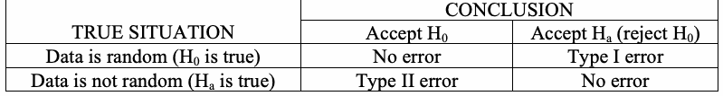
| 真の状況 | 結論 |
| H 0 を採択 / H a を採択（H 0 を棄却） | |
| データはランダム（H は真）0 | 誤りなし / 第I種の誤り |
| データはランダムでない（H は真）a | 第II種の誤り / 誤りなし |
If the data is, in truth, random, then a conclusion to reject the null hypothesis (i.e., conclude that the data is non-random) will occur a small percentage of the time. This conclusion is called a Type I error. If the data is, in truth, non-random, then a conclusion to accept the null hypothesis (i.e., conclude that the data is actually random) is called a Type II error. The conclusions to accept H when the data is really random,
データが実際にランダムである場合、帰無仮説を棄却する（すなわち、データがランダムでないと結論づける）結論が生じるのは、わずかな割合である。この結論を第I種の誤りという。データが実際にランダムでない場合、帰無仮説を採択する（すなわち、データが実際にはランダムであると結論づける）ことを第II種の誤りという。データが本当にランダムであるときに H を採択する結論と、
未レビュー訳0
未レビュー訳and to reject H when the data is non-random, are correct.
データがランダムでないときに H を棄却する結論は、正しい。
未レビュー訳0
未レビュー訳The probability of a Type I error is often called the level of significance of the test. This probability can be set prior to a test and is denoted as α. For the test, α is the probability that the test will indicate that the sequence is not random when it really is random. That is, a sequence appears to have non-random properties even when a “good” generator produced the sequence. Common values of α in cryptography are about 0.01.
第I種の誤りが起こる確率は、検定の有意水準と呼ばれることが多い。この確率は検定の前に設定でき、αで表す。この検定において、αは、系列が実際にはランダムであるにもかかわらず、検定がその系列をランダムでないと判定する確率である。つまり、「良好な」生成器が系列を生成した場合であっても、その系列が非ランダムな特性を持つように見える確率である。暗号分野でのαの一般的な値は約0.01である。
未レビュー訳The probability of a Type II error is denoted as β. For the test, β is the probability that the test will indicate that the sequence is random when it is not; that is, a “bad” generator produced a sequence that appears to have random properties. Unlike α, β is not a fixed value. β can take on many different values because there are an infinite number of ways that a data stream can be non-random, and each different way yields a different β. The calculation of the Type II error β is more difficult than the calculation of α because of the many possible types of non-randomness.
第II種の誤りが起こる確率はβで表す。この検定において、βは、系列がランダムでないにもかかわらず、検定がその系列をランダムと判定する確率である。つまり、「不良な」生成器が、ランダムな特性を持つように見える系列を生成した場合である。αとは異なり、βは固定値ではない。データストリームが非ランダムとなる方法は無限にあり、その方法ごとに異なるβが生じるため、βはさまざまな値を取り得る。非ランダム性には多くの種類があり得るため、第II種の誤りβの計算はαの計算より難しい。
未レビュー訳One of the primary goals of the following tests is to minimize the probability of a Type II error, i.e., to minimize the probability of accepting a sequence being produced by a generator as good when the generator was actually bad. The probabilities α and β are related to each other and to the size n of the tested sequence in such a way that if two of them are specified, the third value is automatically determined. Practitioners usually select a sample size n and a value for α (the probability of a Type I error – the level of significance). Then a critical point for a given statistic is selected that will produce the smallest β (the probability of a Type II error). That is, a suitable sample size is selected along with an acceptable probability of deciding that a bad generator has produced the sequence when it really is random. Then the cutoff point for acceptability is chosen such that the probability of falsely accepting a sequence as random has the smallest possible value.
以下の検定の主な目標のひとつは、第II種の誤りの確率を最小化することである。すなわち、実際には不良な生成器が生成した系列を、良好な生成器によるものとして採択する確率を最小化する。確率αとβは、検定対象の系列のサイズnと相互に関係しており、そのうち二つが指定されると、残る一つの値が自動的に決まる。実務者は通常、標本サイズnとαの値（第I種の誤りの確率、すなわち有意水準）を選ぶ。次に、所与の統計量について、第II種の誤りの確率βが最小となる臨界点を選ぶ。つまり、適切な標本サイズを選び、系列が実際にはランダムであるときに不良な生成器がその系列を生成したと判定してしまう確率を許容可能な範囲に定める。そのうえで、系列をランダムとして誤って採択する確率が可能な限り小さくなるよう、許容性のしきい値を選ぶ。
未レビュー訳Each test is based on a calculated test statistic value, which is a function of the data. If the test statistic value is S and the critical value is t, then the Type I error probability is P(S > t || H is true) = P(reject H |
各検定は、データの関数である検定統計量の計算値に基づく。検定統計量の値をS、臨界値をtとすると、第I種の誤りの確率は P(S > t || H が真) = P(H を棄却 |
未レビュー訳o
未レビュー訳o
未レビュー訳H is true), and the Type II error probability is P(S ≤ t || H is false) = P(accept H | H is false). The test 0 0
H が真)であり、第II種の誤りの確率は P(S ≤ t || H が偽) = P(H を採択 | H が偽)である。この検定 0 0
未レビュー訳0 0
0 0
未レビュー訳statistic is used to calculate a P-value that summarizes the strength of the evidence against the null hypothesis. For these tests, each P-value is the probability that a perfect random number generator would have produced a sequence less random than the sequence that was tested, given the kind of non-randomness assessed by the test. If a P-value for a test is determined to be equal to 1, then the sequence appears to have perfect randomness. A P-value of zero indicates that the sequence appears to be completely non-random. A significance level (α) can be chosen for the tests. If P-value ≥α, then the null hypothesis is accepted; i.e., the sequence appears to be random. If P-value <α, then the null hypothesis is rejected; i.e., the sequence appears to be non-random. The parameter αdenotes the probability of the Type I error. Typically, αis chosen in the range [0.001, 0.01].
統計量を用いて、帰無仮説に反する証拠の強さを要約するP値を計算する。これらの検定では、各P値は、検定で評価される種類の非ランダム性を前提として、完全な乱数生成器が検定対象の系列よりもランダム性の低い系列を生成した確率である。検定のP値が1と判定された場合、その系列は完全にランダムであるように見える。P値がゼロなら、その系列は完全にランダムでないように見える。検定には有意水準（α）を選ぶことができる。P値 ≥αの場合、帰無仮説は採択される。すなわち、系列はランダムであるように見える。P値 <αの場合、帰無仮説は棄却される。すなわち、系列はランダムでないように見える。パラメータαは第I種の誤りの確率を表す。通常、αは範囲[0.001, 0.01]から選ばれる。
未レビュー訳•An α of 0.001 indicates that one would expect one sequence in 1000 sequences to be rejected by the test if the sequence was random. For a P-value ≥ 0.001, a sequence would be considered to be random with a confidence of 99.9%. For a P-value < 0.001, a sequence would be considered to be non-random with a confidence of 99.9%.
•αを0.001とすると、系列がランダムである場合、検定によって1000系列中ひとつの系列が棄却されると予想される。P値 ≥ 0.001の場合、系列は99.9%の信頼度でランダムとみなされる。P値 < 0.001の場合、系列は99.9%の信頼度でランダムでないとみなされる。
未レビュー訳•An α of 0.01 indicates that one would expect 1 sequence in 100 sequences to be rejected. A P-value ≥ 0.01 would mean that the sequence would be considered to be random with a confidence of 99%. A P-value < 0.01 would mean that the conclusion was that the sequence is non-random with a confidence of 99%.
•αを0.01とすると、1系列が100系列中で棄却されると予想される。P値 ≥ 0.01の場合、系列は99%の信頼度でランダムとみなされる。P値 < 0.01の場合、系列は99%の信頼度でランダムでないと結論づけられる。
未レビュー訳For the examples in this document, α has been chosen to be 0.01. Note that, in many cases, the parameters in the examples do not conform to the recommended values; the examples are for illustrative purposes only.
本書の例では、αを0.01に設定している。多くの場合、例のパラメータは推奨値に準拠していない点に注意されたい。これらの例は説明のみを目的とする。
未レビュー訳1.1.6 Considerations for Randomness, Unpredictability and Testing
1.1.6 ランダム性、予測不可能性および検定に関する考慮事項
未レビュー訳The following assumptions are made with respect to random binary sequences to be tested:
検定対象となるランダムな二進系列について、次の前提を置く。
未レビュー訳1.Uniformity: At any point in the generation of a sequence of random or pseudorandom bits, the occurrence of a zero or one is equally likely, i.e., the probability of each is exactly 1/2. The expected number of zeros (or ones) is n/2, where n = the sequence length.
1.一様性：ランダムまたは擬似ランダムビットの系列を生成する過程のどの時点でも、零または一が出現する確率は等しい。すなわち、それぞれの確率は正確に1/2である。零（または一）の期待個数はn/2であり、nは系列の長さである。
未レビュー訳2.Scalability: Any test applicable to a sequence can also be applied to subsequences extracted at random. If a sequence is random, then any such extracted subsequence should also be random. Hence, any extracted subsequence should pass any test for randomness.
2.スケーラビリティ：系列に適用できる任意の検定は、そこからランダムに抽出された部分系列にも適用できる。系列がランダムであれば、そのように抽出された部分系列もランダムであるべきである。したがって、抽出された任意の部分系列は、ランダム性の検定に合格するべきである。
未レビュー訳3.Consistency: The behavior of a generator must be consistent across starting values (seeds). It is inadequate to test a PRNG based on the output from a single seed, or an RNG on the basis of an output produced from a single physical output.
3.一貫性：生成器の動作は、初期値（シード）が異なっても一貫していなければならない。単一のシードからの出力だけに基づいてPRNGを検定すること、または単一の物理出力から得られた出力だけに基づいてRNGを検定することでは不十分である。
未レビュー訳1.2 Definitions
1.2 定義
未レビュー訳| Term | Definition |
| Asymptotic Analysis | A statistical technique that derives limiting approximations for functions of interest. |
| Asymptotic Distribution | The limiting distribution of a test statistic arising when n approaches infinity. |
| Bernoulli Random Variable | A random variable that takes on the value of one with probability p and the value of zero with probability 1-p. |
| Binary Sequence | A sequence of zeroes and ones. |
| Binomial Distribution | A random variable is binomially distributed if there is an integer n and a probability p such that the random variable is the number of successes in n independent Bernoulli experiments, where the probability of success in a single experiment is p. In a Bernoulli experiment, there are only two possible outcomes. |
| Bit String | A sequence of bits. |
| Block | A subset of a bit string. A block has a predetermined length. |
| Central Limit Theorem | For a random sample of size n from a population with mean µ and variance σ2, the distribution of the sample means is approximately normal with mean µ and variance σ2/n as the sample size increases. |
| Complementary Error Function | See Erfc. |
| Confluent Hypergeometric Function | The confluent hypergeometric function is defined as Γ(b) 1 Φ(a;b;z) = ∫ ezt ta−1(1− t)b−a−1 dt,0 < a < b. Γ(a)Γ(b − a) 0 |
| Critical Value € | The value that is exceeded by the test statistic with a small probability (significance level). A "look-up" or calculated value of a test statistic (i.e., a test statistic value) that, by construction, has a small probability of occurring (e.g., 5 %) when the null hypothesis of randomness is true. |
| Cumulative Distribution Function (CDF) F(x) | A function giving the probability that the random variable X is less than or equal to x, for every value x. That is, F(x) = P(X ≤ x). |
原本の表画像
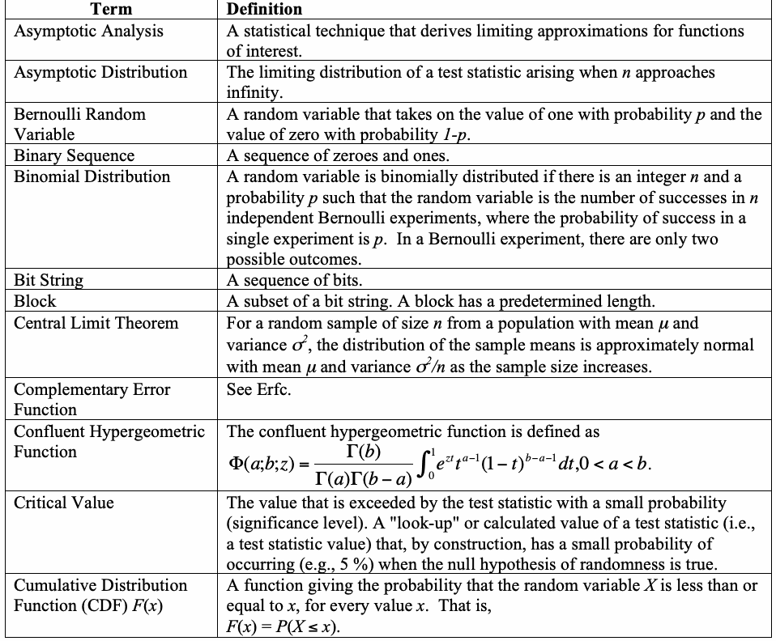
| 用語 | 定義 |
| 漸近解析 | 対象とする関数の極限近似を導出する統計的手法。 |
| 漸近分布 | nが無限大に近づくときに生じる検定統計量の極限分布。 |
| ベルヌーイ確率変数 | 確率pで一、確率1-pで零の値を取る確率変数。 |
| 二進系列 | 零と一からなる系列。 |
| 二項分布 | 整数nおよび確率pが存在し、その確率変数が、成功確率pのベルヌーイ試行をn回独立に行ったときの成功回数である場合、その確率変数は二項分布に従う。ベルヌーイ試行では、結果は二通りしかない。 |
| ビット列 | ビットの系列。 |
| ブロック | ビット列の部分集合。ブロックの長さはあらかじめ定められている。 |
| 中心極限定理 | 平均µ、分散σ2の母集団からサイズnのランダム標本を取るとき、標本サイズが増加するにつれて、標本平均の分布は平均µ、分散σ2/nの正規分布に近似される。 |
| 相補誤差関数 | Erfcを参照。 |
| 合流型超幾何関数 | 合流型超幾何関数は次式で定義される。Γ(b) 1 Φ(a;b;z) = ∫ ezt ta−1(1− t)b−a−1 dt,0 < a < b. Γ(a)Γ(b − a) 0 |
| 臨界値 € | 検定統計量が（有意水準に相当する）小さな確率で超える値。帰無仮説（ランダム性）が真であるとき、構成上、発生確率が小さい（例：5 %）検定統計量の"参照"値または計算値（すなわち、検定統計量の値）。 |
| 累積分布関数（CDF）F(x) | すべての値xについて、確率変数Xがx以下となる確率を与える関数。すなわち、F(x) = P(X ≤ x)。 |
| Entropy | A measure of the disorder or randomness in a closed system. The entropy of uncertainty of a random variable X with probabilities p, …, p is i n n defined to be H(X) = − ∑ p log p . i i i =1 |
| Entropy Source | A physical source of information whose output either appears to be random in itself or by applying some filtering/distillation process. This output is used as input to either a RNG or PRNG. |
| Erfc | The complementary error function erfc(z) is defined in Section 5.5.3. This function is related to the normal cdf. |
| Geometric Random Variable | A random variable that takes the value k, a non-negative integer with probability pk(1-p). The random variable x is the number of successes before a failure in an infinite series of Bernoulli trials. |
| Global Structure/Global Value | A structure/value that is available by all routines in the test code. |
| igamc | The incomplete gamma function Q(a,x) is defined in Section 5.5.3. |
| Incomplete Gamma Function | See the definition for igamc. |
| Hypothesis (Alternative) | A statement H that an analyst will consider as true (e.g., H : the sequence a a is non-random) if and when the null hypothesis is determined to be false. |
| Hypothesis (Null) | A statement H about the assumed default condition/property of the 0 observed sequence. For the purposes of this document, the null hypothesis H is that the sequence is random. If H is in fact true, then the reference 0 0 distribution and critical values of the test statistic may be derived. |
| Kolmogorov-Smirnov Test | A statistical test that may be used to determine if a set of data comes from a particular probability distribution. |
| Level of Significance (α) | The probability of falsely rejecting the null hypothesis, i.e., the probability of concluding that the null hypothesis is false when the hypothesis is, in fact, true. The tester usually chooses this value; typical values are 0.05, 0.01 or 0.001; occasionally, smaller values such as 0.0001 are used. The level of significance is the probability of concluding that a sequence is non-random when it is in fact random. Synonyms: Type I error, α error. |
| Linear Dependence | In the context of the binary rank matrix test, linear dependence refers to m- bit vectors that may be expressed as a linear combination of the linearly independent m-bit vectors. |
| Maple | An interactive computer algebra system that provides a complete mathematical environment for the manipulation and simplification of symbolic algebraic expressions, arbitrary extended precision mathematics, two- and three-dimensional graphics, and programming. |
| MATLAB | An integrated, technical computer environment that combines numeric computation, advanced graphics and visualization, and a high level programming language. MATLAB includes functions for data analysis and visualization; numeric and symbolic computation; engineering and scientific graphics; modeling, simulation and prototyping; and programming, application development and a GUI design. |
| Normal (Gaussian) Distribution | A continuous distribution whose density function is given by 1 − 1 x − µ 2 f ( x; µ ;σ ) = e 2 σ , where µ and σ are location and scale 2π σ 2 parameters. |
原本の表画像
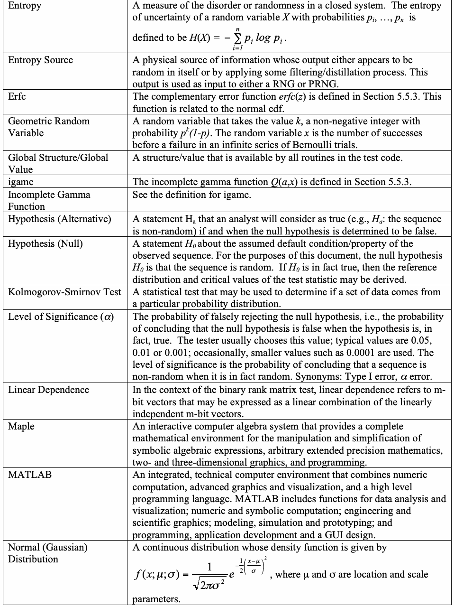
| エントロピー | 閉じた系における無秩序またはランダム性の尺度。確率p, …, pを持つ確率変数Xの不確かさのエントロピーはi n n、次式で定義される：H(X) = − ∑ p log p . i i i =1 |
| エントロピー源 | それ自体でランダムに見える出力を持つ、または何らかのフィルタリング／抽出処理を適用することでランダムに見える出力を得る物理的な情報源。この出力はRNGまたはPRNGへの入力として用いられる。 |
| Erfc | 相補誤差関数erfc(z)はセクション5.5.3で定義される。この関数は正規累積分布関数（cdf）に関連する。 |
| 幾何確率変数 | 確率pk(1-p)で値k（非負整数）を取る確率変数。確率変数xは、無限に続くベルヌーイ試行列において、失敗が起こる前の成功回数である。 |
| グローバル構造／グローバル値 | テストコード内のすべてのルーチンから利用できる構造／値。 |
| igamc | 不完全ガンマ関数Q(a,x)はセクション5.5.3で定義される。 |
| 不完全ガンマ関数 | igamcの定義を参照。 |
| 仮説（対立） | 帰無仮説が偽と判定された場合に、アナリストが真とみなす仮説H（例：H a：系列 a a は非ランダム）。 |
| 仮説（帰無） | 観測系列の既定の状態／特性についての仮定を表す命題H 0。本文書では、帰無仮説Hは系列がランダムであるというものである。Hが実際に真であれば、検定統計量の参照分布および臨界値を導出できる。0 0 |
| コルモゴロフ・スミルノフ検定 | データ集合が特定の確率分布に従うかを判定するために使用できる統計的検定。 |
| 有意水準（α） | 帰無仮説を誤って棄却する確率、すなわち、仮説が実際には真であるのに帰無仮説が偽であると結論づける確率。通常、この値は検定者が選ぶ。典型的な値は0.05、0.01または0.001であり、0.0001など、さらに小さい値が使われることもある。有意水準は、系列が実際にはランダムであるのに非ランダムであると結論づける確率である。同義語：第I種の誤り、α誤り。 |
| 線形従属 | 二進ランク行列検定では、線形従属とは、線形独立なmビットベクトルの線形結合で表せるmビットベクトルを指す。 |
| Maple | 記号代数式の操作と簡約、任意の拡張精度の数学計算、二次元および三次元のグラフィックス、ならびにプログラミングのための完全な数学環境を提供する対話型数式処理システム。 |
| MATLAB | 数値計算、高度なグラフィックスと可視化、および高水準プログラミング言語を組み合わせた統合技術計算環境。MATLABには、データ解析と可視化、数値・記号計算、工学・科学グラフィックス、モデリング・シミュレーション・プロトタイピング、プログラミング、アプリケーション開発およびGUI設計のための関数が含まれる。 |
| 正規（ガウス）分布 | 確率密度関数が次式で与えられる連続分布：1 − 1 x − µ 2 f ( x; µ ;σ ) = e 2 σ , 2π σ 2。ここでµおよびσは位置および尺度のパラメータである。 |
| P-value | The probability (under the null hypothesis of randomness) that the chosen test statistic will assume values that are equal to or worse than the observed test statistic value when considering the null hypothesis. The P- value is frequently called the “tail probability.” |
| Poisson Distribution - §3.8 | Poisson distributions model (some) discrete random variables. Typically, a Poisson random variable is a count of the number of rare events that occur in a certain time interval. |
| Probability Density Function (PDF) | A function that provides the "local" probability distribution of a test statistic. From a finite sample size n, a probability density function will be approximated by a histogram. |
| Probability Distribution | The assignment of a probability to the possible outcomes (realizations) of a random variable. |
| Pseudorandom Number Generator (PRNG) | A deterministic algorithm which, given a truly random binary sequence of length k, outputs a binary sequence of length l >> k which appears to be random. The input to the generator is called the seed, while the output is called a pseudorandom bit sequence. |
| Random Number Generator (RNG) | A mechanism that purports to generate truly random data. |
| Random Binary Sequence | A sequence of bits for which the probability of each bit being a “0” or “1” is ½. The value of each bit is independent of any other bit in the sequence, i.e., each bit is unpredictable. |
| Random Variable | Random variables differ from the usual deterministic variables (of science and engineering) in that random variables allow the systematic distributional assignment of probability values to each possible outcome. |
| Rank (of a matrix) | Refers to the rank of a matrix in linear algebra over GF(2). Having reduced a matrix into row-echelon form via elementary row operations, the number of nonzero rows, if any, are counted in order to determine the number of linearly independent rows or columns in the matrix. |
| Run | An uninterrupted sequence of like bits (i.e., either all zeroes or all ones). |
| Seed | The input to a pseudorandom number generator. Different seeds generate different pseudorandom sequences. |
| SHA-1 | The Secure Hash Algorithm defined in Federal Information Processing Standard 180-1. |
| Standard Normal Cumulative Distribution Function | See the definition in Section 5.5.3. This is the normal function for mean = 0 and variance = 1. |
| Statistically Independent Events | Two events are independent if the occurrence of one event does not affect the chances of the occurrence of the other event. The mathematical formulation of the independence of events A and B is the probability of the occurrence of both A and B being equal to the product of the probabilities of A and B (i.e., P(A and B) = P(A)P(B)). |
| Statistical Test (of a Hypothesis) | A function of the data (binary stream) which is computed and used to decide whether or not to reject the null hypothesis. A systematic statistical rule whose purpose is to generate a conclusion regarding whether the experimenter should accept or reject the null hypothesis H . o |
| Word | A predefined substring consisting of a fixed pattern/template (e.g., 010, 0110). |
原本の表画像
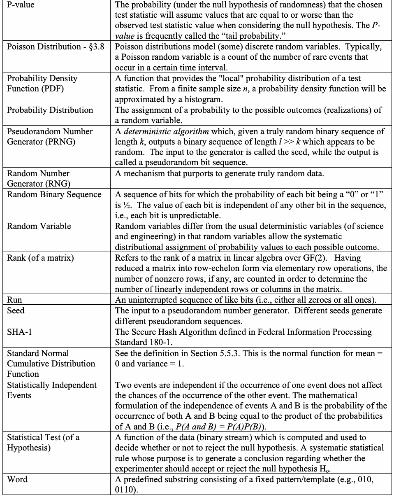
| P値 | （ランダム性の帰無仮説の下で）選択した検定統計量が、帰無仮説を考慮したときに、観測された検定統計量の値と同等またはそれ以上に不利な値を取る確率。P値は「裾確率」と呼ばれることも多い。 |
| ポアソン分布 - §3.8 | ポアソン分布は、離散確率変数の一部をモデル化する。通常、ポアソン確率変数は、ある時間区間に発生するまれな事象の回数である。 |
| 確率密度関数（PDF） | 検定統計量の"局所的な"確率分布を与える関数。有限の標本サイズnからは、確率密度関数をヒストグラムで近似する。 |
| 確率分布 | 確率変数の起こり得る結果（実現値）に確率を割り当てること。 |
| 疑似乱数生成器（PRNG） | 真にランダムな長さkの二進系列を入力として受け取り、ランダムに見える長さlの二進系列（l >> k）を出力する決定論的アルゴリズム。生成器への入力をシード、出力を疑似ランダムビット系列という。 |
| 乱数生成器（RNG） | 真にランダムなデータを生成すると称する仕組み。 |
| ランダム二進系列 | 各ビットが「0」または「1」となる確率が½であるビット系列。系列内の各ビットの値は他のどのビットからも独立しており、すなわち各ビットは予測不可能である。 |
| 確率変数 | 確率変数は、通常の決定論的な変数（科学・工学で用いられるもの）とは異なり、起こり得る各結果に確率値を体系的に分布させることを可能にする。 |
| （行列の）ランク | GF(2)上の線形代数における行列のランクを指す。基本行操作によって行列を行階段形に変換した後、線形独立な行または列の数を求めるため、存在する場合は零でない行の数を数える。 |
| ラン | 同じビット（すなわち、すべて零またはすべて一）が途切れずに続く系列。 |
| シード | 疑似乱数生成器への入力。異なるシードは異なる疑似ランダム系列を生成する。 |
| SHA-1 | 連邦情報処理規格180-1で定義されるセキュアハッシュアルゴリズム。 |
| 標準正規累積分布関数 | セクション5.5.3の定義を参照。これは平均 = 0、分散 = 1の正規関数である。 |
| 統計的に独立な事象 | 一方の事象の発生が、他方の事象の発生確率に影響しない場合、二つの事象は独立である。事象AとBの独立性は、AとBの両方が発生する確率が、AとBそれぞれの発生確率の積に等しいこととして数式で表される（すなわち、P(A and B) = P(A)P(B)）。 |
| 統計的検定（仮説の） | データ（二進ストリーム）の関数であり、計算して帰無仮説を棄却するかどうかの判断に用いるもの。実験者が帰無仮説H oを採択すべきか棄却すべきかについて結論を導くことを目的とした体系的な統計規則。 |
| ワード | 固定されたパターン／テンプレートからなる、あらかじめ定義された部分文字列（例：010、0110）。 |
1.3 Abbreviations
1.3 略語
未レビュー訳| Abbreviation | Definition |
| ANSI | American National Standards Institute |
| FIPS | Federal Information Processing Standard |
| NIST | National Institute of Standards and Technology |
| RNG | Random Number Generator |
| SHA-1 | Secure Hash Algorithm |
原本の表画像

| 略語 | 定義 |
| ANSI | 米国規格協会 |
| FIPS | 連邦情報処理規格 |
| NIST | 米国国立標準技術研究所 |
| RNG | 乱数生成器 |
| SHA-1 | セキュアハッシュアルゴリズム |
1.4 Mathematical Symbols
1.4 数学記号
未レビュー訳In general, the following notation is used throughout this document. However, the tests in this document have been designed and described by multiple authors who may have used slightly different notation. The reader is advised to consider the notation used for each test separate from that notation used in other tests.
一般に、本文書全体では次の表記法を用いる。ただし、本文書の各検定は複数の著者によって設計・記述されており、著者ごとにわずかに異なる表記法が使われている場合がある。読者は、各検定で使われる表記法を、他の検定で使われる表記法とは別個に考慮することが推奨される。
未レビュー訳| Symbol | Meaning |
| x | The floor function of x; for a given real positive x, x = x-g, where x is a non-negative integer, and 0 ≤ g < 1 . |
| α | The significance level. |
| d | The normalized difference between the observed and expected number of frequency components. See Sections 2.6 and 3.6. |
| ∇ψ2 (obs); m ∇ 2ψ2 (obs) m | A measure of how well the observed values match the expected value. See Sections 2.11 and 3.11. |
| E[ ] | The expected value of a random variable. |
| ε | The original input string of zero and one bits to be tested. |
| ε i | The ith bit in the original sequence ε. |
| H 0 | The null hypothesis; i.e., the statement that the sequence is random. |
| log(x) | The natural logarithm of x: log(x) = log (x) = ln(x). e |
| log (x) 2 | ln( x ) Defined as , where ln is the natural logarithm. ln( 2 ) |
| M | The number of bits in a substring (block) being tested. |
| N | The number of M-bit blocks to be tested. |
| n | The number of bits in the stream being tested. |
| f n | The sum of the log distances between matching L-bit templates, i.e., the sum of the 2 number of digits in the distance between L-bit templates. See Sections 2.9 and 3.9. |
| π | 3.14159… unless defined otherwise for a specific test. |
| σ | The standard deviation of a random variable = ∫ (x − µ )2 f ( x )dx . |
| σ2 | The variance of a random variable = (standard deviation)2 . |
| s obs | The observed value which is used as a statistic in the Frequency test. |
| S n | The nth partial sum for values X = {-1, +1}; i.e., the sum of the first n values of X. i i |
| Σ | The summation symbol. |
| Φ | Standard Normal Cumulative Distribution Function (see Section 5.5.3). |
| ξ j | The total number of times that a given state occurs in the identified cycles. See Section 2.15 and 3.15. |
| X i | The elements of the string consisting of ±1 that is to be tested for randomness, where X = 2ε-1. i i |
原本の表画像
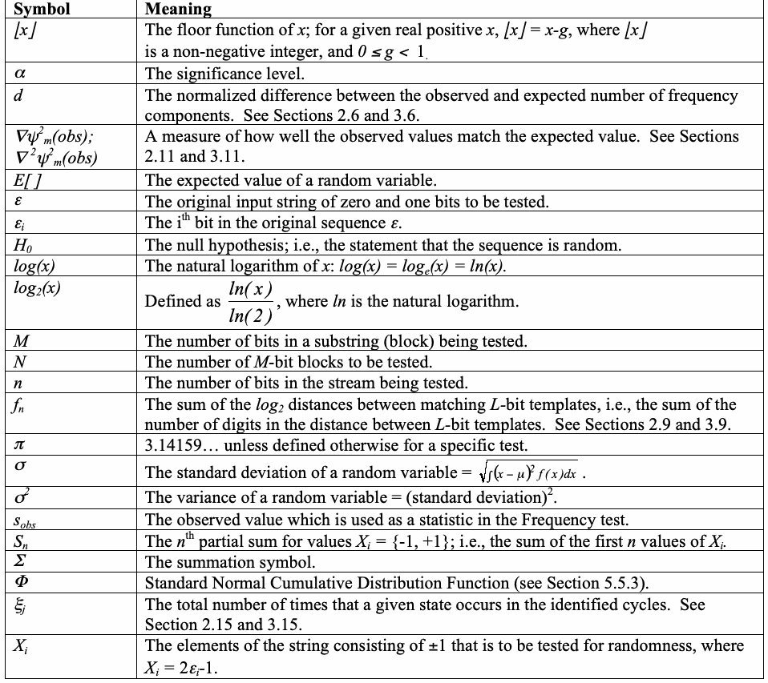
| 記号 | 意味 |
| x | xの床関数。正の実数xについて、x = x-gであり、xは非負整数、かつ0 ≤ g < 1である。 |
| α | 有意水準。 |
| d | 観測された度数成分数と期待度数成分数との差を正規化した値。セクション2.6および3.6を参照。 |
| ∇ψ2 (obs); m ∇ 2ψ2 (obs) m | 観測値が期待値にどの程度一致するかを示す尺度。セクション2.11および3.11を参照。 |
| E[ ] | 確率変数の期待値。 |
| ε | 検定対象となる、元の零と一のビット入力文字列。 |
| ε i | 元の系列εのi番目のビット。 |
| H 0 | 帰無仮説。すなわち、系列がランダムであるという命題。 |
| log(x) | xの自然対数：log(x) = log (x) = ln(x)。e |
| log (x) 2 | ln( x )をln( 2 )で割ったものと定義する。ここでlnは自然対数である。 |
| M | 検定対象の部分文字列（ブロック）内のビット数。 |
| N | 検定対象となるMビットブロックの数。 |
| n | 検定対象のストリーム内のビット数。 |
| f n | 一致するLビットテンプレート間の距離の対数の総和。すなわち、2を底とする対数におけるLビットテンプレート間の距離の桁数の総和。セクション2.9および3.9を参照。 |
| π | 個別の検定で別途定義されない限り、3.14159…。 |
| σ | 確率変数の標準偏差 = ∫ (x − µ )2 f ( x )dx . |
| σ2 | 確率変数の分散 = (標準偏差)2。 |
| s obs | 度数検定で統計量として用いる観測値。 |
| S n | 値X = {-1, +1}に対するn番目の部分和。すなわち、Xの最初のn個の値の和。i i |
| Σ | 総和記号。 |
| Φ | 標準正規累積分布関数（セクション5.5.3を参照）。 |
| ξ j | 特定されたサイクル内で所与の状態が出現する総回数。セクション2.15および3.15を参照。 |
| X i | ランダム性を検定する±1からなる文字列の要素。ここでX = 2ε-1である。i i |
| χ2 | The [theoretical] chi-square distribution; used as a test statistic; also, a test statistic that follows the χ2 distribution. |
| χ2(obs) | The chi-square statistic computed on the observed values. See Sections 2.2, 2.4, 2.5, 2.7, 2.8, 2.10, 2.12, 2.14, and the corresponding sections of Section 3. |
| V n | The expected number of runs that would occur in a sequence of length n under an assumption of randomness See Sections 2.3 and 3.3. |
| V (obs) n | The observed number of runs in a sequence of length n. See Sections 2.3 and 3.3. |
原本の表画像
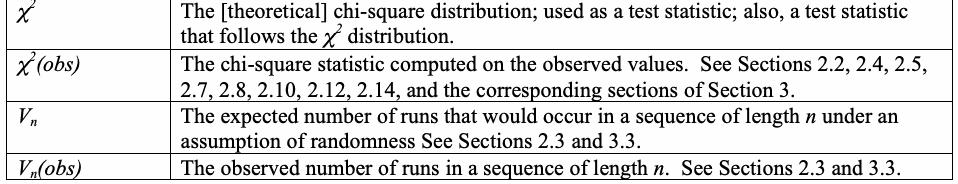
| χ2 | [理論上の]カイ二乗分布。検定統計量として用いられ、またχ2分布に従う検定統計量を指す。 |
| χ2(obs) | 観測値に基づいて計算したカイ二乗統計量。セクション2.2、2.4、2.5、2.7、2.8、2.10、2.12、2.14およびセクション3の対応する各節を参照。 |
| V n | ランダム性を仮定したとき、長さnの系列に現れると期待されるランの数。セクション2.3および3.3を参照。 |
| V (obs) n | 長さnの系列で観測されたランの数。セクション2.3および3.3を参照。 |
2. Random Number Generation Tests
2. 乱数生成検定
未レビュー訳The NIST Test Suite is a statistical package consisting of 15 tests that were developed to test the randomness of (arbitrarily long) binary sequences produced by either hardware or software based cryptographic random or pseudorandom number generators. These tests focus on a variety of different types of non-randomness that could exist in a sequence. Some tests are decomposable into a variety of subtests. The 15 tests are:
NIST検定スイートは、ハードウェアまたはソフトウェアに基づく暗号用乱数生成器もしくは疑似乱数生成器が生成する（任意に長い）二進系列のランダム性を検定するために開発された、15種類の検定からなる統計パッケージである。これらの検定は、系列に存在し得るさまざまな種類の非ランダム性に着目する。一部の検定は複数のサブ検定に分割できる。15種類の検定は次のとおりである。
未レビュー訳1.The Frequency (Monobit) Test,
1.度数（単一ビット）検定、
未レビュー訳2.Frequency Test within a Block,
2.ブロック内の度数検定、
未レビュー訳3.The Runs Test,
3.ラン検定、
未レビュー訳4.Tests for the Longest-Run-of-Ones in a Block,
4.ブロック内の最長連続一検定、
未レビュー訳5.The Binary Matrix Rank Test,
5.二進行列ランク検定、
未レビュー訳6.The Discrete Fourier Transform (Spectral) Test,
6.離散フーリエ変換（スペクトル）検定、
未レビュー訳7.The Non-overlapping Template Matching Test,
7.非重複テンプレートマッチング検定、
未レビュー訳8.The Overlapping Template Matching Test,
8.重複テンプレートマッチング検定、
未レビュー訳9.Maurer's "Universal Statistical" Test,
9.Maurer's "Universal Statistical"検定、
未レビュー訳10.The Linear Complexity Test,
10.線形複雑度検定、
未レビュー訳11.The Serial Test,
11.系列検定、
未レビュー訳12.The Approximate Entropy Test,
12.近似エントロピー検定、
未レビュー訳13.The Cumulative Sums (Cusums) Test,
13.累積和（Cusums）検定、
未レビュー訳14.The Random Excursions Test, and
14.ランダム逸脱検定、および
未レビュー訳15.The Random Excursions Variant Test.
15.ランダム逸脱変形検定。
未レビュー訳This section (Section 2) consists of 15 subsections, one subsection for each test. Each subsection provides a high level description of the particular test. The corresponding subsections in Section 3 provide the technical details for each test.
本セクション（セクション2）は15の小節からなり、各小節はそれぞれ一つの検定に対応する。各小節では、該当する検定の概要を説明する。セクション3の対応する小節では、各検定の技術的詳細を説明する。
未レビュー訳Section 4 provides a discussion of testing strategy and the interpretation of test results. The order of the application of the tests in the test suite is arbitrary. However, it is recommended that the Frequency test be run first, since this supplies the most basic evidence for the existence of non-randomness in a sequence, specifically, non-uniformity. If this test fails, the likelihood of other tests failing is high. (Note: The most time-consuming statistical test is the Linear Complexity test; see Sections 2.10 and 3.10).
セクション4では、検定戦略と検定結果の解釈について説明する。検定スイート内の検定を適用する順序は任意である。ただし、度数検定を最初に実行することが推奨される。これは、系列に非ランダム性、具体的には非一様性が存在することについて、最も基本的な証拠を得られるためである。この検定に失敗した場合、他の検定も失敗する可能性が高い。（注：最も時間のかかる統計検定は線形複雑度検定である。セクション2.10および3.10を参照。）
未レビュー訳Section 5 provides a user's guide for setting up and running the tests, and a discussion on program layout. The statistical package includes source code and sample data sets. The test code was developed in ANSI C. Some inputs are assumed to be global values rather than calling parameters.
セクション5では、検定の設定および実行に関するユーザー's ガイドを示し、プログラム構成について説明する。統計パッケージにはソースコードとサンプルデータセットが含まれる。検定コードはANSI Cで開発された。一部の入力は、呼び出しパラメータではなくグローバル値であると想定される。
未レビュー訳A number of tests in the test suite have the standard normal and the chi-square ( χ2 ) as reference distributions. If the sequence under test is in fact non-random, the calculated test statistic will fall in extreme regions of the reference distribution. The standard normal distribution (i.e., the bell-shaped curve) is used to compare the value of the test statistic obtained from the RNG with the expected value of the statistic under the assumption of randomness. The test statistic for the standard normal distribution is of the form z = (x - µ)/σ, where x is the sample test statistic value, and µand σ2 are the expected value and the variance of the test statistic. The χ2 distribution (i.e., a left skewed curve) is used to compare the goodness-of-fit of the observed frequencies of a sample measure to the corresponding expected frequencies of the hypothesized distribution. The test statistic is of the form χ2 = ∑((o − e )2 e ),
検定スイート内のいくつかの検定では、標準正規分布およびカイ二乗分布（χ2）を参照分布として用いる。検定対象の系列が実際に非ランダムであれば、計算された検定統計量は参照分布の極端な領域に入る。標準正規分布（すなわち釣鐘型曲線）は、RNGから得られた検定統計量の値を、ランダム性を仮定した場合の統計量の期待値と比較するために用いられる。標準正規分布に対する検定統計量は、z = (x - µ)/σ の形を取り、xは標本の検定統計量の値、µおよびσ2は検定統計量の期待値および分散である。カイ二乗分布（χ2、すなわち左に歪んだ曲線）は、標本測度の観測度数と、仮定した分布に対応する期待度数との適合度を比較するために用いられる。検定統計量は χ2 = ∑((o − e )2 e ), の形を取る。
未レビュー訳i i i
i i i
未レビュー訳where o and e are the observed and expected frequencies of occurrence of the measure, respectively.
ここで、oおよびeは、それぞれ測度の出現について観測された度数および期待度数である。
未レビュー訳i i
i i
未レビュー訳For many of the tests in this test suite, the assumption has been made that the size of the sequence length, n, is large (of the order 103 to 107). For such large sample sizes of n, asymptotic reference distributions have been derived and applied to carry out the tests. Most of the tests are applicable for smaller values of n. However, if used for smaller values of n, the asymptotic reference distributions would be inappropriate and would need to be replaced by exact distributions that would commonly be difficult to compute.
この検定スイートに含まれる多くの検定では、系列長nが大きい（103から107のオーダー）と仮定している。このようにnが大きい標本サイズについては、漸近参照分布が導出され、検定の実施に用いられている。ほとんどの検定は、より小さいnにも適用できる。ただし、より小さいnに用いる場合、漸近参照分布は不適切となるため、通常は計算が困難な厳密分布に置き換える必要がある。
未レビュー訳Note: For many of the examples throughout Section 2, small sample sizes are used for illustrative purposes only, e.g., n = 10. The normal approximation is not really applicable for these examples.
注：セクション2全体の多くの例では、説明のみを目的として小さい標本サイズが使われている（例：n = 10）。これらの例には正規近似は実際には適用できない。
未レビュー訳2.1 Frequency (Monobit) Test
2.1 度数（単一ビット）検定
未レビュー訳2.1.1 Test Purpose
2.1.1 検定の目的
未レビュー訳The focus of the test is the proportion of zeroes and ones for the entire sequence. The purpose of this test is to determine whether the number of ones and zeros in a sequence are approximately the same as would be expected for a truly random sequence. The test assesses the closeness of the fraction of ones to ½, that is, the number of ones and zeroes in a sequence should be about the same. All subsequent tests depend on the passing of this test.
この検定は、系列全体における零と一の割合に着目する。この検定の目的は、系列中の一と零の数が、真にランダムな系列について期待される数とおおむね等しいかどうかを判定することである。この検定は、一の割合が½に近いか、すなわち、系列中の一と零の数がおおむね同じであるべきかを評価する。以降のすべての検定は、この検定に合格することを前提とする。
未レビュー訳2.1.2 Function Call
2.1.2 関数呼び出し
未レビュー訳Frequency(n), where:
Frequency(n)：ここで、
未レビュー訳n The length of the bit string.
n ビット列の長さ。
未レビュー訳Additional input used by the function, but supplied by the testing code:
関数が使用する追加の入力。ただし、これらは検定コードから与えられる。
未レビュー訳ε The sequence of bits as generated by the RNG or PRNG being tested; this exists as a global structure at the time of the function call; ε= ε , ε , … , ε .
ε 検定対象のRNGまたはPRNGが生成したビット系列。この系列は関数呼び出し時にグローバル構造として存在する。ε= ε , ε , … , ε .
未レビュー訳1 2 n
1 2 n
未レビュー訳2.1.3 Test Statistic and Reference Distribution
2.1.3 検定統計量と参照分布
未レビュー訳s The absolute value of the sum of the X (where, X = 2ε- 1 = ±1) in the sequence divided obs: i
s_obs：系列内のX_i（ただし、X_i = 2ε- 1 = ±1）の総和の絶対値を
未レビュー訳i
未レビュー訳by the square root of the length of the sequence.
系列長の平方根で除した値。
未レビュー訳The reference distribution for the test statistic is half normal (for large n). (Note: If z (where z = s 2 ; see Section 3.1) is distributed as normal, then |z| is distributed as half normal.) If the
検定統計量の参照分布は半正規分布である（nが大きい場合）。（注：z（z = s 2 ; セクション3.1を参照）が正規分布に従うなら、|z|は半正規分布に従う。）系列が
未レビュー訳obs
obs
未レビュー訳sequence is random, then the plus and minus ones will tend to cancel one another out so that the test statistic will be about 0. If there are too many ones or too many zeroes, then the test statistic will tend to be larger than zero.
系列がランダムであれば、正負の一は互いに打ち消し合う傾向があり、検定統計量はおよそ0となる。一または零が多すぎる場合、検定統計量は零より大きくなる傾向がある。
未レビュー訳2.1.4 Test Description
2.1.4 検定の説明
未レビュー訳(1) Conversion to ±1: The zeros and ones of the input sequence (ε) are converted to values of –1 and +1 and are added together to produce S = X + X ++X , where X = 2ε – 1.
（1）±1への変換：入力系列（ε）の零と一を−1および+1の値に変換し、それらを加算して S = X + X ++X とする。ここで X = 2ε – 1。
未レビュー訳i i
i i
未レビュー訳n 1 2 n
n 1 2 n
未レビュー訳For example, if ε= 1011010101, then n=10 and S = 1 + (-1) + 1 + 1 + (-1) + 1 + (-1) + 1 + n (-1) + 1 = 2.
例えば、ε= 1011010101の場合、n=10であり、S = 1 + (-1) + 1 + 1 + (-1) + 1 + (-1) + 1 + (-1) + 1 = 2となる。
未レビュー訳S
未レビュー訳n
未レビュー訳(2) Compute the test statistic s =
（2）検定統計量 s = を計算する。
未レビュー訳obs
obs
未レビュー訳n
未レビュー訳2
未レビュー訳For the example in this section, s = = .632455532. obs
本節の例では、s = = .632455532。 obs
未レビュー訳10
未レビュー訳 s
s
未レビュー訳(3) Compute P-value = erfc obs , where erfc is the complementary error function as defined in
（3）P値 = erfc obs を計算する。ここで、erfcは相補誤差関数であり、次のように定義される。
未レビュー訳 2
2
未レビュー訳Section 5.5.3.
セクション5.5.3。
未レビュー訳 .632455532
.632455532
未レビュー訳For the example in this section, P-value = erfc
本節の例では、P値 = erfc
未レビュー訳 = 0.527089.
= 0.527089。
未レビュー訳 2
2
未レビュー訳2.1.5 Decision Rule (at the 1% Level)
2.1.5 判定規則（1%水準）
未レビュー訳If the computed P-value is < 0.01, then conclude that the sequence is non-random. Otherwise, conclude that the sequence is random.
計算されたP値が < 0.01 の場合、系列は非ランダムであると結論する。それ以外の場合、系列はランダムであると結論する。
未レビュー訳2.1.6 Conclusion and Interpretation of Results
2.1.6 結論と結果の解釈
未レビュー訳Since the P-value obtained in step 3 of Section 2.1.4 is ≥ 0.01 (i.e., P-value = 0.527089), the conclusion is that the sequence is random.
手順3（セクション2.1.4）で得られたP値は ≥ 0.01（すなわち、P値 = 0.527089）であるため、この系列はランダムであると結論する。
未レビュー訳Note that if the P-value were small (< 0.01), then this would be caused by S or s being large.
P値が小さい（< 0.01）場合、それはSまたはsが大きいためであることに注意する。
未レビュー訳n obs
n obs
未レビュー訳Large positive values of S are indicative of too many ones, and large negative values of S are indicative
Sの大きな正の値は一が多すぎることを示し、Sの大きな負の値は
未レビュー訳n
未レビュー訳n
未レビュー訳of too many zeros.
零が多すぎることを示す。
未レビュー訳2.1.7 Input Size Recommendation
2.1.7 入力サイズの推奨
未レビュー訳It is recommended that each sequence to be tested consist of a minimum of 100 bits (i.e., n ≥100).
検定対象の各系列は、最低100ビット（すなわち、n ≥100）で構成することが推奨される。
未レビュー訳2.1.8 Example
2.1.8 例
未レビュー訳(input)
（入力）
未レビュー訳ε= 11001001000011111101101010100010001000010110100011 00001000110100110001001100011001100010100010111000
ε= 11001001000011111101101010100010001000010110100011 00001000110100110001001100011001100010100010111000
未レビュー訳(input)
（入力）
未レビュー訳n = 100
n = 100
未レビュー訳(processing) S = -16 100
（処理）S = -16 100
未レビュー訳(processing) s = 1.6 obs
（処理）s = 1.6 obs
未レビュー訳(output) P-value = 0.109599
（出力）P値 = 0.109599
未レビュー訳(conclusion) Since P-value ≥0.01, accept the sequence as random.
（結論）P値 ≥0.01なので、系列をランダムとして採択する。
未レビュー訳2.2 Frequency Test within a Block
2.2 ブロック内の度数検定
未レビュー訳2.2.1 Test Purpose
2.2.1 検定の目的
未レビュー訳The focus of the test is the proportion of ones within M-bit blocks. The purpose of this test is to determine whether the frequency of ones in an M-bit block is approximately M/2, as would be expected under an assumption of randomness. For block size M=1, this test degenerates to test 1, the Frequency (Monobit) test.
この検定は、Mビットブロック内の一の割合に着目する。この検定の目的は、ランダム性を仮定した場合に期待される状態と比べ、Mビットブロック内の一の頻度がおおむねM/2であるかどうかを判定することである。ブロックサイズM=1の場合、この検定は検定1、度数（単一ビット）検定と同じになる。
未レビュー訳2.2.2 Function Call
2.2.2 関数呼び出し
未レビュー訳BlockFrequency(M,n), where:
BlockFrequency(M,n)：ここで、
未レビュー訳M The length of each block.
M 各ブロックの長さ。
未レビュー訳n The length of the bit string.
n ビット列の長さ。
未レビュー訳Additional input used by the function, but supplied by the testing code:
関数が使用する追加の入力。ただし、これらは検定コードから与えられる。
未レビュー訳ε The sequence of bits as generated by the RNG or PRNG being tested; this exists as a global structure at the time of the function call; ε= ε , ε , … , ε .
ε 検定対象のRNGまたはPRNGが生成したビット系列。この系列は関数呼び出し時にグローバル構造として存在する。ε= ε , ε , … , ε .
未レビュー訳1 2 n
1 2 n
未レビュー訳2.2.3 Test Statistic and Reference Distribution
2.2.3 検定統計量と参照分布
未レビュー訳2 χ (obs): A measure of how well the observed proportion of ones within a given M-bit
2 χ (obs)：所与のMビット
未レビュー訳block match the expected proportion (1/2).
ブロック内で観測された一の割合が、期待される割合（1/2）にどの程度一致するかを示す尺度。
未レビュー訳The reference distribution for the test statistic is a χ2 distribution.
検定統計量の参照分布はχ2分布である。
未レビュー訳2.2.4 Test Description
2.2.4 検定の説明
未レビュー訳 n (1) Partition the input sequence into N = non-overlapping blocks. Discard any unused bits. M
n （1）入力系列をN = に従って、重複しないブロックに分割する。未使用のビットは破棄する。 M
未レビュー訳For example, if n = 10, M = 3 and ε= 0110011010, 3 blocks (N = 3) would be created, consisting of 011, 001 and 101. The final 0 would be discarded.
例えば、n = 10、M = 3、ε= 0110011010の場合、3個のブロック（N = 3）が作成され、011、001、101からなる。末尾の0は破棄される。
未レビュー訳M ∑ε (i−1)M+ j j=1
M ∑ε (i−1)M+ j j=1
未レビュー訳(2) Determine the proportion π of ones in each M-bit block using the equation π =
（2）次の式を用いて、各Mビットブロック内の一の割合πを求める：π =
未レビュー訳,
未レビュー訳i
未レビュー訳i
未レビュー訳M
未レビュー訳for 1 ≤ i ≤ N.
1 ≤ i ≤ Nについて。
未レビュー訳For the example in this section, π = 2/3, π = 1/3, and π = 2/3. 1
本節の例では、π = 2/3、π = 1/3、π = 2/3。1
未レビュー訳2
未レビュー訳3
未レビュー訳N
未レビュー訳(3) Compute the χ2 statistic: χ2(obs) = 4 M ∑(π - ½)2.
（3）χ2統計量を計算する：χ2(obs) = 4 M ∑(π - ½)2。
未レビュー訳i i=1
i i=1
未レビュー訳For the example in this section, χ2(obs) = 4 x 3 x (23 − 12)2 + (13 − 12)2 + (23 − 12)2 = 1.
本節の例では、χ2(obs) = 4 x 3 x (23 − 12)2 + (13 − 12)2 + (23 − 12)2 = 1。
未レビュー訳
未レビュー訳(4) Compute P-value = igamc (N/2, χ2(obs)/2) , where igamc is the incomplete gamma function for
（4）P値 = igamc (N/2, χ2(obs)/2)を計算する。ここで、igamcは不完全ガンマ関数の
未レビュー訳Q(a,x) as defined in Section 5.5.3.
Q(a,x)であり、セクション5.5.3で定義される。
未レビュー訳Note: When comparing this section against the technical description in Section 3.2, note that Q(a,x) = 1-P(a,x).
注：本セクションとセクション3.2の技術的説明を比較する際は、Q(a,x) = 1-P(a,x)であることに注意する。
未レビュー訳 3 1
3 1
未レビュー訳For the example in this section, P-value = igamc , = 0.801252.
本節の例では、P値 = igamc , = 0.801252。
未レビュー訳 2 2
2 2
未レビュー訳2.2.5 Decision Rule (at the 1% Level)
2.2.5 判定規則（1%水準）
未レビュー訳If the computed P-value is < 0.01, then conclude that the sequence is non-random. Otherwise, conclude that the sequence is random.
計算されたP値が < 0.01 の場合、系列は非ランダムであると結論する。それ以外の場合、系列はランダムであると結論する。
未レビュー訳2.2.6 Conclusion and Interpretation of Results
2.2.6 結論と結果の解釈
未レビュー訳Since the P-value obtained in step 4 of Section 2.2.4 is ≥ 0.01 (i.e., P-value = 0.801252), the conclusion is that the sequence is random.
ステップ4（セクション2.2.4）で得られたP値は ≥ 0.01（すなわち、P値 = 0.801252）であるため、この系列はランダムであると結論する。
未レビュー訳Note that small P-values (< 0.01) would have indicated a large deviation from the equal proportion of ones and zeros in at least one of the blocks.
P値が小さい（< 0.01）場合、少なくとも一つのブロックで一と零の割合が等しい状態から大きく逸脱していることを示す。
未レビュー訳2.2.7 Input Size Recommendation
2.2.7 入力サイズの推奨
未レビュー訳It is recommended that each sequence to be tested consist of a minimum of 100 bits (i.e., n ≥100). Note that n ≥MN. The block size M should be selected such that M ≥20, M > .01n and N < 100.
検定対象の各系列は、最低100ビット（すなわち、n ≥100）で構成することが推奨される。n ≥MNであることに注意する。ブロックサイズMは、M ≥20、M > .01n、かつN < 100となるように選ぶべきである。
未レビュー訳2.2.8 Example
2.2.8 例
未レビュー訳(input)
（入力）
未レビュー訳ε= 11001001000011111101101010100010001000010110100011 00001000110100110001001100011001100010100010111000
ε= 11001001000011111101101010100010001000010110100011 00001000110100110001001100011001100010100010111000
未レビュー訳(input)
（入力）
未レビュー訳n = 100
n = 100
未レビュー訳(input)
（入力）
未レビュー訳M = 10
M = 10
未レビュー訳(processing) N = 10
（処理）N = 10
未レビュー訳(processing) χ2 = 7.2
（処理）χ2 = 7.2
未レビュー訳(output) P-value = 0.706438
（出力）P値 = 0.706438
未レビュー訳(conclusion) Since P-value ≥0.01, accept the sequence as random.
（結論）P値 ≥0.01なので、系列をランダムとして採択する。
未レビュー訳2.3 Runs Test
2.3 ラン検定
未レビュー訳2.3.1 Test Purpose
2.3.1 検定の目的
未レビュー訳The focus of this test is the total number of runs in the sequence, where a run is an uninterrupted sequence of identical bits. A run of length k consists of exactly k identical bits and is bounded before and after with a bit of the opposite value. The purpose of the runs test is to determine whether the number of runs of ones and zeros of various lengths is as expected for a random sequence. In particular, this test determines whether the oscillation between such zeros and ones is too fast or too slow.
この検定は、系列内のランの総数に着目する。ランとは、同じビットが途切れずに連続する区間である。長さkのランは、同一のビットがちょうどk個連続したもので、その前後は反対の値のビットで区切られる。ラン検定の目的は、さまざまな長さの一および零のランの数が、ランダム系列で期待されるとおりかどうかを判定することである。特に、この検定では、そのような零と一の交替が速すぎるか遅すぎるかを判定する。
未レビュー訳2.3.2 Function Call
2.3.2 関数呼び出し
未レビュー訳Runs(n), where:
Runs(n)：ここで、
未レビュー訳n The length of the bit string.
n ビット列の長さ。
未レビュー訳Additional inputs for the function, but supplied by the testing code:
関数への追加の入力。ただし、これらは検定コードから与えられる。
未レビュー訳ε The sequence of bits as generated by the RNG or PRNG being tested; this exists as a global structure at the time of the function call; ε= ε , ε , … , ε .
ε 検定対象のRNGまたはPRNGが生成したビット系列。この系列は関数呼び出し時にグローバル構造として存在する。ε= ε , ε , … , ε .
未レビュー訳1 2 n
1 2 n
未レビュー訳2.3.3 Test Statistic and Reference Distribution
2.3.3 検定統計量と参照分布
未レビュー訳V (obs): The total number of runs (i.e., the total number of zero runs + the total number of n
V_n (obs)：ランの総数（すなわち、零ランの総数と
未レビュー訳one-runs) across all n bits.
一ランの総数の合計）を全nビットにわたって数える。
未レビュー訳The reference distribution for the test statistic is a χ2 distribution.
検定統計量の参照分布はχ2分布である。
未レビュー訳2.3.4 Test Description
2.3.4 検定の説明
未レビュー訳Note: The Runs test carries out a Frequency test as a prerequisite.
注：ラン検定では、前提条件として度数検定を実施する。
未レビュー訳∑ ε j j
∑ ε j j
未レビュー訳(1) Compute the pre-test proportion πof ones in the input sequence: π = .
（1）入力系列における一の事前割合πを計算する：π = 。
未レビュー訳n
未レビュー訳For example, if ε= 1001101011, then n=10 and π= 6/10 = 3/5.
例えば、ε= 1001101011の場合、n=10であり、π= 6/10 = 3/5である。
未レビュー訳(2) Determine if the prerequisite Frequency test is passed: If it can be shown that π- 1 ≥τ , then the
（2）前提となる度数検定に合格しているかどうかを判定する：π- 1 ≥τであることを示せる場合、
未レビュー訳2
未レビュー訳Runs test need not be performed (i.e., the test should not have been run because of a failure to pass test 1, the Frequency (Monobit) test). If the test is not applicable, then the P-value is set to
ラン検定を実施する必要はない（すなわち、検定1である度数（単一ビット）検定に合格しなかったため、ラン検定を実施すべきではなかった）。検定が適用できない場合、P値は
未レビュー訳2 has been pre-defined in the test code.
2は検定コード内で事前に定義されている。
未レビュー訳0.0000. Note that for this test,
0.0000。なお、この検定では、
未レビュー訳τ = n
τ = n
未レビュー訳For the example in this section, since τ = 2 ≈ 0.63246 , then |π- 1/2| = | 3/5 – 1/2 | = 0.1 < τ, 10 and the test is not run.
本節の例では、τ = 2 ≈ 0.63246であり、|π- 1/2| = | 3/5 – 1/2 | = 0.1 < τ, 10となるため、検定は実行しない。
未レビュー訳Since the observed value πis within the selected bounds, the runs test is applicable.
観測値πは選択した境界内にあるため、ラン検定を適用できる。
未レビュー訳n−1 (3) Compute the test statisticVn(obs) = ∑r(k )+1 , where r(k)=0 if εk=εk+1, and r(k)=1 otherwise. k=1
n−1 （3）次の検定統計量を計算する：Vn(obs) = ∑r(k )+1。ここで、r(k)=0（εk=εk+1の場合）、r(k)=1（それ以外）。k=1
未レビュー訳Since ε= 1 00 11 0 1 0 11, then
例えば、ε= 1 00 11 0 1 0 11の場合、
未レビュー訳V (obs)=(1+0+1+0+1+1+1+1+0)+1=7. 10
V (obs)=(1+0+1+0+1+1+1+1+0)+1=7。10
未レビュー訳|V (obs) − 2nπ(1−π) |
|V (obs) − 2nπ(1−π) |
未レビュー訳(4) Compute P-value = erfc n
（4）次を計算する：P値 = erfc n
未レビュー訳 .
。
未レビュー訳
未レビュー訳
未レビュー訳 3 3 7 −2•10• 1−
3 3 7 −2•10• 1−
未レビュー訳
未レビュー訳 5 5
5 5
未レビュー訳For the example, P-value = erfc
本節の例では、P値 = erfc
未レビュー訳= 0.147232.
= 0.147232。
未レビュー訳
未レビュー訳 3 3
3 3
未レビュー訳 2• 2•10 • •1− 5 5
2• 2•10 • •1− 5 5
未レビュー訳2.3.5 Decision Rule (at the 1% Level)
2.3.5 判定規則（1%水準）
未レビュー訳If the computed P-value is < 0.01, then conclude that the sequence is non-random. Otherwise, conclude that the sequence is random.
計算されたP値が < 0.01 の場合、系列は非ランダムであると結論する。それ以外の場合、系列はランダムであると結論する。
未レビュー訳2.3.6 Conclusion and Interpretation of Results
2.3.6 結論と結果の解釈
未レビュー訳Since the P-value obtained in step 4 of Section 2.3.4 is ≥ 0.01 (i.e., P-value = 0.147232), the conclusion is that the sequence is random.
手順4（セクション2.3.4）で得られたP値は ≥ 0.01（すなわち、P値 = 0.147232）であるため、この系列はランダムであると結論する。
未レビュー訳Note that a large value for V (obs) would have indicated an oscillation in the string which is too fast; a
V (obs)の値が大きければ、系列内のビットの交替が速すぎることを示していたと考えられる。
未レビュー訳n
未レビュー訳small value would have indicated that the oscillation is too slow. (An oscillation is considered to be a change from a one to a zero or vice versa.) A fast oscillation occurs when there are a lot of changes, e.g., 010101010 oscillates with every bit. A stream with a slow oscillation has fewer runs than would be expected in a random sequence, e.g., a sequence containing 100 ones, followed by 73 zeroes, followed by 127 ones (a total of 300 bits) would have only three runs, whereas 150 runs would be expected.
値が小さければ、交替が遅すぎることを示していたと考えられる。（交替とは、一から零、またはその逆への変化を指す。）交替が速いのは、変化が頻繁に起こる場合である。例えば、010101010はビットごとに交替する。交替が遅いストリームでは、ランダム系列で期待されるよりランの数が少ない。例えば、一が100個連続し、続いて零が73個、さらに一が127個続く（合計300ビット）系列のランは三つだけであるが、期待されるラン数は150である。
未レビュー訳2.3.7 Input Size Recommendation
2.3.7 入力サイズの推奨
未レビュー訳It is recommended that each sequence to be tested consist of a minimum of 100 bits (i.e., n ≥100).
検定対象の各系列は、最低100ビット（すなわち、n ≥100）で構成することが推奨される。
未レビュー訳2.3.8 Example
2.3.8 例
未レビュー訳(input)
（入力）
未レビュー訳ε= 11001001000011111101101010100010001000010110100011 00001000110100110001001100011001100010100010111000
ε= 11001001000011111101101010100010001000010110100011 00001000110100110001001100011001100010100010111000
未レビュー訳(input)
（入力）
未レビュー訳n = 100
n = 100
未レビュー訳τ= 0.02
τ= 0.02
未レビュー訳(input)
（入力）
未レビュー訳(processing) π= 0.42
（処理）π= 0.42
未レビュー訳(processing) V (obs) = 52 n
（処理）V (obs) = 52 n
未レビュー訳(output) P-value = 0.500798
（出力）P値 = 0.500798
未レビュー訳(conclusion) Since P-value ≥0.01, accept the sequence as random.
（結論）P値 ≥0.01なので、系列をランダムとして採択する。
未レビュー訳2.4 Test for the Longest Run of Ones in a Block
2.4 ブロック内の最長連続一検定
未レビュー訳2.4.1 Test Purpose
2.4.1 検定の目的
未レビュー訳The focus of the test is the longest run of ones within M-bit blocks. The purpose of this test is to determine whether the length of the longest run of ones within the tested sequence is consistent with the length of the longest run of ones that would be expected in a random sequence. Note that an irregularity in the expected length of the longest run of ones implies that there is also an irregularity in the expected length of the longest run of zeroes. Therefore, only a test for ones is necessary. See Section 4.4.
この検定は、Mビットブロック内で一が最長連続する長さに着目する。この検定の目的は、検定対象系列における一の最長連続長が、ランダム系列で期待される一の最長連続長と整合するかどうかを判定することである。期待される最長連続長に不規則性がある場合、零の最長連続長にも不規則性があることを意味する点に注意する。したがって、一についてのみ検定すればよい。セクション4.4を参照。
未レビュー訳2.4.2 Function Call
2.4.2 関数呼び出し
未レビュー訳LongestRunOfOnes(n), where:
LongestRunOfOnes(n)：ここで、
未レビュー訳n The length of the bit string.
n ビット列の長さ。
未レビュー訳Additional input for the function supplied by the testing code:
検定コードから関数に与えられる追加の入力：
未レビュー訳The sequence of bits as generated by the RNG or PRNG being tested; this exists as a global structure at the time of the function call; ε= ε , ε , … , ε .
検定対象のRNGまたはPRNGが生成したビット系列。この系列は関数呼び出し時にグローバル構造として存在する。ε= ε , ε , … , ε .
未レビュー訳1 2 n
1 2 n
未レビュー訳M The length of each block. The test code has been pre-set to accommodate three values for M: M = 8, M = 128 and M = 104 in accordance with the following values of sequence
M 各ブロックの長さ。検定コードは、系列長nに応じて、Mに対する三つの値（M = 8、M = 128、M = 104）を扱えるようあらかじめ設定されている。
未レビュー訳length, n:
系列長nは次のとおり。
未レビュー訳| nの最小値 | M |
| 128 | 8 |
| 6272 | 128 |
| 750,000 | 104 |
N The number of blocks; selected in accordance with the value of M.
N ブロック数。Mの値に応じて選択する。
未レビュー訳2.4.3 Test Statistic and Reference Distribution
2.4.3 検定統計量と参照分布
未レビュー訳χ2(obs): A measure of how well the observed longest run length within M-bit blocks matches the expected longest length within M-bit blocks.
χ2(obs)：Mビットブロック内で観測された最長連続長が、Mビットブロック内で期待される最長連続長にどの程度一致するかを示す尺度。
未レビュー訳The reference distribution for the test statistic is a χ2 distribution.
検定統計量の参照分布はχ2分布である。
未レビュー訳2.4.4 Test Description
2.4.4 検定の説明
未レビュー訳(1) Divide the sequence into M-bit blocks.
（1）系列をMビットブロックに分割する。
未レビュー訳(2) Tabulate the frequencies ν of the longest runs of ones in each block into categories, where each
（2）各ブロック内の一の最長連続長の頻度νをカテゴリー別に集計する。各
未レビュー訳i cell contains the number of runs of ones of a given length.
i番目のセルには、所与の長さの一のランの数を格納する。
未レビュー訳For the values of M supported by the test code, the v cells will hold the following counts:
検定コードでサポートされるMの値について、ν_iの各セルに格納される個数は次のとおり。
未レビュー訳i
未レビュー訳| v i | M = 8 | M = 128 | M = 104 |
| v 0 | ≤ 1 | ≤ 4 | ≤ 10 |
| v 1 | 2 | 5 | 11 |
| v 2 | 3 | 6 | 12 |
| v 3 | ≥ 4 | 7 | 13 |
| v 4 | 8 | 14 | |
| v 5 | ≥ 9 | 15 | |
| v 6 | ≥ 16 |
原本の表画像
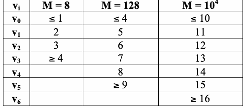
| v i | M = 8 | M = 128 | M = 104 |
| v 0 | ≤ 1 | ≤ 4 | ≤ 10 |
| v 1 | 2 | 5 | 11 |
| v 2 | 3 | 6 | 12 |
| v 3 | ≥ 4 | 7 | 13 |
| v 4 | 8 | 14 | |
| v 5 | ≥ 9 | 15 | |
| v 6 | ≥ 16 |
For an example, see Section 2.4.8.
例はセクション2.4.8を参照。
未レビュー訳K (v − Nπ )2
K (v − Nπ )2
未レビュー訳(3) Compute χ2(obs ) = ∑ i i , where the values for π are provided in Section 3.4. The
（3）χ2(obs ) = ∑ i i を計算する。πの値はセクション3.4に示されている。なお、
未レビュー訳i
未レビュー訳Nπ i=0 i
Nπ i=0 i
未レビュー訳values of K and N are determined by the value of M in accordance with the following table:
KおよびNの値は、次の表に従ってMの値から決まる。
未レビュー訳| M | K | N |
| 8 | 3 | 16 |
| 128 | 5 | 49 |
| 104 | 6 | 75 |
For the example of 2.4.8,
セクション2.4.8の例では、
未レビュー訳( 4 − 16(.2148 ))2 ( 9 − 16(.3672 ))2 ( 3 − 16(.2305 ))2 (0 − 16(.1875 ))2
( 4 − 16(.2148 ))2 ( 9 − 16(.3672 ))2 ( 3 − 16(.2305 ))2 (0 − 16(.1875 ))2
未レビュー訳χ2( obs ) =
χ2( obs ) =
未レビュー訳= 4.882605
= 4.882605
未レビュー訳+
未レビュー訳+
未レビュー訳+
未レビュー訳16(.2148 )
16(.2148 )
未レビュー訳16(.3672 )
16(.3672 )
未レビュー訳16(.2305
16(.2305
未レビュー訳16(.1875 )
16(.1875 )
未レビュー訳 K χ2( obs )
K χ2( obs )
未レビュー訳 .
。
未レビュー訳(4) Compute P-value = igamc ,
（4）P値 = igamc を計算する。
未レビュー訳 2 2
2 2
未レビュー訳
未レビュー訳 3 4.882605
3 4.882605
未レビュー訳For the example, P-value = igamc ,
本節の例では、P値 = igamc 、
未レビュー訳 = 0.180598.
= 0.180598。
未レビュー訳 2 2
2 2
未レビュー訳2.4.5 Decision Rule (at the 1% Level)
2.4.5 判定規則（1%水準）
未レビュー訳If the computed P-value is < 0.01, then conclude that the sequence is non-random. Otherwise, conclude that the sequence is random.
計算されたP値が < 0.01 の場合、系列は非ランダムであると結論する。それ以外の場合、系列はランダムであると結論する。
未レビュー訳2.4.6 Conclusion and Interpretation of Results
2.4.6 結論と結果の解釈
未レビュー訳For the example in Section 2.4.8, since the P-value ≥ 0.01 (P-value = 0.180609), the conclusion is that the sequence is random. Note that large values of χ2(obs) indicate that the tested sequence has clusters of ones.
セクション2.4.8の例では、P値 ≥ 0.01（P値 = 0.180609）であるため、この系列はランダムであると結論する。χ2(obs)の値が大きい場合、検定対象の系列に一のクラスターがあることを示す。
未レビュー訳2.4.7 Input Size Recommendation
2.4.7 入力サイズの推奨
未レビュー訳It is recommended that each sequence to be tested consists of a minimum of bits as specified in the table in Section 2.4.2.
検定対象の各系列は、セクション2.4.2の表に示すとおり、最低限のビット数を含むことが推奨される。
未レビュー訳2.4.8 Example
2.4.8 例
未レビュー訳For the case where K = 3 and M = 8:
K = 3、M = 8の場合：
未レビュー訳(input)
（入力）
未レビュー訳ε = 11001100000101010110110001001100111000000000001001 00110101010001000100111101011010000000110101111100 1100111001101101100010110010
ε = 11001100000101010110110001001100111000000000001001 00110101010001000100111101011010000000110101111100 1100111001101101100010110010
未レビュー訳(input)
（入力）
未レビュー訳n = 128
n = 128
未レビュー訳(processing) Subblock Max-Run
（処理）部分ブロック内の最大ラン長
未レビュー訳Subblock Max-Run
部分ブロック内の最大ラン長
未レビュー訳11001100 (2)
11001100 (2)
未レビュー訳00010101 (1)
00010101 (1)
未レビュー訳01101100 (2)
01101100 (2)
未レビュー訳01001100 (2)
01001100 (2)
未レビュー訳11100000 (3)
11100000 (3)
未レビュー訳00000010 (1)
00000010 (1)
未レビュー訳01001101 (2)
01001101 (2)
未レビュー訳01010001 (1)
01010001 (1)
未レビュー訳00010011 (2)
00010011 (2)
未レビュー訳11010110 (2)
11010110 (2)
未レビュー訳10000000 (1)
10000000 (1)
未レビュー訳11010111 (3)
11010111 (3)
未レビュー訳11001100 (2)
11001100 (2)
未レビュー訳11100110 (3)
11100110 (3)
未レビュー訳11011000 (2)
11011000 (2)
未レビュー訳10110010 (2)
10110010 (2)
未レビュー訳(processing) ν = 4; ν = 9; ν = 3; ν = 0; χ2 = 4.882457 0 1 2 4
（処理）ν = 4; ν = 9; ν = 3; ν = 0; χ2 = 4.882457 0 1 2 4
未レビュー訳(output) P-value = 0.180609
（出力）P値 = 0.180609
未レビュー訳(conclusion) Since the P-value is ≥ 0.01, accept the sequence as random.
（結論）P値が ≥ 0.01であるため、系列をランダムとして採択する。
未レビュー訳2.5 Binary Matrix Rank Test
2.5 二進行列ランク検定
未レビュー訳2.5.1 Test Purpose
2.5.1 検定の目的
未レビュー訳The focus of the test is the rank of disjoint sub-matrices of the entire sequence. The purpose of this test is to check for linear dependence among fixed length substrings of the original sequence. Note that this test also appears in the DIEHARD battery of tests [7].
この検定は、系列全体を分割した互いに素な部分行列のランクに着目する。この検定の目的は、元の系列内の固定長部分文字列間に線形従属があるかどうかを調べることである。この検定はDIEHARD検定群[7]にも含まれている点に注意する。
未レビュー訳2.5.2 Function Call
2.5.2 関数呼び出し
未レビュー訳Rank(n), where:
Rank(n)：ここで、
未レビュー訳n The length of the bit string.
n ビット列の長さ。
未レビュー訳Additional input used by the function supplied by the testing code:
関数が使用する追加の入力。検定コードから与えられる：
未レビュー訳The sequence of bits as generated by the RNG or PRNG being tested; this exists as a global structure at the time of the function call; ε= ε , ε , … , ε .
検定対象のRNGまたはPRNGが生成したビット系列。この系列は関数呼び出し時にグローバル構造として存在する。ε= ε , ε , … , ε .
未レビュー訳1 2 n
1 2 n
未レビュー訳M The number of rows in each matrix. For the test suite, M has been set to 32. If other values of M are used, new approximations need to be computed.
M 各行列の行数。検定スイートではMは32に設定されている。Mに別の値を用いる場合、新たな近似値を計算する必要がある。
未レビュー訳Q The number of columns in each matrix. For the test suite, Q has been set to 32. If other
Q 各行列の列数。検定スイートではQは32に設定されている。Qに別の
未レビュー訳values of Q are used, new approximations need to be computed.
値を用いる場合、新たな近似値を計算する必要がある。
未レビュー訳2.5.3 Test Statistic and Reference Distribution
2.5.3 検定統計量と参照分布
未レビュー訳χ2(obs): A measure of how well the observed number of ranks of various orders match the expected number of ranks under an assumption of randomness.
χ2(obs)：ランダム性を仮定した場合に期待されるさまざまな次数のランク数と、観測されたランク数がどの程度一致するかを示す尺度。
未レビュー訳The reference distribution for the test statistic is a χ2 distribution.
検定統計量の参照分布はχ2分布である。
未レビュー訳2.5.4 Test Description
2.5.4 検定の説明
未レビュー訳 n
n
未レビュー訳(1) Sequentially divide the sequence into M•Q-bit disjoint blocks; there will exist N = such
（1）系列を順にM•Qビットの互いに素なブロックに分割する。N = 個の
未レビュー訳MQ
MQ
未レビュー訳blocks. Discarded bits will be reported as not being used in the computation within each block. Collect the M Q bit segments into M by Q matrices. Each row of the matrix is filled with
ブロックが得られる。破棄されたビットは、各ブロックの計算に使用されなかったものとして報告する。M Qビットの区間を集めてM行Q列の行列を作成する。各行は
未レビュー訳•
未レビュー訳successive Q-bit blocks of the original sequence ε.
元の系列εから連続して取り出したQビットブロックで埋める。
未レビュー訳For example, if n = 20, M = Q = 3, and ε= 01011001001010101101, then partition the stream into N = n = 2 matrices of cardinality M Q (3 3 = 9). Note that the last two bits (0 and 1)
例えば、n = 20、M = Q = 3、ε= 01011001001010101101の場合、ストリームをN = n = 2個のM Q要素の行列（3 3 = 9）に分割する。最後の二つのビット（0と1）は
未レビュー訳••
未レビュー訳 3•3
3•3
未レビュー訳0 1 0 0 1 0
0 1 0 0 1 0
未レビュー訳will be discarded. The two matrices are 1 1 0 and 1 0 1 . Note that the first matrix
破棄される。二つの行列は、1 1 0 および 1 0 1 である。最初の行列は
未レビュー訳0 1 0 0 1 1 consists of the first three bits in row 1, the second set of three bits in row 2, and the third set of
0 1 0 0 1 1は、1行目の最初の三ビット、2行目の次の三ビット、および三番目の区間から構成される。
未レビュー訳three bits in row 3. The second matrix is similarly constructed using the next nine bits in the sequence.
三ビットは3行目にある。もう一つの行列も、系列内の次の九ビットを用いて同様に作成する。
未レビュー訳(2) Determine the binary rank ( R ) of each matrix, where = 1,..., N . The method for determining
（2）各行列の二進ランク（Rλ）を求める。ここで、λ=1,..., Nである。ランクの求め方は付録Aで
未レビュー訳
未レビュー訳the rank is described in Appendix A.
説明する。
未レビュー訳For the example in this section, the rank of the first matrix is 2 (R = 2), and the rank of the
本節の例では、最初の行列のランクは2（R = 2）であり、次の行列のランクは
未レビュー訳1
未レビュー訳second matrix is 3 (R = 3).
3（R = 3）である。
未レビュー訳2
未レビュー訳(3) Let F = the number of matrices with R = M (full rank),
（3）Fを、R = M（フルランク）である行列の数とする、
未レビュー訳M
未レビュー訳
未レビュー訳F = the number of matrices with R = M-1 (full rank - 1), M-1
F =（R = M-1（フルランク-1）の行列数）、M-1
未レビュー訳
未レビュー訳N – F - F = the number of matrices remaining.
N – F - F = 残りの行列数。
未レビュー訳M M-1
M M-1
未レビュー訳For the example in this section, F = F = 1 (R has the full rank of 3), F = F = 1 (R has rank
本節の例では、F = F = 1（Rのランクは3でフルランク）、F = F = 1（Rのランクは
未レビュー訳M 3 2
M 3 2
未レビュー訳M-1 2 1
M-1 2 1
未レビュー訳2), and no matrix has any lower rank.
2）、それより低いランクの行列はない。
未レビュー訳(4) Compute
（4）次を計算する。
未レビュー訳(F − 0.2888N)2 (F − 0.5776N)2 (N − F − F − 0.1336N)2
(F − 0.2888N)2 (F − 0.5776N)2 (N − F − F − 0.1336N)2
未レビュー訳χ2 (obs) = M
χ2 (obs) = M
未レビュー訳+ M −1
+ M −1
未レビュー訳+ M M −1
+ M M −1
未レビュー訳.
未レビュー訳0.2888N
0.2888N
未レビュー訳0.5776N
0.5776N
未レビュー訳0.1336N
0.1336N
未レビュー訳For the example in this section,
本節の例では、
未レビュー訳(1− 0.2888 • 2)2 (1− 0.5776 • 2)2 (2 −1−1− 0.1336 • 2)2
(1− 0.2888 • 2)2 (1− 0.5776 • 2)2 (2 −1−1− 0.1336 • 2)2
未レビュー訳χ2(obs) =
χ2(obs) =
未レビュー訳= 0.596953.
= 0.596953。
未レビュー訳+
未レビュー訳+
未レビュー訳0.2888 • 2
0.2888 • 2
未レビュー訳0.5776 • 2
0.5776 • 2
未レビュー訳0.1336 • 2
0.1336 • 2
未レビュー訳−χ2(obs)/2 .
−χ2(obs)/2 。
未レビュー訳(5) Compute P − value = e
（5）P値 = e
未レビュー訳Since there are 3 classes in the example, the P-value for the
例にはクラスが3つあるため、
未レビュー訳 χ2 (obs)
χ2 (obs)
未レビュー訳example is equal to igamc1,
この例のP値はigamc1,
未レビュー訳 .
。
未レビュー訳
未レビュー訳 2
2
未レビュー訳
未レビュー訳
未レビュー訳0.596953
0.596953
未レビュー訳For the example in this section, P-value = e 2 = 0.741948.
本節の例では、P値 = e 2 = 0.741948。
未レビュー訳2.5.5 Decision Rule (at the 1% Level)
2.5.5 判定規則（1%水準）
未レビュー訳If the computed P-value is < 0.01, then conclude that the sequence is non-random. Otherwise, conclude that the sequence is random.
計算されたP値が < 0.01 の場合、系列は非ランダムであると結論する。それ以外の場合、系列はランダムであると結論する。
未レビュー訳2.5.6 Conclusion and Interpretation of Results
2.5.6 結論と結果の解釈
未レビュー訳Since the P-value obtained in step 5 of Section 2.5.4 is ≥ 0.01 (P-value = 0.741948), the conclusion is that the sequence is random.
手順5（セクション2.5.4）で得られたP値は ≥ 0.01（P値 = 0.741948）であるため、この系列はランダムであると結論する。
未レビュー訳Note that large values of χ2(obs ) (and hence, small P-values) would have indicated a deviation of the rank distribution from that corresponding to a random sequence.
χ2(obs )の値が大きい場合（したがってP値が小さい場合）、ランク分布がランダム系列に対応する分布から逸脱していることを示していたと考えられる。
未レビュー訳2.5.7 Input Size Recommendation
2.5.7 入力サイズの推奨
未レビュー訳The probabilities for M = Q = 32 have been calculated and inserted into the test code. Other choices of M and Q may be selected, but the probabilities would need to be calculated. The minimum number of bits to be tested must be such that n ≥38MQ (i.e., at least 38 matrices are created). For M = Q = 32, each sequence to be tested should consist of a minimum of 38,912 bits.
M = Q = 32の場合の確率は計算され、検定コードに組み込まれている。MおよびQには別の値も選択できるが、その場合は確率を計算する必要がある。検定対象の最小ビット数は、n ≥38MQ（すなわち、少なくとも38個の行列が作成される）を満たす必要がある。M = Q = 32の場合、各系列は最低38,912ビットで構成するべきである。
未レビュー訳2.5.8 Example
2.5.8 例
未レビュー訳(input)
（入力）
未レビュー訳ε= the first 100,000 binary digits in the expansion of e
ε= eの展開における最初の100,000個の二進数字
未レビュー訳(input)
（入力）
未レビュー訳n = 100000, M = Q = 32 (NOTE: 672 BITS WERE DISCARDED.)
n = 100000, M = Q = 32（注：672ビットを破棄した。）
未レビュー訳(processing) N = 97
（処理）N = 97
未レビュー訳(processing) F = 23, F = 60, N – F – F = 14 M M-1
（処理）F = 23, F = 60, N – F – F = 14 M M-1
未レビュー訳M M-1
M M-1
未レビュー訳(processing) χ2 = 1.2619656
（処理）χ2 = 1.2619656
未レビュー訳(output) P-value = 0.532069
（出力）P値 = 0.532069
未レビュー訳(conclusion) Since P-value ≥0.01, accept the sequence as random.
（結論）P値が ≥0.01であるため、系列をランダムとして採択する。
未レビュー訳2.6 Discrete Fourier Transform (Spectral) Test
2.6 離散フーリエ変換（スペクトル）検定
未レビュー訳2.6.1 Test Purpose
2.6.1 検定の目的
未レビュー訳The focus of this test is the peak heights in the Discrete Fourier Transform of the sequence. The purpose of this test is to detect periodic features (i.e., repetitive patterns that are near each other) in the tested sequence that would indicate a deviation from the assumption of randomness. The intention is to detect whether the number of peaks exceeding the 95 % threshold is significantly different than 5 %.
この検定は、系列の離散フーリエ変換におけるピークの高さに着目する。この検定の目的は、検定対象系列における周期的特徴（すなわち、互いに近接して現れる反復パターン）を検出し、ランダム性の仮定からの逸脱を示すことである。95 %のしきい値を超えるピーク数が5 %と有意に異なるかどうかを検出する。
未レビュー訳2.6.2 Function Call
2.6.2 関数呼び出し
未レビュー訳DiscreteFourierTransform(n), where:
DiscreteFourierTransform(n)：ここで、
未レビュー訳n The length of the bit string.
n ビット列の長さ。
未レビュー訳Additional input used by the function, but supplied by the testing code:
関数が使用する追加の入力。ただし、これらは検定コードから与えられる：
未レビュー訳ε The sequence of bits as generated by the RNG or PRNG being tested; this exists as a global structure at the time of the function call; ε= ε , ε , … , ε .
ε 検定対象のRNGまたはPRNGが生成したビット系列。この系列は関数呼び出し時にグローバル構造として存在する。ε= ε , ε , … , ε .
未レビュー訳2.6.3 Test Statistic and Reference Distribution
2.6.3 検定統計量と参照分布
未レビュー訳d: The normalized difference between the observed and the expected number of frequency
d：観測された数と期待される数の差を正規化した値（周波数
未レビュー訳components that are beyond the 95 % threshold.
成分のうち95 %のしきい値を超えるものについて）。
未レビュー訳The reference distribution for the test statistic is the normal distribution.
検定統計量の参照分布は正規分布である。
未レビュー訳2.6.4 Test Description
2.6.4 検定の説明
未レビュー訳(1) The zeros and ones of the input sequence (ε) are converted to values of –1 and +1 to create the
（1）入力系列（ε）の零と一を−1および+1の値に変換し、次のものを生成するため、
未レビュー訳sequence X = x , x , …, x , where x = 2ε – 1. 1 2 n
系列 X = x , x , …, x , ここで x = 2ε – 1。1 2 n
未レビュー訳i i
i i
未レビュー訳For example, if n = 10 and ε = 1001010011, then X = 1, -1, -1, 1, -1, 1, -1, -1, 1, 1.
例えば、n = 10、ε = 1001010011の場合、X = 1, -1, -1, 1, -1, 1, -1, -1, 1, 1である。
未レビュー訳(2) Apply a Discrete Fourier transform (DFT) on X to produce: S = DFT(X). A sequence of
（2）Xに離散フーリエ変換（DFT）を適用し、S = DFT(X)を得る。次のような
未レビュー訳complex variables is produced which represents periodic components of the sequence of bits at different frequencies (see Section 3.6 for a sample diagram of a DFT result).
複素数列が生成され、異なる周波数におけるビット系列の周期成分を表す（DFT結果の図の例はセクション3.6を参照）。
未レビュー訳(3) Calculate M = modulus(S´) ≡ |S'|, where S´ is the substring consisting of the first n/2 elements in
（3）M = 絶対値(S´) ≡ |S'|を計算する。ここで、S´はS内の最初のn/2要素からなる部分文字列であり、
未レビュー訳S, and the modulus function produces a sequence of peak heights.
絶対値関数はピークの高さからなる系列を生成する。
未レビュー訳 1
1
未レビュー訳(4) Compute T = log n = the 95 % peak height threshold value. Under an assumption of
（4）T = log nを計算する。これは95 %ピーク高さのしきい値である。
未レビュー訳 0.05
0.05
未レビュー訳randomness, 95 % of the values obtained from the test should not exceed T.
ランダム性を仮定すると、検定で得られる値の95 %はTを超えないはずである。
未レビュー訳(5) Compute N = .95n/2. N is the expected theoretical (95 %) number of peaks (under the
（5）N = .95n/2を計算する。Nは理論上期待される（95 %）ピーク数である（
未レビュー訳0
未レビュー訳0 ass€umption of randomness) that are less than T.
0 ランダム性を仮定した場合）T未満となる。
未レビュー訳For the example in this section, N = 4.75.
本節の例では、N = 4.75である。
未レビュー訳0
未レビュー訳(6) Compute N = the actual observed number of peaks in M that are less than T.
（6）N = M内でT未満にあるピークの実際の観測数を計算する。
未レビュー訳1
未レビュー訳For the example in this section, N = 4.
本節の例では、N = 4である。
未レビュー訳1
未レビュー訳(N − N )
(N − N )
未レビュー訳(7) Compute d = 1 0 .
（7）d = 1 0 を計算する。
未レビュー訳n(.95)(.05)/4
n(.95)(.05)/4
未レビュー訳(4 − 4.75)
(4 − 4.75)
未レビュー訳For the example in this section, d =
この節の例では、d =
未レビュー訳= -2.176429.
= -2.176429.
未レビュー訳10(.95)(.05)/4
10(.95)(.05)/4
未レビュー訳€
未レビュー訳 d
d
未レビュー訳(8) Compute P-value = erfc .
(8) P-value = erfc を計算する。
未レビュー訳 € 2
€ 2
未レビュー訳2.176429
2.176429
未レビュー訳For the example in this section, P-value = erfc
この節の例では、P-value = erfc
未レビュー訳 = 0.029523.
= 0.029523.
未レビュー訳 2
2
未レビュー訳€
未レビュー訳2.6.5 Decision Rule (at the 1% Level)
2.6.5 判定規則（1%水準）
未レビュー訳If the computed P-value is < 0.01, then conclude that the sequence is non-random. Otherwise, conclude that the sequence is random.
計算されたP-valueが < 0.01 の場合、その系列は非ランダムであると結論する。それ以外の場合、その系列はランダムであると結論する。
未レビュー訳2.6.6 Conclusion and Interpretation of Results
2.6.6 結論と結果の解釈
未レビュー訳Since the P-value obtained in step 8 of Section 2.6.4 is ≥ 0.01 (P-value = 0.029523), the conclusion is that the sequence is random.
ステップ8（2.6.4節）で得られたP-valueは ≥ 0.01（P-value = 0.029523）であるため、その系列はランダムであると結論する。
未レビュー訳A d value that is too low would indicate that there were too few peaks (< 95%) below T, and too many peaks (more than 5%) above T.
dの値が低すぎる場合、T未満のピークが少なすぎ（< 95%）、Tを超えるピークが多すぎる（5%超）ことを示す。
未レビュー訳2.6.7 Input Size Recommendation
2.6.7 入力サイズに関する推奨事項
未レビュー訳It is recommended that each sequence to be tested consist of a minimum of 1000 bits (i.e., n ≥1000).
検定対象の各系列は、最低1000ビット（すなわち、n ≥1000）で構成することが推奨される。
未レビュー訳2.6.8 Example
2.6.8 例
未レビュー訳(input)
(入力)
未レビュー訳ε= 11001001000011111101101010100010001000010110100011 00001000110100110001001100011001100010100010111000
ε= 11001001000011111101101010100010001000010110100011 00001000110100110001001100011001100010100010111000
未レビュー訳(input)
(入力)
未レビュー訳n = 100
n = 100
未レビュー訳(processing) N = 46 1
(処理) N = 46 1
未レビュー訳(processing) N = 47.5 0
(処理) N = 47.5 0
未レビュー訳(processing) d = -1.376494
(処理) d = -1.376494
未レビュー訳(output) P-value = 0.168669
(出力) P-value = 0.168669
未レビュー訳(conclusion) Since P-value ≥0.01, accept the sequence as random.
(結論) P-value ≥0.01 であるため、この系列をランダムとして受け入れる。
未レビュー訳2.7 Non-overlapping Template Matching Test
2.7 非重複テンプレートマッチング検定
未レビュー訳2.7.1 Test Purpose
2.7.1 検定の目的
未レビュー訳The focus of this test is the number of occurrences of pre-specified target strings. The purpose of this test is to detect generators that produce too many occurrences of a given non-periodic (aperiodic) pattern. For this test and for the Overlapping Template Matching test of Section 2.8, an m-bit window is used to search for a specific m-bit pattern. If the pattern is not found, the window slides one bit position. If the pattern is found, the window is reset to the bit after the found pattern, and the search resumes.
この検定では、事前に指定されたターゲット文字列の出現回数に着目する。この検定の目的は、特定の非周期パターンの出現回数が多すぎる系列を生成するジェネレータを検出することである。この検定および2.8節の重複テンプレートマッチング検定では、特定のmビットパターンを探索するためにmビットのウィンドウを使用する。パターンが見つからない場合、ウィンドウをビット位置一つ分だけスライドさせる。パターンが見つかった場合、ウィンドウを見つかったパターンの次のビットにリセットし、探索を再開する。
未レビュー訳2.7.2 Function Call
2.7.2 関数呼び出し
未レビュー訳NonOverlappingTemplateMatching(m,n)
NonOverlappingTemplateMatching(m,n)
未レビュー訳m The length in bits of each template. The template is the target string.
m 各テンプレートの長さ（ビット単位）。テンプレートはターゲット文字列である。
未レビュー訳n The length of the entire bit string under test.
n 検定対象のビット文字列全体の長さ。
未レビュー訳Additional input used by the function, but supplied by the testing code: ε The sequence of bits as generated by the RNG or PRNG being tested; this exists as a global structure at the time of the function call; ε= ε , ε , … , ε .
関数が使用する追加入力。ただし、テストコードから与えられる：ε 検定対象のRNGまたはPRNGが生成したビット系列。この系列は関数呼び出し時にグローバル構造として存在する。ε= ε , ε , … , ε .
未レビュー訳1 2 n
1 2 n
未レビュー訳B The m-bit template to be matched; B is a string of ones and zeros (of length m) which is defined in a template library of non-periodic patterns contained within the test code.
B 照合対象となるmビットのテンプレート。Bは一とゼロからなる文字列（長さm）であり、テストコードに含まれる非周期パターンのテンプレートライブラリで定義される。
未レビュー訳M The length in bits of the substring of εto be tested.
M 検定対象となるεの部分文字列の長さ（ビット単位）。
未レビュー訳N The number of independent blocks. N has been fixed at 8 in the test code.
N 独立ブロックの数。Nはテストコードで8に固定されている。
未レビュー訳2.7.3 Test Statistic and Reference Distribution
2.7.3 検定統計量と参照分布
未レビュー訳χ2(obs): A measure of how well the observed number of template “hits” matches the
χ2(obs)：観測されたテンプレート「ヒット」数が、
未レビュー訳expected number of template “hits” (under an assumption of randomness).
期待されるテンプレート「ヒット」数（ランダム性を仮定した場合）にどの程度一致するかを測る尺度。
未レビュー訳The reference distribution for the test statistic is the χ2 distribution.
検定統計量の参照分布はχ2分布である。
未レビュー訳2.7.4 Test Description
2.7.4 検定の説明
未レビュー訳(1) Partition the sequence into N independent blocks of length M.
(1) 系列を、長さMのN個の独立ブロックに分割する。
未レビュー訳For example, if ε= 10100100101110010110, then n = 20. If N = 2 and M = 10, then the two blocks would be 1010010010 and 1110010110.
例えば、ε= 10100100101110010110 の場合、n = 20 である。N = 2 かつ M = 10 とすると、両ブロックは1010010010および1110010110となる。
未レビュー訳(2) Let W (j = 1, …, N) be the number of times that B (the template) occurs within the block j. Note
(2) W（j = 1, …, N）を、ブロックj内でB（テンプレート）が出現する回数とする。次に
未レビュー訳j
未レビュー訳that j = 1,…,N. The search for matches proceeds by creating an m-bit window on the sequence, comparing the bits within that window against the template. If there is no match, the window slides over one bit , e.g., if m = 3 and the current window contains bits 3 to 5, then the next window will contain bits 4 to 6. If there is a match, the window slides over m bits, e.g., if the current (successful) window contains bits 3 to 5, then the next window will contain bits 6 to 8.
、j = 1,…,N であることに注意する。一致箇所の探索では、系列上にmビットのウィンドウを作り、そのウィンドウ内のビットをテンプレートと比較する。一致しない場合、ウィンドウを一ビット分スライドさせる。例えば、m = 3で現在のウィンドウがビット3から5を含む場合、次のウィンドウはビット4から6を含む。一致する場合、ウィンドウをmビット分スライドさせる。例えば、現在の（一致した）ウィンドウがビット3から5を含む場合、次のウィンドウはビット6から8を含む。
未レビュー訳For the above example, if m = 3 and the template B = 001, then the examination proceeds as follows:
上記の例で、m = 3、テンプレートB = 001の場合、検査は次のように進む:
未レビュー訳| Bit Positions | Block 1 | Block 2 |
| Bits / W 1 | Bits / W 2 | |
| 1-3 | 101 / 0 | 111 / 0 |
| 2-4 | 010 / 0 | 110 / 0 |
| 3-5 | 100 / 0 | 100 / 0 |
| 4-6 | 001 (hit) / Increment to 1 | 001 (hit) / Increment to 1 |
| 5-7 | Not examined | Not examined |
| 6-8 | Not examined | Not examined |
| 7-9 | 001 / Increment to 2 | 011 / 1 |
| 8-10 | 010 (hit) / 2 | 110 / 1 |
原本の表画像
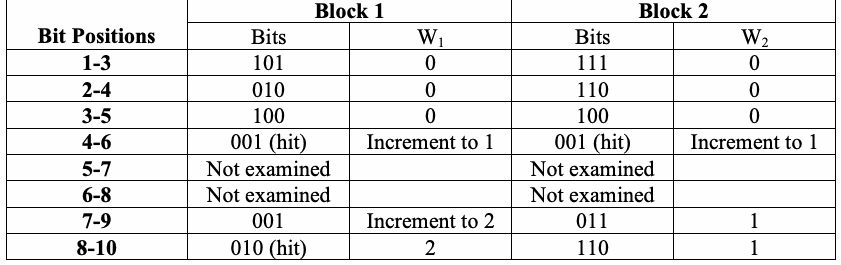
| ビット位置 | ブロック1 | ブロック2 |
| ビット / W 1 | ビット / W 2 | |
| 1-3 | 101 / 0 | 111 / 0 |
| 2-4 | 010 / 0 | 110 / 0 |
| 3-5 | 100 / 0 | 100 / 0 |
| 4-6 | 001 (ヒット) / 1に増加 | 001 (ヒット) / 1に増加 |
| 5-7 | 未検査 | 未検査 |
| 6-8 | 未検査 | 未検査 |
| 7-9 | 001 / 2に増加 | 011 / 1 |
| 8-10 | 010 (ヒット) / 2 | 110 / 1 |
Thus, W = 2, and W = 1. 1
したがって、W = 2、および W = 1. 1
未レビュー訳2
未レビュー訳(3) Under an assumption of randomness, compute the theoretical mean µand variance σ2:
(3) ランダム性を仮定して、理論平均µおよび分散σ2を計算する:
未レビュー訳 1 2m −1
1 2m −1
未レビュー訳µ= (M-m+1)/2m σ2 = M − .
µ= (M-m+1)/2m σ2 = M − .
未レビュー訳 2m 22m
2m 22m
未レビュー訳For the example in this section, µ= (10-3+1)/23 = 1, and σ2 = 10 • 1 − 2•3 −1 = 0.46875 .
この節の例では、µ= (10-3+1)/23 = 1、および σ2 = 10 • 1 − 2•3 −1 = 0.46875 .
未レビュー訳 23 22•3
23 22•3
未レビュー訳( )2 N W −µ
( )2 N W −µ
未レビュー訳(4) Compute χ2(obs ) = ∑ j .
(4) χ2(obs ) = ∑ j . を計算する。
未レビュー訳2 j=1 σ
2 j=1 σ
未レビュー訳(2 −1)2 + (1−1)2 1+ 0
(2 −1)2 + (1−1)2 1+ 0
未レビュー訳For the example in this section, χ2(obs) =
この節の例では、χ2(obs) =
未レビュー訳= 2.133333.
= 2.133333.
未レビュー訳= 0.46875 0.46875
= 0.46875 0.46875
未レビュー訳 N χ2(obs )
N χ2(obs )
未レビュー訳(5) Compute P-value = igamc ,
(5) P-value = igamc , を計算する。
未レビュー訳 . Note that multiple P-values will be computed, i.e.,
. 複数のP-valueが計算されること、すなわち、
未レビュー訳 2 2
2 2
未レビュー訳one P-value will be computed for each template. For m = 9, up to 148 P-values may be computed; for m = 10, up to 284 P-values may be computed.
テンプレートごとにP-valueが一つ計算される。m = 9の場合、最大148個のP-valueが計算されることがあり、m = 10の場合、最大284個のP-valueが計算されることがある。
未レビュー訳 2 2.133333
2 2.133333
未レビュー訳For the example in this section, P-value = igamc ,
この節の例では、P-value = igamc ,
未レビュー訳 = 0.344154.
= 0.344154.
未レビュー訳 2 2
2 2
未レビュー訳2.7.5 Decision Rule (at the 1% Level)
2.7.5 判定規則（1%水準）
未レビュー訳If the computed P-value is < 0.01, then conclude that the sequence is non-random. Otherwise, conclude that the sequence is random.
計算されたP-valueが < 0.01 の場合、その系列は非ランダムであると結論する。それ以外の場合、その系列はランダムであると結論する。
未レビュー訳2.7.6 Conclusion and Interpretation of Results
2.7.6 結論と結果の解釈
未レビュー訳Since the P-value obtained in step 5 of Section 2.7.4 is ≥ 0.01 (P-value = 0.344154), the conclusion is that the sequence is random.
ステップ5（2.7.4節）で得られたP-valueは ≥ 0.01（P-value = 0.344154）であるため、その系列はランダムであると結論する。
未レビュー訳If the P-value is very small (< 0.01), then the sequence has irregular occurrences of the possible template patterns.
P-valueが非常に小さい（< 0.01）場合、その系列では、考えられるテンプレートパターンの出現に不規則性がある。
未レビュー訳2.7.7 Input Size Recommendation
2.7.7 入力サイズに関する推奨事項
未レビュー訳The test code has been written to provide templates for m = 2, 3,…,10. It is recommended that m = 9 or m = 10 be specified to obtain meaningful results. Although N = 8 has been specified in the test code, the code may be altered to other sizes. However, N should be chosen such that N ≤100 to be assured that the P-values are valid. Additionally, be sure that M > 0.01 •n and N = n/M.
テストコードは、m = 2, 3,…,10 のテンプレートを提供するように記述されている。有意義な結果を得るため、m = 9 または m = 10 を指定することが推奨される。テストコードではN = 8が指定されているが、コードは他のサイズに変更してもよい。ただし、P-valueが有効であることを保証するため、N ≤100となるように選択すべきである。さらに、M > 0.01 •n および N = n/Mであることを確認する。
未レビュー訳2.7.8 Example
2.7.8 例
未レビュー訳For a template B = 000000001 whose size is m = 9:
テンプレートB = 000000001（サイズm = 9）の場合:
未レビュー訳ε= 220 bits produced by the G-SHA-1 generator1
ε= 220ビットがG-SHA-1ジェネレータ1によって生成されたもの
未レビュー訳(input)
(入力)
未レビュー訳n = 220, B = 000000001
n = 220, B = 000000001
未レビュー訳(input)
(入力)
未レビュー訳(processing) µ= 255.984375 and σ2= 247.499999
(処理) µ= 255.984375 および σ2= 247.499999
未レビュー訳(processing) W = 259; W = 229; W = 271; W = 245; W = 272; W = 262;
(処理) W = 259; W = 229; W = 271; W = 245; W = 272; W = 262;
未レビュー訳1
未レビュー訳2
未レビュー訳3
未レビュー訳4
未レビュー訳5
未レビュー訳6
未レビュー訳W = 259; and W = 246 7 8
W = 259; および W = 246 7 8
未レビュー訳(processing) χ2(obs) = 5.999377
(処理) χ2(obs) = 5.999377
未レビュー訳(output) P-value = 0.647302
(出力) P-value = 0.647302
未レビュー訳(conclusion) Since the P-value ≥0.01, accept the sequence as random.
(結論) P-value ≥0.01であるため、この系列をランダムとして受け入れる。
未レビュー訳2.8 Overlapping Template Matching Test
2.8 重複テンプレートマッチング検定
未レビュー訳2.8.1 Test Purpose
2.8.1 検定の目的
未レビュー訳The focus of the Overlapping Template Matching test is the number of occurrences of pre-specified target strings. Both this test and the Non-overlapping Template Matching test of Section 2.7 use an m-bit window to search for a specific m-bit pattern. As with the test in Section 2.7, if the pattern is not found, the window slides one bit position. The difference between this test and the test in Section 2.7 is that when the pattern is found, the window slides only one bit before resuming the search.
重複テンプレートマッチング検定では、事前に指定されたターゲット文字列の出現回数に着目する。この検定と2.7節の非重複テンプレートマッチング検定はいずれも、特定のmビットパターンを探索するためにmビットのウィンドウを使用する。2.7節の検定と同様に、パターンが見つからない場合、ウィンドウをビット位置一つ分だけスライドさせる。この検定と2.7節の検定との違いは、パターンが見つかった場合、探索を再開する前にウィンドウを一ビット分だけスライドさせる点である。
未レビュー訳2.8.2 Function Call
2.8.2 関数呼び出し
未レビュー訳OverlappingTemplateMatching(m,n)
OverlappingTemplateMatching(m,n)
未レビュー訳m The length in bits of the template – in this case, the length of the run of ones.
m テンプレートの長さ（ビット単位）。この場合は、ビット値が一である部分の連続長。
未レビュー訳n The length of the bit string.
n ビット文字列の長さ。
未レビュー訳Additional input used by the function, but supplied by the testing code:
関数が使用する追加入力。ただし、テストコードから与えられる:
未レビュー訳ε The sequence of bits as generated by the RNG or PRNG being tested; this exists as a global structure at the time of the function call; ε= ε , ε , … , ε .
ε 検定対象のRNGまたはPRNGが生成したビット系列。この系列は関数呼び出し時にグローバル構造として存在する。ε= ε , ε , … , ε .
未レビュー訳1 2 n
1 2 n
未レビュー訳B The m-bit template to be matched.
B 照合対象となるmビットテンプレート。
未レビュー訳K The number of degrees of freedom. K has been fixed at 5 in the test code.
K 自由度の数。Kはテストコードで5に固定されている。
未レビュー訳M The length in bits of a substring of εto be tested. M has been set to 1032 in the test code.
M 検定対象となるεの部分文字列の長さ（ビット単位）。Mはテストコードで1032に設定されている。
未レビュー訳N The number of independent blocks of n. N has been set to 968 in the test code.
N n個からなる独立ブロックの数。Nはテストコードで968に設定されている。
未レビュー訳2.8.3 Test Statistic and Reference Distribution
2.8.3 検定統計量と参照分布
未レビュー訳χ2(obs): A measure of how well the observed number of template “hits” matches the expected number of template “hits” (under an assumption of randomness).
χ2(obs)：観測されたテンプレート「ヒット」数が、ランダム性を仮定した場合の期待されるテンプレート「ヒット」数にどの程度一致するかを示す尺度。
未レビュー訳The reference distribution for the test statistic is the χ2 distribution.
検定統計量の参照分布はχ2分布である。
未レビュー訳2.8.4 Test Description
2.8.4 検定の説明
未レビュー訳(1) Partition the sequence into N independent blocks of length M.
(1) 系列を、長さMのN個の独立ブロックに分割する。
未レビュー訳For example, if ε = 10111011110010110100011100101110111110000101101001, then n = 50. If K = 2, M = 10 and N = 5, then the five blocks are 1011101111, 0010110100, 0111001011, 1011111000, and 0101101001 .
例えば、ε = 10111011110010110100011100101110111110000101101001 の場合、n = 50 である。K = 2、M = 10、N = 5 とすると、五つのブロックは1011101111、0010110100、0111001011、1011111000、および0101101001である。
未レビュー訳(2) Calculate the number of occurrences of B in each of the N blocks. The search for matches proceeds by creating an m-bit window on the sequence, comparing the bits within that window against B and incrementing a counter when there is a match. The window slides over one bit after each examination, e.g., if m = 4 and the first window contains bits 42 to 45, the next window consists of bits 43 to 46. Record the number of occurrences of B in each block by incrementing an array v (where i = 0,…5), such that v is incremented when there are no occurrences of B in a
(2) N個の各ブロック内でBが出現する回数を計算する。一致箇所の探索では、系列上にmビットのウィンドウを作り、そのウィンドウ内のビットをBと比較し、一致した場合にカウンタを増分する。各検査の後、ウィンドウを一ビット分スライドさせる。例えば、m = 4で最初のウィンドウがビット42から45を含む場合、次のウィンドウはビット43から46となる。各ブロックにおけるBの出現回数を、配列v（i = 0,…5）を増分して記録する。Bが一度も出現しない場合にvを増分する a
未レビュー訳i
未レビュー訳0 substring, v is incremented for one occurrence of B,…and v is incremented for 5 or more
0 の部分文字列、Bが一回出現した場合にvを増分し、…Bが5回以上出現した場合にvを増分する
未レビュー訳1
未レビュー訳5
未レビュー訳occurrences of B.
Bの出現回数。
未レビュー訳For the above example, if m = 2 and B = 11, then the examination of the first block (1011101111) proceeds as follows:
上記の例で、m = 2、B = 11の場合、最初のブロック（1011101111）の検査は次のように進む:
未レビュー訳| Bit Positions | Bits | No. of occurrences of B = 11 |
| 1-2 | 10 | 0 |
| 2-3 | 01 | 0 |
| 3-4 | 11 (hit) | Increment to 1 |
| 4-5 | 11 (hit) | Increment to 2 |
| 5-6 | 10 | 2 |
| 6-7 | 01 | 2 |
| 7-8 | 11 (hit) | Increment to 3 |
| 8-9 | 11 (hit) | Increment to 4 |
| 9-10 | 11 (hit) | Increment to 5 |
原本の表画像

| ビット位置 | ビット列 | B = 11 の出現回数 |
| 1-2 | 10 | 0 |
| 2-3 | 01 | 0 |
| 3-4 | 11 (一致) | 1に増分 |
| 4-5 | 11 (一致) | 2に増分 |
| 5-6 | 10 | 2 |
| 6-7 | 01 | 2 |
| 7-8 | 11 (一致) | 3に増分 |
| 8-9 | 11 (一致) | 4に増分 |
| 9-10 | 11 (一致) | 5に増分 |
Thus, after block 1, there are five occurrences of 11, v is incremented, and v = 0, v = 0, v = 0, 5
したがって、ブロック1の後、11は五回出現し、vが増分され、v = 0, v = 0, v = 0, 5
未レビュー訳0 1 2
0 1 2
未レビュー訳v = 0, v = 0, and v = 1. 3 4
v = 0, v = 0, および v = 1. 3 4
未レビュー訳5
未レビュー訳In a like manner, blocks 2-5 are examined. In block 2, there are 2 occurrences of 11; v is
同様に、ブロック2～5を検査する。ブロック2では、2回の出現対象は11であり、vは
未レビュー訳2
未レビュー訳incremented. In block 3, there are 3 occurrences of 11; v is incremented. In block 4, there are 4
増分される。ブロック3では3回出現した対象は11であり、vは増分される。ブロック4では4回
未レビュー訳3
未レビュー訳occurrences of 11; v is incremented. In block 5, there is one occurrence of 11; v is incremented.
11の出現に対してvは増分される。ブロック5では11が一度出現し、vは増分される。
未レビュー訳4
未レビュー訳1
未レビュー訳Therefore, v = 0, v = 1, v =1, v = 1, v = 1, v = 1 after all blocks have been examined.
したがって、すべてのブロックの検査後、v = 0, v = 1, v =1, v = 1, v = 1, v = 1 となる。
未レビュー訳0 1 2 3 4 5
0 1 2 3 4 5
未レビュー訳(3) Compute values for λand ηthat will be used to compute the theoretical probabilities π
(3) 理論確率π
未レビュー訳i
未レビュー訳corresponding to the classes of v
（vの各クラスに対応）を計算するために用いるλおよびηの値を計算する。
未レビュー訳0: λ= (M-m+1)/2m η= λ/2.
0: λ= (M-m+1)/2m η= λ/2.
未レビュー訳For the example in this section, λ= (10-2+1)/22 = 2.25, and η= λ/2=1.125.
この節の例では、λ= (10-2+1)/22 = 2.25、およびη= λ/2=1.125。
未レビュー訳5 (v − Nπ )2
5 (v − Nπ )2
未レビュー訳(4) Compute χ2( obs ) = ∑ i i , where π = 0.364091, π = 0.185659, π = 0.139381, π 0
(4) χ2( obs ) = ∑ i i , ここで π = 0.364091, π = 0.185659, π = 0.139381, π 0
未レビュー訳1
未レビュー訳2
未レビュー訳3
未レビュー訳Nπ
未レビュー訳i=0
i=0
未レビュー訳i = 0.100571, π = 0.070432 and π = 0.139865 as specified in Section 3.8.
i = 0.100571, π = 0.070432 および π = 0.139865 は3.8節で指定されている。
未レビュー訳4
未レビュー訳5
未レビュー訳For the example in this section, the values of π were recomputed, since the example doesn’t fit i the requirements stated in Section 2.8.7. The example is intended only for illustration. The values of π are: π = 0.324652, π = 0.182617, π = 0.142670, π = 0.106645, π = 0.077147, and π = i 0
この節の例では、2.8.7節に記載された要件iに適合しないため、πの値を再計算した。この例は説明のみを目的としている。πの値は次のとおりである: π = 0.324652, π = 0.182617, π = 0.142670, π = 0.106645, π = 0.077147, および π = i 0
未レビュー訳1
未レビュー訳2
未レビュー訳3
未レビュー訳4
未レビュー訳5
未レビュー訳0.166269.
0.166269.
未レビュー訳(0 − 5 • 0.324652)2 (1 − 5 • 0.182617)2 (1 − 5 • 0.142670 )2
(0 − 5 • 0.324652)2 (1 − 5 • 0.182617)2 (1 − 5 • 0.142670 )2
未レビュー訳χ2( obs ) =
χ2( obs ) =
未レビュー訳+
未レビュー訳+
未レビュー訳+
未レビュー訳5 • 0.324652
5 • 0.324652
未レビュー訳5 • 0.182617
5 • 0.182617
未レビュー訳5 • 0.142670
5 • 0.142670
未レビュー訳(1 − 5 • 0.106645)2 (1 − 5 • 0.077147)2 (1 − 5 • 0.166269)2
(1 − 5 • 0.106645)2 (1 − 5 • 0.077147)2 (1 − 5 • 0.166269)2
未レビュー訳= 3.167729.
= 3.167729.
未レビュー訳+
未レビュー訳+
未レビュー訳5 • 0.106645
5 • 0.106645
未レビュー訳5 • 0.077147
5 • 0.077147
未レビュー訳5 • 0.166269
5 • 0.166269
未レビュー訳 5 χ2( obs )
5 χ2( obs )
未レビュー訳 .
.
未レビュー訳(5) Compute P-value = igamc ,
(5) P-value = igamc , を計算する。
未レビュー訳 2 2
2 2
未レビュー訳
未レビュー訳 5 3.167729
5 3.167729
未レビュー訳For the example in this section, P-value = igamc ,
この節の例では、P-value = igamc ,
未レビュー訳 = 0.274932.
= 0.274932.
未レビュー訳 2 2
2 2
未レビュー訳2.8.5 Decision Rule (at the 1% Level)
2.8.5 判定規則（1%水準）
未レビュー訳If the computed P-value is < 0.01, then conclude that the sequence is non-random. Otherwise, conclude that the sequence is random.
計算されたP-valueが < 0.01 の場合、その系列は非ランダムであると結論する。それ以外の場合、その系列はランダムであると結論する。
未レビュー訳2.8.6 Conclusion and Interpretation of Results
2.8.6 結論と結果の解釈
未レビュー訳Since the P-value obtained in step 4 of Section 2.8.4 is ≥ 0.01 (P-value = 0.274932), the conclusion is that the sequence is random.
ステップ4（2.8.4節）で得られたP-valueは ≥ 0.01（P-value = 0.274932）であるため、その系列はランダムであると結論する。
未レビュー訳Note that for the 2-bit template (B = 11), if the entire sequence had too many 2-bit runs of ones, then: 1) ν would have been too large, 2) the test statistic would be too large, 3) the P-value would have been 5 small (< 0.01) and 4) a conclusion of non-randomness would have resulted.
2ビットテンプレート（B = 11）について、系列全体で2ビット長の1の連続パターンが多すぎた場合、次のようになることに注意する: 1) νは大きすぎる値となり、2) 検定統計量は大きすぎる値となり、3) P値は小さく（< 0.01）なり、4) 非ランダムとの結論に至る。
未レビュー訳2.8.7 Input Size Recommendation
2.8.7 入力サイズに関する推奨事項
未レビュー訳The values of K, M and N have been chosen such that each sequence to be tested consists of a minimum of 106 bits (i.e., n ≥106). Various values of m may be selected, but for the time being, NIST recommends m = 9 or m = 10. If other values are desired, please choose these values as follows:
検定対象の各系列が最低106ビット（すなわち、n ≥106）となるよう、K、M、およびNの値が選ばれている。mにはさまざまな値を選択してもよいが、現時点ではNISTはm = 9またはm = 10を推奨している。他の値を使用する場合は、次のように選択すること:
未レビュー訳•n ≥MN.
•n ≥MN.
未レビュー訳•N should be chosen so that N •(min π) > 5. i
•Nは N •(min π) > 5 となるよう選択すべきである。i
未レビュー訳•λ= (M-m+1)/2m ≈2
•λ= (M-m+1)/2m ≈2
未レビュー訳•m should be chosen so that m ≈log M 2
•mは、m ≈log M 2となるよう選択すべきである。
未レビュー訳•Choose K so that K ≈2λ. Note that the π values would need to be recalculated for values of i K other than 5.
•Kは K ≈2λとなるよう選ぶ。π_iの値は、Kが5以外の場合に再計算する必要がある。
未レビュー訳2.8.8 Example
2.8.8 例
未レビュー訳(input)
(入力)
未レビュー訳ε= the binary expansion of e up to 1,000,000 bits
ε= eの二進展開を1,000,000ビットまで記したもの
未レビュー訳(input)
(入力)
未レビュー訳n = 1000000, B = 111111111
n = 1000000, B = 111111111
未レビュー訳(processing) ν = 329; ν = 164; ν = 150; ν = 111; ν = 78; and ν = 136
(処理) ν = 329; ν = 164; ν = 150; ν = 111; ν = 78; および ν = 136
未レビュー訳2.9 Maurer’s “Universal Statistical” Test
2.9 Maurerの「ユニバーサル統計」検定
未レビュー訳2.9.1 Test Purpose
2.9.1 検定の目的
未レビュー訳The focus of this test is the number of bits between matching patterns (a measure that is related to the length of a compressed sequence). The purpose of the test is to detect whether or not the sequence can be significantly compressed without loss of information. A significantly compressible sequence is considered to be non-random.
この検定では、一致するパターン間のビット数（圧縮後の系列長に関連する尺度）に着目する。この検定の目的は、情報を失うことなく系列を大幅に圧縮できるかどうかを検出することである。大幅に圧縮可能な系列は非ランダムとみなされる。
未レビュー訳2.9.2 Function Call
2.9.2 関数呼び出し
未レビュー訳Universal(L, Q, n), where
Universal(L, Q, n)、ここで
未レビュー訳L The length of each block. Note: the use of L as the block size is not consistent with the block size notation (M) used for the other tests. However, the use of L as the block size
L 各ブロックの長さ。注：ブロックサイズにLを用いる表記は、他の検定で使用されるブロックサイズの表記（M）と一貫していない。ただし、ブロックサイズにLを用いる表記は
未レビュー訳was specified in the original source of Maurer's test.
Maurer's検定の原典で指定された。
未レビュー訳Q The number of blocks in the initialization sequence.
Q 初期化系列に含まれるブロック数。
未レビュー訳n The length of the bit string.
n ビット文字列の長さ。
未レビュー訳Additional input used by the function, but supplied by the testing code:
関数が使用する追加入力。ただし、テストコードから与えられる:
未レビュー訳ε The sequence of bits as generated by the RNG or PRNG being tested; this exists as a global structure at the time of the function call; ε= ε , ε , … , ε .
ε 検定対象のRNGまたはPRNGが生成したビット系列。この系列は関数呼び出し時にグローバル構造として存在する。ε= ε , ε , … , ε .
未レビュー訳1 2 n
1 2 n
未レビュー訳2.9.3 Test Statistic and Reference Distribution
2.9.3 検定統計量と参照分布
未レビュー訳f : The sum of the log distances between matching L-bit templates, i.e., the sum of the number of n
f_n：一致するLビットテンプレート間の
未レビュー訳2 digits in the distance between L-bit templates.
log_2距離の総和、すなわち、Lビットテンプレート間の距離の桁数の総和。
未レビュー訳The reference distribution for the test statistic is the half-normal distribution (a one-sided variant of the normal distribution) as is also the case for the Frequency test in Section 2.1.
検定統計量の参照分布は半正規分布（正規分布の片側変形）であり、2.1節の頻度検定も同様である。
未レビュー訳2.9.4 Test Description
2.9.4 検定の説明
未レビュー訳(1) The n-bit sequence (ε) is partitioned into two segments: an initialization segment consisting of Q L-bit non-overlapping blocks, and a test segment consisting of K L-bit non-overlapping blocks. Bits remaining at the end of the sequence that do not form a complete L-bit block are discarded. The first Q blocks are used to initialize the test. The remaining K blocks are the test blocks (K =
(1) nビット系列（ε）を二つのセグメントに分割する。初期化セグメントは、重複しないLビットブロックQ個からなり、検定セグメントは、重複しないLビットブロックK個からなる。系列末尾に残り、完全なLビットブロックを構成しないビットは破棄する。最初のQブロックを検定の初期化に使用する。残りのKブロックが検定ブロックである（K =
未レビュー訳n/L - Q).
n/L - Q).
未レビュー訳For example, if ε = 01011010011101010111, then n = 20. If L = 2 and Q = 4, then K = n/L -Q = 20/2 - 4 = 6 . The initialization segment is 01011010; the test segment is 011101010111. The L-bit blocks are shown in the following table:
例えば、ε = 01011010011101010111 の場合、n = 20 である。L = 2、Q = 4 の場合、K = n/L -Q = 20/2 - 4 = 6 となる。初期化セグメントは01011010、検定セグメントは011101010111である。Lビットブロックを次の表に示す:
未レビュー訳| Block | Type | Contents |
| 1 | Initialization Segment | 01 |
| 2 | 01 | |
| 3 | 10 | |
| 4 | 10 | |
| 5 | Test Segment | 01 |
| 6 | 11 | |
| 7 | 01 | |
| 8 | 01 | |
| 9 | 01 | |
| 10 | 11 |
原本の表画像

| ブロック | 種類 | 内容 |
| 1 | 初期化セグメント | 01 |
| 2 | 01 | |
| 3 | 10 | |
| 4 | 10 | |
| 5 | 検定セグメント | 01 |
| 6 | 11 | |
| 7 | 01 | |
| 8 | 01 | |
| 9 | 01 | |
| 10 | 11 |
(2) Using the initialization segment, a table is created for each possible L-bit value (i.e., the L-bit value is used as an index into the table). The block number of the last occurrence of each L-bit block is noted in the table (i.e., For i from 1 to Q, T = i, where j is the decimal representation of
(2) 初期化セグメントを用いて、可能なLビット値ごとに表を作成する（つまり、Lビット値を表のインデックスとして使用する）。各Lビットブロックが最後に出現したブロック番号を表に記録する（つまり、iを1からQまで動かし、T_
未レビュー訳j
未レビュー訳the contents of the ith L-bit block).
= i とする。ここでjは、i番目のLビットブロックの内容を十進表記した値である）。
未レビュー訳For the example in this section, the following table is created using the 4 initialization blocks.
この節の例では、4個の初期化ブロックを用いて次の表を作成する。
未レビュー訳| Possible L-bit Value | ||||
| 00 (saved in T ) 0 | 01 (saved in T ) 1 | 10 (saved in T ) 2 | 11 (saved in T ) 3 | |
| Initialization | 0 | 2 | 4 | 0 |
原本の表画像
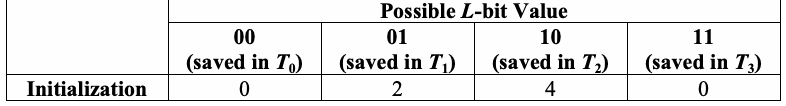
| 取り得るLビット値 | ||||
| 00（T_0に保存） | 01（T_1に保存） | 10（T_2に保存） | 11（T_3に保存） | |
| 初期化 | 0 | 2 | 4 | 0 |
(3) Examine each of the K blocks in the test segment and determine the number of blocks since the last occurrence of the same L-bit block (i.e., i – T ). Replace the value in the table with the j location of the current block (i.e., T = i). Add the calculated distance between re-occurrences of
(3) 試験セグメント内の各Kブロックを調べ、同じLビットブロックが最後に出現してからのブロック数（すなわち、i − T_j）を求める。表の値を現在のブロックの位置（すなわち、T_
未レビュー訳j = i）で置き換える。同じLビットブロックの再出現間隔を
未レビュー訳the same L-bit block to an accumulating log sum of all the differences detected in the K blocks 2 (i.e., sum = sum + log (i – T )).
K個のブロックで検出されたすべての差の累積log_2和に加える（すなわち、sum = sum + log
未レビュー訳For block 10: 10 is placed in the “11” row of the table (i.e., T ), and sum = 5.169925002
ブロック10：10を「11」行（すなわち、T_
未レビュー訳3）に配置し、合計は5.169925002
未レビュー訳+ log (10-6) = 5.169925002 + 2 = 7.169925002. 2
+ log_2（10−6） = 5.169925002 + 2 = 7.169925002。
未レビュー訳The states of the table are:
表の状態は次のとおりである。
未レビュー訳| Iteration Block | Possible L-bit Value |
| 00 / 01 / 10 / 11 | |
| 4 | 0 / 2 / 4 / 0 |
| 5 | 0 / 5 / 4 / 0 |
| 6 | 0 / 5 / 4 / 6 |
| 7 | 0 / 7 / 4 / 6 |
| 8 | 0 / 8 / 4 / 6 |
| 9 | 0 / 9 / 4 / 6 |
| 10 | 0 / 9 / 4 / 10 |
原本の表画像

| 反復ブロック | 取り得るLビット値 |
| 00 / 01 / 10 / 11 | |
| 4 | 0 / 2 / 4 / 0 |
| 5 | 0 / 5 / 4 / 0 |
| 6 | 0 / 5 / 4 / 6 |
| 7 | 0 / 7 / 4 / 6 |
| 8 | 0 / 8 / 4 / 6 |
| 9 | 0 / 9 / 4 / 6 |
| 10 | 0 / 9 / 4 / 10 |
1 Q+K
1 Q+K
未レビュー訳(4) Compute the test statistic: f = ∑log (i − T ) , where T is the table entry corresponding to
(4) 検定統計量を計算する：f = ∑log (i − T ) 、ここでTは、対応する表のエントリであり、
未レビュー訳j
未レビュー訳n
未レビュー訳2 j
2 j
未レビュー訳K i=Q+1 the decimal representation of the contents of the ith L-bit block.
K i=Q+1 i番目のLビットブロックの内容の十進表現。
未レビュー訳7.169925002
7.169925002
未レビュー訳For the example in this section, f =
この節の例では、f =
未レビュー訳= 1.1949875.
= 1.1949875。
未レビュー訳n
未レビュー訳6
未レビュー訳 f − expectedValue( L )
f − expectedValue( L )
未レビュー訳(5) Compute P-value = erfc n
(5) P値を計算する = erfc n
未レビュー訳 , where erfc is defined in Section 5.5.3, and
、erfcは5.5.3節で定義されており、
未レビュー訳
未レビュー訳
未レビュー訳2σ
未レビュー訳
未レビュー訳 expectedValue(L) and σare taken from a table of precomputed values2 (see the table below).
expectedValue(L) と σ は、事前計算値2の表から取得する（下表を参照）。
未レビュー訳Under an assumption of randomness, the sample mean, expectedValue(L), is the theoretical expected value of the computed statistic for the given L-bit length. The theoretical standard
無作為性を仮定すると、標本平均expectedValue(L)は、与えられたLビット長に対して計算された統計量の理論的期待値である。理論上の標準
未レビュー訳0.8 32 K −3 L
0.8 32 K −3 L
未レビュー訳var iance( L )
variance(L)
未レビュー訳deviation is given by σ = c
偏差はσ = cで与えられる
未レビュー訳, where c = 0.7 − +4 + .
、ここでc = 0.7 − +4 + 。
未レビュー訳L L 15
L L 15
未レビュー訳K
未レビュー訳| L | expectedValue | variance |
| 6 | 5.2177052 | 2.954 |
| 7 | 6.1962507 | 3.125 |
| 8 | 7.1836656 | 3.238 |
| 9 | 8.1764248 | 3.311 |
| 10 | 9.1723243 | 3.356 |
| 11 | 10.170032 | 3.384 |
原本の表画像

| L | expectedValue | variance |
| 6 | 5.2177052 | 2.954 |
| 7 | 6.1962507 | 3.125 |
| 8 | 7.1836656 | 3.238 |
| 9 | 8.1764248 | 3.311 |
| 10 | 9.1723243 | 3.356 |
| 11 | 10.170032 | 3.384 |
| L | expectedValue | variance |
| 12 | 11.168765 | 3.401 |
| 13 | 12.168070 | 3.410 |
| 14 | 13.167693 | 3.416 |
| 15 | 14.167488 | 3.419 |
| 16 | 15.167379 | 3.421 |
原本の表画像

| L | expectedValue | variance |
| 12 | 11.168765 | 3.401 |
| 13 | 12.168070 | 3.410 |
| 14 | 13.167693 | 3.416 |
| 15 | 14.167488 | 3.419 |
| 16 | 15.167379 | 3.421 |
L expectedValue variance L expectedValue variance 6 5.2177052 2.954 12 11.168765 3.401 7 6.1962507 3.125 13 12.168070 3.410 8 7.1836656 3.238 14 13.167693 3.416 9 8.1764248 3.311 15 14.167488 3.419 10 9.1723243 3.356 16 15.167379 3.421
L expectedValue variance L expectedValue variance 6 5.2177052 2.954 12 11.168765 3.401 7 6.1962507 3.125 13 12.168070 3.410 8 7.1836656 3.238 14 13.167693 3.416 9 8.1764248 3.311 15 14.167488 3.419 10 9.1723243 3.356 16 15.167379 3.421
未レビュー訳 1.1949875 − 1.5374383
1.1949875 − 1.5374383
未レビュー訳For the example in this section, P-value = erfc
この節の例では、P値 = erfc
未レビュー訳 = 0.767189. Note
= 0.767189。注記
未レビュー訳
未レビュー訳
未レビュー訳2 1.338
2 1.338
未レビュー訳
未レビュー訳
未レビュー訳that the expected value and variance for L = 2 are not provided in the above table, since a block of length two is not recommended for testing. However, this value for L is easy to use in an example. The value for the expected value and variance for the case where L = 2, although not shown in the above table, were taken from the indicated reference3.
L = 2の場合の期待値と分散が上表に示されていないのは、長さ二のブロックは検定に推奨されないためである。ただし、例ではこのLの値を容易に使用できる。L = 2の場合の期待値と分散は、上表には示されていないが、該当する参考文献3から取得した。
未レビュー訳2.9.5 Decision Rule (at the 1% Level)
2.9.5 判定規則（1%水準）
未レビュー訳If the computed P-value is < 0.01, then conclude that the sequence is non-random. Otherwise, conclude that the sequence is random.
計算したP値が< 0.01の場合、系列は非ランダムであると結論する。それ以外の場合、系列はランダムであると結論する。
未レビュー訳2.9.6 Conclusion and Interpretation of Results
2.9.6 結論と結果の解釈
未レビュー訳Since the P-value obtained in step 5 of Section 2.9.4 is ≥ 0.01 (P-value = 0.767189), the conclusion is that the sequence is random.
2.9.4節のステップ5で得られたP値は≥ 0.01（P値 = 0.767189）なので、系列はランダムであると結論する。
未レビュー訳Theoretical expected values for ϕhave been computed as shown in the table in step (5) of Section 2.9.4. If f differs significantly from expectedValue(L), then the sequence is significantly compressible. n
ϕの理論的期待値は、2.9.4節のステップ（5）の表に示すように計算されている。fがexpectedValue(L)と有意に異なる場合、系列は有意に圧縮可能である。n
未レビュー訳2.9.7 Input Size Recommendation
2.9.7 入力サイズの推奨事項
未レビュー訳This test requires a long sequence of bits (n ≥(Q + K)L) which are divided into two segments of L-bit blocks, where L should be chosen so that 6 ≤L ≤16. The first segment consists of Q initialization blocks, where Q should be chosen so that Q = 10 •2L. The second segment consists of K test blocks, where K = n/L- Q ≈1000 •2L. The values of L, Q and n should be chosen as follows:
この検定には長いビット系列（n ≥(Q + K)L）が必要であり、これはLビットブロックからなる二つのセグメントに分割される。Lは6 ≤L ≤16となるように選択すべきである。最初のセグメントはQ個の初期化ブロックからなり、QはQ = 10 •2Lとなるように選択すべきである。次のセグメントはK個の検定ブロックからなり、K = n/L- Q ≈1000 •2Lである。L、Qおよびnの値は次のように選択する。
未レビュー訳| n | L | Q = 10 • 2L |
| ≥ 387,840 | 6 | 640 |
| ≥ 904,960 | 7 | 1280 |
| ≥ 2,068,480 | 8 | 2560 |
| ≥ 4,654,080 | 9 | 5120 |
| ≥ 10,342,400 | 10 | 10240 |
| ≥ 22,753,280 | 11 | 20480 |
| ≥ 49,643,520 | 12 | 40960 |
| ≥ 107,560,960 | 13 | 81920 |
| ≥ 231,669,760 | 14 | 163840 |
| ≥ 496,435,200 | 15 | 327680 |
| ≥ 1,059,061,760 | 16 | 655360 |
原本の表画像
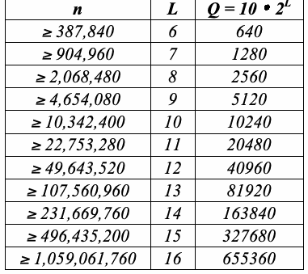
| n | L | Q = 10 • 2L |
| ≥ 387,840 | 6 | 640 |
| ≥ 904,960 | 7 | 1280 |
| ≥ 2,068,480 | 8 | 2560 |
| ≥ 4,654,080 | 9 | 5120 |
| ≥ 10,342,400 | 10 | 10240 |
| ≥ 22,753,280 | 11 | 20480 |
| ≥ 49,643,520 | 12 | 40960 |
| ≥ 107,560,960 | 13 | 81920 |
| ≥ 231,669,760 | 14 | 163840 |
| ≥ 496,435,200 | 15 | 327680 |
| ≥ 1,059,061,760 | 16 | 655360 |
2.9.8 Example
2.9.8 例
未レビュー訳ε= A binary string constructed using G-SHA-14
ε = G-SHA-14を用いて構成したビット文字列
未レビュー訳(input)
（入力）
未レビュー訳(input)
（入力）
未レビュー訳n = 1048576, L = 7, Q = 1280
n = 1048576, L = 7, Q = 1280
未レビュー訳(note)
（注記）
未レビュー訳Note: 4 bits are discarded.
注記：4ビットが破棄される。
未レビュー訳(processing) c =0.591311, σ= 0.002703, K = 148516, sum = 919924.038020
（処理）c = 0.591311, σ = 0.002703, K = 148516, sum = 919924.038020
未レビュー訳(processing) f = 6.194107, expectedValue = 6.196251, σ= 3.125
（処理）f = 6.194107, expectedValue = 6.196251, σ = 3.125
未レビュー訳n
未レビュー訳(output) P-value = 0.427733
（出力）P値 = 0.427733
未レビュー訳(conclusion) Since P-value ≥0.01, accept the sequence as random.
（結論）P値 ≥ 0.01であるため、この系列をランダムと判定する。
未レビュー訳2.10 Linear Complexity Test
2.10 線形複雑度検定
未レビュー訳2.10.1 Test Purpose
2.10.1 試験目的
未レビュー訳The focus of this test is the length of a linear feedback shift register (LFSR). The purpose of this test is to determine whether or not the sequence is complex enough to be considered random. Random sequences are characterized by longer LFSRs. An LFSR that is too short implies non-randomness.
この検定は、線形帰還シフトレジスタ（LFSR）の長さに着目する。この検定の目的は、系列がランダムと見なすのに十分な複雑さを持つかどうかを判定することである。ランダム系列は、より長いLFSRによって特徴付けられる。LFSRが短すぎる場合、その系列は非ランダムであることを示唆する。
未レビュー訳2.10.2 Function Call
2.10.2 関数呼び出し
未レビュー訳LinearComplexity(M, n), where:
LinearComplexity(M, n)、ここで：
未レビュー訳M The length in bits of a block.
M ブロックのビット長。
未レビュー訳n The length of the bit string.
n ビット文字列の長さ。
未レビュー訳Additional input used by the function, but supplied by the testing code:
関数が使用する追加の入力。ただし、試験コードから提供される：
未レビュー訳ε The sequence of bits as generated by the RNG or PRNG being tested; this exists as a global structure at the time of the function call; ε= ε , ε , … , ε .
ε 試験対象のRNGまたはPRNGによって生成されたビット列。この列は、関数呼び出し時にグローバル構造として存在する。ε = ε , ε , … , ε .
未レビュー訳1 2 n
1 2 n
未レビュー訳K The number of degrees of freedom; K = 6 has been hard coded into the test.
K 自由度の数。この検定ではK = 6がハードコードされている。
未レビュー訳2.10.3 Test Statistic and Reference Distribution
2.10.3 検定統計量と参照分布
未レビュー訳χ2(obs): A measure of how well the observed number of occurrences of fixed length LFSRs
χ2(obs)：固定長LFSRの観測出現数が
未レビュー訳matches the expected number of occurrences under an assumption of randomness.
無作為性を仮定した場合の期待出現数にどの程度一致するかを示す尺度。
未レビュー訳The reference distribution for the test statistic is the χ2 distribution.
検定統計量の参照分布はχ2分布である。
未レビュー訳2.10.4 Test Description
2.10.4 検定の説明
未レビュー訳(1) Partition the n-bit sequence into N independent blocks of M bits, where n = MN.
(1) nビット系列を、それぞれMビットの独立したN個のブロックに分割する。ここでn = MNである。
未レビュー訳(2) Using the Berlekamp-Massey algorithm5, determine the linear complexity L of each of the N
(2) Berlekamp-Masseyアルゴリズム5を用いて、N個の各ブロックの線形複雑度L_
未レビュー訳i
未レビュー訳blocks (i = 1,…,N). L is the length of the shortest linear feedback shift register sequence that
（i = 1,…,N）。L_は、最短の線形帰還シフトレジスタ系列の長さであり、
未レビュー訳i
未レビュー訳generates all bits in the block i. Within any L -bit sequence, some combination of the bits, when i added together modulo 2, produces the next bit in the sequence (bit L + 1).
ブロックi内のすべてのビットを生成する。任意のL_iビット系列では、ビットのある組み合わせを法2で加算すると系列内の次のビット（ビットL + 1）が生成される。
未レビュー訳i
未レビュー訳For example, if M = 13 and the block to be tested is 1101011110001, then L = 4, and the
たとえば、M = 13で、試験対象のブロックが1101011110001の場合、L = 4となり、L_
未レビュー訳i
未レビュー訳sequence is produced by adding the 1st and 2nd bits within a 4-bit subsequence to produce the next bit (the 5th bit). The examination proceeded as follows:
系列は、第1および第2のビットを4ビット部分列内で加算して次のビット（第5ビット）を生成することで得られる。検査は次のように進められた：
未レビュー訳| Bit 1 | Bit 2 | Bit 3 | Bit 4 | Bit 5 | |
| The first 4 bits and the resulting 5th bit | 1 | 1 | 0 | 1 | 0 |
| Bits 2-5 and the resulting 6th bit | 1 | 0 | 1 | 0 | 1 |
| Bits 3-6 and the resulting 7th bit | 0 | 1 | 0 | 1 | 1 |
| Bits 4-7 and the resulting 8th bit | 1 | 0 | 1 | 1 | 1 |
| Bits 5-8 and the resulting 9th bit | 0 | 1 | 1 | 1 | 1 |
| Bits 6-9 and the resulting 10th bit | 1 | 1 | 1 | 1 | 0 |
| Bits 7-10 and the resulting 11th bit | 1 | 1 | 1 | 0 | 0 |
| Bits 8-11 and the resulting 12th bit | 1 | 1 | 0 | 0 | 0 |
| Bits 9-12 and the resulting 13th bit | 1 | 0 | 0 | 0 | 1 |
原本の表画像
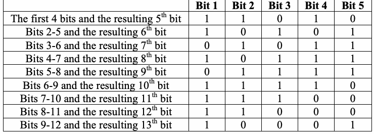
| ビット1 | ビット2 | ビット3 | ビット4 | ビット5 | |
| 最初の4ビットと、その結果得られる第5ビット | 1 | 1 | 0 | 1 | 0 |
| ビット2-5と、その結果得られる第6ビット | 1 | 0 | 1 | 0 | 1 |
| ビット3-6と、その結果得られる第7ビット | 0 | 1 | 0 | 1 | 1 |
| ビット4-7と、その結果得られる第8ビット | 1 | 0 | 1 | 1 | 1 |
| ビット5-8と、その結果得られる第9ビット | 0 | 1 | 1 | 1 | 1 |
| ビット6-9と、その結果得られる第10ビット | 1 | 1 | 1 | 1 | 0 |
| ビット7-10と、その結果得られる第11ビット | 1 | 1 | 1 | 0 | 0 |
| ビット8-11と、その結果得られる第12ビット | 1 | 1 | 0 | 0 | 0 |
| ビット9-12と、その結果得られる第13ビット | 1 | 0 | 0 | 0 | 1 |
For this block, the trial feedback algorithm works. If this were not the case, other feedback algorithms would be attempted for the block (e.g., adding bits 1 and 3 to produce bit 5, or adding bits 1, 2 and 3 to produce bit 6, etc.).
このブロックでは、試行中のフィードバックアルゴリズムが機能する。そうでない場合は、このブロックに対して他のフィードバックアルゴリズムを試す（例：ビット1と3を加算してビット5を生成する、またはビット1、2、3を加算してビット6を生成するなど）。
未レビュー訳(1) Under an assumption of randomness, calculate the theoretical mean µ:
(1) 無作為性を仮定し、理論平均µを計算する：
未レビュー訳M (9 + (−1)M+1) (M 3 + 29)
M (9 + (−1)M+1) (M 3 + 29)
未レビュー訳.
未レビュー訳µ = +
µ = +
未レビュー訳−
未レビュー訳2M
2M
未レビュー訳2 36
2 36
未レビュー訳13 (9 + (−1)13+1) (133 + 29)
13 (9 + (−1)13+1) (133 + 29)
未レビュー訳For the example in this section, µ = +
この節の例では、µ = +
未レビュー訳= 6.777222.
= 6.777222。
未レビュー訳− 213
− 213
未レビュー訳2 36
2 36
未レビュー訳(4) For each substring, calculate a value of T , where T = (−1)M •(L −µ)+ 2 .
(4) 各部分文字列についてTの値を計算する。ここでT = (−1)M •(L −µ)+ 2 .
未レビュー訳i
未レビュー訳i
未レビュー訳i 9
i 9
未レビュー訳For the example, T = (− 1)13 (4 − 6.777222)+ 2 = 2.999444.
この例では、T = (− 1)13 (4 − 6.777222)+ 2 = 2.999444。
未レビュー訳i
未レビュー訳9
未レビュー訳(5) Record the T values in v ,…, v as follows: i
(5) Tの値をv_ ,…, v_に次のように記録する：i
未レビュー訳0 6
0 6
未レビュー訳If: T ≤-2.5
条件：T ≤-2.5
未レビュー訳Increment v by one
vを一つ増加させる
未レビュー訳i
未レビュー訳0
未レビュー訳-2.5 < T ≤-1.5
-2.5 < T ≤-1.5
未レビュー訳Increment v by one
vを一つ増加させる
未レビュー訳i
未レビュー訳1
未レビュー訳-1.5 < T ≤-0.5
-1.5 < T ≤-0.5
未レビュー訳Increment v by one
vを一つ増加させる
未レビュー訳i
未レビュー訳2
未レビュー訳-0.5 < T ≤0.5
-0.5 < T ≤0.5
未レビュー訳Increment v by one
vを一つ増加させる
未レビュー訳i
未レビュー訳3
未レビュー訳0.5 < T ≤1.5
0.5 < T ≤1.5
未レビュー訳Increment v by one
vを一つ増加させる
未レビュー訳i
未レビュー訳4
未レビュー訳1.5 < T ≤2.5
1.5 < T ≤2.5
未レビュー訳Increment v by one
vを一つ増加させる
未レビュー訳i
未レビュー訳5
未レビュー訳T > 2.5
T > 2.5
未レビュー訳Increment v by one
vを一つ増加させる
未レビュー訳i
未レビュー訳6
未レビュー訳K (v − Nπ )2
K (v − Nπ )2
未レビュー訳(6) Compute χ2(obs ) = ∑ i i , where π = 0.010417, π = 0.03125, π = 0.125, π = 0.5, 0
(6) χ2(obs ) = ∑ i i を計算する。ここでπ = 0.010417, π = 0.03125, π = 0.125, π = 0.5, 0
未レビュー訳1
未レビュー訳2
未レビュー訳3
未レビュー訳Nπ i=0 i
Nπ i=0 i
未レビュー訳π = 0.25,π = 0.0625, π = 0.020833 are the probabilities computed by the equations in Section 4
π = 0.25, π = 0.0625, π = 0.020833は、Section 4の式で計算された確率である。
未レビュー訳5
未レビュー訳6
未レビュー訳3.10.
3.10.
未レビュー訳 K χ2(obs )
K χ2(obs )
未レビュー訳(7) Compute P-value = igamc ,
(7) P値を計算する = igamc ,
未レビュー訳 .
。
未レビュー訳 2 2
2 2
未レビュー訳2.10.5 Decision Rule (at the 1% Level)
2.10.5 判定規則（1%水準）
未レビュー訳If the computed P-value is < 0.01, then conclude that the sequence is non-random. Otherwise, conclude that the sequence is random.
計算したP値が< 0.01の場合、系列は非ランダムであると結論する。それ以外の場合は、系列はランダムであると結論する。
未レビュー訳2.10.6 Conclusion and Interpretation of Results
2.10.6 結論と結果の解釈
未レビュー訳If the P-value were < 0.01, this would have indicated that the observed frequency counts of T stored in
P値が< 0.01であったなら、これは、格納されたTの観測度数が
未レビュー訳i
未レビュー訳the ν bins varied from the expected values; it is expected that the distribution of the frequency of the T I
νビン内で期待値と異なっていたことを示す。Tの度数分布は
未レビュー訳i
未レビュー訳(in the ν bins) should be proportional to the computed π as shown in step (6) of Section 2.10.5.
（νビン内では）ステップ（6）のSection 2.10.5に示されるように、計算されたπに比例すると予想される。
未レビュー訳I
未レビュー訳i
未レビュー訳2.10.7 Input Size Recommendation
2.10.7 入力サイズの推奨事項
未レビュー訳Choose n ≥106. The value of M must be in the range 500≤M ≤5000, and N ≥200 for the χ2 result to be valid (see Section 3.10 for a discussion).
n ≥ 10^6を選択する。Mは500≤M ≤5000の範囲でなければならず、χ2の結果が有効となるにはN ≥200である必要がある（説明についてはSection 3.10を参照）。
未レビュー訳2.10.8 Example
2.10.8 例
未レビュー訳(input)
（入力）
未レビュー訳ε= “the first 1,000,000 binary digits in the expansion of e”
ε =「eの展開における最初の1,000,000個の二進数の桁」
未レビュー訳n = 1000000 = 106, M = 1000
n = 1000000 = 10^6, M = 1000
未レビュー訳(input)
（入力）
未レビュー訳(processing) v = 11; v = 31; v = 116; v = 501; v = 258; v = 57; v = 26
（処理）v = 11; v = 31; v = 116; v = 501; v = 258; v = 57; v = 26
未レビュー訳0 1 2
0 1 2
未レビュー訳3
未レビュー訳4
未レビュー訳5 6
5 6
未レビュー訳(processing) χ2(obs) = 2.700348
（処理）χ2(obs) = 2.700348
未レビュー訳(output) P-value = 0.845406
（出力）P値 = 0.845406
未レビュー訳(conclusion) Since the P-value ≥0.01, accept the sequence as random.
（結論）P値 ≥0.01であるため、系列をランダムと判定する。
未レビュー訳2.11 Serial Test
2.11 シリアル検定
未レビュー訳2.11.1 Test Purpose
2.11.1 検定の目的
未レビュー訳The focus of this test is the frequency of all possible overlapping m-bit patterns across the entire sequence. The purpose of this test is to determine whether the number of occurrences of the 2m m-bit overlapping patterns is approximately the same as would be expected for a random sequence. Random sequences have uniformity; that is, every m-bit pattern has the same chance of appearing as every other m-bit pattern. Note that for m = 1, the Serial test is equivalent to the Frequency test of Section 2.1.
この検定では、系列全体にわたる、考えられるすべての重なり合うmビットパターンの頻度に着目する。この検定の目的は、2^m個の重なり合うmビットパターンの出現数が、ランダムな系列で期待される数とほぼ等しいかを判定することである。ランダム系列は一様性を持つ。つまり、各mビットパターンが出現する確率は、他のどのmビットパターンが出現する確率とも同じである。m = 1の場合、連続検定は2.1節の頻度検定と等価である。
未レビュー訳2.11.2 Function Call
2.11.2 関数呼び出し
未レビュー訳Serial(m,n), where:
Serial(m,n)、ここで：
未レビュー訳m The length in bits of each block.
m 各ブロックのビット長。
未レビュー訳n The length in bits of the bit string.
n ビット文字列の長さ。
未レビュー訳Additional input used by the function, but supplied by the testing code:
関数が使用する追加の入力。ただし、試験コードから提供される：
未レビュー訳ε The sequence of bits as generated by the RNG or PRNG being tested; this exists as a global structure at the time of the function call; ε= ε , ε , … , ε .
ε 試験対象のRNGまたはPRNGによって生成されるビット列。この列は関数呼び出し時にグローバル構造として存在する。ε = ε , ε , … , ε .
未レビュー訳2.11.3 Test Statistic and Reference Distribution
2.11.3 検定統計量と参照分布
未レビュー訳∇ψ2 (obs) and∇2ψ2 (obs): A measure of how well the observed frequencies of m-bit patterns match m
∇ψ2 (obs) および ∇2ψ2 (obs)：観測されたmビットパターンの頻度が、m
未レビュー訳m
未レビュー訳the expected frequencies of the m-bit patterns.
ビットパターンの期待頻度にどの程度一致するかを示す尺度。
未レビュー訳The reference distribution for the test statistic is the χ2 distribution.
検定統計量の参照分布はχ2分布である。
未レビュー訳2.11.4 Test Description
2.11.4 検定の説明
未レビュー訳(1) Form an augmented sequence ε′: Extend the sequence by appending the first m-1 bits to the end
（1）拡張系列 ε′ を形成する: 系列の末尾に最初の m-1 ビットを追加して
未レビュー訳of the sequence for distinct values of n.
n の異なる値それぞれについて系列を拡張する。
未レビュー訳For example, given n = 10 and ε= 0011011101. If m = 3, then ε´ = 001101110100. If m = 2, then ε´ = 00110111010. If m = 1, then ε´ = the original sequence 0011011101.
例えば、n = 10、ε= 0011011101 の場合、m = 3 なら ε´ = 001101110100、m = 2 なら ε´ = 00110111010、m = 1 なら ε´ は元の系列 0011011101 である。
未レビュー訳(2) Determine the frequency of all possible overlapping m-bit blocks, all possible overlapping (m-1)-bit blocks and all possible overlapping (m-2)-bit blocks. Let v denote the frequency of the m-
（2）重複を許すすべての m ビットブロック、すべての重複を許す (m-1) ビットブロック、およびすべての重複を許す (m-2) ビットブロックの頻度を求める。v を m-
未レビュー訳i ...i 1 m
i ...i 1 m
未レビュー訳bit pattern i …i ; let v denote the frequency of the (m-1)-bit pattern i …i ; and let
ビットパターン i …i の頻度とする。v を (m-1) ビットパターン i …i の頻度とし、さらに
未レビュー訳1 m i ...i
1 m i ...i
未レビュー訳1 m-1
1 m-1
未レビュー訳1 m−1 v denote the frequency of the (m-2)-bit pattern i …i .
1 m−1 v を (m-2) ビットパターン i …i の頻度とする。
未レビュー訳1 m-2
1 m-2
未レビュー訳i ...i 1 m−2
i ...i 1 m−2
未レビュー訳For the example in this section, when m = 3, then (m-1) = 2, and (m-2) = 1. The frequency of all 3-bit blocks is: v = 0, v = 1, v = 1, v = 2, v = 1, v = 2 v = 2, v = 0. The 000 001 010 011 100 101 , 110 111 frequency of all possible (m-1)-bit blocks is: v = 1, v = 3, v = 3 v = 3. The frequency of all
本節の例では、m = 3 のとき、(m-1) = 2、(m-2) = 1 となる。すべての 3ビット ブロックの頻度は: v = 0、v = 1、v = 1、v = 2、v = 1、v = 2 v = 2、v = 0 である。000 001 010 011 100 101 , 110 111。すべての可能な (m-1)ビット ブロックの頻度は: v = 1、v = 3、v = 3 v = 3 である。すべての
未レビュー訳00 01 10 , 11
00 01 10 , 11
未レビュー訳(m-2)-bit blocks is: v = 4, v = 6.
(m-2)ビット ブロックの頻度は: v = 4、v = 6。
未レビュー訳0 1
0 1
未レビュー訳(3) Compute: ψ2 = 2m ∑ v − n 2 = 2m ∑ v2 − n
（3）計算する: ψ2 = 2m ∑ v − n 2 = 2m ∑ v2 − n
未レビュー訳m n i ...i i1...im 2m n i ...i i1...im
m n i ...i i1...im 2m n i ...i i1...im
未レビュー訳1 m
1 m
未レビュー訳1 m ψ2m−1 = 2mn−1 i .∑..i vi1...im−1 − 2mn−1 2 = 2mn−1 i .∑..i vi21...im−1 − n
1 m ψ2m−1 = 2mn−1 i .∑..i vi1...im−1 − 2mn−1 2 = 2mn−1 i .∑..i vi21...im−1 − n
未レビュー訳1 m−1
1 m−1
未レビュー訳1 m−1
1 m−1
未レビュー訳ψ2m−2 = 2mn−2 i ..∑.i vi1...im−2 − 2mn−2 2 = 2mn−2 i ..∑.i vi21...im−2 − n
ψ2m−2 = 2mn−2 i ..∑.i vi1...im−2 − 2mn−2 2 = 2mn−2 i ..∑.i vi21...im−2 − n
未レビュー訳1 m−2
1 m−2
未レビュー訳1 m−2
1 m−2
未レビュー訳For the example in this section, 23
本節の例では、23
未レビュー訳ψ2 = (0 + 1 + 1 + 4 + 1 + 4 + 4 + 1) − 10 = 12.8 − 10 = 2.8 3
ψ2 = (0 + 1 + 1 + 4 + 1 + 4 + 4 + 1) − 10 = 12.8 − 10 = 2.8 3
未レビュー訳10 22
10 22
未レビュー訳ψ2 = (1+ 9 + 9 + 9) −10 = 11.2 −10 = 1.2 2
ψ2 = (1+ 9 + 9 + 9) −10 = 11.2 −10 = 1.2 2
未レビュー訳10 2
10 2
未レビュー訳ψ2 = (16 + 36) −10 = 10.4 −10 = 0.4 1
ψ2 = (16 + 36) −10 = 10.4 −10 = 0.4 1
未レビュー訳10
未レビュー訳∇2ψ2 =ψ2 − 2ψ2 +ψ2 = Ψ2 − 2Ψ2 + Ψ2 = 2.8 − 2(1.2)+ 0.4 = 0.8 m m m−1 m−2 3 2 1
∇2ψ2 =ψ2 − 2ψ2 +ψ2 = Ψ2 − 2Ψ2 + Ψ2 = 2.8 − 2(1.2)+ 0.4 = 0.8 m m m−1 m−2 3 2 1
未レビュー訳(5) Compute: P-value1 = igamc 2m−2,∇ψ2 and
（5）計算する: P-value1 = igamc 2m−2,∇ψ2 および
未レビュー訳m
未レビュー訳 P-value2 = igamc2m−3,∇2ψ2 . m
P-value2 = igamc2m−3,∇2ψ2 . m
未レビュー訳For the example in this section,
本節の例では、
未レビュー訳 1.6 P-value1 = igamc2, = 0.9057 2 0.8
1.6 P-value1 = igamc2, = 0.9057 2 0.8
未レビュー訳P-value2 = igamc1, = 0.8805. 2
P-value2 = igamc1, = 0.8805. 2
未レビュー訳2.11.5 Decision Rule (at the 1% Level)
2.11.5 1%水準での判定規則
未レビュー訳If the computed P-value is < 0.01, then conclude that the sequence is non-random. Otherwise, conclude that the sequence is random.
算出されたP-valueが < 0.01 の場合、系列は非ランダムであると結論する。それ以外の場合、系列はランダムであると結論する。
未レビュー訳2.11.6 Conclusion and Interpretation of Results
2.11.6 結論および結果の解釈
未レビュー訳Since the P-value obtained in step 5 of Section 2.11.4 is ≥ 0.01 (P-value1 = 0.808792 and P-value2 = 0.670320), the conclusion is that the sequence is random.
手順5（2.11.4節）で得られたP-valueが≥ 0.01（P-value1 = 0.808792、P-value2 = 0.670320）であるため、系列はランダムであるとの結論になる。
未レビュー訳Note that if ∇2ψ2 or ∇ψ2 had been large then non-uniformity of the m-bit blocks is implied.
∇2ψ2 または ∇ψ2 が大きかった場合、mビットブロックの非一様性が示唆される。
未レビュー訳m m
m m
未レビュー訳2.11.7 Input Size Recommendation
2.11.7 入力サイズの推奨
未レビュー訳Choose m and n such that m < log n-2.
m および n は、m < log n-2 となるように選択する。
未レビュー訳2
未レビュー訳2.11.8 Example
2.11.8 例
未レビュー訳(input)
(入力)
未レビュー訳ε= 1,000,000 bits from the binary expansion of e
ε= e の二進展開から得られる 1,000,000 ビット
未レビュー訳m = 2; n = 1000000 = 106
m = 2; n = 1000000 = 106
未レビュー訳(input)
(入力)
未レビュー訳(processing) #0s = 499971; #1s = 500029
(処理) #0s = 499971; #1s = 500029
未レビュー訳#00s = 250116; #01s = #10s = 249855; #11s = 250174
#00s = 250116; #01s = #10s = 249855; #11s = 250174
未レビュー訳(processing) ψ2 = 0.343128; ψ2 = 0.003364; ψ2 = 0.000000
(処理) ψ2 = 0.343128; ψ2 = 0.003364; ψ2 = 0.000000
未レビュー訳2
未レビュー訳1
未レビュー訳0
未レビュー訳(processing) ∇ψ2 = 0.339764; ∇2ψ2 = 0.336400 2
(処理) ∇ψ2 = 0.339764; ∇2ψ2 = 0.336400 2
未レビュー訳2
未レビュー訳(output)P-value = 0.843764; P-value = 0.561915
(出力)P-value = 0.843764; P-value = 0.561915
未レビュー訳1
未レビュー訳2
未レビュー訳(conclusion) Since both P-value1 and P-value2 were ≥0.01, accept the sequences as random for both
(結論) P-value1とP-value2の両方が≥0.01であったため、両方の
未レビュー訳tests.
検定において系列をランダムとして受け入れる。
未レビュー訳2.12 Approximate Entropy Test
2.12 近似エントロピー検定
未レビュー訳2.12.1 Test Purpose
2.12.1 検定の目的
未レビュー訳As with the Serial test of Section 2.11, the focus of this test is the frequency of all possible overlapping m-bit patterns across the entire sequence. The purpose of the test is to compare the frequency of overlapping blocks of two consecutive/adjacent lengths (m and m+1) against the expected result for a random sequence.
2.11節のSerial検定と同様に、この検定では、系列全体にわたる、重複を許すすべての m ビットパターンの頻度に着目する。この検定の目的は、連続する二つの長さ（m および m+1）の重複ブロックの頻度を、ランダム系列で期待される結果と比較することである。
未レビュー訳2.12.2 Function Call
2.12.2 関数呼び出し
未レビュー訳ApproximateEntropy(m,n), where:
ApproximateEntropy(m,n)、ここで:
未レビュー訳m The length of each block – in this case, the first block length used in the test. m+1 is the
m 各ブロックの長さ。この場合、検定で使用する最初のブロック長である。m+1 は
未レビュー訳second block length used.
使用する二番目のブロック長である。
未レビュー訳n The length of the entire bit sequence.
n ビット系列全体の長さ。
未レビュー訳Additional input used by the function, but supplied by the testing code:
関数が使用するが、検定コードから渡される追加の入力:
未レビュー訳ε The sequence of bits as generated by the RNG or PRNG being tested; this exists as a global structure at the time of the function call; ε = ε , ε , … , ε .
ε 検定対象のRNGまたはPRNGが生成したビット系列。この系列は関数呼び出し時にグローバル構造として存在し、ε = ε, ε, …, ε である。
未レビュー訳1 2 n
1 2 n
未レビュー訳2.12.3 Test Statistic and Reference Distribution
2.12.3 検定統計量および参照分布
未レビュー訳χ2(obs): A measure of how well the observed value of ApEn(m) (see step 6 in Section 2.12.4)
χ2(obs): 手順6（2.12.4節）で求めるApEn(m)の観測値が期待値にどの程度適合するかを示す尺度
未レビュー訳matches the expected value.
に適合する。
未レビュー訳The reference distribution for the test statistic is the χ2 distribution.
検定統計量の参照分布はχ2分布である。
未レビュー訳2.12.4 Test Description
2.12.4 検定の説明
未レビュー訳(1) Augment the n-bit sequence to create n overlapping m-bit sequences by appending m-1 bits from
（1）nビット系列を拡張し、n個の重複するmビット系列を作るため、系列の先頭から m-1 ビットを
未レビュー訳the beginning of the sequence to the end of the sequence.
系列の末尾に追加する。
未レビュー訳For example, if ε = 0100110101 and m = 3, then n = 10. Append the 0 and 1 at the beginning of the sequence to the end of the sequence. The sequence to be tested becomes 010011010101. (Note: This is done for each value of m.)
例えば、ε = 0100110101、m = 3 の場合、n = 10 である。系列の先頭の 0 と 1 を系列の末尾に追加する。検定対象の系列は 010011010101 となる。（注: これは m の各値について行う。）
未レビュー訳(2) A frequency count is made of the n overlapping blocks (e.g., if a block containing ε to ε is
（2）n 個の重複ブロックについて頻度を数える（例えば、ε から ε までを含むブロックが
未レビュー訳j j+m-1
j j+m-1
未レビュー訳examined at time j, then the block containing ε to ε is examined at time j+1). Let the count j+1 j +m of the possible m-bit ((m+1)-bit) values be represented as Cm , where i is the m-bit value.
時刻 j に調べられると、時刻 j+1 には、ε_{j+1} から ε_{j+m} までを含むブロックが調べられる。可能な m ビット ((m+1) ビット) 値の個数を Cm で表す。i は m ビット値を表す。
未レビュー訳i
未レビュー訳For the example in this section, the overlapping m-bit blocks (where m = 3) become 010, 100, 001, 011, 110, 101, 010, 101, 010, and 101. The calculated counts for the 2m = 23 = 8 possible m-bit strings are:
例えば、本節では、重複する m ビットブロック（m = 3）は 010、100、001、011、110、101、010、101、010、101 となる。可能な 2m = 23 = 8 個の m ビット文字列について計算された個数は次のとおり:
未レビュー訳#000 = 0, #001 = 1, #010 = 3, #011 = 1, #100 = 1, #101 = 3, #110 = 1, #111 = 0
#000 = 0, #001 = 1, #010 = 3, #011 = 1, #100 = 1, #101 = 3, #110 = 1, #111 = 0
未レビュー訳# i (3) Compute Cm = for each value of i. i n
# i （3）各 i の値について Cm = を計算する。i n
未レビュー訳For example in this section, C3 = 0, C3 = 0.1, C3 = 0.3, C3 =0.1, C3 = 0.1, C3 = 0.3,
本節の例では、For example in this section, C3 = 0, C3 = 0.1, C3 = 0.3, C3 =0.1, C3 = 0.1, C3 = 0.3,
未レビュー訳000 001
000 001
未レビュー訳010
010
未レビュー訳011
011
未レビュー訳100
100
未レビュー訳101
101
未レビュー訳C3 = 0.1, C3 = 0. 110 111
C3 = 0.1, C3 = 0. 110 111
未レビュー訳2m−1 (4) Compute ϕ( m ) = ∑π logπ , where π = C3 , and j=log i. i j
2m−1 （4）計算 ϕ( m ) = ∑π logπ , ここで π = C3 , かつ j=log i. i j
未レビュー訳2
未レビュー訳i i i=0
i i i=0
未レビュー訳For the example in this section, ϕ(3) = 0(log 0) + 0.1(log 0.1) + 0.3(log 0.3) + 0.1(log 0.1) + 0.1(log 0.1) + 0.3(log 0.3) + 0.1(log 0.1) + 0(log 0) = -1.64341772.
本節の例では、For the example in this section, ϕ(3) = 0(log 0) + 0.1(log 0.1) + 0.3(log 0.3) + 0.1(log 0.1) + 0.1(log 0.1) + 0.3(log 0.3) + 0.1(log 0.1) + 0(log 0) = -1.64341772.
未レビュー訳(5) Repeat steps 1-4, replacing m by m+1.
（5）手順1〜4を繰り返し、m を m+1 に置き換える。
未レビュー訳Step 1: For the example in this section, m is now 4, the sequence to be tested becomes 0100110101010.
手順1: 本節の例では、m は 4 となり、検定対象の系列は 0100110101010 となる。
未レビュー訳Step 2: The overlapping blocks become 0100, 1001, 0011, 0110, 1101, 1010, 0101, 1010, 0101,
手順2: 重複ブロックは 0100、1001、0011、0110、1101、1010、0101、1010、0101、
未レビュー訳1010.The calculated values are: #0011 = 1, #0100 = 1, #0101 = 2, #0110 = 1, #1001 = 1, #1010 = 3, #1101 = 1, and all other patterns are zero.
1010.計算された値は次のとおり: #0011 = 1、#0100 = 1、#0101 = 2、#0110 = 1、#1001 = 1、#1010 = 3、#1101 = 1。その他すべてのパターンはゼロである。
未レビュー訳Step 3: C4 = C4 = C4 = C4 = C4 = 0.1, C4 = 0.2, C4 = 0.3, and all other
手順3: C4 = C4 = C4 = C4 = C4 = 0.1, C4 = 0.2, C4 = 0.3, その他すべての
未レビュー訳0011 0100 0110 1001 1101
0011 0100 0110 1001 1101
未レビュー訳0101
0101
未レビュー訳1010
1010
未レビュー訳values are zero.
値はゼロである。
未レビュー訳Step 4: ϕ(4) = 0 + 0 + 0 + 0.1(log 0.01) + 0.1(log 0.01) + 0.2(log 0.02) + 0.1(log 0.01) + 0 + 0 + 0.1(log 0.01) + 0.3(log 0.03) + 0 + 0 + 0.1(log 0.01) + 0 + 0) = -1.83437197.
手順4: ϕ(4) = 0 + 0 + 0 + 0.1(log 0.01) + 0.1(log 0.01) + 0.2(log 0.02) + 0.1(log 0.01) + 0 + 0 + 0.1(log 0.01) + 0.3(log 0.03) + 0 + 0 + 0.1(log 0.01) + 0 + 0) = -1.83437197.
未レビュー訳(6) Compute the test statistic: χ2 = 2n[log 2 – ApEn(m)] , where ApEn(m) =ϕ(m) −ϕ(m+1) .
（6）検定統計量を計算する: χ2 = 2n[log 2 – ApEn(m)]。ここで ApEn(m) =ϕ(m) −ϕ(m+1) .
未レビュー訳For the example in this section,
本節の例では、
未レビュー訳ApEn(3) = -1.643418 – (-1.834372) = 0.190954 χ2 = 2•10(0.693147-0.190954) = 0.502193 χ2
ApEn(3) = -1.643418 – (-1.834372) = 0.190954 χ2 = 2•10(0.693147-0.190954) = 0.502193 χ2
未レビュー訳(7) Compute P-value = igamc(2m-1, ).
(7) P-valueを計算する = igamc(2m-1, ).
未レビュー訳2 For the example in this section, P-value = igamc 22, 0.502193 = 0.261961. 2
2 本節の例では、 P-value = igamc 22, 0.502193 = 0.261961. 2
未レビュー訳2.12.5 Decision Rule (at the 1% Level)
2.12.5 1%水準での判定規則
未レビュー訳If the computed P-value is < 0.01, then conclude that the sequence is non-random. Otherwise, conclude that the sequence is random.
算出されたP-valueが < 0.01 の場合、系列は非ランダムであると結論する。それ以外の場合、系列はランダムであると結論する。
未レビュー訳2.12.6 Conclusion and Interpretation of Results
2.12.6 結論および結果の解釈
未レビュー訳Since the P-value obtained in step 7 of Section 2.12.4 is ≥ 0.01 (P-value = 0.261961), the conclusion is that the sequence is random.
手順7（2.12.4節）で得られたP-valueが≥ 0.01（P-value = 0.261961）であるため、系列はランダムであるとの結論になる。
未レビュー訳Note that small values of ApEn(m) would imply strong regularity (see step 6 of Section 2.12.4). Large values would imply substantial fluctuation or irregularity.
ApEn(m)の小さい値は強い規則性を示唆する（手順6（2.12.4節）を参照）。大きい値は大幅な変動または不規則性を示唆する。
未レビュー訳2.12.7 Input Size Recommendation
2.12.7 入力サイズの推奨
未レビュー訳Choose m and n such that m < log n-5.
m および n は、m < log n-5 となるように選択する。
未レビュー訳2
未レビュー訳2.12.8 Example
2.12.8 例
未レビュー訳(input)
(入力)
未レビュー訳ε= 11001001000011111101101010100010001000010110100011 00001000110100110001001100011001100010100010111000
ε= 11001001000011111101101010100010001000010110100011 00001000110100110001001100011001100010100010111000
未レビュー訳(input)
(入力)
未レビュー訳m = 2; n = 100
m = 2; n = 100
未レビュー訳(processing) ApEn(m) = 0.665393
(処理) ApEn(m) = 0.665393
未レビュー訳(processing) χ2(obs) = 5.550792
(処理) χ2(obs) = 5.550792
未レビュー訳(output) P-value = 0.235301
(出力) P-value = 0.235301
未レビュー訳(conclusion) Since P-value ≥0.01, accept the sequence as random.
(結論) P-value ≥0.01 であるため、系列をランダムとして受け入れる。
未レビュー訳2.13 Cumulative Sums (Cusum) Test
2.13 累積和（Cusum）検定
未レビュー訳2.13.1 Test Purpose
2.13.1 検定の目的
未レビュー訳The focus of this test is the maximal excursion (from zero) of the random walk defined by the cumulative sum of adjusted (-1, +1) digits in the sequence. The purpose of the test is to determine whether the cumulative sum of the partial sequences occurring in the tested sequence is too large or too small relative to the expected behavior of that cumulative sum for random sequences. This cumulative sum may be considered as a random walk. For a random sequence, the excursions of the random walk should be near zero. For certain types of non-random sequences, the excursions of this random walk from zero will be large.
この検定は、系列内の調整済み（-1, +1）数字の累積和で定義されるランダムウォークが、ゼロから最大どれだけ逸脱するかに着目する。この検定の目的は、検定対象系列に含まれる部分系列の累積和が、ランダム系列におけるその累積和の期待される挙動と比較して大きすぎるか小さすぎるかを判定することである。この累積和はランダムウォークとみなすことができる。ランダム系列では、ランダムウォークの逸脱はゼロ付近になると考えられる。特定の種類の非ランダム系列では、このランダムウォークのゼロからの逸脱が大きくなる。
未レビュー訳2.13.2 Function Call
2.13.2 関数呼び出し
未レビュー訳CumulativeSums(mode,n), where:
CumulativeSums(mode,n)、ここで:
未レビュー訳n The length of the bit string.
n ビット列の長さ。
未レビュー訳Additional input for the function, but supplied by the testing code:
関数が使用するが、検定コードから渡される追加の入力:
未レビュー訳ε The sequence of bits as generated by the RNG or PRNG being tested; this exists as a global structure at the time of the function call; ε= ε , ε , … , ε .
ε 検定対象のRNGまたはPRNGが生成したビット系列。この系列は関数呼び出し時にグローバル構造として存在し、ε= ε, ε, …, ε である。
未レビュー訳1 2 n
1 2 n
未レビュー訳mode A switch for applying the test either forward through the input sequence (mode = 0) or
mode 入力系列を順方向（mode = 0）に検査するか、
未レビュー訳backward through the sequence (mode = 1).
系列を逆方向（mode = 1）に検査するかを切り替えるスイッチ。
未レビュー訳2.13.3 Test Statistic and Reference Distribution
2.13.3 検定統計量および参照分布
未レビュー訳z: The largest excursion from the origin of the cumulative sums in the corresponding (-1, +1)
z: 対応する（-1, +1）系列の累積和における、原点からの最大の逸脱
未レビュー訳sequence.
である。
未レビュー訳The reference distribution for the test statistic is the normal distribution.
検定統計量の参照分布は正規分布である。
未レビュー訳2.13.4 Test Description
2.13.4 検定の説明
未レビュー訳(1) Form a normalized sequence: The zeros and ones of the input sequence (ε) are converted to
（1）正規化系列を作る。入力系列（ε）のゼロと一を
未レビュー訳values X of –1 and +1 using X = 2ε – 1.
値Xの-1および+1に、X = 2ε – 1 を用いて変換する。
未レビュー訳i
未レビュー訳i i
i i
未レビュー訳For example, if ε = 1011010111, then X = 1, (-1), 1, 1, (-1), 1, (-1), 1, 1, 1.
例えば、 ε = 1011010111の場合、 X = 1, (-1), 1, 1, (-1), 1, (-1), 1, 1, 1.
未レビュー訳(2) Compute partial sums S of successively larger subsequences, each starting with X (if mode = 0)
（2）それぞれX_i（mode = 0 の場合）から始まる、長さが順次大きくなる部分系列の部分和Sを計算する
未レビュー訳i
未レビュー訳1
未レビュー訳or X (if mode = 1). n
または X（mode = 1 の場合）から始める。n
未レビュー訳| Mode = 0 (forward) | Mode = 1 (backward) |
| S = X 1 1 S = X + X 2 1 2 S = X + X + X 3 1 2 3 . . S = X + X + X + … + X k 1 2 3 k . . S = X + X + X + … + X + …+ X n 1 2 3 k n | S = X 1 n S = X + X 2 n n-1 S = X + X + X 3 n n-1 n-2 . . S = X + X + X + … + X k n n-1 n-2 n-k+1 . . S = X + X + X + … + X + …+ X n n n-1 n-2 k-1 1 |
原本の表画像
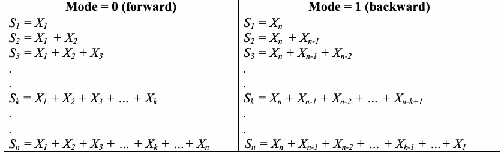
| mode = 0（順方向） | mode = 1（逆方向） |
| S = X 1 1 S = X + X 2 1 2 S = X + X + X 3 1 2 3 . . S = X + X + X + … + X k 1 2 3 k . . S = X + X + X + … + X + …+ X n 1 2 3 k n | S = X 1 n S = X + X 2 n n-1 S = X + X + X 3 n n-1 n-2 . . S = X + X + X + … + X k n n-1 n-2 n-k+1 . . S = X + X + X + … + X + …+ X n n n-1 n-2 k-1 1 |
That is, S = S + X for mode 0, and S = S + X for mode 1.
すなわち、mode = 0 では S = S + X、mode = 1 では S = S + X となる。
未レビュー訳k k-1 k
k k-1 k
未レビュー訳k k-1 n-k+1
k k-1 n-k+1
未レビュー訳For the example in this section, when mode = 0 and X = 1, (-1), 1, 1, (-1), 1, (-1), 1, 1, 1, then:
本節の例では、 mode = 0 で X = 1, (-1), 1, 1, (-1), 1, (-1), 1, 1, 1の場合:
未レビュー訳S = 1 1 S = 1 + (-1) = 0 2 S = 1 + (-1) + 1 = 1 3 S = 1 + (-1) + 1 + 1 = 2 4 S = 1 + (-1) + 1 + 1 + (-1) = 1 5 S = 1 + (-1) + 1 + 1 + (-1) + 1 = 2 6 S = 1 + (-1) + 1 + 1 + (-1) + 1 + (-1) = 1 7 S = 1 + (-1) + 1 + 1 + (-1) + 1 + (-1) + 1 = 2 8 S = 1 + (-1) + 1 + 1 + (-1) + 1 + (-1) + 1 + 1 = 3 9 S = 1 + (-1) + 1 + 1 + (-1) + 1 + (-1) + 1 + 1 + 1 = 4 10
S = 1 1 S = 1 + (-1) = 0 2 S = 1 + (-1) + 1 = 1 3 S = 1 + (-1) + 1 + 1 = 2 4 S = 1 + (-1) + 1 + 1 + (-1) = 1 5 S = 1 + (-1) + 1 + 1 + (-1) + 1 = 2 6 S = 1 + (-1) + 1 + 1 + (-1) + 1 + (-1) = 1 7 S = 1 + (-1) + 1 + 1 + (-1) + 1 + (-1) + 1 = 2 8 S = 1 + (-1) + 1 + 1 + (-1) + 1 + (-1) + 1 + 1 = 3 9 S = 1 + (-1) + 1 + 1 + (-1) + 1 + (-1) + 1 + 1 + 1 = 4 10
未レビュー訳(3) Compute the test statistic z =max |S |, where max |S | is the largest of the absolute values of
（3）検定統計量 z =max |S |を計算する。ここで max |S |は、
未レビュー訳1≤k≤n k
1≤k≤n k
未レビュー訳1≤k≤n k
1≤k≤n k
未レビュー訳the partial sums S .
部分和 S .
未レビュー訳k
未レビュー訳For the example in this section, the largest value of S is 4, so z = 4.
本節の例では、S の最大値は 4 であるため、z = 4 となる。
未レビュー訳k
未レビュー訳 n −1 4 z (4k +1)z (4k −1)z
n −1 4 z (4k +1)z (4k −1)z
未レビュー訳(4) Compute P-value = 1− ∑ Φ
(4) P-valueを計算する = 1− ∑ Φ
未レビュー訳 − Φ
− Φ
未レビュー訳 +
+
未レビュー訳 −n n n k= +1 4 z
−n n n k= +1 4 z
未レビュー訳 n −1 4 z (4k + 3)z (4k +1)z
n −1 4 z (4k + 3)z (4k +1)z
未レビュー訳∑ Φ
∑ Φ
未レビュー訳 − Φ
− Φ
未レビュー訳
未レビュー訳 −n n n k= −3 4 z where Φis the Standard Normal Cumulative Probability Distribution Function as defined in Section 5.5.3.
−n n n k= −3 4 z ここで、Φは5.5.3節で定義される標準正規累積確率分布関数である。
未レビュー訳For the example in this section, P-value = 0.4116588.
本節の例では、 P-value = 0.4116588.
未レビュー訳2.13.5 Decision Rule (at the 1% Level)
2.13.5 1%水準での判定規則
未レビュー訳If the computed P-value is < 0.01, then conclude that the sequence is non-random. Otherwise, conclude that the sequence is random.
算出されたP-valueが < 0.01 の場合、系列は非ランダムであると結論する。それ以外の場合、系列はランダムであると結論する。
未レビュー訳2.13.6 Conclusion and Interpretation of Results
2.13.6 結論および結果の解釈
未レビュー訳Since the P-value obtained in step 4 of Section 2.13.4 is ≥ 0.01 (P-value = 0.411658), the conclusion is that the sequence is random.
手順4（2.13.4節）で得られたP-valueは≥ 0.01（P-value = 0.411658）であるため、系列はランダムであるとの結論になる。
未レビュー訳Note that when mode = 0, large values of this statistic indicate that there are either “too many ones” or “too many zeros” at the early stages of the sequence; when mode = 1, large values of this statistic indicate that there are either “too many ones” or “too many zeros” at the late stages. Small values of the statistic would indicate that ones and zeros are intermixed too evenly.
mode = 0 のとき、統計量の値が大きいことは、系列の初期段階で「一が多すぎる」または「ゼロが多すぎる」ことを示す。mode = 1 のとき、統計量の値が大きいことは、系列の後期段階で「一が多すぎる」または「ゼロが多すぎる」ことを示す。統計量の値が小さい場合は、一とゼロが均等に混在しすぎていることを示す。
未レビュー訳2.13.7 Input Size Recommendation
2.13.7 入力サイズの推奨
未レビュー訳It is recommended that each sequence to be tested consist of a minimum of 100 bits (i.e., n ≥100).
検定対象の各系列は最低100ビット（すなわち、n ≥100）から構成されることが推奨される。
未レビュー訳2.13.8 Example
2.13.8 例
未レビュー訳(input)
(入力)
未レビュー訳ε= 11001001000011111101101010100010001000010110100011 00001000110100110001001100011001100010100010111000
ε= 11001001000011111101101010100010001000010110100011 00001000110100110001001100011001100010100010111000
未レビュー訳(input)
(入力)
未レビュー訳n = 100
n = 100
未レビュー訳(input)
(入力)
未レビュー訳mode = 0 (forward) || mode = 1 (reverse)
mode = 0（順方向） || mode = 1（逆方向）
未レビュー訳(processing) z = 1.6 (forward) || z = 1.9 (reverse)
(処理) z = 1.6（順方向） || z = 1.9（逆方向）
未レビュー訳(output) P-value = 0.219194 (forward) || P-value = 0.114866 (reverse)
(出力) P-value = 0.219194（順方向） || P-value = 0.114866（逆方向）
未レビュー訳(conclusion) Since P-value > 0.01, accept the sequence as random.
(結論) P-value > 0.01 のため、系列をランダムとして受け入れる。
未レビュー訳2.14 Random Excursions Test
2.14 ランダム逸脱検定
未レビュー訳2.14.1 Test Purpose
2.14.1 検定の目的
未レビュー訳The focus of this test is the number of cycles having exactly K visits in a cumulative sum random walk. The cumulative sum random walk is derived from partial sums after the (0,1) sequence is transferred to the appropriate (-1, +1) sequence. A cycle of a random walk consists of a sequence of steps of unit length taken at random that begin at and return to the origin. The purpose of this test is to determine if the number of visits to a particular state within a cycle deviates from what one would expect for a random sequence. This test is actually a series of eight tests (and conclusions), one test and conclusion for each of the states: -4, -3, -2, -1 and +1, +2, +3, +4.
この検定は、累積和ランダムウォークにおいて訪問回数がちょうど K 回となるサイクルの数に着目する。累積和ランダムウォークは、（0,1）系列を対応する（-1, +1）系列に変換した後の部分和から導かれる。ランダムウォークのサイクルとは、原点から始まり原点に戻る、単位長のステップからなるランダムな系列である。この検定の目的は、一つのサイクル内の特定の状態への訪問回数が、ランダム系列で期待される値から逸脱するかどうかを判定することである。実際には、この検定は八つの検定（および結論）からなり、状態 -4、-3、-2、-1、+1、+2、+3、+4 の各状態について、それぞれ一つずつ検定と結論を行う。
未レビュー訳2.14.2 Function Call
2.14.2 関数呼び出し
未レビュー訳RandomExcursions(n), where:
RandomExcursions(n)、ここで:
未レビュー訳n The length of the bit string.
n ビット列の長さ。
未レビュー訳Additional input used by the function, but supplied by the testing code:
関数が使用するが、検定コードから渡される追加の入力:
未レビュー訳ε The sequence of bits as generated by the RNG or PRNG being tested; this exists as a global structure at the time of the function call; ε= ε , ε , … , ε .
ε 検定対象のRNGまたはPRNGが生成したビット系列。この系列は関数呼び出し時にグローバル構造として存在し、ε= ε, ε, …, ε である。
未レビュー訳1 2 n
1 2 n
未レビュー訳2.14.3 Test Statistic and Reference Distribution
2.14.3 検定統計量および参照分布
未レビュー訳χ2(obs): For a given state x, a measure of how well the observed number of state visits within a
χ2(obs): 状態 x ごとに、状態訪問回数の観測値がどの程度適合するかを示す尺度
未レビュー訳cycle match the expected number of state visits within a cycle, under an assumption of randomness.
ランダム性を仮定した場合に、サイクル内で期待される状態訪問回数に適合する。
未レビュー訳The reference distribution for the test statistic is the χ2 distribution.
検定統計量の参照分布はχ2分布である。
未レビュー訳2.14.4 Test Description
2.14.4 検定の説明
未レビュー訳(1) Form a normalized (-1, +1) sequence X: The zeros and ones of the input sequence (ε) are changed
（1）正規化された（-1, +1）系列 X を作る。入力系列（ε）のゼロと一を
未レビュー訳to values of –1 and +1 via X = 2ε – 1.
値 -1 および +1 に、X = 2ε – 1 を用いて変換する。
未レビュー訳i i
i i
未レビュー訳For example, if ε= 0110110101, then n = 10 and X = -1, 1, 1, -1, 1, 1, -1, 1, -1, 1.
例えば、ε= 0110110101 の場合、n = 10 であり、X = -1, 1, 1, -1, 1, 1, -1, 1, -1, 1 である。
未レビュー訳(2) Compute the partial sums S of successively larger subsequences, each starting with X . Form the
（2）それぞれ X から始まる、長さが順次大きくなる部分系列の部分和 S を計算する。
未レビュー訳i
未レビュー訳1
未レビュー訳set S = {S }. i
集合 S = {S }. i
未レビュー訳S = X 1 1 S = X + X 2 1 2 S = X + X + X 3 1 2 3 . . S = X + X + X + … + X k 1 2 3
S = X 1 1 S = X + X 2 1 2 S = X + X + X 3 1 2 3 . . S = X + X + X + … + X k 1 2 3
未レビュー訳k
未レビュー訳. . S = X + X + X + … + X + …+ X n 1 2 3
. . S = X + X + X + … + X + …+ X n 1 2 3
未レビュー訳k n
k n
未レビュー訳For the example in this section, S = -1
本節の例では、S = -1
未レビュー訳S = 2
S = 2
未レビュー訳1
未レビュー訳6
未レビュー訳S = 0
S = 0
未レビュー訳S = 1
S = 1
未レビュー訳2
未レビュー訳7
未レビュー訳S = 1
S = 1
未レビュー訳S = 2
S = 2
未レビュー訳3
未レビュー訳8
未レビュー訳S = 0
S = 0
未レビュー訳S = 1
S = 1
未レビュー訳4
未レビュー訳9
未レビュー訳S = 1
S = 1
未レビュー訳S = 2
S = 2
未レビュー訳5
未レビュー訳10
未レビュー訳The set S = {-1, 0, 1, 0, 1, 2, 1, 2, 1, 2}.
集合 S = {-1, 0, 1, 0, 1, 2, 1, 2, 1, 2}。
未レビュー訳(3) Form a new sequence S' by attaching zeros before and after the set S. That is, S' = 0, s , s , … , s ,
（3）集合 S の前後にゼロを付けて、新しい系列 S' を作る。つまり、S' = 0, s , s , … , s ,
未レビュー訳For the example in this section, S' = 0, -1, 0, 1, 0, 1, 2, 1, 2, 1, 2, 0. The resulting random walk is shown below.
本節の例では、S' = 0, -1, 0, 1, 0, 1, 2, 1, 2, 1, 2, 0。結果のランダムウォークを以下に示す。
未レビュー訳原本の表画像
(4) Let J = the total number of zero crossings in S', where a zero crossing is a value of zero in S ' that occurs after the starting zero. J is also the number of cycles in S′, where a cycle of S′ is a subsequence of S′consisting of an occurrence of zero, followed by no-zero values, and ending with another zero. The ending zero in one cycle may be the beginning zero in another cycle. The number of cycles in S ' is the number of zero crossings. If J < 500, discontinue the test6.
（4）J = S' におけるゼロ交差の総数とする。ゼロ交差とは、開始時のゼロの後に現れる S ' 内のゼロ値である。J は S′ のサイクル数でもある。S′ のサイクルは、ゼロの出現から始まり、ゼロ以外の値が続き、別のゼロで終わる部分列である。一つのサイクルの終端のゼロが、次のサイクルの始まりのゼロを兼ねてもよい。S ' 内のサイクル数はゼロ交差数である。J < 500 の場合、検定を中止する6。
未レビュー訳For the example in this section, if S' = {0, –1, 0 1, 0, 1, 2, 1, 2, 1, 2, 0}, then J = 3 (there are zeros in positions 3, 5 and 12 of S'). The zero crossings are easily observed in the above plot. Since J = 3, there are 3 cycles, consisting of {0, -1, 0}, {0, 1, 0} and {0, 1, 2, 1, 2, 1, 2, 0}.
本節の例では、S' = {0, –1, 0 1, 0, 1, 2, 1, 2, 1, 2, 0} であり、J = 3 である（位置3、5、12にはS' のゼロがある）。ゼロ交差は上の図から容易に確認できる。J = 3 なので、3つのサイクルは {0, -1, 0}, {0, 1, 0}, {0, 1, 2, 1, 2, 1, 2, 0} である。
未レビュー訳(5) For each cycle and for each non-zero state value x having values –4 ≤x ≤-1 and 1 ≤x ≤4,
（5）各サイクルについて、非ゼロ状態値 x のうち –4 ≤x ≤-1 および 1 ≤x ≤4 を満たす各値について、
未レビュー訳compute the frequency of each x within each cycle.
各サイクル内で各 x の頻度を計算する。
未レビュー訳For the example in this section, in step 3, the first cycle has one occurrence of –1, the second cycle has one occurrence of 1, and the third cycle has three occurrences each of 1 and 2. This can be visualized using the following table.
本節の例では、手順3において、最初のサイクルには -1 が一回、二番目のサイクルには 1 が一回出現し、三番目のサイクルでは1と2がそれぞれ三回出現する。これは次の表で可視化できる。
未レビュー訳| State x | Cycles |
| Cycle 1 (0, -1, 0) | Cycle 2 (0, 1, 0) / Cycle 3 (0,1,2,1,2,1,2,0) |
| -4 / 0 | 0 / 0 |
| -3 / 0 | 0 / 0 |
| -2 / 0 | 0 / 0 |
| -1 / 1 | 0 / 0 |
| 1 / 0 | 1 / 3 |
| 2 / 0 | 0 / 3 |
| 3 / 0 | 0 / 0 |
| 4 / 0 | 0 / 0 |
原本の表画像

| 状態 x | サイクル数 |
| サイクル1 (0, -1, 0) | サイクル2 (0, 1, 0) / サイクル3 (0,1,2,1,2,1,2,0) |
| -4 / 0 | 0 / 0 |
| -3 / 0 | 0 / 0 |
| -2 / 0 | 0 / 0 |
| -1 / 1 | 0 / 0 |
| 1 / 0 | 1 / 3 |
| 2 / 0 | 0 / 3 |
| 3 / 0 | 0 / 0 |
| 4 / 0 | 0 / 0 |
(6) For each of the eight states of x, compute ν(x) = the total number of cycles in which state x k occurs exactly k times among all cycles, for k = 0, 1, …, 5 (for k = 5, all frequencies ≥ 5 are
（6）x の八つの状態それぞれについて、すべてのサイクルの中で状態 x がちょうど k 回現れるサイクル数 ν(x) を計算する。k = 0, 1, …, 5 とする（k = 5 の場合、頻度が ≥ 5 となるものは
未レビュー訳5
未レビュー訳stored in ν (x)). Note that ∑ν ( x ) = J .
ν (x) に格納される）。なお、∑ν ( x ) = J である。
未レビュー訳5
未レビュー訳k k=0
k k=0
未レビュー訳For the example in this section,
本節の例では、
未レビュー訳•ν (-1) = 2 (the –1 state occurs exactly 0 times in two cycles), 0 ν (-1) = 1 (the –1 state occurs only once in 1 cycle), and 1 ν (-1) = ν (-1) = ν (-1) = ν (-1) = 0 (the –1 state occurs exactly {2, 3, 4, ≥5} times 2 3 4 5 in 0 cycles).
•ν (-1) = 2 (状態 –1 は二つのサイクルでちょうど0回出現する), 0 ν (-1) = 1 (状態 –1 は1サイクルで一度だけ出現する), and 1 ν (-1) = ν (-1) = ν (-1) = ν (-1) = 0 (状態 –1 がちょうど {2, 3, 4, ≥5} 回出現する頻度の添字は 2 3 4 5 であり、0サイクルである).
未レビュー訳•ν (1) = 1 (the 1 state occurs exactly 0 times in 1 cycle), 0 ν (1) = 1 (the 1 state occurs only once in 1 cycle), 1 ν (1) = 1 (the 1 state occurs exactly three times in 1 cycle), and 3 ν (1) = ν (1) = ν (1) = 0 (the 1 state occurs exactly {2, 4, ≥5} times in 0 cycles). 2 4 5
•ν (1) = 1 (状態1はちょうど0回、1サイクル内に出現する), 0 ν (1) = 1 (状態1は1サイクル内で一度だけ出現する), 1 ν (1) = 1 (状態1は三回、1サイクル内に出現する), and 3 ν (1) = ν (1) = ν (1) = 0 (状態1の頻度がちょうど {2, 4, ≥5} 回となるのは0サイクルである). 2 4 5
未レビュー訳•ν (2) = 2 (the 2 state occurs exactly 0 times in 2 cycles), 0 ν (2) = 1 (the 2 state occurs exactly three times in 1 cycle), and 3 ν (2) = ν (2) = ν (2) = ν (2) = 0 (the 1 state occurs exactly {1, 2, 4, ≥5} times in 0 1 2 4 5 cycles).
•ν (2) = 2 (状態2はちょうど0回、2サイクル内に出現する), 0 ν (2) = 1 (状態2は三回、1サイクル内に出現する), and 3 ν (2) = ν (2) = ν (2) = ν (2) = 0 (状態1がちょうど {1, 2, 4, ≥5} 回現れる添字は 0 1 2 4 5 サイクルである).
未レビュー訳•ν (-4) = 3 (the -4 state occurs exactly 0 times in 3 cycles), and 0 ν (-4) = ν (-4) = ν (-4) = ν (-4) = ν (-4) = 0 (the -4 state occurs exactly {1, 2, 3, 4, 1 2 3 4 5 ≥5} times in 0 cycles).
•ν (-4) = 3 (状態 -4 はちょうど0回、3サイクル内に出現する), and 0 ν (-4) = ν (-4) = ν (-4) = ν (-4) = ν (-4) = 0 (状態 -4 の頻度が {1, 2, 3, 4, 1 2 3 4 5 ≥5} に対応し、0サイクルである).
未レビュー訳And so on….
以下同様…。
未レビュー訳This can be shown using the following table:
これは次の表で示すことができる:
未レビュー訳| State x | Number of Cycles |
| 0 | 1 / 2 / 3 / 4 / 5 |
| -4 / 3 | 0 / 0 / 0 / 0 / 0 |
| -3 / 3 | 0 / 0 / 0 / 0 / 0 |
| -2 / 3 | 0 / 0 / 0 / 0 / 0 |
| -1 / 2 | 1 / 0 / 0 / 0 / 0 |
| 1 / 1 | 1 / 0 / 1 / 0 / 0 |
| 2 / 2 | 0 / 0 / 1 / 0 / 0 |
| 3 / 3 | 0 / 0 / 0 / 0 / 0 |
| 4 / 3 | 0 / 0 / 0 / 0 / 0 |
原本の表画像

| 状態 x | サイクル数 |
| 0 | 1 / 2 / 3 / 4 / 5 |
| -4 / 3 | 0 / 0 / 0 / 0 / 0 |
| -3 / 3 | 0 / 0 / 0 / 0 / 0 |
| -2 / 3 | 0 / 0 / 0 / 0 / 0 |
| -1 / 2 | 1 / 0 / 0 / 0 / 0 |
| 1 / 1 | 1 / 0 / 1 / 0 / 0 |
| 2 / 2 | 0 / 0 / 1 / 0 / 0 |
| 3 / 3 | 0 / 0 / 0 / 0 / 0 |
| 4 / 3 | 0 / 0 / 0 / 0 / 0 |
For example in this section, when x = 1,
本節の例では、x = 1 の場合、
未レビュー訳(1−3(0.5))2 (1−3(0.25))2 (0 −3(0.125))2 (1−3(0.0625))2 (0 −3(0.0312))2 (0 −3(0.0312))2 χ2 =
(1−3(0.5))2 (1−3(0.25))2 (0 −3(0.125))2 (1−3(0.0625))2 (0 −3(0.0312))2 (0 −3(0.0312))2 χ2 =
未レビュー訳+
未レビュー訳+
未レビュー訳+
未レビュー訳+
未レビュー訳+
未レビュー訳3(0.5) 3(0.25) 3(0.125) 3(0.0625) 3(0.0312) 3(0.0312)
3(0.5) 3(0.25) 3(0.125) 3(0.0625) 3(0.0312) 3(0.0312)
未レビュー訳= 4.333033
= 4.333033
未レビュー訳(8) For each state of x, compute P-value = igamc(5/2, χ2(obs ) 2 ) . Eight P-values will be
(8) x の各状態について、 P-value を計算する = igamc(5/2, χ2(obs ) 2 ) . P-value は八つ算出され
未レビュー訳produced.
生成される。
未レビュー訳 5 4.333033
5 4.333033
未レビュー訳For the example when x = 1, P-value = igamc ,
x = 1 の場合の例では、 P-value = igamc ,
未レビュー訳 = 0.502529.
= 0.502529.
未レビュー訳 2 2
2 2
未レビュー訳2.14.5 Decision Rule (at the 1% Level)
2.14.5 1%水準での判定規則
未レビュー訳If the computed P-value is < 0.01, then conclude that the sequence is non-random. Otherwise, conclude that the sequence is random.
算出されたP-valueが < 0.01 の場合、系列は非ランダムであると結論する。それ以外の場合、系列はランダムであると結論する。
未レビュー訳2.14.6 Conclusion and Interpretation of Results
2.14.6 結論および結果の解釈
未レビュー訳Since the P-value obtained in step 8 of Section 2.14.4 is ≥ 0.01 (P-value = 0.502529), the conclusion is that the sequence is random.
手順8（2.14.4節）で得られたP-valueが≥ 0.01（P-value = 0.502529）であるため、系列はランダムであるとの結論になる。
未レビュー訳Note that if χ2(obs) were too large, then the sequence would have displayed a deviation from the theoretical distribution for a given state across all cycles.
χ2(obs) が大きすぎる場合、系列はすべてのサイクルにわたる特定の状態の理論分布から逸脱していることを示す。
未レビュー訳2.14.7 Input Size Recommendation
2.14.7 入力サイズの推奨
未レビュー訳It is recommended that each sequence to be tested consist of a minimum of 1,000,000 bits (i.e., n ≥106).
検定対象の各系列は最低1,000,000ビット（すなわち、n ≥106）から構成されることが推奨される。
未レビュー訳2.14.8 Example
2.14.8 例
未レビュー訳(input)
(入力)
未レビュー訳ε= "the binary expansion of e up to 1,000,000 bits"
ε= "e の二進展開の1,000,000ビットまで"
未レビュー訳n = 1000000 = 106
n = 1000000 = 106
未レビュー訳(input)
(入力)
未レビュー訳(processing) J = 1490
(処理) J = 1490
未レビュー訳| State=x | χ2 | P-value | Conclusion |
| -4 | 3.835698 | 0.573306 | Random |
| -3 | 7.318707 | 0.197996 | Random |
| -2 | 7.861927 | 0.164011 | Random |
| -1 | 15.692617 | 0.007779 | Non-random |
| +1 | 2.485906 | 0.778616 | Random |
| +2 | 5.429381 | 0.365752 | Random |
| +3 | 2.404171 | 0.790853 | Random |
| +4 | 2.393928 | 0.792378 | Random |
原本の表画像
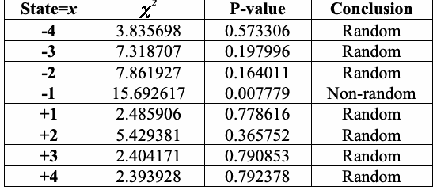
| 状態=x | χ2 | P-value | 結論 |
| -4 | 3.835698 | 0.573306 | ランダム |
| -3 | 7.318707 | 0.197996 | ランダム |
| -2 | 7.861927 | 0.164011 | ランダム |
| -1 | 15.692617 | 0.007779 | 非ランダム |
| +1 | 2.485906 | 0.778616 | ランダム |
| +2 | 5.429381 | 0.365752 | ランダム |
| +3 | 2.404171 | 0.790853 | ランダム |
| +4 | 2.393928 | 0.792378 | ランダム |
(conclusion) For seven of the states of x, the P-value is ≥ 0.01, and the conclusion would be that the
（結論）x の七つの状態ではP-valueが≥ 0.01であり、系列はランダムであったとの結論になる。
未レビュー訳sequence was random. However, for one state of x (x = -1), the P-value is < 0.01, so the conclusion would be that the sequence is non-random. When contradictions arise, further sequences should be examined to determine whether or not this behavior is typical of the generator.
しかし、一つの状態（x = -1）ではP-valueが < 0.01 であり、系列は非ランダムであるとの結論になる。矛盾が生じた場合、この挙動が生成器に典型的かどうかを判断するため、さらに系列を調べることが望ましい。
未レビュー訳2.15 Random Excursions Variant Test
2.15 ランダム逸脱バリアント検定
未レビュー訳2.15.1 Test Purpose
2.15.1 検定の目的
未レビュー訳The focus of this test is the total number of times that a particular state is visited (i.e., occurs) in a cumulative sum random walk. The purpose of this test is to detect deviations from the expected number of visits to various states in the random walk. This test is actually a series of eighteen tests (and conclusions), one test and conclusion for each of the states: -9, -8, …, -1 and +1, +2, …, +9.
この検定は、累積和ランダムウォークにおいて特定の状態が訪問される（すなわち、出現する）総回数に着目する。この検定の目的は、ランダムウォークにおける各状態への訪問回数が期待値から逸脱しているかを検出することである。実際には、この検定は十八の検定（および結論）からなり、状態 -9、-8、…、-1、および +1、+2、…、+9 の各状態について、それぞれ一つずつ検定と結論を行う。
未レビュー訳2.15.2 Function Call
2.15.2 関数呼び出し
未レビュー訳RandomExcursionsVariant(n), where:
RandomExcursionsVariant(n)、ここで:
未レビュー訳n The length of the bit string; available as a parameter during the function call.
n ビット列の長さ。関数呼び出し時にパラメーターとして利用できる。
未レビュー訳Additional input used by the function, but supplied by the testing code:
関数が使用するが、検定コードから渡される追加の入力:
未レビュー訳ε The sequence of bits as generated by the RNG or PRNG being tested; this exists as a global structure at the time of the function call; ε= ε , ε , … , ε .
ε 検定対象のRNGまたはPRNGが生成したビット系列。この系列は関数呼び出し時にグローバル構造として存在し、ε= ε, ε, …, ε である。
未レビュー訳1 2 n
1 2 n
未レビュー訳2.15.3 Test Statistic and Reference Distribution
2.15.3 検定統計量および参照分布
未レビュー訳ξ: For a given state x, the total number of times that the given state is visited during the
ξ: 状態 x ごとに、指定された状態が
未レビュー訳entire random walk as determined in step 4 of Section 2.15.4.
手順4（2.15.4節）で定められる、ランダムウォーク全体での訪問総数である。
未レビュー訳The reference distribution for the test statistic is the half normal (for large n). (Note: If ξis distributed as normal, then |ξ| is distributed as half normal.) If the sequence is random, then the test statistic will be about 0. If there are too many ones or too many zeroes, then the test statistic will be large.
検定統計量の参照分布は半正規分布である（n が大きい場合）。注: ξ が正規分布に従う場合、|ξ| は半正規分布に従う。系列がランダムであれば、検定統計量はおよそ0となる。一が多すぎる、またはゼロが多すぎる場合、検定統計量は大きくなる。
未レビュー訳2.15.4 Test Description
2.15.4 検定の説明
未レビュー訳(1) Form the normalized (-1, +1) sequence X in which the zeros and ones of the input sequence (ε) are converted to values of –1 and +1 via X = X , X , … , X , where X = 2ε – 1.
（1）正規化された（-1, +1）系列 X を作る。入力系列（ε）のゼロと一を値 –1 および +1 に変換する。これは X = X , X , … , X , ここで X = 2ε – 1 で表す。
未レビュー訳1 2 n
1 2 n
未レビュー訳i i
i i
未レビュー訳For example, if ε = 0110110101, then n = 10 and X = -1, 1, 1, -1, 1, 1, -1, 1, -1, 1.
例えば、 ε = 0110110101の場合、 n = 10 and X = -1, 1, 1, -1, 1, 1, -1, 1, -1, 1.
未レビュー訳(2) Compute partial sums S of successively larger subsequences, each starting with x . Form the set S
（2）x から始まる、長さが順次大きくなる部分系列の部分和 S を計算する。集合 S
未レビュー訳i
未レビュー訳1
未レビュー訳= {S }. i
= {S }. i
未レビュー訳S = X
S = X
未レビュー訳For the example in this section, S = -1
本節の例では、S = -1
未レビュー訳S = 2
S = 2
未レビュー訳1
未レビュー訳6
未レビュー訳S = 0
S = 0
未レビュー訳S = 1
S = 1
未レビュー訳2
未レビュー訳7
未レビュー訳S = 1
S = 1
未レビュー訳S = 2
S = 2
未レビュー訳3
未レビュー訳8
未レビュー訳S = 0
S = 0
未レビュー訳S = 1
S = 1
未レビュー訳4
未レビュー訳9
未レビュー訳S = 1
S = 1
未レビュー訳S = 2
S = 2
未レビュー訳5
未レビュー訳10
未レビュー訳The set S = {-1, 0, 1, 0, 1, 2, 1, 2, 1, 2}.
集合 S = {-1, 0, 1, 0, 1, 2, 1, 2, 1, 2}。
未レビュー訳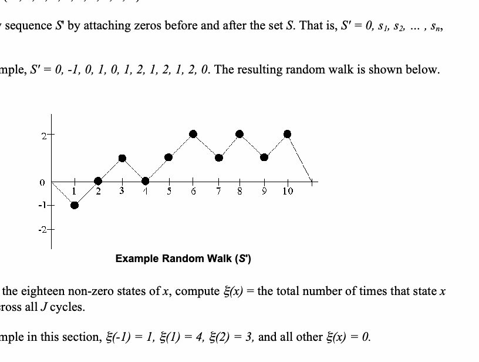
例示されたランダムウォークの折れ線グラフ。10ステップの位置が上下に移動し、図中に「Example Random Walk (S′)」とある。
(3) Form a new sequence S' by attaching zeros before and after the set S. That is, S' = 0, s , s , … , s ,
（3）集合 S の前後にゼロを付け、新しい系列 S' を作る。すなわち、S' = 0, s , s , … , s ,
未レビュー訳1 2 n
1 2 n
未レビュー訳0.
未レビュー訳For the example, S' = 0, -1, 0, 1, 0, 1, 2, 1, 2, 1, 2, 0. The resulting random walk is shown below.
本節の例では、S' = 0, -1, 0, 1, 0, 1, 2, 1, 2, 1, 2, 0。結果のランダムウォークを以下に示す。
未レビュー訳原本の表画像
(4) For each of the eighteen non-zero states of x, compute ξ(x) = the total number of times that state x
（4）x の十八個の非ゼロ状態それぞれについて、状態 x が
未レビュー訳occurred across all J cycles.
すべてのJサイクルを通じて出現した総回数ξ(x)を計算する。
未レビュー訳For the example in this section, ξ(-1) = 1, ξ(1) = 4, ξ(2) = 3, and all other ξ(x) = 0.
本節の例では、ξ(-1) = 1、ξ(1) = 4、ξ(2) = 3、その他すべてのξ(x) = 0 である。
未レビュー訳
未レビュー訳
未レビュー訳ξ(x) − J
ξ(x) − J
未レビュー訳
未レビュー訳(5) For each ξ(x), compute P-value = erfc
（5）各ξ(x)について、P-value = erfc を計算する
未レビュー訳. Eighteen P-values are computed. See
。P-valueは十八個計算される。参照
未レビュー訳
未レビュー訳
未レビュー訳 2J(4 x − 2)
2J(4 x − 2)
未レビュー訳
未レビュー訳Section 5.5.3 for the definition of erfc.
erfc の定義については5.5.3節を参照。
未レビュー訳 4 − 3
4 − 3
未レビュー訳
未レビュー訳For the example in this section, when x = 1, P-value = erfc
x = 1 の場合の例では、 P-value = erfc
未レビュー訳= 0.683091.
= 0.683091.
未レビュー訳 ( ) 2 • 3 41 − 2
( ) 2 • 3 41 − 2
未レビュー訳
未レビュー訳2.15.5 Decision Rule (at the 1% Level)
2.15.5 1%水準での判定規則
未レビュー訳If the computed P-value is < 0.01, then conclude that the sequence is non-random. Otherwise, conclude that the sequence is random.
算出されたP-valueが < 0.01 の場合、系列は非ランダムであると結論する。それ以外の場合、系列はランダムであると結論する。
未レビュー訳2.15.6 Conclusion and Interpretation of Results
2.15.6 結論および結果の解釈
未レビュー訳Since the P-value obtained in step 7 of Section 2.15.4 is ≥ 0.01 for the state x = 1 (P-value = 0.683091), the conclusion is that the sequence is random.
手順7（2.15.4節）で得られたP-valueは≥ 0.01であり、状態 x = 1（P-value = 0.683091）について、系列はランダムであるとの結論になる。
未レビュー訳2.15.7 Input Size Recommendation
2.15.7 入力サイズの推奨
未レビュー訳It is recommended that each sequence to be tested consist of a minimum of 1,000,000 bits (i.e., n ≥106).
検定対象の各系列は最低1,000,000ビット（すなわち、n ≥106）から構成されることが推奨される。
未レビュー訳2.15.8 Example
2.15.8 例
未レビュー訳(input)
(入力)
未レビュー訳ε= "the binary expansion of e up to 1,000,000 bits"
ε= "e の二進展開の1,000,000ビットまで"
未レビュー訳n = 1000000 = 106
n = 1000000 = 106
未レビュー訳(input)
(入力)
未レビュー訳(processing) J = 1490
(処理) J = 1490
未レビュー訳| State(x) | Counts | P-value | Conclusion |
| -9 | 1450 | 0.858946 | Random |
| -8 | 1435 | 0.794755 | Random |
| -7 | 1380 | 0.576249 | Random |
| -6 | 1366 | 0.493417 | Random |
| -5 | 1412 | 0.633873 | Random |
| -4 | 1475 | 0.917283 | Random |
| -3 | 1480 | 0.934708 | Random |
| -2 | 1468 | 0.816012 | Random |
| -1 | 1502 | 0.826009 | Random |
| +1 | 1409 | 0.137861 | Random |
| +2 | 1369 | 0.200642 | Random |
| +3 | 1396 | 0.441254 | Random |
| +4 | 1479 | 0.939291 | Random |
| +5 | 1599 | 0.505683 | Random |
| +6 | 1628 | 0.445935 | Random |
| +7 | 1619 | 0.512207 | Random |
| +8 | 1620 | 0.538635 | Random |
| +9 | 1610 | 0.593930 | Random |
原本の表画像

| 状態(x) | 回数 | P-value | 判定 |
| -9 | 1450 | 0.858946 | ランダム |
| -8 | 1435 | 0.794755 | ランダム |
| -7 | 1380 | 0.576249 | ランダム |
| -6 | 1366 | 0.493417 | ランダム |
| -5 | 1412 | 0.633873 | ランダム |
| -4 | 1475 | 0.917283 | ランダム |
| -3 | 1480 | 0.934708 | ランダム |
| -2 | 1468 | 0.816012 | ランダム |
| -1 | 1502 | 0.826009 | ランダム |
| +1 | 1409 | 0.137861 | ランダム |
| +2 | 1369 | 0.200642 | ランダム |
| +3 | 1396 | 0.441254 | ランダム |
| +4 | 1479 | 0.939291 | ランダム |
| +5 | 1599 | 0.505683 | ランダム |
| +6 | 1628 | 0.445935 | ランダム |
| +7 | 1619 | 0.512207 | ランダム |
| +8 | 1620 | 0.538635 | ランダム |
| +9 | 1610 | 0.593930 | ランダム |
(conclusion) Since the P-value ≥0.01 for each of the eighteen states of x, accept the sequence as
(結論) x の十八状態すべてでP-valueが≥0.01であるため、系列をランダムとして
未レビュー訳random.
ランダムである。
未レビュー訳3. Technical Description of Tests
3. 技術的な検定の説明
未レビュー訳This section contains the mathematical background for the tests in the NIST test suite. Each subsection corresponds to the appropriate subsection in Section 2. The relevant references for each subsection are provided at the end of that subsection.
この節では、NIST検定スイートの検定に関する数学的背景を説明する。各小節は第2節の対応する小節に対応する。各小節に関連する参考文献は、その小節の末尾に示す。
未レビュー訳3.1 Frequency (Monobits) Test
3.1 頻度（単一ビット）検定
未レビュー訳The most basic test is that of the null hypothesis: in a sequence of independent identically distributed Bernoulli random variables (X's or ε's, where X = 2ε-1, and so S = X + … + X = 2(ε + … + ε ) – n), the
最も基本的な検定は帰無仮説の検定である。すなわち、独立同分布のベルヌーイ確率変数の系列（X's または ε's。ここで X = 2ε-1 であり、したがって S = X + … + X = 2(ε + … + ε ) – n）において、
未レビュー訳n 1
n 1
未レビュー訳n 1 n
n 1 n
未レビュー訳probability of ones is 1/2. By the classic De Moivre-Laplace theorem, for a sufficiently large number of trials, the distribution of the binomial sum, normalized by n , is closely approximated by a standard normal distribution. This test makes use of that approximation to assess the closeness of the fraction of 1's to 1/2. All subsequent tests are conditioned on having passed this first basic test.
一の確率は1/2である。古典的なド・モアブル＝ラプラスの定理によると、試行回数が十分に大きい場合、二項和を n で正規化した分布は標準正規分布でよく近似される。この検定はこの近似を用いて、1's の割合が1/2にどれほど近いかを評価する。以降の検定はすべて、この最初の基本検定に合格していることを前提とする。
未レビュー訳The test is derived from the well-known limit C€entral Limit Theorem for the random walk, S = X + … +
この検定は、ランダムウォークに関するよく知られた中心極限定理から導かれる。S = X + … +
未レビュー訳n 1
n 1
未レビュー訳X . According to the Central Limit Theorem, n
X . 中心極限定理によれば、n
未レビュー訳lim P( Sn ≤ z) = Φ(z) ≡ 1 ∫ ze−u2 /2du
lim P( Sn ≤ z) = Φ(z) ≡ 1 ∫ ze−u2 /2du
未レビュー訳(1)
(1)
未レビュー訳n→∞ n
n→∞ n
未レビュー訳2π −∞
2π −∞
未レビュー訳This classical result serves as the basis of the simplest test for randomness. It implies that, for positive z,
この古典的な結果は、最も単純なランダム性検定の基礎となる。正の z に対しては、
未レビュー訳€
未レビュー訳S
未レビュー訳P( n ≤ z) = 2Φ(z) −1. n
P( n ≤ z) = 2Φ(z) −1. n
未レビュー訳According to the test based on the statistic s = S / n , evaluate the observed value s(obs) = n X +…+ X / n , and then calculate the corresponding P-value, which is
統計量 s = S / n に基づく検定では、観測値 s(obs) = n X +…+ X / n を評価し、対応するP-valueを計算する。それは
未レビュー訳€
未レビュー訳1
未レビュー訳n
未レビュー訳2[1− Φ( s(obs))] = erfc( s(obs) / n). Here, erfc is the (complementary) error function € €
2[1− Φ( s(obs))] = erfc( s(obs) / n). ここで、erfcは（補）誤差関数である € €
未レビュー訳€
未レビュー訳erfc(z) = 2 ∫ ∞e−u2du.
erfc(z) = 2 ∫ ∞e−u2du.
未レビュー訳€
未レビュー訳€
未レビュー訳π z
π z
未レビュー訳€
未レビュー訳References for Test
References for Test
未レビュー訳[1] Kai Lai Chung, Elem€entary Probability Theory with Stochastic Processes. New York: Springer-
[1] Kai Lai Chung, Elem€entary Probability Theory with Stochastic Processes. New York: Springer-
未レビュー訳Verlag, 1979 (especially pp. 210-217).
Verlag, 1979 (especially pp. 210-217).
未レビュー訳[2] Jim Pitman, Probability. New York: Springer-Verlag, 1993 (especially pp. 93-108).
[2] Jim Pitman, Probability. New York: Springer-Verlag, 1993 (especially pp. 93-108).
未レビュー訳3.2 Frequency Test within a Block
3.2 ブロック内頻度検定
未レビュー訳The test seeks to detect localized deviations from the ideal 50% frequency of 1's by decomposing the test sequence into a number of nonoverlapping subsequences and applying a chi-square test for a homogeneous match of empirical frequencies to the ideal 1/2. Small P-values indicate large deviations from the equal proportion of ones and zeros in at least one of the substrings. The string of 0's and 1's (or equivalent -1's and 1's) is partitioned into a number of disjoint substrings. For each substring, the proportion of ones is computed. A chi-square statistic compares these substring proportions to the ideal
この検定は、理想的な50%の1's頻度からの局所的な逸脱を検出するため、検定系列を複数の重複しない部分系列に分割し、経験頻度が理想値1/2に適合するかをカイ二乗検定で評価する。P-valueが小さい場合、少なくとも一つの部分文字列において、一とゼロの割合が等しい状態から大きく逸脱していることを示す。0's と 1's（または等価な -1's と 1's）からなる文字列を、互いに重ならない複数の部分文字列に分割する。各部分文字列で一の割合を計算する。カイ二乗統計量は部分文字列の割合と理想値を比較する。
未レビュー訳1/2. The statistic is referred to a chi-squared distribution with the degrees of freedom equal to the number of substrings.
1/2。この統計量は、部分文字列の数に等しい自由度を持つカイ二乗分布に従う。
未レビュー訳The parameters of this test are M and N, so that n = MN, i.e., the original string is partitioned into N substrings, each of length M. For each of these substrings, the probability of ones is estimated by the observed relative frequency of 1's, π , i = 1,…,N. The sum
この検定のパラメータは M と N であり、n = MN、すなわち元の文字列を N 個の部分文字列（各長さ M）に分割する。各部分文字列について、一の確率は、1's の観測相対頻度 π によって推定される（i = 1,…,N）。和
未レビュー訳i
未レビュー訳N 12
N 12
未レビュー訳Χ2(obs) = 4M∑ π −
Χ2(obs) = 4M∑ π −
未レビュー訳 i 2
i 2
未レビュー訳€
未レビュー訳i=1
i=1
未レビュー訳under the randomness hypothesis has the Χ2-distribution with N degrees of freedom. The reported P-value is
ランダム性の仮説の下では、N 自由度の Χ2 分布に従う。報告されるP-valueは
未レビュー訳€
未レビュー訳∫ ∞ e−u/2uN /2−1du ∫ ∞ e−uuN /2−1du9
∫ ∞ e−u/2uN /2−1du ∫ ∞ e−uuN /2−1du9
未レビュー訳N Χ2(obs)
N Χ2(obs)
未レビュー訳Χ2(obs)
Χ2(obs)
未レビュー訳= Χ2(obs)/2
= Χ2(obs)/2
未レビュー訳= igamc( ,
= igamc( ,
未レビュー訳).
未レビュー訳Γ(N /2)2N /2
Γ(N /2)2N /2
未レビュー訳Γ(N /2)
Γ(N /2)
未レビュー訳2 2
2 2
未レビュー訳References for Test
検定の参考文献
未レビュー訳[1] €Nick Maclaren, “Cryptographic Pseudo-random Numbers in Simulation,” Cambridge Security Workshop on Fast Software Encryption. Dec. 1993. Cambridge, U.K.: R. Anderson, pp. 185-190.
[1] €Nick Maclaren, “Cryptographic Pseudo-random Numbers in Simulation,” Cambridge Security Workshop on Fast Software Encryption. Dec. 1993. Cambridge, U.K.: R. Anderson, pp. 185-190.
未レビュー訳[2] Donald E. Knuth, The Art of Computer Programming. Vol 2: Seminumerical Algorithms. 3rd ed.
[2] Donald E. Knuth, The Art of Computer Programming. Vol 2: Seminumerical Algorithms. 3rd ed.
未レビュー訳Reading, Mass: Addison-Wesley, 1998 (especially pp. 42-47).
Reading, Mass: Addison-Wesley, 1998 (especially pp. 42-47).
未レビュー訳[3] Milton Abramowitz and Irene Stegun, Handbook of Mathematical Functions: NBS Applied Mathematics Series 55. Washington, D.C.: U.S. Government Printing Office, 1967.
[3] Milton Abramowitz and Irene Stegun, Handbook of Mathematical Functions: NBS Applied Mathematics Series 55. Washington, D.C.: U.S. Government Printing Office, 1967.
未レビュー訳3.3 Runs Test
3.3 ラン検定
未レビュー訳This variant of a classic nonparametric test looks at “runs” defined as substrings of consecutive 1's and consecutive 0's, and considers whether the oscillation among such homogeneous substrings is too fast or too slow.
この古典的なノンパラメトリック検定の変形では、「ラン」を連続する1'sまたは0'sからなる部分文字列として定義し、このような均質な部分文字列間の振動が速すぎるか遅すぎるかを調べる。
未レビュー訳The specific test used here is based on the distribution of the total number of runs, V . For the fixed
ここで用いる検定は、総ラン数 V の分布に基づく。データ列の長さを
未レビュー訳n
未レビュー訳proportion π = ∑ ε /n (which by the Frequency test of Section 3.1 must have been established to be
に固定したときの比率 π = ∑ ε /n（これは第3.1節の頻度検定によって、
未レビュー訳j j 1 2
j j 1 2
未レビュー訳close to 0.5: π − ≤ ).
0.5に近いことが確認されていなければならない： π − ≤ ）。
未レビュー訳2 n
2 n
未レビュー訳V − 2nπ(1−π)
V − 2nπ(1−π)
未レビュー訳€
未レビュー訳lim P( n
lim P( n
未レビュー訳≤ z) = Φ(z).
≤ z) = Φ(z).
未レビュー訳(2)
(2)
未レビュー訳n→∞ 2 nπ(1−π)
n→∞ 2 nπ(1−π)
未レビュー訳€ To evaluate V , define for k = 1,…,n-1, r(k) = 0 if ε =ε and r(k) =1 if ε ≠ε . Then
€ V を評価するため、k = 1,…,n-1 に対して、r(k) = 0 を ε =ε の場合に、r(k) =1 を ε ≠ε の場合に定義する。すると
未レビュー訳n
未レビュー訳k k+1
k k+1
未レビュー訳k k+1
k k+1
未レビュー訳n−1
n−1
未レビュー訳V = ∑
V = ∑
未レビュー訳r(k) +1. The P-value reported is €
r(k) +1。報告されるP値は €
未レビュー訳n
未レビュー訳k=1
k=1
未レビュー訳€
未レビュー訳€ V (obs) −€2nπ(1−π)€ erfc( n
€ V (obs) −€2nπ(1−π)€ erfc( n
未レビュー訳).
未レビュー訳2 2nπ(1−π)
2 2nπ(1−π)
未レビュー訳€
未レビュー訳€
未レビュー訳Large values of V (obs) indicate oscillation in the string of ε's which is too fast; small values indicate
V(obs) の大きな値は、ε's の系列内で振動が速すぎることを示し、小さな値は
未レビュー訳n oscillation which is too slow.
振動が遅すぎることを示す。
未レビュー訳References for Test
検定の参考文献
未レビュー訳€ [1] Jean D. Gibbons, Nonparametric Statistical Inference, 2nd ed. New York: Marcel Dekker, 1985 (especially pp. 50-58).
€ [1] Jean D. Gibbons, Nonparametric Statistical Inference, 2nd ed. New York: Marcel Dekker, 1985 (especially pp. 50-58).
未レビュー訳[2] Anant P. Godbole and Stavros G. Papastavridis, (ed), Runs and patterns in probability: Selected
[2] Anant P. Godbole and Stavros G. Papastavridis, (ed), Runs and patterns in probability: Selected
未レビュー訳papers. Dordrecht: Kluwer Academic, 1994.
papers. Dordrecht: Kluwer Academic, 1994.
未レビュー訳3.4 Test for the Longest Run of Ones in a Block
3.4 ブロック内の1の最長ラン検定
未レビュー訳The length of the longest consecutive subsequence (run) of ones is another characteristic that can be used for testing randomness. A string of length n, such that n = MN, must be partitioned into N substrings, each of length M. For the test based on the length of the longest run of ones ν within the j-th substring
1の最長連続部分列（ラン）の長さは、乱数性を検定するために利用できる別の特性である。長さ n で n = MN を満たす文字列は、それぞれ長さ M の N 個の部分文字列に分割する。このラン長を用いる検定では、第j部分文字列内の1の最長ランの長さ ν
未レビュー訳j
未レビュー訳of size M, K + 1 classes are chosen (depending on M). For each of these substrings, one evaluates the frequencies ν ,ν ,…,ν (ν +ν +…+ν = N , i.e., the computed values of the longest run of ones
サイズ M の各部分文字列について、M に応じて K + 1 個のクラスを選ぶ。各部分文字列について、頻度 ν ,ν ,…,ν (ν +ν +…+ν = N、すなわち、各部分文字列で計算された1の最長ラン長
未レビュー訳0 1 k 0 1
0 1 k 0 1
未レビュー訳K
未レビュー訳within each of these substrings belonging to any of the K + 1 chosen classes). If there are r ones and M -r zeroes in the m-bit block, then the conditional probability that th€e longest string of ones ν in this block
が選択した K + 1 個のクラスのいずれかに属する場合の度数を表す）。ブロック内に r 個の1と M -r 個の0があるとき、このブロック内で1の最長ラン ν が
未レビュー訳 r
r
未レビュー訳is less than or equal to m has the following form with U = min(M − r +1, ) (see [1]):
m 以下となる条件付き確率は、U = min(M − r +1, ) で次のように表される（[1]参照）：
未レビュー訳
未レビュー訳€
未レビュー訳m +1 €
m +1 €
未レビュー訳1 U M − r +1M − j(m +1)
1 U M − r +1M − j(m +1)
未レビュー訳P(ν ≤ m | r) = ∑(−1) j
P(ν ≤ m | r) = ∑(−1) j
未レビュー訳,
未レビュー訳
未レビュー訳M
M
未レビュー訳 j M − r
j M − r
未レビュー訳€ j=0 r
€ j=0 r
未レビュー訳so that
したがって
未レビュー訳M M
M M
未レビュー訳€
未レビュー訳1
未レビュー訳P(ν ≤ m) = ∑ P(ν ≤ m | r) .
P(ν ≤ m) = ∑ P(ν ≤ m | r) .
未レビュー訳(3)
(3)
未レビュー訳2M
2M
未レビュー訳 r r=0
r r=0
未レビュー訳The theoretical probabilities π ,π ,…,π of these classes are determined from [3].
これらのクラスの理論確率 π ,π ,…,π は[3]に基づいて定める。
未レビュー訳∫ ∞ e−u/2uK /2−1du
∫ ∞ e−u/2uK /2−1du
未レビュー訳K Χ2(obs)
K Χ2(obs)
未レビュー訳Χ2(obs)
Χ2(obs)
未レビュー訳= igamc ,
= igamc ,
未レビュー訳,
未レビュー訳Γ(K /2)2K /2
Γ(K /2)2K /2
未レビュー訳 2 2
2 2
未レビュー訳with P(a,x) denoting the incomplete gamma function as expressed in Section 3.2.
ここで P(a,x) は、第3.2節で示される不完全ガンマ関数を表す。
未レビュー訳The following table contains selected values of K and M with the corresponding probabilities obtained from [3]. Cases K=€3, M=8; K=5, M=128; and K=6, M=10000 are currently embedded in the test suite code.
次の表には、K と M の選択値と、それぞれの確率（[3]に基づく）が示されている。K=3, M=8、K=5, M=128、およびK=6, M=10000のケースは、現在テストスイートのコードに組み込まれている。
未レビュー訳K=3, M=8
K=3, M=8
未レビュー訳| classes | probabilities |
| {ν≤1} | π = 0.2148 0 |
| {ν=2} | π = 0.3672 1 |
| {ν=3} | π = 0.2305 2 |
| {ν≥4} | π = 0.1875 3 |
原本の表画像
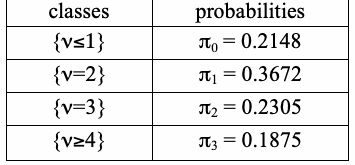
| クラス | 確率 |
| {ν≤1} | π = 0.2148 0 |
| {ν=2} | π = 0.3672 1 |
| {ν=3} | π = 0.2305 2 |
| {ν≥4} | π = 0.1875 3 |
K=5, M=128
K=5, M=128
未レビュー訳| classes | probabilities |
| {ν≤4} | π = 0.1174 0 |
| {ν=5} | π = 0.2430 1 |
| {ν=6} | π = 0.2493 2 |
| {ν=7} | π = 0.1752 3 |
| {ν=8} | π = 0.1027 4 |
| {ν≥9} | π = 0.1124 5 |
原本の表画像
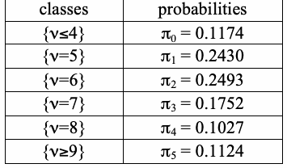
| クラス | 確率 |
| {ν≤4} | π = 0.1174 0 |
| {ν=5} | π = 0.2430 1 |
| {ν=6} | π = 0.2493 2 |
| {ν=7} | π = 0.1752 3 |
| {ν=8} | π = 0.1027 4 |
| {ν≥9} | π = 0.1124 5 |
K=5, M=512
K=5, M=512
未レビュー訳| classes | probabilities |
| {ν≤6} | π = 0.1170 0 |
| {ν=7} | π = 0.2460 1 |
| {ν=8} | π = 0.2523 2 |
| {ν=9} | π = 0.1755 3 |
| {ν=10} | π = 0.1027 4 |
| {ν≥11} | π = 0.1124 5 |
原本の表画像
| クラス | 確率 |
| {ν≤6} | π = 0.1170 0 |
| {ν=7} | π = 0.2460 1 |
| {ν=8} | π = 0.2523 2 |
| {ν=9} | π = 0.1755 3 |
| {ν=10} | π = 0.1027 4 |
| {ν≥11} | π = 0.1124 5 |
K=5, M=1000
K=5, M=1000
未レビュー訳| classes | probabilities |
| {ν≤7} | π = 0.1307 0 |
| {ν=8} | π = 0.2437 1 |
| {ν=9} | π = 0.2452 2 |
| {ν=10} | π = 0.1714 3 |
| {ν=11} | π = 0.1002 4 |
| {ν≥12} | π = 0.1088 5 |
原本の表画像
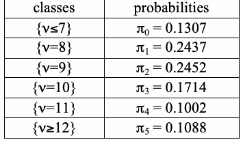
| クラス | 確率 |
| {ν≤7} | π = 0.1307 0 |
| {ν=8} | π = 0.2437 1 |
| {ν=9} | π = 0.2452 2 |
| {ν=10} | π = 0.1714 3 |
| {ν=11} | π = 0.1002 4 |
| {ν≥12} | π = 0.1088 5 |
K=6, M=10000
K=6, M=10000
未レビュー訳| classes | probabilities |
| {ν≤10} | π = 0.0882 0 |
| {ν=11} | π = 0.2092 1 |
| {ν=12} | π = 0.2483 2 |
| {ν=13} | π = 0.1933 3 |
| {ν=14} | π = 0.1208 4 |
| {ν=15} | π = 0.0675 5 |
| {ν≥16} | π = 0.0727 6 |
原本の表画像
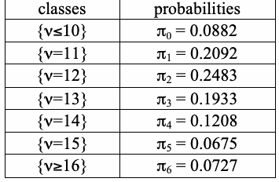
| クラス | 確率 |
| {ν≤10} | π = 0.0882 0 |
| {ν=11} | π = 0.2092 1 |
| {ν=12} | π = 0.2483 2 |
| {ν=13} | π = 0.1933 3 |
| {ν=14} | π = 0.1208 4 |
| {ν=15} | π = 0.0675 5 |
| {ν≥16} | π = 0.0727 6 |
Large values of Χ2 indicate that the sequence has clusters of ones; the generation of “random'” sequences by humans tends to lead to small values of ν (see [3, p. 55]).
Χ2 の値が大きいことは、系列に1のクラスターがあることを示す。人が「ランダム'」系列を生成すると、ν の値は小さくなる傾向がある（[3, p. 55]参照）。
未レビュー訳n
未レビュー訳References for Test
検定の参考文献
未レビュー訳€ [1] F. N. David and D. E. B€arton, Combinatorial Chance. New York: Hafner Publishing Co., 1962, p. 230.
€ [1] F. N. David and D. E. B€arton, Combinatorial Chance. New York: Hafner Publishing Co., 1962, p. 230.
未レビュー訳[2] Anant P. Godbole and Stavros G. Papastavridis (ed), Runs and Patterns in Probability: Selected
[2] Anant P. Godbole and Stavros G. Papastavridis (ed), Runs and Patterns in Probability: Selected
未レビュー訳Papers. Dordrecht: Kluwer Academic, 1994.
Papers. Dordrecht: Kluwer Academic, 1994.
未レビュー訳[3] Pal Revesz, Random Walk in Random and Non-Random Environments. Singapore: World
[3] Pal Revesz, Random Walk in Random and Non-Random Environments. Singapore: World
未レビュー訳Scientific, 1990.
Scientific, 1990.
未レビュー訳3.5 Binary Matrix Rank Test
3.5 二値行列の階数検定
未レビュー訳Another approach to testing for randomness is to check for linear dependence among fixed-length substrings of the original sequence: construct matrices of successive zeroes and ones from the sequence, and check for linear dependence among the rows or columns of the constructed matrices. The deviation of the rank - or rank deficiency - of the matrices from a theoretically expected value gives the statistic of interest.
乱数性を検定する別の方法は、元の系列から固定長の部分文字列を取り出し、それらの間に線形従属があるかを調べることである。系列から0と1が連続する部分列を用いて行列を構成し、構成した行列の行または列に線形従属があるかを調べる。行列の階数（または階数欠損）が理論上の期待値からどれだけ逸脱するかを、関心対象の統計量とする。
未レビュー訳This test is a specification of one of the tests coming from the DIEHARD [1] battery of tests. It is based on the result of Kovalenko [2] and also formulated by Marsaglia and Tsay [3]. The result states that the rank R of the M x Q random binary matrix takes values r = 0, 1, 2, …, m where m ≡ min(M,Q) with probabilities
この検定は、DIEHARD [1] テスト群に含まれる検定の一つを仕様化したものである。Kovalenko [2] の結果に基づき、Marsaglia と Tsay [3] によっても定式化された。その結果によれば、M x Q のランダム二値行列の階数 R は、r = 0, 1, 2, …, m（m ≡ min(M,Q)）の値を確率
未レビュー訳r−1 (1− 2i−Q)(1− 2i−M )
r−1 (1− 2i−Q)(1− 2i−M )
未レビュー訳p = 2r(Q+M −r)−MQ∏
p = 2r(Q+M −r)−MQ∏
未レビュー訳.
未レビュー訳r
未レビュー訳1− 2i−r
1− 2i−r
未レビュー訳i=0
i=0
未レビュー訳The probability values are fixed in the test suite code for M = Q = 32. The number M is then a parameter of this test, so that ideally n = M2N, where N is the new “sample size.” In practice, values for M and N are chosen so that the dis€carded part of the string, n - NM2, is fairly small.
M = Q = 32 の場合の確率値は、テストスイートのコードに固定されている。この検定では M がパラメータとなるため、理想的には n = M2N とし、N を新しい「標本サイズ」とする。実際には、M と N の値を選び、文字列の破棄部分 n - NM2 が十分小さくなるようにする。
未レビュー訳The rationale for this choice is that
この選択の根拠は、次のとおりである。
未レビュー訳∞ 1 ≈ ∏
∞ 1 ≈ ∏
未レビュー訳p
未レビュー訳1−
未レビュー訳= 0.2888...,
= 0.2888...,
未レビュー訳 2 j
2 j
未レビュー訳M j=1 p ≈ 2p ≈ 0.5776..., M −1 M 4 p p ≈ M ≈ 0.1284... M −2 9
M j=1 p ≈ 2p ≈ 0.5776..., M −1 M 4 p p ≈ M ≈ 0.1284... M −2 9
未レビュー訳€ € and all other probabilities are very small (≤ 0.005) when M ≥ 10.
€ € その他の確率は ≤ 0.005 と非常に小さく、これは M ≥ 10 の場合に当てはまる。
未レビュー訳For the N square matrices obt€ained, their ranks R ,l =1,…,N are evaluated, and the frequencies l F ,F , and N − F − F of the values M, M-1 and of ranks not exceeding M-2 are determined: M M −1
得られた N 個の正方行列について、階数 R ,l =1,…,N を評価し、階数が M、M-1、および M-2 以下となる場合の度数 F ,F ,および N − F − F を求める： M M −1
未レビュー訳M M −1
M M −1
未レビュー訳F =#{R = M},
F =#{R = M},
未レビュー訳M l
M l
未レビュー訳€
未レビュー訳F =#{R = M −1}.
F =#{R = M −1}.
未レビュー訳M −1 l
M −1 l
未レビュー訳€
未レビュー訳€ To apply the Χ2-test, use the classical statistic
€ Χ2検定を適用するには、古典的な統計量を用いる。
未レビュー訳€
未レビュー訳(F − 0.288€8N)2 (F − 0.5776N)2 (N − F − F − 0.1336N)2
(F − 0.2888N)2 (F − 0.5776N)2 (N − F − F − 0.1336N)2
未レビュー訳Χ2 = M
Χ2 = M
未レビュー訳+ M −1
+ M −1
未レビュー訳+ M M −1
+ M M −1
未レビュー訳,
未レビュー訳0.2888N
0.2888N
未レビュー訳0.5776N
0.5776N
未レビュー訳0.13336N
0.13336N
未レビュー訳€
未レビュー訳which, under the null (randomness) hypothesis, has an approximate Χ2-distribution with 2 degrees of freedom. The reported P-value is exp{−Χ2(obs)/2}. €
帰無仮説（乱数性）の下では、これは自由度 2 の近似Χ2分布に従う。報告されるP値は exp{−Χ2(obs)/2} である。 €
未レビュー訳Interpretation of this test: large values of Χ2(obs) indica€te that the deviation of the rank distribution from that corresponding to a random sequence is significant. For example, pseudo random matrices produced by a shift-register gener€ator formed by less than M successive vectors systematically have rank R ≡ M ,
この検定の解釈：Χ2(obs) の値が大きい場合、階数分布がランダム系列に対応する分布から有意に逸脱していることを示す。たとえば、M 個未満の連続ベクトルからなるシフトレジスタ生成器が生成した疑似乱数行列は、系統的に階数 R ≡ M ,
未レビュー訳l
未レビュー訳while for truly random data, the proportion of such occurrences should be only about 0.29.
一方、真の乱数データでは、このような事象の割合は約 0.29 にすぎない。
未レビュー訳€
未レビュー訳References for Test
検定の参考文献
未レビュー訳€
未レビュー訳[1] George Marsaglia, DIEHARD: a battery of tests of randomness.
[1] George Marsaglia, DIEHARD: a battery of tests of randomness.
未レビュー訳http://www.stat.fsu.edu/pub/diehard/.
http://www.stat.fsu.edu/pub/diehard/.
未レビュー訳[2] I. N. Kovalenko (1972), “Distribution of the linear rank of a random matrix,” Theory of
[2] I. N. Kovalenko (1972), “Distribution of the linear rank of a random matrix,” Theory of
未レビュー訳Probability and its Applications. 17, pp. 342-346.
Probability and its Applications. 17, pp. 342-346.
未レビュー訳[3] G. Marsaglia and L. H. Tsay (1985), “Matrices and the structure of random number sequences,”
[3] G. Marsaglia and L. H. Tsay (1985), “Matrices and the structure of random number sequences,”
未レビュー訳Linear Algebra and its Applications. Vol. 67, pp. 147-156.
Linear Algebra and its Applications. Vol. 67, pp. 147-156.
未レビュー訳3.6 Discrete Fourier Transform (Specral) Test
3.6 離散フーリエ変換（スペクトル）検定
未レビュー訳The test described here is based on the discrete Fourier transform. It is a member of a class of procedures known as spectral methods. The Fourier test detects periodic features in the bit series that would indicate a deviation from the assumption of randomness.
ここで説明する検定は離散フーリエ変換に基づく。これはスペクトル法として知られる一連の手法の一つである。フーリエ検定は、乱数性の仮定からの逸脱を示す周期的な特徴をビット系列内で検出する。
未レビュー訳Let x be the kth bit, where k = 1, ..., n. Assume that the bits are coded -1 and +1. Let k n
x を第 k ビットとし、k = 1, ..., n とする。ビットは -1 と +1 で符号化されているものとする。次のフーリエ変換を定義する：k n
未レビュー訳f = ∑ x exp(2π (k −1) j /n), j k i k=1
f = ∑ x exp(2π (k −1) j /n), j k i k=1
未レビュー訳where exp(2πikj /n) = cos(2πkj /n) + isin(2πkj /n), j = 0,…,n −1, and i ≡ −1. Because of the symmetry of the real to complex-value transform, only the values from 0 to (n/2 - 1) are considered. Let
ここで exp(2πikj /n) = cos(2πkj /n) + isin(2πkj /n), j = 0,…,n −1, i ≡ −1 である。実数から複素数への変換の対称性により、0 から (n/2 - 1) までの値のみを対象とする。次に
未レビュー訳€
未レビュー訳mod be the modulus of the complex number f . Under the assumption of the randomness of the series x , a j j
mod は複素数 f の絶対値を表す。系列 x の乱数性を仮定すると、a
未レビュー訳i
未レビュー訳confidence interval can be placed on the values of mod . More specifically, 95 percent of the values of j
mod の値について信頼区間を設定できる。具体的には、値の95パーセントは
未レビュー訳€
未レビュー訳€
未レビュー訳 1
1
未レビュー訳mod should be less than h = log n . A P-value based on this threshold comes from the binomial j
mod は h = log n より小さくなるはずである。この閾値に基づくP値は二項分布に従う。
未レビュー訳 0.05
0.05
未レビュー訳distribution. Let N be the number of peaks less than h. Only the first n/2 peaks are considered. Let N =
h 未満のピーク数を N とする。最初の n/2 個のピークのみを考慮する。N =
未レビュー訳1
未レビュー訳0
未レビュー訳.95N/2 and d = (N − N )/ n(0.95)(0.05)/4 . The P-value is
.95N/2 および d = (N − N )/ n(0.95)(0.05)/4。P値は
未レビュー訳1 0
1 0
未レビュー訳€
未レビュー訳 d
d
未レビュー訳2(1−φ( d )) = erfc
2(1−φ( d )) = erfc
未レビュー訳 2
2
未レビュー訳€
未レビュー訳where φ(x) is the cumulative probability function of the standard normal distribution.
ここで φ(x) は標準正規分布の累積確率関数である。
未レビュー訳Other P-values based on the s€eries f or mod that are sensitive to departures from randomness are
乱数性からの逸脱に敏感な、系列 mod に基づく他のP値も
未レビュー訳j j
j j
未レビュー訳possible. However, the primary value of the transform comes from a plot of the series mod . In the
可能である。しかし、変換の主な価値は系列 mod のプロットにある。次の
未レビュー訳j
未レビュー訳accompanying figure, the top plot shows the series of mod for 4096 bits generated from a satisfactory
付属図の上段のプロットは、良好な乱数生成器によって生成された4096ビットの mod 系列を示す。
未レビュー訳j
未レビュー訳generator. The line through the plot is the 95% confidence boundary. The P-value for this series is 0.8077. The bottom plot shows a corresponding plot for a generator that produces bits that are statistically dependent in a periodic pattern. In the bottom plot, significantly greater than 5% of the magnitudes are beyond the confidence boundary. In addition, there is a clear structure in the magnitudes that is not present in the top plot. The P-value for this series is 0.0001.
生成器。プロット上の線は95%信頼境界である。この系列のP値は0.8077である。下段のプロットは、周期的なパターンで統計的依存性を持つビットを生成する生成器の対応するプロットを示す。下段では、信頼境界を超える振幅の割合が5%を大幅に上回る。さらに、上段にはない明確な構造が振幅に現れている。この系列のP値は0.0001である。
未レビュー訳References for Test
検定の参考文献
未レビュー訳[1] R. N. Bracewell, The Fourier Transform and Its Applications. New York: McGraw-Hill, 1986. [2] W. Killman, J. Schüth, W. Thumser, and I. Uludag, A Note Concerning the DFT Test in NIST
[1] R. N. Bracewell, The Fourier Transform and Its Applications. New York: McGraw-Hill, 1986. [2] W. Killman, J. Schüth, W. Thumser, and I. Uludag, A Note Concerning the DFT Test in NIST
未レビュー訳Special Publication 800-22, T-Systems, Systems Integration, July 2004. [3] S. Kim, K, Umeno, and A. Hasegawa, Corrections of the NIST Statistical Test Suite for Randomness, Cryptology ePrint Archive, Report 2004/018, 2004.
Special Publication 800-22, T-Systems, Systems Integration, July 2004. [3] S. Kim, K, Umeno, and A. Hasegawa, Corrections of the NIST Statistical Test Suite for Randomness, Cryptology ePrint Archive, Report 2004/018, 2004.
未レビュー訳3.7 Non-Overlapping Template Matching Test
3.7 非重複テンプレート照合検定
未レビュー訳This test rejects sequences exhibiting too many or too few occurrences of a given aperiodic pattern.
この検定は、特定の非周期パターンの出現回数が多すぎる、または少なすぎる系列を棄却する。
未レビュー訳Let B = (ε0,…,ε0 ) be a given word (template or pattern, i.e., a fixed sequence of zeros and ones) of
B = (ε0,…,ε0 ) を、0と1からなる固定列（テンプレートまたはパターン）である所与の語とする。
未レビュー訳1 m
1 m
未レビュー訳length m. This pattern is to be chosen as if it were a parameter of the test. We consider a test based on patterns for fixed length m. A table of selected aperiodic words out of such patterns for m = 2, …, 8 is provided at the end of this section.
長さ m である。このパターンは検定のパラメータとして選ぶ。固定長 m のパターンに基づく検定を考える。m = 2, …, 8 のパターンから選んだ非周期語の表を、本節の末尾に示す。
未レビュー訳€
未レビュー訳The set of periods of B
B の周期の集合
未レビュー訳Β = { j,1≤ j ≤ m −1,ε0 =ε0,k =1,…,m − j}, j+k k
Β = { j,1≤ j ≤ m −1,ε0 =ε0,k =1,…,m − j}, j+k k
未レビュー訳plays an important role. For example, when B corresponds to a run of m ones, Β = {1,…,m −1}. For the B above, Β = ∅, and B is an aperiodic pattern (i.e., it cannot be written as CC…CC′ for a pattern C
は重要な役割を果たす。たとえば、B が m 個の1の連続列に対応する場合、Β = {1,…,m −1} となる。上記の B では Β = ∅ であり、B は非周期パターンである（すなわち、パターン C（B より短い）を用いた CC…CC′ の形には書けない
未レビュー訳€
未レビュー訳shorter than B with C' denoting a prefix of C). In this situation, occurrences of B in the string are non-overlapping.
。ここで C' は C の接頭辞を表す）。この場合、文字列中の B の出現は互いに重ならない。
未レビュー訳€
未レビュー訳€In general, let W = W (m,M) be the number of occurrences of €the given pattern B in the string. Note that the statistic W is defined also for patterns B with Β = ∅. The best way to calculate W is as the sum,
€一般に、W = W (m,M) は文字列中における€与えられたパターン B の出現回数である。統計量 W は、Β = ∅ のパターンについても定義される。W を計算する最良の方法は、次の和を求めることである。
未レビュー訳n−m+1 W = ∑I(ε =ε0,k =1,…,m).
n−m+1 W = ∑I(ε =ε0,k =1,…,m).
未レビュー訳€
未レビュー訳i+k−1 k
i+k−1 k
未レビュー訳€i=1
€i=1
未レビュー訳The random variables I(ε =ε0,k =1,…,m) are m-dependent, so that the Central Limit Theorem
確率変数 I(ε =ε0,k =1,…,m) は m 依存であり、したがって中心極限定理
未レビュー訳i+k−1 k
i+k−1 k
未レビュー訳holds for W. The mean and variance of the approximating normal distribution have the following form,
W に対して成り立つ。近似正規分布の平均と分散は、次の形で表される。
未レビュー訳€
未レビュー訳n − m +1 , µ=
n − m +1 , µ=
未レビュー訳€
未レビュー訳2m
未レビュー訳 1 2m −1 σ2 = n − . 2m 22m
1 2m −1 σ2 = n − . 2m 22m
未レビュー訳€
未レビュー訳For the test suite code, M and N are chosen so that n = MN and N = 8. Partition the original string into N blocks of length M. Let W = W (m,M) be the number of occurrences of the pattern B in the block j, for
テストスイートのコードでは、n = MN かつ N = 8 となるように M と N を選ぶ。元の文字列を長さ M の N 個のブロックに分割する。ブロック j 内におけるパターン B の出現回数を W = W (m,M) とする。
未レビュー訳j j €
j j €
未レビュー訳j = 1, …, N.
j = 1, …, N.
未レビュー訳Let µ= EW = (M − m +1)2−m. Then, for large M, W has a normal distribution with mean µand j
µ= EW = (M − m +1)2−m とする。M が十分大きいとき、W は平均 µ と j
未レビュー訳j € variance σ2, so that the statistic
j € 分散 σ2 をもつ正規分布に従う。したがって、統計量
未レビュー訳N (W −µ)2
N (W −µ)2
未レビュー訳Χ2(obs) = ∑ j
Χ2(obs) = ∑ j
未レビュー訳€
未レビュー訳(4)
(4)
未レビュー訳σ2 j=1
σ2 j=1
未レビュー訳€ has an approximate Χ2-distribution with N degrees of freedom. Report the P-value as N Χ2(obs)
€ これは自由度 N の近似Χ2分布に従う。P値は N Χ2(obs)
未レビュー訳1− P ,
1− P ,
未レビュー訳.
未レビュー訳 2 2 € The test can be interpreted as rejecting sequences exhibiting irregular occurrences of a given non-periodic pattern.
2 2 € この検定は、特定の非周期パターンの出現が不規則な系列を棄却するものと解釈できる。
未レビュー訳€
未レビュー訳References for Test
検定の参考文献
未レビュー訳[1] A. D. Barbour, L. Holst, and S. Janson, Poisson Approximation (1992). Oxford: Clarendon Press
[1] A. D. Barbour, L. Holst, and S. Janson, Poisson Approximation (1992). Oxford: Clarendon Press
未レビュー訳(especially Section 8.4 and Section 10.4).
（特に第8.4節および第10.4節）。
未レビュー訳Aperiodic Templates for small values of 2 ≤ m ≤ 5
2 ≤ m ≤ 5 の小さい m に対する非周期テンプレート
未レビュー訳| m = 2 | m = 3 | m = 4 | m = 5 |
| 0 1 1 0 | 0 0 1 0 1 1 1 0 0 1 1 0 | 0 0 0 1 0 0 1 1€ 0 1 1 1 1 0 0 0 1 1 0 0 1 1 1 0 | 0 0 0 0 1 0 0 0 1 1 0 0 1 0 1 0 1 0 1 1 0 0 1 1 1 0 1 1 1 1 1 1 1 0 0 1 1 0 1 0 1 0 1 0 0 1 1 0 0 0 1 0 0 0 0 1 1 1 1 0 |
原本の表画像
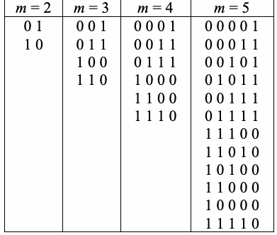
| m = 2 | m = 3 | m = 4 | m = 5 |
| 0 1 1 0 | 0 0 1 0 1 1 1 0 0 1 1 0 | 0 0 0 1 0 0 1 1€ 0 1 1 1 1 0 0 0 1 1 0 0 1 1 1 0 | 0 0 0 0 1 0 0 0 1 1 0 0 1 0 1 0 1 0 1 1 0 0 1 1 1 0 1 1 1 1 1 1 1 0 0 1 1 0 1 0 1 0 1 0 0 1 1 0 0 0 1 0 0 0 0 1 1 1 1 0 |
Aperiodic Templates for small values of 6 ≤ m ≤ 8
6 ≤ m ≤ 8 の小さい m に対する非周期テンプレート
未レビュー訳| m = 6 | m = 7 | m = 8 |
| 0 0 0 0 0 1 0 0 0 0 1 1 0 0 0 1 0 1 0 0 0 1 1 1 0 0 1 0 1 1 0 0 1 1 0 1 0 0 1 1 1 1 0 1 0 0 1 1 0 1 0 1 1 1 0 1 1 1 1 1 1 0 0 0 0 0 1 0 1 0 0 0 1 0 1 1 0 0 1 1 0 0 0 0 1 1 0 0 1 0 1 1 0 1 0 0 1 1 1 0 0 0 1 1 1 0 1 0 1 1 1 1 0 0 1 1 1 1 1 0 | 0 0 0 0 0 0 1 0 0 0 0 0 1 1 0 0 0 0 1 0 1 0 0 0 0 1 1 1 0 0 0 1 0 0 1 0 0 0 1 0 1 1 0 0 0 1 1 0 1 0 0 0 1 1 1 1 0 0 1 0 0 1 1 0 0 1 0 1 0 1 0 0 1 0 1 1 1 0 0 1 1 0 1 1 0 0 1 1 1 0 1 0 0 1 1 1 1 1 0 1 0 0 0 1 1 0 1 0 0 1 1 1 0 1 0 1 0 1 1 0 1 0 1 1 1 1 0 1 1 0 1 1 1 0 1 1 1 1 1 1 1 0 0 0 0 0 0 1 0 0 1 0 0 0 1 0 1 0 0 0 0 1 0 1 0 1 0 0 1 0 1 1 0 0 0 1 0 1 1 1 0 0 1 1 0 0 0 0 0 1 1 0 0 0 1 0 1 1 0 0 1 0 0 1 1 0 1 0 0 0 1 1 0 1 0 1 0 1 1 0 1 1 0 0 1 1 1 0 0 0 0 1 1 1 0 0 1 0 1 1 1 0 1 0 0 1 1 1 0 1 1 0 1 1 1 1 0 0 0 1 1 1 1 0 1 0 1 1 1 1 1 0 0 1 1 1 1 1 1 0 | 0 0 0 0 0 0 0 1 €0 0 0 0 0 0 1 1 0 0 0 0 0 1 0 1 0 0 0 0 0 1 1 1 0 0 0 0 1 0 0 1 0 0 0 0 1 0 1 1 0 0 0 0 1 1 0 1 0 0 0 0 1 1 1 1 0 0 0 1 0 0 1 1 0 0 0 1 0 1 0 1 0 0 0 1 0 1 1 1 0 0 0 1 1 0 0 1 0 0 0 1 1 0 1 1 0 0 0 1 1 1 0 1 0 0 0 1 1 1 1 1 0 0 1 0 0 0 1 1 0 0 1 0 0 1 0 1 0 0 1 0 0 1 1 1 0 0 1 0 1 0 1 1 0 0 1 0 1 1 0 1 0 0 1 0 1 1 1 1 0 0 1 1 0 1 0 1 0 0 1 1 0 1 1 1 0 0 1 1 1 0 1 1 0 0 1 1 1 1 0 1 0 0 1 1 1 1 1 1 0 1 0 0 0 0 1 1 0 1 0 0 0 1 1 1 0 1 0 0 1 0 1 1 0 1 0 0 1 1 1 1 0 1 0 1 0 0 1 1 0 1 0 1 0 1 1 1 0 1 0 1 1 0 1 1 0 1 0 1 1 1 1 1 0 1 1 0 0 1 1 1 0 1 1 0 1 1 1 1 0 1 1 1 1 1 1 1 1 0 0 0 0 0 0 0 1 0 0 1 0 0 0 0 1 0 0 1 1 0 0 0 1 0 1 0 0 0 0 0 1 0 1 0 0 1 0 0 1 0 1 0 1 0 0 0 1 0 1 0 1 1 0 0 1 0 1 1 0 0 0 0 1 0 1 1 0 1 0 0 1 0 1 1 1 0 0 0 1 0 1 1 1 1 0 0 1 1 0 0 0 0 0 0 1 1 0 0 0 0 1 0 1 1 0 0 0 1 0 0 1 1 0 0 1 0 0 0 1 1 0 0 1 0 1 0 1 1 0 1 0 0 0 0 1 1 0 1 0 0 1 0 1 1 0 1 0 1 0 0 1 1 0 1 1 0 0 0 1 1 0 1 1 0 1 0 1 1 0 1 1 1 0 0 1 1 1 0 0 0 0 0 1 1 1 0 0 0 1 0 1 1 1 0 0 1 0 0 1 1 1 0 0 1 1 0 1 1 1 0 1 0 0 0 1 1 1 0 1 0 1 0 1 1 1 0 1 1 0 0 1 1 1 1 0 0 0 0 1 1 1 1 0 0 1 0 1 1 1 1 0 1 0 0 1 1 1 1 0 1 1 0 1 1 1 1 1 0 0 0 1 1 1 1 1 0 1 0 1 1 1 1 1 1 0 0 1 1 1 1 1 1 1 0 |
原本の表画像
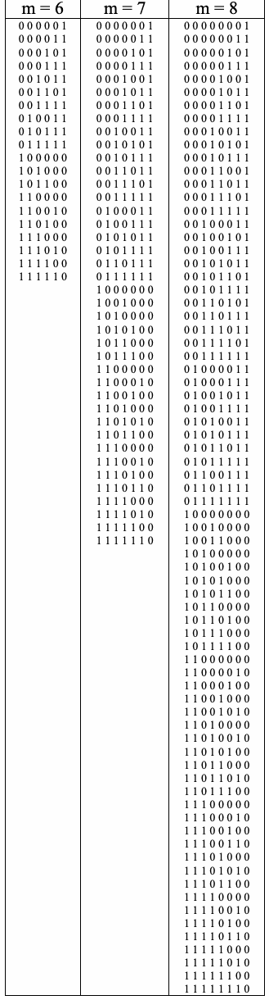
| m = 6 | m = 7 | m = 8 |
| 0 0 0 0 0 1 0 0 0 0 1 1 0 0 0 1 0 1 0 0 0 1 1 1 0 0 1 0 1 1 0 0 1 1 0 1 0 0 1 1 1 1 0 1 0 0 1 1 0 1 0 1 1 1 0 1 1 1 1 1 1 0 0 0 0 0 1 0 1 0 0 0 1 0 1 1 0 0 1 1 0 0 0 0 1 1 0 0 1 0 1 1 0 1 0 0 1 1 1 0 0 0 1 1 1 0 1 0 1 1 1 1 0 0 1 1 1 1 1 0 | 0 0 0 0 0 0 1 0 0 0 0 0 1 1 0 0 0 0 1 0 1 0 0 0 0 1 1 1 0 0 0 1 0 0 1 0 0 0 1 0 1 1 0 0 0 1 1 0 1 0 0 0 1 1 1 1 0 0 1 0 0 1 1 0 0 1 0 1 0 1 0 0 1 0 1 1 1 0 0 1 1 0 1 1 0 0 1 1 1 0 1 0 0 1 1 1 1 1 0 1 0 0 0 1 1 0 1 0 0 1 1 1 0 1 0 1 0 1 1 0 1 0 1 1 1 1 0 1 1 0 1 1 1 0 1 1 1 1 1 1 1 0 0 0 0 0 0 1 0 0 1 0 0 0 1 0 1 0 0 0 0 1 0 1 0 1 0 0 1 0 1 1 0 0 0 1 0 1 1 1 0 0 1 1 0 0 0 0 0 1 1 0 0 0 1 0 1 1 0 0 1 0 0 1 1 0 1 0 0 0 1 1 0 1 0 1 0 1 1 0 1 1 0 0 1 1 1 0 0 0 0 1 1 1 0 0 1 0 1 1 1 0 1 0 0 1 1 1 0 1 1 0 1 1 1 1 0 0 0 1 1 1 1 0 1 0 1 1 1 1 1 0 0 1 1 1 1 1 1 0 | 0 0 0 0 0 0 0 1 €0 0 0 0 0 0 1 1 0 0 0 0 0 1 0 1 0 0 0 0 0 1 1 1 0 0 0 0 1 0 0 1 0 0 0 0 1 0 1 1 0 0 0 0 1 1 0 1 0 0 0 0 1 1 1 1 0 0 0 1 0 0 1 1 0 0 0 1 0 1 0 1 0 0 0 1 0 1 1 1 0 0 0 1 1 0 0 1 0 0 0 1 1 0 1 1 0 0 0 1 1 1 0 1 0 0 0 1 1 1 1 1 0 0 1 0 0 0 1 1 0 0 1 0 0 1 0 1 0 0 1 0 0 1 1 1 0 0 1 0 1 0 1 1 0 0 1 0 1 1 0 1 0 0 1 0 1 1 1 1 0 0 1 1 0 1 0 1 0 0 1 1 0 1 1 1 0 0 1 1 1 0 1 1 0 0 1 1 1 1 0 1 0 0 1 1 1 1 1 1 0 1 0 0 0 0 1 1 0 1 0 0 0 1 1 1 0 1 0 0 1 0 1 1 0 1 0 0 1 1 1 1 0 1 0 1 0 0 1 1 0 1 0 1 0 1 1 1 0 1 0 1 1 0 1 1 0 1 0 1 1 1 1 1 0 1 1 0 0 1 1 1 0 1 1 0 1 1 1 1 0 1 1 1 1 1 1 1 1 0 0 0 0 0 0 0 1 0 0 1 0 0 0 0 1 0 0 1 1 0 0 0 1 0 1 0 0 0 0 0 1 0 1 0 0 1 0 0 1 0 1 0 1 0 0 0 1 0 1 0 1 1 0 0 1 0 1 1 0 0 0 0 1 0 1 1 0 1 0 0 1 0 1 1 1 0 0 0 1 0 1 1 1 1 0 0 1 1 0 0 0 0 0 0 1 1 0 0 0 0 1 0 1 1 0 0 0 1 0 0 1 1 0 0 1 0 0 0 1 1 0 0 1 0 1 0 1 1 0 1 0 0 0 0 1 1 0 1 0 0 1 0 1 1 0 1 0 1 0 0 1 1 0 1 1 0 0 0 1 1 0 1 1 0 1 0 1 1 0 1 1 1 0 0 1 1 1 0 0 0 0 0 1 1 1 0 0 0 1 0 1 1 1 0 0 1 0 0 1 1 1 0 0 1 1 0 1 1 1 0 1 0 0 0 1 1 1 0 1 0 1 0 1 1 1 0 1 1 0 0 1 1 1 1 0 0 0 0 1 1 1 1 0 0 1 0 1 1 1 1 0 1 0 0 1 1 1 1 0 1 1 0 1 1 1 1 1 0 0 0 1 1 1 1 1 0 1 0 1 1 1 1 1 1 0 0 1 1 1 1 1 1 1 0 |
3.8 Overlapping Template Matching Test
3.8 重複テンプレート照合検定
未レビュー訳This test rejects sequences which show too many or too few occurrences of m-runs of ones, but can be easily modified to detect irregular occurrences of any periodic pattern B.
この検定は、長さ m の1の連続列の出現回数が多すぎる、または少なすぎる系列を棄却する。ただし、任意の周期パターン B の不規則な出現を検出するよう容易に変更できる。
未レビュー訳To implement this test, parameters M and N are determined so that n = MN, i.e., the original string is partitioned into N blocks, each of length M.
この検定を実施するには、n = MN となるようにパラメータ M と N を定める。すなわち、元の文字列を長さ M のブロック N 個に分割する。
未レビュー訳Let W˜ = W˜ (m,n) be the number of (possibly overlapping) runs of ones of length m in the jth block.
W˜ = W˜ (m,n) を、第 j ブロック内における長さ m の（重複を許す）1の連続列の出現回数とする。
未レビュー訳j j
j j
未レビュー訳The asymptotic distribution of W is the compound Poisson distribution (the so-called Pòlya-Aeppli law,
W の漸近分布は複合ポアソン分布（いわゆるポリア＝エプリ分布であり、
未レビュー訳j
未レビュー訳see[1]):
[1]参照）：
未レビュー訳€
未レビュー訳 λ(et −1)
λ(et −1)
未レビュー訳E exp{tW˜ } → exp
E exp{tW˜ } → exp
未レビュー訳(5)
(5)
未レビュー訳
未レビュー訳j
未レビュー訳2 − et
2 − et
未レビュー訳when (M − m +1)2−m → λ> 0 (t is a real variable).
(M − m +1)2−m → λ> 0 のとき（t は実数変数である）。
未レビュー訳€
未レビュー訳The corresponding probabilities can be expressed in terms of the confluent hypergeometric function Φ = F . If U denotes a random variable with the compound Poisson asymptotic distribution, then for u ≥ 1 1 € 1 with η= λ/2. e−η u u −1ηl ηe−2η P(U = u) = ∑ = Φ(u +1,2,η). 2u l −1 l! 2u
対応する確率は、合流型超幾何関数 Φ = F で表される。U を複合ポアソン漸近分布に従う確率変数とする。このとき、u ≥ 1 1 € 1 に対し、η= λ/2。e−η u u −1ηl ηe−2η P(U = u) = ∑ = Φ(u +1,2,η). 2u l −1 l! 2u
未レビュー訳€
未レビュー訳l=1
l=1
未レビュー訳For example, €
例えば、€
未レビュー訳P(U = 0) = e−η,
P(U = 0) = e−η,
未レビュー訳€
未レビュー訳η P(U =1) = e−η, 2 ηe−η
η P(U =1) = e−η, 2 ηe−η
未レビュー訳€ P(U = 2) = [η+ 2], 8
€ P(U = 2) = [η+ 2], 8
未レビュー訳ηe−η η2
ηe−η η2
未レビュー訳€ P(U = 3) = +η+1,
€ P(U = 3) = +η+1,
未レビュー訳8 6 ηe−η η3 η2 3η
8 6 ηe−η η3 η2 3η
未レビュー訳€
未レビュー訳P(U = 4) = + + +1.
P(U = 4) = + + +1.
未レビュー訳16 24 2 2
16 24 2 2
未レビュー訳€
未レビュー訳More accurate, but also more complicated, expressions are given in [3]. These expressions yield the following probabilities:
より正確だが、より複雑な式は[3]に示されている。これらの式から、次の確率が得られる：
未レビュー訳€
未レビュー訳| π 0 | 0.364091 |
| π 1 | 0.185659 |
| π 2 | 0.139381 |
| π 3 | 0.100571 |
| π 4 | 0.0704323 |
| π 5 | 0.139865 |
The complement to the distribution function of this random variable has the form
この確率変数の分布関数の補関数は、次の形で表される。
未レビュー訳u ηl
u ηl
未レビュー訳L(u) = P(U > u) = e−η∑ Δ(l,u)
L(u) = P(U > u) = e−η∑ Δ(l,u)
未レビュー訳l! l=1
l! l=1
未レビュー訳with
ここで、
未レビュー訳u 1 k −1
u 1 k −1
未レビュー訳€
未レビュー訳Δ(l,u) = ∑
Δ(l,u) = ∑
未レビュー訳 2k l −1
2k l −1
未レビュー訳k=l
k=l
未レビュー訳Choose K + 1 classes or cells for U, i.e., {U = 0},{U =1},…,{U = K −1},{U ≥ K}. The theoretical probabilities π ,π ,…,π of these cells are found from the above formulas. A reasonable choice
U に対して K + 1 個のクラス（セル）を選ぶ。すなわち、{U = 0},{U =1},…,{U = K −1},{U ≥ K} とする。これらのセルの理論確率 π ,π ,…,π は上記の式から求める。妥当な選択としては
未レビュー訳0 1 K+1 €
0 1 K+1 €
未レビュー訳could be K = 5,λ= 2,η=1.
例えば K = 5,λ= 2,η=1.
未レビュー訳After U , …, U are found, ev€aluate the frequencies ν ,ν ,…,ν of each cell, ν +ν +…+ν = N ,
U を求めた後、各セルの度数 ν ,ν ,…,ν を計算し、ν +ν +…+ν = N を得る。
未レビュー訳1 N
1 N
未レビュー訳0 1 K
0 1 K
未レビュー訳0 1 K
0 1 K
未レビュー訳an€d calculate the value of the Χ2-statistic €
そしてΧ2統計量の値を計算する。€
未レビュー訳K (ν − Nπ )2 €Χ2 = ∑ i i . € Nπ
K (ν − Nπ )2 €Χ2 = ∑ i i . € Nπ
未レビュー訳€
未レビュー訳i=0 i
i=0 i
未レビュー訳The expression for the P-value is the same as that used in Section 3.7. The interpretation is that for very small P-values, the sequence shows irregular occurrences of m-runs of ones.
P値の式は第3.7節で用いたものと同じである。解釈としては、P値が非常に小さい場合、系列における長さ m の1の連続列の出現は不規則であることを示す。
未レビュー訳€
未レビュー訳References for Test
検定の参考文献
未レビュー訳[1] O. Chrysaphinou and S. Papastavridis, “A Limit Theorem on the Number of Overlapping
[1] O. Chrysaphinou and S. Papastavridis, “A Limit Theorem on the Number of Overlapping
未レビュー訳Appearances of a Pattern in a Sequence of Independent Trials.” Probability Theory and Related Fields, Vol. 79 (1988), pp. 129-143.
Appearances of a Pattern in a Sequence of Independent Trials.” Probability Theory and Related Fields, Vol. 79 (1988), pp. 129-143.
未レビュー訳[2] N.J. Johnson, S. Kotz, and A. Kemp, Discrete Distributions. John Wiley, 2nd ed. New York,
[2] N.J. Johnson, S. Kotz, and A. Kemp, Discrete Distributions. John Wiley, 2nd ed. New York,
未レビュー訳1996 (especially pp. 378-379).
1996 (especially pp. 378-379).
未レビュー訳[3] K. Hamano and T. Kaneko, The Correction of the Overlapping Template Matching Test Included in NIST Randomness Test Suite, IEICE Transactions of Electronics, Communications and
[3] K. Hamano and T. Kaneko, The Correction of the Overlapping Template Matching Test Included in NIST Randomness Test Suite, IEICE Transactions of Electronics, Communications and
未レビュー訳Computer Sciences 2007, E90-A(9), pp 1788-1792.
Computer Sciences 2007, E90-A(9), pp 1788-1792.
未レビュー訳3.9 Maurer’s “Universal Statistical” Test
3.9 Maurerの「ユニバーサル統計」検定
未レビュー訳Ueli Maurer of the Department of Computer Science at Princeton University introduced this test in 1992. Maurer's test statistic relates closely to the per-bit entropy of the stream, which its author asserts is “the correct quality measure for a secret-key source in a cryptographic application.” As such, the test is claimed to measure the actual cryptographic significance of a defect because it is “related to the running time of [an] enemy's optimal key-search strategy,” or the effective key size of a cipher system.
プリンストン大学計算機科学科のUeli Maurerは、1992年にこの検定を提案した。Maurerの検定統計量は、ストリームのビット当たりエントロピーと密接に関係する。著者はこれを「暗号アプリケーションにおける秘密鍵生成源の正しい品質尺度」と述べている。そのため、この検定は欠陥の実際の暗号学的重要性を測るものとされる。欠陥は「敵対者の最適な鍵探索戦略の実行時間」と関係し、すなわち暗号システムの実効鍵長に関係するためである。
未レビュー訳The test is not designed to detect a very specific pattern or type of statistical defect. However, the test is designed “to be able to detect any one of the very general class of statistical defects that can be modeled by an ergodic stationary source with finite memory.” Because of this, Maurer claims that the test subsumes a number of the standard statistical tests.
この検定は、非常に特定のパターンや統計的欠陥の種類を検出するようには設計されていない。一方、この検定は「有限記憶をもつエルゴード定常情報源によってモデル化できる、非常に一般的な統計的欠陥のクラスのいずれかを検出できるように」設計されている。このためMaurerは、この検定が複数の標準的な統計検定を包含すると主張している。
未レビュー訳The test is a compression-type test “based on the idea of Ziv that a universal statistical test can be based on a universal source coding algorithm. A generator should pass the test if and only if its output sequence cannot be compressed significantly.” According to Maurer, the source-coding algorithm due to Lempel-Ziv “seems to be less suited for application as a statistical test” because it seems to be difficult to define a test statistic whose distribution can be determined or approximated.
この検定は圧縮型の検定であり、「普遍的な統計検定は普遍情報源符号化アルゴリズムに基づいて構成できるというZivの考え方に基づく。生成器は、その出力系列を大幅に圧縮できない場合に限り、この検定に合格する。」Maurerによれば、Lempel-Zivの情報源符号化アルゴリズムは、「その分布を決定または近似できる検定統計量を定義することが難しいように思われる」ため、統計検定への適用にはあまり適していない。
未レビュー訳The test requires a long (on the order of 10•2L +1000•2L with 6≤L≤16) sequence of bits, which are divided into two stretches of L-bit blocks (6≤L≤16), Q (≥10•2L) initialization blocks and K
この検定には、10•2L +1000•2L 程度の長いビット列（6≤L≤16）が必要である。このビット列は、長さ L ビットのブロックからなる二つの区間（6≤L≤16）に分割され、初期化ブロック Q（≥10•2L）個と K
未レビュー訳n
n
未レビュー訳( ≈1000•2L) test blocks. We take K = − Q to maximize its value. The order of magnitude of Q
( ≈1000•2L) 個の検定ブロックを設ける。K = − Q としてその値を最大化する。Q のオーダーは
未レビュー訳
未レビュー訳L
L
未レビュー訳€
未レビュー訳should be specifically chosen to ensure that all possible L-bit binary patterns do in fact occur within the € initialization blocks. The test is not suited for very large values of L because the initialization takes time
すべての可能な長さ L の二進パターンが、€初期化ブロック内に実際に現れるよう、Q を適切に選ぶ必要がある。L が非常に大きい場合、この検定は適さない。初期化に要する時間は
未レビュー訳€ exponential in L.
€ L に対して指数関数的に増加する。
未レビュー訳€
未レビュー訳The test looks backs through the entire sequence while walking through the test segment of L-bit blocks, checking for the nearest previous exact L-bit template match and recording the distance - in number of blocks - to that previous match. The algorithm computes the log of all such distances for all the L-bit
この検定では、系列全体を遡りながら、長さ L ビットのブロックからなる検定区間を順に調べ、直前に現れた完全一致の長さ L ビットテンプレートを探し、その一致までの距離（ブロック数）を記録する。このアルゴリズムは、検定区間内のすべての長さ L ビット
未レビュー訳2
未レビュー訳templates in the test segment (giving, effectively, the number of digits in the binary expansion of each distance). Then it averages over all the expansion lengths by the number of test blocks.
テンプレートについて、各距離を二進展開したときの桁数に実質的に相当する値を求める。次に、検定ブロック数で割って、すべての展開長の平均を求める。
未レビュー訳1 Q+K
1 Q+K
未レビュー訳€ f = [ ∑log (# indices since previous occurrence of ith template)]
€ f = [ ∑log (# 前回出現した i 番目のテンプレート以降のインデックス)]
未レビュー訳n K 2 i=Q+1
n K 2 i=Q+1
未レビュー訳The algorithm achieves this efficiently by subscripting a dynamic look-up table making use of the integer representation of the binary bits constituting the template blocks. A standardized version of the statistic – the stan€dardization being prescribed by the test - is compared to an acceptable range based on a standard normal (Gaussian) density, making use of the test statistic's mean which is given by formula (16) in [1],
このアルゴリズムは、テンプレートブロックを構成するビット列の整数表現を使って動的ルックアップテーブルを添字参照し、効率よく計算する。検定で規定される標準化を施した統計量を、標準正規（ガウス）密度に基づく許容範囲と比較する。ここでは、式(16)（[1]に記載）で与えられる検定統計量の平均を用いる。
未レビュー訳∞ Ef = 2−L ∑(1− 2−L)i−1log i.
∞ Ef = 2−L ∑(1− 2−L)i−1log i.
未レビュー訳n
未レビュー訳2
未レビュー訳i=1
i=1
未レビュー訳The expected value of the test statistic f is that of the random variable log G where G = G is a
検定統計量 f の期待値は、確率変数 log G の期待値に等しい。ここで G = G は
未レビュー訳n
未レビュー訳L
未レビュー訳2
未レビュー訳geometric random variable with the parameter 1− 2−L . € There are several versions of approximate empirical formulas for the variance of the form
パラメータが 1− 2−L の幾何分布に従う確率変数である。€ 分散については、近似的な経験式がいくつかあり、その形式は次のとおりである。
未レビュー訳€
未レビュー訳V€ar( f ) = c(L,K)Var(log G)/K .
Var( f ) = c(L,K)Var(log G)/K .
未レビュー訳n
未レビュー訳2
未レビュー訳Here, c(L,K) represents the factor that takes into account the dependent nature of the occurrences of templates. The latest of the approximations (Coron and Naccache [2]: not embedded in the test suite code)
ここで c(L,K) は、テンプレートの出現が互いに依存する性質を考慮する係数である。最新の近似式（Coron と Naccache [2]。テストスイートのコードには組み込まれていない）
未レビュー訳€
未レビュー訳has the form
は次の形式をとる。
未レビュー訳€
未レビュー訳0.8 12.8 c(L,K) = 0.7 − + 1.6 + K−4/L .
0.8 12.8 c(L,K) = 0.7 − + 1.6 + K−4/L .
未レビュー訳L L
L L
未レビュー訳€
未レビュー訳However, Coron and Naccache (1998) report that “the inaccuracy due to [this approximation] can make the test 2.67 times more permissive than what is theoretically admitted.” In other words, the ratio of the standard deviation of f obtained from the approximation above to the true standard deviation deviates
しかし、Coron と Naccache（1998）は、「[この近似による]不正確さのために、理論上許容される値よりも検定が 2.67 倍寛容になることがある」と報告している。言い換えると、上記の近似から得られた f の標準偏差と真の標準偏差との比は、
未レビュー訳n
未レビュー訳considerably from one. In view of this fact and also since all approximations are based on the “admissible” assumption that Q → ∞, the randomness hypothesis may be tested by verifying normality of the observed values f , assuming that the variance is unknown. This can be done using a t-test.
一から大きく逸脱する。この事実に加え、すべての近似が「許容される」仮定 Q → ∞ に基づいていることから、分散が未知であると仮定し、観測された f の値が正規分布に従うかを検証して、乱数性の仮説を検定してもよい。これは t 検定で行うことができる。
未レビュー訳n
未レビュー訳The original sequence must be partitioned into r (r ≤ 20) substrings, on each of which the value of the universal test statis€tic is evaluated (for the same value of parameters K, L and Q). The sample variance is evaluated, and the P-value is
元の系列は r 個（r ≤ 20）の部分系列に分割し、それぞれについて（K、L、Q を同じ値にして）普遍検定統計量の値を評価しなければならない。標本分散を求め、P値は
未レビュー訳
未レビュー訳 f − E(L)
f − E(L)
未レビュー訳erfc n var( f ) n
erfc n var( f ) n
未レビュー訳References for Test
検定の参考文献
未レビュー訳[1] Ueli M. Maurer, “A Univ€ersal Statistical Test for Random Bit Generators,” Journal of
[1] Ueli M. Maurer, “A Universal Statistical Test for Random Bit Generators,” Journal of
未レビュー訳Cryptology. Vol. 5, No. 2, 1992, pp. 89-105.
Cryptology. Vol. 5, No. 2, 1992, pp. 89-105.
未レビュー訳[2] J-S Coron and D. Naccache, “An Accurate Evaluation of Maurer's Universal Test,” Proceedings of SAC '98 (Lecture Notes in Computer Science). Berlin: Springer-Verlag, 1998.
[2] J-S Coron and D. Naccache, “An Accurate Evaluation of Maurer's Universal Test,” Proceedings of SAC '98 (Lecture Notes in Computer Science). Berlin: Springer-Verlag, 1998.
未レビュー訳[3] H. Gustafson, E. Dawson, L. Nielsen, W. Caelli, “A computer package for measuring the strength
[3] H. Gustafson, E. Dawson, L. Nielsen, W. Caelli, “A computer package for measuring the strength
未レビュー訳of encryption algorithms,” Computers & Security. 13 (1994), pp. 687-697.
of encryption algorithms,” Computers & Security. 13 (1994), pp. 687-697.
未レビュー訳[4] A. J. Menezes, P. C. van Oorschot, S. A. Vanstone, Handbook of Applied Cryptography. Boca
[4] A. J. Menezes, P. C. van Oorschot, S. A. Vanstone, Handbook of Applied Cryptography. Boca
未レビュー訳Raton: CRC Press, 1997.
Raton: CRC Press, 1997.
未レビュー訳[5] J. Ziv, “Compression, tests for randomness and estimating the statistical model of an individual sequence,” Sequences (ed. R.M. Capocelli). Berlin: Springer-Verlag, 1990.
[5] J. Ziv, “Compression, tests for randomness and estimating the statistical model of an individual sequence,” Sequences (ed. R.M. Capocelli). Berlin: Springer-Verlag, 1990.
未レビュー訳[6] J. Ziv and A. Lempel, ``A universal algorithm for sequential data compression,'' IEEE
[6] J. Ziv and A. Lempel, ``A universal algorithm for sequential data compression,'' IEEE
未レビュー訳Transactions on Information Theory. Vol. 23, pp. 337-343.
Transactions on Information Theory. Vol. 23, pp. 337-343.
未レビュー訳3.10 Linear Complexity Test
3.10 線形複雑度検定
未レビュー訳This test uses linear complexity to test for randomness. The concept of linear complexity is related to a popular part of many keystream generators, namely, Linear Feedback Shift Registers (LFSR). Such a register of length L consists of L delay elements each having one input and one output. If the initial state of LFSR is (ε , …, ε , ε ), then the output sequence, (ε , ε , …), satisfies the following recurrent
この検定では、線形複雑度を用いて乱数性を検査する。線形複雑度の概念は、多くの鍵ストリーム生成器で一般的に使われる構成要素、すなわち線形帰還シフトレジスタ（LFSR）に関連する。長さ L のこのレジスタは、それぞれ入力と出力を一つずつ持つ L 個の遅延素子で構成される。LFSR の初期状態が (ε , …, ε , ε ) であるとすると、出力系列 (ε , ε , …) は、次の漸化
未レビュー訳L-1 1 0
L-1 1 0
未レビュー訳L L+1
L L+1
未レビュー訳formula for j ≥ L
j ≥ L に対する式
未レビュー訳ε = (cε + c ε +…+ c ε )mod2. j 1 j−1 2 j−2 L j−L
ε = (cε + c ε +…+ c ε )mod2. j 1 j−1 2 j−2 L j−L
未レビュー訳c , …, c are coefficients of the connection polynomial corresponding to a given LFSR. An LFSR is said
c , …, c は、所与の LFSR に対応する接続多項式の係数である。LFSR が
未レビュー訳For a given sequence sn = (ε , …,ε ), its linear complexity L(sn) is defined as the length of the shortest
与えられた系列 s_n = (ε , …,ε ) について、その線形複雑度 L(s_n) は、最短の
未レビュー訳1 n
1 n
未レビュー訳LFSR that generates sn as its first n terms. The possibility of using the linear complexity characteristic for testing randomness is based on the Berlekamp-Massey algorithm, which provides an efficient way to evaluate finite strings.
s_n を最初の n 項として生成するLFSRの長さと定義される。線形複雑度という特性を乱数性検定に用いる考え方は、有限系列を効率的に評価するBerlekamp-Masseyアルゴリズムに基づいている。
未レビュー訳When the binary n-sequence sn is truly random, formulas exist [2] for the mean, µ = EL(sn), and the
二進 n 系列 s_n が真にランダムである場合、平均 µ = E L(s_n) の式が [2] に示されており、
未レビュー訳n
未レビュー訳variance, σ2 = Var(L(sn)) of the linear complexity L(sn) = Ln when the n-sequence sn is truly random.
分散 σ2 = Var(L(s_n)) は、n 系列 s_n が真にランダムである場合の線形複雑度 L(s_n) = Ln の分散を表す。
未レビュー訳n
未レビュー訳The Crypt-X package [1] suggests that the ratio (L −µ )/σ is close to a standard normal variable, so n n n that the corresponding P-values can be found from the normal error function. Indeed, Gustafson et al. [1] (p. 693) claim that “for large n, L(sn) is approximately normally distributed with mean n/2 and a variance €
Crypt-X パッケージ [1] は、比 (L_n − µ_n)/σ_n が標準正規確率変数に近く、したがって対応するP値は誤差関数から求められると述べている。実際、Gustafson ら [1]（p. 693）は、「大きな n では、L(s_n) は平均 n/2、分散 € をもつ正規分布にほぼ従う」と主張している。
未レビュー訳 n 81
n 81
未レビュー訳86/81 times that of the standard norm€al statistic z = L(sn) − .” This is completely false. Even
標準正規統計量 z = L(sn) − . の分散の 86/81 倍である。」これは完全に誤りである。さらに
未レビュー訳 2 86
2 86
未レビュー訳the mean value µ does not behave asymptotically precisely as n/2, and in view of the boundedness of the
平均値 µ は漸近的に厳密な n/2 とはならず、また、
未レビュー訳n
未レビュー訳variance, this difference becomes significant. More importantly, the tail probabilities of the limiting distribution are much larger than those of the standard normal distribution.
に対する分散が有界であることを考慮すると、この差は有意になる。さらに重要なのは、極限分布の裾確率が標準正規分布の裾確率よりもはるかに大きいことである。
未レビュー訳€
未レビュー訳The asymptotic distribution of (L −µ )/σ along the sequence of even or odd values of n is that of a
n が偶数または奇数となる各系列に沿った (L_n − µ_n)/σ_n の漸近分布は、次のような分布である。
未レビュー訳n n n
n n n
未レビュー訳discrete random variable obtained via a mixture of two geometric random variables (one of them taking only negative values). Strictly speaking, the asymptotic distribution as such does not exist. The cases n even and n odd must be treated separately with two different limiting distributions arising.
二つの幾何確率変数（そのうち一つだけが負の値をとる）の混合によって得られる離散確率変数の分布である。厳密に言えば、漸近分布そのものは存在しない。n が偶数の場合と奇数の場合は、それぞれ異なる極限分布が生じるため、別々に扱わなければならない。
未レビュー訳€
未レビュー訳Because of this fact the following sequence of statistics is adapted
このため、次の統計量系列を採用する。
未レビュー訳2
未レビュー訳T = (−1)n[L −ξ ] + .
T = (−1)n[L −ξ ] + .
未レビュー訳(6)
(6)
未レビュー訳n
未レビュー訳n n 9
n n 9
未レビュー訳Here
ここで、
未レビュー訳n 4 + r ξ = + n .
n 4 + r ξ = + n .
未レビュー訳(7)
(7)
未レビュー訳n 2 18
n 2 18
未レビュー訳€
未レビュー訳These statistics, which take only integer values, converge in distribution to the random variable T. This
これらの統計量は整数値のみをとり、確率分布の意味で確率変数 T に収束する。この
未レビュー訳1
未レビュー訳limiting distribution is skewed to the right. While P(T = 0) = , for k = 1, 2, …
極限分布は右に歪んでいる。P(T = 0) = , である一方、k = 1, 2, … の場合は
未レビュー訳€
未レビュー訳2
未レビュー訳1 P(T = k) = ,
1 P(T = k) = ,
未レビュー訳(8)
(8)
未レビュー訳22k
22k
未レビュー訳€
未レビュー訳for k = -1, -2, …
k = -1, -2, … の場合、
未レビュー訳1
未レビュー訳€
未レビュー訳P(T = k) = .
P(T = k) = .
未レビュー訳(9)
(9)
未レビュー訳1
未レビュー訳P(T ≤ k) =
P(T ≤ k) =
未レビュー訳. 3× 22 k −1
. 3× 22 k −1
未レビュー訳So the P-value corresponding to the observed value T can be evaluated in the following way. Let obs κ = [T ] +1. Then the P-value is
観測された値 T に対応するP値は、次の方法で評価できる。obs κ = [T ] +1 とする。するとP値は
未レビュー訳obs
obs
未レビュー訳€
未レビュー訳1
未レビュー訳1 1 = .
1 1 = .
未レビュー訳+ 3× 22κ−1 3× 22κ−2 22κ−1
+ 3× 22κ−1 3× 22κ−2 22κ−1
未レビュー訳€
未レビュー訳In view of the discrete nature of this distribution and the impossibility of attaining the uniform distribution for P-values, the same strategy can be used that was used with other tests in this situation. Namely, partition the string€of length n, such that that n = MN, into N substrings each of length M. For the test based on the linear complexity statistic (6), evaluate T within the j-th substring of size M, and M choose K+1 classes (depending on M.) For each of these substrings, the frequencies, ν , ν , …, ν , of
この分布は離散的であり、P値について一様分布を実現できないため、この状況では他の検定で用いられたのと同じ方法を使うことができる。具体的には、長さ n の文字列を N 個の部分文字列に分割し、n = MN となるようにする。線形複雑度統計量 (6) に基づく検定では、サイズ M の j 番目の部分文字列内で T を評価し、M に応じて K+1 個のクラスを選ぶ。各部分文字列について、頻度 ν , ν , …, ν , の
未レビュー訳0 1 K
0 1 K
未レビュー訳values of T belonging to any of K+1 chosen classes, ν + ν + … + ν = N, are determined. It is
K+1 個のクラスのいずれかに属する T の値の頻度 ν + ν + … + ν = N を求める。これは
未レビュー訳M
未レビュー訳0 1
0 1
未レビュー訳K
未レビュー訳convenient to choose the classes with end-points at semi-integers.
クラスの境界を半整数に設定すると都合がよい。
未レビュー訳The theoretical probabilities π , π , …, π of these classes are determined from (8) and (9). For this
これらのクラスの理論確率 π , π , …, π は、式 (8) および (9) から求める。この
未レビュー訳0 1 K
0 1 K
未レビュー訳purpose, M has to be large enough for the limiting distribution given by (8) and (9) to provide a reasonable approximation. M should exceed 500. It is recommended that M be chosen so that 500 ≤ M ≤ 5000.
目的には、極限分布が (8) および (9) で与えられる妥当な近似となるよう、M を十分大きくしなければならない。M は 500 を超えるべきである。M は 500 ≤ M ≤ 5000 となるように選ぶことが推奨される。
未レビュー訳The frequencies are conjoined by the Χ2-statistic
これらの頻度をΧ2統計量でまとめる。
未レビュー訳K (ν − Nπ )2 Χ2 = ∑ i i . Nπ
K (ν − Nπ )2 Χ2 = ∑ i i . Nπ
未レビュー訳€
未レビュー訳i=0 i
i=0 i
未レビュー訳which, under the randomness hypothesis, has an approximate Χ2-distribution with K degrees of freedom. The reported P-value is
これは、乱数性の仮説の下では、K 自由度の近似的なΧ2分布に従う。報告するP値は
未レビュー訳∫€∞ e−u/2uK /2−1du
∫€∞ e−u/2uK /2−1du
未レビュー訳K Χ2(obs)
K Χ2(obs)
未レビュー訳Χ2(obs)
Χ2(obs)
未レビュー訳= igamc ,
= igamc ,
未レビュー訳.
未レビュー訳Γ(K /2)2K /2 € 2 2
Γ(K /2)2K /2 € 2 2
未レビュー訳As before, a conservative condition for the use of the Χ2-approximation is that
前述のとおり、Χ2近似を用いるための保守的な条件は次のとおりである。
未レビュー訳N minπ ≥ 5. i i
N minπ ≥ 5. i i
未レビュー訳€
未レビュー訳€
未レビュー訳For reasonably large values of M and N, the following classes (K=6) seem to be adequate: {T ≤ -2.5}, {-2.5 < T ≤ -1.5}, {-1.5 < T ≤ -0.5}, {-0.5 < T ≤ 0.5}, {0.5 < T ≤ 1.5}, {-1.5 < T ≤ 2.5}, {T > 2.5}.
M と N が十分大きい場合、次のクラス（K=6）が適切と考えられる：{T ≤ -2.5}, {-2.5 < T ≤ -1.5}, {-1.5 < T ≤ -0.5}, {-0.5 < T ≤ 0.5}, {0.5 < T ≤ 1.5}, {-1.5 < T ≤ 2.5}, {T > 2.5}.
未レビュー訳€
未レビュー訳The probabilities of these classes are π =0.010417, π =0.03125, π =0.125, π =0.5, π =0.25, π =0.0625,
これらのクラスの確率は、π =0.010417, π =0.03125, π =0.125, π =0.5, π =0.25, π =0.0625,
未レビュー訳References for Test
検定の参考文献
未レビュー訳[1] H. Gustafson, E. Dawson, L. Nielsen, and W. Caelli (1994), “A computer package for measuring the strength of encryption algorithms,” Computers and Security. 13, pp. 687-697.
[1] H. Gustafson, E. Dawson, L. Nielsen, and W. Caelli (1994), “A computer package for measuring the strength of encryption algorithms,” Computers and Security. 13, pp. 687-697.
未レビュー訳[2] A. J. Menezes, P. C. van Oorschot, and S. A. Vanstone (1997), Handbook of Applied
[2] A. J. Menezes, P. C. van Oorschot, and S. A. Vanstone (1997), Handbook of Applied
未レビュー訳Cryptography. CRC Press, Boca Raton, FL.
Cryptography. CRC Press, Boca Raton, FL.
未レビュー訳[3] R.A. Rueppel, Analysis and Design of Stream Ciphers. New York: Springer, 1986.
[3] R.A. Rueppel, Analysis and Design of Stream Ciphers. New York: Springer, 1986.
未レビュー訳3.11 Serial Test
3.11 直列検定
未レビュー訳The (generalized) serial test represents a battery of procedures based on testing the uniformity of distributions of patterns of given lengths.
（一般化）直列検定は、所定の長さのパターンについて、その分布の一様性を検定する一連の手順で構成される。
未レビュー訳Specifically, for i , …, i running through the set of all 2m possible 0,1 vectors of length m, let
具体的には、i , …, i を長さ m のすべての 2m 通りの 0,1 ベクトルにわたって動かすものとし、
未レビュー訳1 m
1 m
未レビュー訳ν denote the frequency of the pattern (i , …, i ) in the “circularized” string of bits (ε , …, ε , ε , …, 1 m
ν は、「環状化」したビット列 (ε , …, ε , ε , …, 1 m において、パターン (i , …, i ) が現れる頻度を表す。
未レビュー訳1 n 1
1 n 1
未レビュー訳i1…i m ε ). m-1
i1…i m ε ). m-1
未レビュー訳Set
次を定義する。
未レビュー訳€
未レビュー訳n 2 2m
n 2 2m
未レビュー訳2m
2m
未レビュー訳ψ2 = ∑ ν − = ∑ν2 − n, m n i1…im 2m n i1…im
ψ2 = ∑ ν − = ∑ν2 − n, m n i1…im 2m n i1…im
未レビュー訳i1…i
i1…i
未レビュー訳i1…i
i1…i
未レビュー訳m
未レビュー訳m
未レビュー訳Thus, ψ2 is a Χ2-type statistic, but it is a common mistake to assume that ψ2 has the Χ2-distribution.
したがって、ψ2 はΧ2型統計量であるが、ψ2 がΧ2分布に従うと考えるのはよくある誤りである。
未レビュー訳m
未レビュー訳m
未レビュー訳Indeed, the frequencies ν are not independent. € i1…im The corresponding generalized serial statistics for the testing of randomness ([1], [2], and [3]) are €
実際、頻度 ν は独立ではない。€ i1…im 乱数性検定に対応する一般化直列統計量（[1]、[2]、[3]）は €
未レビュー訳€
未レビュー訳€
未レビュー訳€
未レビュー訳∇ψ2 =ψ2 −ψ2
∇ψ2 =ψ2 −ψ2
未レビュー訳€
未レビュー訳m m m−1
m m m−1
未レビュー訳and
そして
未レビュー訳∇2ψ2 =ψ2 − 2ψ2 +ψ2 . m m m−1 m−2
∇2ψ2 =ψ2 − 2ψ2 +ψ2 . m m m−1 m−2
未レビュー訳€
未レビュー訳(Here ψ2 =ψ2 = 0.) Then ∇ψ2 has a Χ2-distribution with 2m-1 degrees of freedom, and ∇2ψ2 has a
（ここで ψ2 =ψ2 = 0。）すると、∇ψ2 はΧ2分布に従い、自由度は 2m-1 であり、∇2ψ2 は
未レビュー訳References for Test
検定の参考文献
未レビュー訳[1] I. J. Good (1953), “The serial test for sampling numbers and other tests for randomness,” Proc.
[1] I. J. Good (1953), “The serial test for sampling numbers and other tests for randomness,” Proc.
未レビュー訳Cambridge Philos. Soc.. 47, pp. 276-284.
Cambridge Philos. Soc.. 47, pp. 276-284.
未レビュー訳[2] M. Kimberley (1987), “Comparison of two statistical tests for keystream sequences,” Electronics
[2] M. Kimberley (1987), “Comparison of two statistical tests for keystream sequences,” Electronics
未レビュー訳Letters. 23, pp. 365-366.
Letters. 23, pp. 365-366.
未レビュー訳[3] D. E. Knuth (1998), The Art of Computer Programming. Vol. 2, 3rd ed. Reading: Addison-
[3] D. E. Knuth (1998), The Art of Computer Programming. Vol. 2, 3rd ed. Reading: Addison-
未レビュー訳Wesley, Inc., pp. 61-80.
Wesley, Inc., pp. 61-80.
未レビュー訳[4] A. J. Menezes, P. C. van Oorschot, and S. A. Vanstone (1997), Handbook of Applied
[4] A. J. Menezes, P. C. van Oorschot, and S. A. Vanstone (1997), Handbook of Applied
未レビュー訳Cryptography. Boca Raton, FL: CRC Press, p. 181.
Cryptography. Boca Raton, FL: CRC Press, p. 181.
未レビュー訳3.12 Approximate Entropy Test
3.12 近似エントロピー検定
未レビュー訳Approximate entropy characteristics [1] are based on repeating patterns in the string. If Y (m) = (ε,…,ε ), set i i i+m−1
近似エントロピーの特性 [1] は、文字列内で繰り返されるパターンに基づく。Y_i(m) = (ε_i,…,ε_{i+m−1}) と置き、
未レビュー訳1
未レビュー訳Cm =
Cm =
未レビュー訳#{ j :1≤ j < n − m,Y (m) = Y (m)} = π
#{ j :1≤ j < n − m,Y (m) = Y (m)} = π
未レビュー訳i n +1− m
i n +1− m
未レビュー訳j i
j i
未レビュー訳l
未レビュー訳€
未レビュー訳and
および
未レビュー訳1 n+1−m
1 n+1−m
未レビュー訳∑logCm ,
∑logCm ,
未レビュー訳Φ(m) =
Φ(m) =
未レビュー訳€
未レビュー訳i
未レビュー訳n +1− m
n +1− m
未レビュー訳i+1
i+1
未レビュー訳Cmis the relative frequency of occurrences of the pattern Y (m) in the string, and -Φ(m) is the entropy of
C_m は文字列中のパターン Y_i(m) の出現相対頻度であり、−Φ(m) は
未レビュー訳i
未レビュー訳i the empirical distribution arising on the set of all 2m possible patterns of length m,
i に関する経験分布のエントロピーである。この分布は、長さ m の2m通りの可能なパターン全体の集合に生じる。
未レビュー訳€
未レビュー訳2m Φ(m) = ∑π logπ ,
2m Φ(m) = ∑π logπ ,
未レビュー訳€
未レビュー訳l l l=1
l l l=1
未レビュー訳where π is the relative frequency of pattern l = (i , …,i ) in the string.
ここで π は、文字列中のパターン l = (i , …,i ) の相対頻度である。
未レビュー訳l
未レビュー訳1 m
1 m
未レビュー訳The approximate entropy ApEn €of order m, m ≥ 1 is defined as
次数 m（m ≥ 1）の近似エントロピー ApEn は、次のように定義される。
未レビュー訳ApEn(m) = Φ(m) − Φ(m+1)
ApEn(m) = Φ(m) − Φ(m+1)
未レビュー訳with ApEn(0) = -Φ(1). “ApEn(m) measures the logarithmic frequency with which blocks of length m that are close together remain close together for blocks augmented by one position. Thus, small values of ApEn(m) imply strong regula€rity, or persistence, in a sequence. Alternatively, large values of ApEn(m) imply substantial fluctuation, or irregularity.” [1, p. 2083].
ApEn(0) = -Φ(1) とする。「ApEn(m) は、互いに近い長さ m のブロックが、一つの位置分だけ拡張された後も近いままである頻度の対数を測る。したがって、ApEn(m) の値が小さい系列には強い規則性、すなわち持続性がある。反対に、ApEn(m) の値が大きい系列は、大きく変動し、不規則である。」[1, p. 2083].
未レビュー訳Pincus and Kalman [2] defined sequence to be m-irregular (m-random) if its approximate entropy ApEn(m) takes the largest possible value. They evaluated quantities ApEn(m), m = 0, 1, 2 for binary and decimal expansions of e, π, 2 and 3 with the surprising conclusion that the expansion of 3 demonstrated more irregularity than that of π.
Pincus と Kalman [2] は、系列の近似エントロピー ApEn(m) が取り得る最大値をとる場合、その系列を m-不規則（m-ランダム）と定義した。彼らは、ApEn(m)（m = 0, 1, 2）を、e、π、2、3 の二進展開および十進展開について評価し、3 の展開の方が π の展開より不規則性が高いという意外な結論を得た。
未レビュー訳€ €
€ €
未レビュー訳€
未レビュー訳For a fixed block length m, one should expect that in long random (irregular) strings, ApEn(m) ≈ log2. The limiting distribution of n[log2 − ApEn(m)]coincides with that of a Χ2-random variable with 2m degrees of freedom. This fact provides the basis for a statistical test, as was shown by Rukhin [3].
ブロック長 m を固定した場合、長いランダム（不規則）系列では ApEn(m) ≈ log2 となることが期待される。n[log2 − ApEn(m)] の極限分布は、自由度 2m のΧ2確率変数の分布と一致する。この事実は、Rukhin [3] が示したように、統計検定の基礎となる。
未レビュー訳€
未レビュー訳Thus, with Χ2(obs) = n[log2 − ApEn(m)], the reported P-value is
したがって、Χ2(obs) = n[log2 − ApEn(m)] とすると、報告するP値は
未レビュー訳€
未レビュー訳€
未レビュー訳igamc(2m−1,Χ2(obs)/2).
igamc(2m−1,Χ2(obs)/2).
未レビュー訳€ Actually, this limiting distribution of approximate entropy is more exact for its modified definition as
€ 実際、近似エントロピーのこの極限分布は、次の修正版の定義に対してより厳密である。
未レビュー訳€ ~ (m)
€ ~ (m)
未レビュー訳Φ = ∑ν logν , i1…i
Φ = ∑ν logν , i1…i
未レビュー訳i1…i
i1…i
未レビュー訳m
未レビュー訳m
未レビュー訳i1…i m
i1…i m
未レビュー訳where ν denotes the relative frequency of the template (i , …,i ) in the augmented (or circular)
ここで、ν はテンプレート (i , …,i ) の相対頻度を、拡張（または環状化）
未レビュー訳1 m
1 m
未レビュー訳i1…i m
i1…i m
未レビュー訳version of the original string, i.e., in the string(ε,…,ε ,ε,…,ε ). Let ω = nν be the
した元の文字列、すなわち文字列(ε,…,ε ,ε,…,ε )において、ω = nν を
未レビュー訳1 n 1 m−1 i1…im i1…im
1 n 1 m−1 i1…im i1…im
未レビュー訳€
未レビュー訳frequency of the pattern i , …,i . Under our definition, ω = ∑ ω , so that for any
パターン i , …,i の頻度とする。この定義では、ω = ∑ ω となるため、任意の
未レビュー訳1 m
1 m
未レビュー訳i1…i
i1…i
未レビュー訳i …i k
i …i k
未レビュー訳m k 1
m k 1
未レビュー訳m
未レビュー訳€ m,∑ = n. i …i 1 m
€ m,∑ = n. i …i 1 m
未レビュー訳€
未レビュー訳€
未レビュー訳Define the modified approximate entropy as €
修正近似エントロピーを次のように定義する。€
未レビュー訳~ ~ (m) ~ (m+1) Apen(m) = Φ − Φ .
~ ~ (m) ~ (m+1) Apen(m) = Φ − Φ .
未レビュー訳€
未レビュー訳~
未レビュー訳By Jensen's inequality, logs ≥ Apen(m)for any m, whereas it is possible that logs < Apen(m). Therefore, the largest possible value of the modified entropy is merely log s, which is attained when n =
Jensen の不等式により、任意の m について log s ≥ Apen(m) となる一方、log s < Apen(m) となる場合もある。したがって、修正エントロピーの最大値は log s にとどまり、これは n =
未レビュー訳€
未レビュー訳sm, and the distribution of all m-patterns is uniform. When calculating the approximate entropy for several values of m, it is very convenient to have the sum of all frequencies of m-templates be equal to n.
s^m であり、すべての m-パターンの分布は一様である。複数の m の値について近似エントロピーを計算する場合、すべての m-テンプレートの頻度の合計が n に等しくなるようにすると非常に便利である。
未レビュー訳€
未レビュー訳€
未レビュー訳When n is large, ApEn(m) and its modified version cannot differ much. Indeed, one has with ω′ = (n − m +1)ν′ i1…i
n が大きいとき、ApEn(m) とその修正版は大きく異ならない。実際、ω′ = (n − m +1)ν′ i1…i
未レビュー訳i1…i
i1…i
未レビュー訳m
未レビュー訳m
未レビュー訳∑ω′ = n − m +1, i1…i m i …i 1 m
∑ω′ = n − m +1, i1…i m i …i 1 m
未レビュー訳€
未レビュー訳and ω −ω′ ≤ m −1. It follows that
かつ ω −ω′ ≤ m −1 である。したがって、
未レビュー訳i1…i
i1…i
未レビュー訳i …i m 1 m
i …i m 1 m
未レビュー訳m −1
m −1
未レビュー訳€ ν −ν′ ≤
€ ν −ν′ ≤
未レビュー訳,
未レビュー訳i1…im i1…im n − m +1
i1…im i1…im n − m +1
未レビュー訳€
未レビュー訳~ (m) which suggests that for a fixed m,Φ(m)and Φ must be close for large n. Therefore, Pincus' approximate
~ (m) は、m を固定すると、n が大きい場合に Φ(m) と Φ が近いことを示唆する。したがって、Pincus の近似
未レビュー訳entropy and its modified ver€sion are also close, and their asymptotic distributions must coincide.
エントロピーとその修正版も近いので、それらの漸近分布は一致しなければならない。
未レビュー訳References for Test
検定の参考文献
未レビュー訳€
未レビュー訳€
未レビュー訳[1] S. Pincus and B. H. Singer, “Randomness and degrees of irregularity,” Proc. Natl. Acad. Sci.
[1] S. Pincus and B. H. Singer, “Randomness and degrees of irregularity,” Proc. Natl. Acad. Sci.
未レビュー訳USA. Vol. 93, March 1996, pp. 2083-2088.
USA. Vol. 93, March 1996, pp. 2083-2088.
未レビュー訳[2] S. Pincus and R. E. Kalman, “Not all (possibly) “random” sequences are created equal,” Proc.
[2] S. Pincus and R. E. Kalman, “Not all (possibly) “random” sequences are created equal,” Proc.
未レビュー訳Natl. Acad. Sci. USA. Vol. 94, April 1997, pp. 3513-3518.
Natl. Acad. Sci. USA. Vol. 94, April 1997, pp. 3513-3518.
未レビュー訳[3] A. Rukhin (2000), “Approximate entropy for testing randomness,” Journal of Applied
[3] A. Rukhin (2000), “Approximate entropy for testing randomness,” Journal of Applied
未レビュー訳Probability. Vol. 37, 2000.
Probability. Vol. 37, 2000.
未レビュー訳3.13 Cumulative Sums (Cusum) Test
3.13 累積和（Cusum）検定
未レビュー訳This test is based on the maximum absolute value of the partial sums of the sequence represented in the ±1 fashion. Large values of this statistic indicate that there are either too many ones or too many zeros at the early stages of the sequence. Small values indicate that ones and zeros are intermixed too evenly. A dual test can be derived from the reversed time random walk with S′ = X +…+ X . With this
この検定は、系列を±1で表したときの部分和の絶対値の最大値に基づく。この統計量の値が大きい場合、系列の初期段階に1または0が多すぎることを示す。値が小さい場合、1と0が均等に混在していることを示す。時間を逆向きにしたランダムウォーク S′ = X +…+ X に基づき、双対検定を導出できる。この
未レビュー訳k n
k n
未レビュー訳n−k+1
n−k+1
未レビュー訳definition, the interpretation of the test results is modified by replacing “the early stages” by the late stages.”
定義により、検定結果の解釈では「系列の初期段階」を「後期段階」に置き換える。
未レビュー訳The test is based on the limiting distribution of the maxi€mum of the absolute values of the partial sums, max S , 1≤k≤n k
この検定は、部分和の絶対値の最大値 max S , 1≤k≤n k の極限分布に基づく。
未レビュー訳max S 1 ∞
max S 1 ∞
未レビュー訳 (u − 2kz)2
(u − 2kz)2
未レビュー訳lim P 1≤k≤n k ≤ z = ∫ (−1)k exp−
lim P 1≤k≤n k ≤ z = ∫ (−1)k exp−
未レビュー訳du
du
未レビュー訳 2
2
未レビュー訳n→∞ n 2n
n→∞ n 2n
未レビュー訳k=−∞
k=−∞
未レビュー訳4 ∞ (−1) j (2 j +1)2π2
4 ∞ (−1) j (2 j +1)2π2
未レビュー訳€
未レビュー訳= ∑ exp−
= ∑ exp−
未レビュー訳 = H(z),z > 0.
= H(z),z > 0.
未レビュー訳(10)
(10)
未レビュー訳π 2 j +1 8z2 j=0
π 2 j +1 8z2 j=0
未レビュー訳€
未レビュー訳With the test statistic z = max S (obs)/ n , the randomness hypothesis is rejected for large values
検定統計量 z = max S (obs)/ n を用いると、乱数性仮説は大きな値に対して棄却される。
未レビュー訳1≤k≤n k
1≤k≤n k
未レビュー訳of z, and the corresponding P-value is 1− H(max S (obs)/ n) =1− G(max S (obs)/ n)
z に対するP値は 1− H(max S (obs)/ n) =1− G(max S (obs)/ n) である。
未レビュー訳€
未レビュー訳1≤k≤n k
1≤k≤n k
未レビュー訳1≤k≤n k
1≤k≤n k
未レビュー訳where the function G(z) is defined by the formula (11).
ここで、関数 G(z) は式 (11) によって定義される。
未レビュー訳€
未レビュー訳The series H(z) in the last line of (10) converges quickly and should be used for numerical calculation only for small values of z. T€he function G(z) (which is equal to H(z) for all z) is preferable for the calculation for moderate and large values of max S (obs)/ n , 1≤k≤n k
式 (10) の最終行にある級数 H(z) は速く収束するため、z の値が小さい場合に限り数値計算に使用すべきである。すべての z について H(z) に等しい関数 G(z) は、max S (obs)/ n , 1≤k≤n k の値が中程度または大きい場合の計算に適している。
未レビュー訳 (u − 2kz)2
(u − 2kz)2
未レビュー訳∞
未レビュー訳1 z ∑
1 z ∑
未レビュー訳(−1)k exp
(−1)k exp
未レビュー訳∫
未レビュー訳G(z) =
G(z) =
未レビュー訳du
du
未レビュー訳− 2
− 2
未レビュー訳2π −z € k=−∞ ∞
2π −z € k=−∞ ∞
未レビュー訳= ∑(−1)k[Φ((2k +1)z) − Φ((2k −1)z)] k=−∞
= ∑(−1)k[Φ((2k +1)z) − Φ((2k −1)z)] k=−∞
未レビュー訳∞ € = Φ(z) − Φ(−z) + 2∑(−1)k[Φ((2k +1)z) − Φ((2k −1)z)] k=1
∞ € = Φ(z) − Φ(−z) + 2∑(−1)k[Φ((2k +1)z) − Φ((2k −1)z)] k=1
未レビュー訳∞
未レビュー訳= Φ€(z) − Φ(−z) − 2∑[2Φ((4k −1)z) − Φ((4k +1)z) − Φ((4k − 3)z)]
= Φ€(z) − Φ(−z) − 2∑[2Φ((4k −1)z) − Φ((4k +1)z) − Φ((4k − 3)z)]
未レビュー訳k=1
k=1
未レビュー訳≈ Φ(z) − Φ(−z) − 2[2Φ(3z) − Φ(5z) − Φ(z)]
≈ Φ(z) − Φ(−z) − 2[2Φ(3z) − Φ(5z) − Φ(z)]
未レビュー訳€
未レビュー訳4 z2 ≈1− exp− ,z → ∞
4 z2 ≈1− exp− ,z → ∞
未レビュー訳(11)
(11)
未レビュー訳2πz 2
2πz 2
未レビュー訳€
未レビュー訳€ where Φ(x) is the standard normal distribution.
€ ここで、Φ(x) は標準正規分布関数を表す。
未レビュー訳€
未レビュー訳More directly, using Theorem 2.6, p. 17 of Revesz [2], one obtains
より直接には、定理 2.6（p. 17）を Revesz [2] から用いると、次が得られる。
未レビュー訳(
未レビュー訳)
未レビュー訳P max S ≥ z k 1≤k≤n ∞ =1− ∑P((4k −1)z < S < (4k +1)z) n
P max S ≥ z k 1≤k≤n ∞ =1− ∑P((4k −1)z < S < (4k +1)z) n
未レビュー訳k=−∞ ∞ € + ∑P((4k +1)z < S < (4k + 3)z). n k=−∞
k=−∞ ∞ € + ∑P((4k +1)z < S < (4k + 3)z). n k=−∞
未レビュー訳€ This formula is used for the evaluation of the P-values with
€ この式は、次の z に基づくP値の評価に用いる。
未レビュー訳€
未レビュー訳z = max S (obs) / n . k 1≤k≤n
z = max S (obs) / n . k 1≤k≤n
未レビュー訳The randomness hypothesis is rejected for large values of z.
z の値が大きい場合、乱数性仮説は棄却される。
未レビュー訳References for Test
検定の参考文献
未レビュー訳€
未レビュー訳[1] Frank Spitzer, Principles of Random Walk. Princeton: Van Nostrand, 1964 (especially p. 269).
[1] Frank Spitzer, Principles of Random Walk. Princeton: Van Nostrand, 1964 (especially p. 269).
未レビュー訳[2] Pal Revesz, Random Walk in Random And Non-Random Environments. Singapore: World
[2] Pal Revesz, Random Walk in Random And Non-Random Environments. Singapore: World
未レビュー訳Scientific, 1990.
Scientific, 1990.
未レビュー訳3.14 Random Excursions Test
3.14 ランダム・エクスカーション検定
未レビュー訳This test is based on considering successive sums of the binary bits (plus or minus simple ones) as a one-dimensional random walk. The test detects deviations from the distribution of the number of visits of the random walk to a certain “state,” i.e., any integer value.
この検定は、二進ビットの連続する和（単純な正負の単位値として扱う）を一次元ランダムウォークとみなすことに基づく。この検定は、ランダムウォークが特定の「状態」、すなわち任意の整数値を訪れる回数の分布からの偏りを検出する。
未レビュー訳Consider the random walk S = X + … + X as a sequence of excursions to and from zero
ランダムウォーク S = X + … + X を、ゼロから出発してゼロに戻る一連のエクスカーションとして考える
未レビュー訳k 1
k 1
未レビュー訳k
未レビュー訳(i,…,l) : S = S = 0,S ≠ 0 for1≤ k ≤ l. i−1 l+1 k
(i,…,l) : S = S = 0,S ≠ 0 for1≤ k ≤ l. i−1 l+1 k
未レビュー訳Let J denote the total number of such excursions in the string. The limiting distribution for this (random) number J (i.e., the number of zeros among the sums S , k = 1, 2, …, n when S = 0) is known to be k
Jを文字列中のこのようなエクスカーションの総数とする。この（確率的な）数Jの極限分布、すなわち、和 S_k（k = 1, 2, …, n）のうちゼロであるものの個数（S = 0 の場合）は、次のとおりであることが知られている。
未レビュー訳0
未レビュー訳€
未レビュー訳lim P J < z = 2 ∫ ze−u2 /2du,z > 0.
lim P J < z = 2 ∫ ze−u2 /2du,z > 0.
未レビュー訳(12)
(12)
未レビュー訳n→∞ n π 0
n→∞ n π 0
未レビュー訳The test rejects the randomness hypothesis immediately if J is too small, i.e., if the following P-value is small:
Jが小さすぎる場合、すなわち次のP値が小さい場合、検定は直ちにランダム性仮説を棄却する。
未レビュー訳€
未レビュー訳1 J2(obs)
1 J2(obs)
未レビュー訳2 J
2 J
未レビュー訳P(J < J(obs)) ≈ ∫ e−u2 /2du = P , .
P(J < J(obs)) ≈ ∫ e−u2 /2du = P , .
未レビュー訳2 2n
2 2n
未レビュー訳π o
π o
未レビュー訳If J < max(0.005 n,500), the randomness hypothesis is rejected. Otherwise the number of visits of the random walk S to a certain state is evaluated.
J < max(0.005 n,500) の場合、ランダム性仮説は棄却される。それ以外の場合、ランダムウォークSが特定の状態を訪れる回数を評価する。
未レビュー訳€
未レビュー訳€
未レビュー訳Let ξ(x) be the number of visits to x, x ≠ 0, during one 0-excursion. Its distribution is derived in Revesz [2] and Baron and Rukhin [1]:
ξ(x)を、一回の0-エクスカーション中にx（x ≠ 0）を訪れる回数とする。その分布はRevesz [2]およびBaron and Rukhin [1]に導出されている：
未レビュー訳1
未レビュー訳P(ξ(x) = 0) =1−
P(ξ(x) = 0) =1−
未レビュー訳(13)
(13)
未レビュー訳2 x
2 x
未レビュー訳and for k = 1, 2, …
また、k = 1, 2, … の場合、
未レビュー訳k−1
k−1
未レビュー訳€
未レビュー訳 1 1
1 1
未レビュー訳P(ξ(x) = k) = 1−
P(ξ(x) = k) = 1−
未レビュー訳(14)
(14)
未レビュー訳4x2
4x2
未レビュー訳2 x
2 x
未レビュー訳This means that ξ(x) = 0 with probability 1 - 1/2|x|; otherwise (with probability 1/2|x|), ξ(x) coincides with a geometric random variable with the parameter 1/2|x|.
ξ(x) = 0 となる確率は 1 - 1/2|x| である。それ以外では（確率 1/2|x|）、ξ(x) はパラメータ 1/2|x| の幾何確率変数に一致する。
未レビュー訳€
未レビュー訳It is easy to see that
これは容易にわかる：
未レビュー訳Eξ(x) =1,
Eξ(x) =1,
未レビュー訳and
また、
未レビュー訳Var(ξ(x)) = 4 x − 2.
Var(ξ(x)) = 4 x − 2.
未レビュー訳€
未レビュー訳A useful formula is:
次の式が有用である：
未レビュー訳 a 1 1
a 1 1
未レビュー訳P(ξ(x) ≥ a +€1) = 2xP(ξ(x) = a +1) = 1− ,a = 0,1,2,…
P(ξ(x) ≥ a +€1) = 2xP(ξ(x) = a +1) = 1− ,a = 0,1,2,…
未レビュー訳(15)
(15)
未レビュー訳2 x
2 x
未レビュー訳2 x
2 x
未レビュー訳The above results are used for randomness testing in the following way. For a “representative” collection of x-values (say, 1 ≤ x ≤ 7 or -7 ≤ x ≤ -1: -4 ≤ x ≤ 4 is used in the test suite code), evaluate the observed freque€ncies ν(x) of the number k of visits to the state x during J excursions which occur in the string. So
上記の結果は、次の方法でランダム性検定に用いる。x値の「代表的な」集合（例えば、1 ≤ x ≤ 7 または -7 ≤ x ≤ -1。テストスイートのコードでは -4 ≤ x ≤ 4 を使用）について、文字列中に生じるJ回のエクスカーションの間に状態xを訪れた回数kの観測度数€ ν(x)を評価する。すなわち、
未レビュー訳k J
k J
未レビュー訳ν (x) = ∑ νj(x) with νj(x) =1 if the number of visits to x during the jth excursion (j = 1, …, J) is
ν (x) = ∑ νj(x) ただし、νj(x) =1 となるのは、j番目のエクスカーション中（j = 1, …, J）にxを訪れた回数が
未レビュー訳k
未レビュー訳k
未レビュー訳k j=1
k j=1
未レビュー訳exactly equal to k, and νj(x) = 0 otherwise. Pool the values of ξ(x) into classes, say, k = 0, 1, …, 4 with
ちょうどkに等しく、それ以外の場合はνj(x) = 0 である。ξ(x)の値をクラスにまとめる。例えば、k = 0, 1, …, 4 とし、
未レビュー訳k
未レビュー訳an additional class k ≥ 5. The theoretical probabilities for these classes are:
さらにk ≥ 5のクラスを追加する。これらのクラスに対する理論確率は次のとおりである：
未レビュー訳1
未レビュー訳€
未レビュー訳π = P(ξ(x) = 0) =1− ;
π = P(ξ(x) = 0) =1− ;
未レビュー訳€
未レビュー訳0
未レビュー訳2 x
2 x
未レビュー訳€
未レビュー訳k−1
k−1
未レビュー訳 1 1 π = P(ξ(x) = k) = 1− ,k =1,…,4 ;
1 1 π = P(ξ(x) = k) = 1− ,k =1,…,4 ;
未レビュー訳k
未レビュー訳4x2
4x2
未レビュー訳2 x
2 x
未レビュー訳€
未レビュー訳4
未レビュー訳 1 1
1 1
未レビュー訳π = P(ξ(x) ≥ 5) = 1− . 5 2 x
π = P(ξ(x) ≥ 5) = 1− . 5 2 x
未レビュー訳2 x
2 x
未レビュー訳€ These probabilities have the form
€ これらの確率は次の形式をとる。
未レビュー訳€
未レビュー訳| π(x) 0 | π(x) 1 | π(x) 2 | π(x) 3 | π(x) 4 | π(x) 5 | |
| x = 1 | 0.5000 | 0.2500 | 0.1250 | 0.0625 | 0.0312 | 0.0312 |
| x = 2 | 0.7500 | 0.0625 | 0.0469 | 0.0352 | 0.0264 | 0.0791 |
| x = 3 | 0.8333 | 0.0278 | 0.0231 | 0.0193 | 0.0161 | 0.0804 |
| x = 4 | 0.8750 | 0.0156 | 0.0137 | 0.0120 | 0.0105 | 0.0733 |
| x = 5 | 0.9000 | 0.0100 | 0.0090 | 0.0081 | 0.0073 | 0.0656 |
| x = 6 | 0.9167 | 0.0069 | 0.0064 | 0.0058 | 0.0053 | 0.0588 |
| x = 7 | 0.9286 | 0.0051 | 0.0047 | 0.0044 | 0.0041 | 0.0531 |
原本の表画像
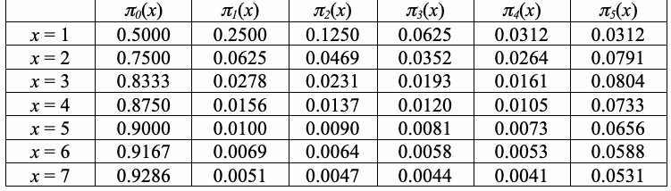
| π(x) 0 | π(x) 1 | π(x) 2 | π(x) 3 | π(x) 4 | π(x) 5 | |
| x = 1 | 0.5000 | 0.2500 | 0.1250 | 0.0625 | 0.0312 | 0.0312 |
| x = 2 | 0.7500 | 0.0625 | 0.0469 | 0.0352 | 0.0264 | 0.0791 |
| x = 3 | 0.8333 | 0.0278 | 0.0231 | 0.0193 | 0.0161 | 0.0804 |
| x = 4 | 0.8750 | 0.0156 | 0.0137 | 0.0120 | 0.0105 | 0.0733 |
| x = 5 | 0.9000 | 0.0100 | 0.0090 | 0.0081 | 0.0073 | 0.0656 |
| x = 6 | 0.9167 | 0.0069 | 0.0064 | 0.0058 | 0.0053 | 0.0588 |
| x = 7 | 0.9286 | 0.0051 | 0.0047 | 0.0044 | 0.0041 | 0.0531 |
Compare these frequencies to the theoretical ones using the Χ2-test,
これらの度数を、Χ2検定を用いて理論値と比較する。
未レビュー訳5 (ν (x) − Jπ (x))2
5 (ν (x) − Jπ (x))2
未レビュー訳Χ2(x) = ∑ k
Χ2(x) = ∑ k
未レビュー訳k , Jπ (x) k
k , Jπ (x) k
未レビュー訳k=0
k=0
未レビュー訳which, for any x under the randomness hypothesis, must have approximately a Χ2-distribution with 5 degrees of freedom. This is a valid test when J minπ (x) ≥ 5, i.e., if J ≥ 500. (The test suite code uses k π (x=4) for min π(x).) If t€his condition does not hold, values of ξ(x) must be pooled into larger classes. 4
ランダム性仮説の下で任意のxについて、Χ2分布におおよそ従う必要があり、自由度は5である。J minπ (x) ≥ 5、すなわちJ ≥ 500の場合、この検定は有効である。（テストスイートのコードでは、min π(x)に対して k π (x=4) を使用する。）この€条件が満たされない場合、ξ(x)の値をより大きなクラスにまとめる必要がある。 4
未レビュー訳k
未レビュー訳The corresponding battery of P-values is reported. These values are obtained from the formula
対応する一連のP値を報告する。これらの値は次の式から得られる：
未レビュー訳€
未レビュー訳5 Χ2(obs)(x)
5 Χ2(obs)(x)
未レビュー訳1− P ,
1− P ,
未レビュー訳.
未レビュー訳2 2
2 2
未レビュー訳References for Test
検定の参考文献
未レビュー訳[1] M. Baron and A. L. Rukhin€, “Distribution of the Number of Visits For a Random Walk,” Communications in Statistics: Stochastic Models. Vol. 15, 1999, pp. 593-597.
[1] M. Baron and A. L. Rukhin€, “Distribution of the Number of Visits For a Random Walk,” Communications in Statistics: Stochastic Models. Vol. 15, 1999, pp. 593-597.
未レビュー訳[2] Pal Revesz, Random Walk in Random and Non-random Environments. Singapore: World Scientific, 1990.
[2] Pal Revesz, Random Walk in Random and Non-random Environments. Singapore: World Scientific, 1990.
未レビュー訳[3] Frank Spitzer, Principles of Random Walk. Princeton: Van Nostrand, 1964, (especially p. 269).
[3] Frank Spitzer, Principles of Random Walk. Princeton: Van Nostrand, 1964, (especially p. 269).
未レビュー訳3.15 Random Excursions Variant Test
3.15 ランダム・エクスカーション変種検定
未レビュー訳An alternative to the random excursions test can be derived as follows. Using the notation of the previous subsection, let ξ(x) be the total number of visits to x during J excursions. (The test suite code assumes J
ランダム・エクスカーション検定に代わる方法は、次のように導ける。前節の記法を用い、ξ(x)をJ回のエクスカーション中にxを訪れる総回数とする。（テストスイートのコードではJ
未レビュー訳J
未レビュー訳≥ 500.) Since S renews at every zero, ξ(x) is a sum of independent identically distributed variables with
≥ 500。）Sはゼロのたびに再生するため、ξ(x)は同一分布に従う独立確率変数の和であり、その分布は
未レビュー訳k
未レビュー訳J the same distribution as ξ(x) = ξ (x). Therefore, the limiting distribution of ξ(x),
J個の和を構成する各変数はξ(x) = ξ (x)と同じ分布をもつ。したがって、ξ(x)の極限分布は、
未レビュー訳1
未レビュー訳J
未レビュー訳
未レビュー訳
未レビュー訳(x) − J ξ
(x) − J ξ
未レビュー訳lim P
lim P
未レビュー訳< z = Φ(z),
< z = Φ(z),
未レビュー訳J J→∞ J(4 x − 2)
J J→∞ J(4 x − 2)
未レビュー訳
未レビュー訳is normal. The randomness hypothesis will be rejected when the P-value
は正規分布である。P値が
未レビュー訳€
未レビュー訳
未レビュー訳
未レビュー訳ξ (x)(obs) − J erfc J
ξ (x)(obs) − J erfc J
未レビュー訳
未レビュー訳 2J(4 x − 2)
2J(4 x − 2)
未レビュー訳
未レビュー訳is small.
小さい。
未レビュー訳€
未レビュー訳References for Test
検定の参考文献
未レビュー訳[1] M. Baron and A. L. Rukhin, “Distribution of the Number of Visits For a Random Walk,”
[1] M. Baron and A. L. Rukhin, “Distribution of the Number of Visits For a Random Walk,”
未レビュー訳Communications in Statistics: Stochastic Models. Vol.15, 1999.
Communications in Statistics: Stochastic Models. Vol.15, 1999.
未レビュー訳[2] Pal Revesz, Random Walk in Random and Non-random Environments. Singapore: World
[2] Pal Revesz, Random Walk in Random and Non-random Environments. Singapore: World
未レビュー訳Scientific, 1990.
Scientific, 1990.
未レビュー訳[3] Frank Spitzer, Principles of Random Walk. Princeton: Van Nostrand, 1964 (especially p. 269).
[3] Frank Spitzer, Principles of Random Walk. Princeton: Van Nostrand, 1964 (especially p. 269).
未レビュー訳4. Testing Strategy and Result Interpretation
4. 検定戦略と結果の解釈
未レビュー訳Three topic areas will be addressed in this section: (1) strategies for the statistical analysis of a random number generator, (2) the interpretation of empirical results using the NIST Statistical Test Suite, and (3) general recommendations and guidelines.
この節では、三つの主題を扱う。(1)乱数生成器の統計解析の戦略、(2) NIST Statistical Test Suiteを用いた実験結果の解釈、(3)一般的な推奨事項と指針。
未レビュー訳4.1 Strategies for the Statistical Analysis of an RNG
4.1 乱数生成器（RNG）の統計解析の戦略
未レビュー訳In practice, there are many distinct strategies employed in the statistical analysis of a random number generator. NIST has adopted the strategy outlined in Figure 1. Figure 1 provides an architectural illustration of the five stages involved in the statistical testing of a random number generator.
実際には、乱数生成器の統計解析にさまざまな戦略が用いられている。NISTは図1に示す戦略を採用した。図1は、乱数生成器の統計検定に含まれる五つの段階を構成図として示している。
未レビュー訳Stage 1: Selection of a Generator
段階1：生成器の選択
未レビュー訳Select a hardware or software based generator for evaluation. The generator should produce a binary sequence of 0’s and 1’s of a given length n. Examples of pseudorandom generators (PRNG) that may be selected include a DES-based PRNG from ANSI X9.17 (Appendix C), and two further methods that are specified in FIPS 186 (Appendix 3) and are based on the Secure Hash Algorithm (SHA-1) and the Data Encryption Standard (DES).
評価対象として、ハードウェアまたはソフトウェアに基づく生成器を選択する。生成器は、所定の長さnの0と1からなる二進列を生成するものとする。選択可能な擬似乱数生成器（PRNG）の例として、ANSI X9.17 (Appendix C)に基づくDES PRNG、およびFIPS 186 (Appendix 3)で規定され、Secure Hash Algorithm (SHA-1)とData Encryption Standard (DES)に基づくさらに二つの方式がある。
未レビュー訳Stage 2: Binary Sequence Generation
段階2：二進列の生成
未レビュー訳For a fixed sequence of length n and the pre-selected generator, construct a set of m binary sequences and save the sequences to a file7.
長さnの固定された列と事前に選択した生成器を用いて、m個の二進列からなる集合を作成し、それらの列をファイル7に保存する。
未レビュー訳Stage 3: Execute the Statistical Test Suite
段階3：統計検定スイートの実行
未レビュー訳Invoke the NIST Statistical Test Suite using the file produced in Stage 2 and the desired sequence length. Select the statistical tests and relevant input parameters (e.g., block length) to be applied.
段階2で生成したファイルと所定の列長を用いて、NIST Statistical Test Suiteを実行する。適用する統計検定と関連する入力パラメータ（例えばブロック長）を選択する。
未レビュー訳Stage 4: Examine the P-values
段階4：P値の確認
未レビュー訳An output file will be generated by the test suite with relevant intermediate values, such as test statistics, and P-values for each statistical test. Based on these P-values, a conclusion regarding the quality of the sequences can be made.
検定スイートは、検定統計量や各統計検定のP値など、関連する中間値を含む出力ファイルを生成する。これらのP値に基づいて、列の品質に関する結論を導くことができる。
未レビュー訳Stage 5: Assessment: Pass/Fail Assignment
段階5：評価：合格／不合格の判定
未レビュー訳For each statistical test, a set of P-values (corresponding to the set of sequences) is produced. For a fixed significance level, a certain percentage of P-values are expected to indicate failure. For example, if the significance level is chosen to be 0.01 (i.e., α= 0.01), then about 1 % of the sequences are expected to fail. A sequence passes a statistical test whenever the P-value ≥αand fails otherwise. For each statistical test, the proportion of sequences that pass is computed and analyzed accordingly. More in-depth analysis should be performed using additional statistical procedures (see Section 4.2.2).
各統計検定について、列の集合に対応する一連のP値が生成される。有意水準を固定すると、P値の一定割合が不合格を示すと予想される。例えば、有意水準を0.01（すなわちα= 0.01）に選ぶと、列の約1 %が不合格になると予想される。P値がα以上なら列は統計検定に合格し、それ以外は不合格となる。各統計検定について、合格した列の割合を計算し、それに従って分析する。さらに詳細な分析は、追加の統計手法を用いて実施すべきである（Section 4.2.2を参照）。
未レビュー訳4.2 The Interpretation of Empirical Results
4.2 実験結果の解釈
未レビュー訳Three scenarios typify events that may occur due to empirical testing. Case 1: The analysis of the P-values does not indicate a deviation from randomness. Case 2: The analysis clearly indicates a deviation from randomness. Case 3: The analysis is inconclusive.
実証的検定で生じ得る事象は、典型的には次の三つのシナリオに分けられる。ケース1：P値の分析ではランダム性からの逸脱が示されない。ケース2：分析により、ランダム性からの逸脱が明確に示される。ケース3：分析結果が決定的でない。
未レビュー訳The interpretation of empirical results can be conducted in any number of ways. Two approaches NIST has adopted include (1) the examination of the proportion of sequences that pass a statistical test and (2) the distribution of P-values to check for uniformity. The file finalAnalysisReport.txt contains the results of these two forms of analysis.
実証結果はさまざまな方法で解釈できる。NISTが採用した方法には、(1)統計検定に合格した列の割合を調べる方法と、(2)一様性を確認するためにP値の分布を調べる方法がある。finalAnalysisReport.txtには、この二つの分析結果が含まれる。
未レビュー訳In the event that either of these approaches fails (i.e., the corresponding null hypothesis must be rejected), additional numerical experiments should be conducted on different samples of the generator to determine whether the phenomenon was a statistical anomaly or a clear evidence of non-randomness.
いずれかの方法で不合格となった場合（すなわち、対応する帰無仮説を棄却しなければならない場合）、その現象が統計的な異常なのか、非ランダム性を明確に示す証拠なのかを判定するため、生成器の異なるサンプルを用いて追加の数値実験を実施すべきである。
未レビュー訳4.2.1 Proportion of Sequences Passing a Test
4.2.1 検定に合格した列の割合
未レビュー訳Given the empirical results for a particular statistical test, compute the proportion of sequences that pass. For example, if 1000 binary sequences were tested (i.e., m = 1000), α= 0.01 (the significance level), and 996 binary sequences had P-values ≥.01, then the proportion is 996/1000 = 0.9960.
ある統計検定の実証結果に基づき、合格した列の割合を計算する。例えば、1000個の二進列を検定した（すなわちm = 1000）とし、α= 0.01（有意水準）で、996個の二進列がP値 ≥.01となった場合、その割合は996/1000 = 0.9960である。
未レビュー訳The range of acceptable proportions is determined using
許容される割合の範囲は、次を用いて定める。
未レビュー訳ˆp(1 − ˆp )
ˆp(1 − ˆp )
未レビュー訳the confidence interval defined as, ˆp ± 3
信頼区間を、ˆp ± 3
未レビュー訳, m
, m
未レビュー訳where p = 1-α, and m is the sample size. If the proportion falls outside of this interval, then there is evidence that the
ここでp = 1-αであり、mは標本サイズである。割合がこの区間の範囲外にある場合、
未レビュー訳Figure 4-1: P-value Plot
図4-1：P値プロット
未レビュー訳data is non-random. Note that other standard deviation values could be used. For the example above, the
データは非ランダムであることを示す。なお、他の標準偏差値を用いることもできる。上記の例では、
未レビュー訳confidence interval is .99 ± 3 .99(.01) = .99 ± 0.0094392 (i.e., the proportion should lie above 0.9805607. This
信頼区間は .99 ± 3 .99(.01) = .99 ± 0.0094392（すなわち、割合は0.9805607を上回るべきである。この
未レビュー訳1000
1000
未レビュー訳can be illustrated using a graph as shown in Figure 4-1. The confidence interval was calculated using a normal distribution as an approximation to the binomial distribution, which is reasonably accurate for large sample sizes (e.g., n ≥ 1000).
これは図4-1のようなグラフで示すことができる。信頼区間は正規分布を二項分布の近似として用いて計算されたもので、大きな標本サイズ（例えば、n ≥ 1000）では十分に正確である。
未レビュー訳4.2.2 Uniform Distribution of P-values
4.2.2 P値の一様分布
未レビュー訳The distribution of P-values is examined to ensure uniformity. This may be visually illustrated using a histogram (see Figure 4-2), whereby, the interval between 0 and 1 is divided into 10 sub-intervals, and the P-values that lie within each sub-interval are counted and displayed.
P値の分布を調べ、一様性を確認する。一様性はヒストグラム（図4-2を参照）で視覚的に示すことができる。そこでは、0から1までの区間を10個の小区間に分割し、各小区間に入るP値を数えて表示する。
未レビュー訳Uniformity may also be determined via an application of a χ2 test and the determination of a P-value corresponding to the Goodness-of-Fit Distributional Test on the P-values obtained for an arbitrary statistical test (i.e., a P-value of the P-values). This is accomplished by computing χ2 = ∑10 ( Fi − s10 )2 , where F is the
一様性は、χ2検定を適用し、任意の統計検定で得られたP値に対する適合度分布検定のP値（すなわち、P値のP値）を求めることによっても確認できる。これは、χ2 = ∑10 ( Fi − s10 )2 を計算して行う。ここでFは
未レビュー訳i
未レビュー訳s
未レビュー訳Figure 4-2: Histogram of P-values
図4-2：P値のヒストグラム
未レビュー訳i=1 10 number of P-values in sub-interval i, and s is the sample
i=1 10 サブ区間iに含まれるP値の数であり、sは標本
未レビュー訳size. A P-value is calculated such that P-value =
サイズである。P値は次のように計算される：P-value =
未レビュー訳T
未レビュー訳2
未レビュー訳igamc( 9 ,χ ) . If P-value ≥0.0001, then the sequences can be considered to be uniformly
igamc( 9 ,χ ) . P値が0.0001以上であれば、列は一様に
未レビュー訳T
未レビュー訳2 2
2 2
未レビュー訳distributed. Additionally, to provided statistically meaningful results at least 55 sequences must be processed.
分布しているとみなすことができる。さらに、統計的に意味のある結果を得るには、少なくとも55列を処理しなければならない。
未レビュー訳4.3 General Recommendations and Guidelines
4.3 一般的な推奨事項と指針
未レビュー訳In practice, many reasons can be given to explain why a data set has failed a statistical test. The following is a list of possible explanations. The list was compiled based upon NIST statistical testing efforts.
実際には、データセットが統計検定に不合格となった理由は数多く考えられる。以下に可能な説明を挙げる。この一覧はNISTの統計検定の取り組みに基づいて作成された。
未レビュー訳(a) An incorrectly programmed statistical test.
(a) 統計検定のプログラミングの誤り。
未レビュー訳Unless otherwise specified, it should be assumed that a statistical test was tailored to handle a particular problem class. Since the NIST test code has been written to allow the selection of input parameters, the code has been generalized in any number of ways. Unfortunately, this doesn't necessarily translate to coding ease.
特に指定がない限り、統計検定は特定の問題クラスに対応するよう調整されていると考えるべきである。NISTの検定コードは入力パラメータを選択できるように記述されているため、さまざまな点で汎用化されている。残念ながら、これが必ずしもコーディングを容易にするとは限らない。
未レビュー訳A few statistical tests have been constrained with artificial upper bounds. For example, the random excursions tests are assumed to be no more than max{1000, n/128} cycles. Conceivably, fixed parameters may have to be increased, depending on experimental conditions.
一部の統計検定には、人為的な上限が設けられている。例えば、ランダム・エクスカーション検定では、サイクル数はmax{1000, n/128}以下と仮定される。実験条件によっては、固定パラメータを増やす必要がある場合もある。
未レビュー訳(b) An underdeveloped (immature) statistical test.
(b) 未成熟（開発が不十分）な統計検定。
未レビュー訳There are occasions when either probability or complexity theory isn’t sufficiently developed or understood to facilitate a rigorous analysis of a statistical test.
確率論または計算量理論が十分に発展していない、あるいは理解されておらず、統計検定を厳密に解析できない場合がある。
未レビュー訳Over time, statistical tests are revamped in light of new results. Since many statistical tests are based upon asymptotic approximations, careful work needs to be done to determine how good an approximation is.
新たな結果を踏まえて、統計検定は時間の経過とともに改訂される。多くの統計検定は漸近近似に基づいているため、その近似の精度を慎重に評価する必要がある。
未レビュー訳(c) An improper implementation of a random number generator.
(c) 乱数生成器の不適切な実装。
未レビュー訳It might be plausible that a hardware RNG or a software RNG has failed due to a flaw in the design or due to a coding implementation error. In each case, careful review must be made to rule out this possibility.
ハードウェア乱数生成器またはソフトウェア乱数生成器が、設計上の欠陥や実装コードの誤りによって機能しなくなる可能性も考えられる。いずれの場合も、この可能性を除外するには慎重なレビューを行う必要がある。
未レビュー訳(d) Improperly written codes to harness test input data.
(d) 検定入力データを供給するコードの不適切な記述。
未レビュー訳Another area that needs to be scrutinized is the harnessing of test data. The test data produced by a (P)RNG must be processed before being used by a statistical test. For example, processing might include dividing the output stream from the (P)RNG into appropriate sized blocks, and translating the 0’s to negative ones. On occasion, it was determined that the failures from a statistical test were due to errors in the code used to process the data.
精査が必要なもう一つの領域は、検定データを供給する処理である。(P)RNGが生成した検定データは、統計検定に使用する前に処理しなければならない。例えば、(P)RNGの出力ストリームを適切なサイズのブロックに分割したり、0を負の単位値に変換したりする処理が含まれることがある。統計検定の不合格が、データ処理に使われるコードの誤りに起因すると判明した例もある。
未レビュー訳(e) Poor mathematical routines for computing P-values
(e) P値計算用の数学ルーチンの品質不足
未レビュー訳Quality math software must be used to ensure excellent approximations whenever possible. In particular, the incomplete gamma function is more difficult to approximate for larger values of the constant a. Eventually, P-value formulas will result in bogus values due to difficulties arising from numerical approximations. To reduce the likelihood of this event, NIST has prescribed preferred input parameters.
可能な限り優れた近似を確保するには、高品質の数学ソフトウェアを使用しなければならない。特に、不完全ガンマ関数は、定数aの値が大きいほど近似が難しくなる。最終的には、数値近似の困難さにより、P値の式が不正な値を返すことがある。この可能性を減らすため、NISTは推奨入力パラメータを定めている。
未レビュー訳(f) Incorrect choices for input parameters.
(f) 入力パラメータの選択誤り。
未レビュー訳In practice, a statistical test will not provide reliable results for all seemingly valid input parameters. It is important to recognize that constraints are made upon tests on a test-by-test basis. Take the Approximate Entropy Test, for example. For a sequence length on the order of 106, one would expect that block lengths approaching log n would be acceptable.
実際には、見かけ上有効なすべての入力パラメータで統計検定が信頼できる結果を示すとは限らない。検定ごとに入力上の制約があることを認識することが重要である。例えば、近似エントロピー検定を考える。系列長が10⁶程度の場合、ブロック長はlog nに近い値まで許容されると予想される。
未レビュー訳2
未レビュー訳Unfortunately, this is not the case. Empirical evidence suggests that beyond m = 14, the observed test statistic will begin to disagree with the expected value (in particular, for known good generators, such as SHA-1). Hence, certain statistical tests may be sensitive to input parameters.
しかし、実際はそうではない。実証的証拠によれば、m = 14を超えると、観測された検定統計量は期待値と一致しなくなり始める（特にSHA-1のような既知の良好な生成器の場合）。したがって、一部の統計検定は入力パラメータに敏感な可能性がある。
未レビュー訳Considerations must often be made regarding the numerical experimentation input parameters, namely: sequence length, sample size, block size and template.
数値実験の入力パラメータ、すなわち系列長、標本サイズ、ブロックサイズ、テンプレートについては、しばしば検討が必要である。
未レビュー訳Sequence Length
系列長
未レビュー訳The determination as to how long sequences should be taken for the purposes of statistical testing is difficult to address. If one examines the FIPS 140-1 statistical tests, it is evident that sequences should be about 20,000 bits long.
統計検定を行う目的で、系列をどの程度の長さにすべきかを決めるのは難しい。FIPS 140-1の統計検定を見ると、系列長は約20,000ビットであるべきことがわかる。
未レビュー訳However, the difficulty with taking relatively short sequence lengths is problematic in the sense that some statistical tests, such as Maurer’s Universal Statistical Test, require extremely long sequence lengths. One of the reasons is the realization that asymptotic approximations are used in determining the limiting distribution. Statements regarding the distribution for certain test statistics are more difficult to address for short length sequences than their longer length counterparts.
ただし、比較的短い系列長を用いることには問題がある。例えば、Maurer's Universal Statistical Testなど、非常に長い系列を必要とする検定がある。その理由の一つは、極限分布を求める際に漸近近似を用いることにある。短い系列と長い系列では、特定の検定統計量の分布に関する記述の難しさが異なる。
未レビュー訳Sample Size
標本サイズ
未レビュー訳The issue of sample size is tied to the choice of the significance level. NIST recommends that, for these tests, the user should fix the significance level to be at least 0.001, but no larger than 0.018. A sample size that is disproportional to the significance level may not be suitable. For example, if the significance level (α) is chosen to be 0.001, then it is expected that 1 out of every 1000 sequences will be rejected. If a sample of only 100 sequences is selected, it would be rare to observe a rejection. In this case, the conclusion may be drawn that a generator was producing random sequences, when in all likelihood a sufficiently large enough sample was not used. Thus, the sample should be on the order of the inverse of the significance level (α-1). That is, for a level of 0.001, a sample should have at least 1000 sequences. Ideally, many distinct samples should be analyzed.
標本サイズの問題は有意水準の選択と結び付いている。NISTは、これらの検定では、有意水準を少なくとも0.001、ただし0.018を超えない値に固定するよう推奨している。有意水準に比べて標本サイズが不釣り合いだと、適切でない場合がある。例えば、有意水準（α）を0.001にすると、各系列が棄却される確率は1/1000と予想される。標本としてわずか100系列を選んだ場合、棄却を観測することはまれだろう。その結果、実際には十分大きな標本を使っていないのに、生成器がランダムな系列を生成していると結論付ける可能性がある。したがって、標本サイズは有意水準の逆数（α-1）程度にすべきである。つまり、有意水準が0.001なら、標本には少なくとも1000系列を含めるべきである。理想的には、互いに異なる多くの標本を分析する。
未レビュー訳Block Size
ブロックサイズ
未レビュー訳Block sizes are dependent on the individual statistical test. In the case of Maurer's Universal Statistical test, block sizes range from 1 to 16. However, for each specific block size, a minimum sequence length should be used. If the block size were fixed at 16, a sequence of more than a billion bits would be required. For some users, that may not be feasible.
ブロックサイズは個々の統計検定によって異なる。Maurer's Universal Statistical Testでは、ブロックサイズは1から16の範囲である。ただし、各ブロックサイズについて最低限の系列長を用いるべきである。ブロックサイズを16に固定すると、十億ビットを超える系列が必要になる。利用者によっては実現できない場合もある。
未レビュー訳Intuitively, it would seem that the larger the block size, the more information could be gained from the parsing of a sequence, such as in the Approximate Entropy test. However, a block size that is too large should not be selected either, for otherwise the empirical results may be misleading and incorrect because the test statistic is better approximated by a distinct probability distribution. In practice, NIST advises selecting a block size no larger than log n, where n is the sequence length. However, certain exceptions hold, and thus NIST 2 suggests choosing a smaller block size.
直感的には、ブロックサイズが大きいほど、Approximate Entropy Testなどで系列を解析したときに得られる情報が増えるように思われる。しかし、ブロックサイズが大きすぎる場合も選ぶべきではない。検定統計量が別の確率分布でより適切に近似されるため、実証結果が誤解を招き、誤ったものになる可能性がある。実務上、NISTはブロックサイズを⌊log₂ n⌋以下にするよう勧告している。ただし例外もあるため、NISTはより小さなブロックサイズを選ぶことを提案している。
未レビュー訳Template
テンプレート
未レビュー訳Certain statistical tests are suited for detecting global non-randomness. However, other statistical tests are more apt at assessing local non-randomness, such as tests developed to detect the presence of too many m-bit patterns in a sequence. Still, it makes sense that templates of a block size greater than log n should not be chosen, since frequency counts 2 will most probably be in the neighborhood of zero, which does not provide any useful information. Thus, appropriate choices must be made.
一部の統計検定は全体的な非ランダム性の検出に適している。一方、系列内にmビットパターンが過剰に含まれることを検出する検定など、局所的な非ランダム性の評価により適した検定もある。それでも、⌊log₂ n⌋を超えるブロックサイズのテンプレートは選ぶべきではない。頻度カウントはおそらくゼロ付近となり、有用な情報を与えないためである。したがって、適切な選択を行う必要がある。
未レビュー訳Other Considerations
その他の考慮事項
未レビュー訳In principle, there are many commonly occurring questions regarding randomness testing. Perhaps the most frequently asked question is, "How many tests should one apply?" In practice, no one can truly answer this question. The belief is that the tests should be independent of each other as much as possible.
原理的には、ランダム性検定に関してよく生じる疑問が数多くある。最もよく尋ねられるのは、「検定をいくつ適用すべきか」である。実際には、この問いに確実に答えられる人はいない。できる限り、各検定は互いに独立しているべきだと考えられている。
未レビュー訳Another, frequently asked question concerns the need for applying a monobits test (i.e., Frequency test), in lieu of Maurer’s Universal Statistical test. The perception is that Maurer's Universal Statistical test supercedes the need to apply a monobits test. This may hold true for infinite length sequences. However, it is important to keep in mind that there will be instances when a finite binary sequence will pass Maurer's Universal Statistical test, yet fail the monobits test. Because of this fact, NIST recommends that the Frequency test be applied first. If the results of this test support the null hypothesis, then the user may proceed to apply other statistical tests.
もう一つのよくある質問は、Maurer's Universal Statistical Testの代わりにモノビット検定（すなわちFrequency Test）を適用する必要があるかどうかである。Maurer's Universal Statistical Testを用いればモノビット検定は不要だ、という見方がある。これは無限長の系列なら当てはまるかもしれない。しかし、有限長の二進列がMaurer's Universal Statistical Testには合格しながら、モノビット検定には不合格となる場合があることを忘れてはならない。このためNISTは、まずFrequency Testを適用するよう推奨している。この検定の結果が帰無仮説を支持するなら、利用者は他の統計検定に進んでもよい。
未レビュー訳4.4 Application of Multiple Tests
4.4 複数の検定の適用
未レビュー訳Given a concern regarding the application of multiple tests, NIST performed a study to determine the dependence between the tests. The performance of the tests was checked by using a Kolmogorov-Smirnov test of uniformity on the P-values obtained from the sequences. However, it required an assumption that the sequences that were generated to test uniformity were sufficiently random. There are many tests in the suite. Some tests should intuitively give independent answers (e.g., the frequency test and a runs test that conditions on frequencies should assess completely different aspects of randomness). Other tests, such as the cusum test and the runs test, result in P-values that are likely to be correlated.
複数の検定を適用することへの懸念を受け、NISTは検定間の依存性を調べる研究を行った。系列から得られたP値に対する一様性のKolmogorov-Smirnov検定を用いて、検定の性能を確認した。ただし、一様性の検定に用いる系列が十分にランダムであるという仮定が必要だった。検定スイートには多くの検定がある。直感的に独立した結果を返すと考えられる検定もある（例えば、Frequency Testと、度数を条件とするRuns Testは、ランダム性のまったく異なる側面を評価するはずである）。一方、Cusum TestやRuns Testなどでは、相関する可能性の高いP値が得られる。
未レビュー訳To understand the dependencies between the tests in order to eliminate redundant tests, and to ensure that the tests in the suite are able to detect a reasonable range of patterned behaviors, a factor analysis of the resulting P-values was performed. More precisely, in order to assess independence, m sequences of binary pseudorandom digits were generated, each of length n, and all k=161 tests in the suite were applied to those sequences to determine their randomness. Each test produced a significance probability; denote by p the significance probability of test i on sequence j. ij
検定間の依存関係を理解して重複する検定を除き、検定スイートが妥当な範囲のパターン挙動を検出できるようにするため、得られたP値に対する因子分析を行った。より具体的には、独立性を評価するため、長さnの二進擬似乱数列をm本生成し、スイート内のk=161個すべての検定を適用して、各列のランダム性を調べた。各検定は有意確率を出力する。検定iが系列jに対して得た有意確率をp_ijと表す。
未レビュー訳−1( )
−1( )
未レビュー訳Given the uniformly distributed p , the transformation z =Φ
一様分布するp_ijについて、変換 z_ij = Φ
未レビュー訳p leads to normally distributed
p_ijにより、正規分布に従う
未レビュー訳ij
未レビュー訳ij
未レビュー訳ij
未レビュー訳variables. Let z be the vector of transformed significance probabilities corresponding to the ith sequence.
変数となる。zを、i番目の系列に対応する変換済み有意確率のベクトルとする。
未レビュー訳j
未レビュー訳A principal components analysis was performed on the z , … , z . Usually, a small number of
主成分分析を z , … , z に対して行った。通常、少数の
未レビュー訳1 m
1 m
未レビュー訳components suffices to explain a great proportion of the variability, and the number of these components can be used to quantify the number of “dimensions'” of nonrandomness spanned by the suite tests. The principal component analysis of this data was performed. This analysis extracts 161 factors, equal to the number of tests. The first factor is the one that explains the largest variability. If many tests are correlated, their P-values will greatly depend on this factor, and the fraction of total variability explained by this factor will be large. The second factor explains the second largest proportion of variability, subject to the constraint that the second factor is orthogonal to the first, and so on for subsequent factors. The corresponding fractions corresponding to the first 50 factors were plotted for the tests, based on Blum-Blum-Shub sequences of length 1,000,000. This graph showed that there is no large redundancy among our tests.
構成要素の数は変動性の大部分を説明するのに十分であり、その数を用いて、検定スイートが捉える非ランダム性の「次元」数を定量化できる。このデータに対して主成分分析を実施した。この分析では、検定数に等しい161個の因子が抽出される。第一因子は変動性を最も大きく説明する。多くの検定が相関している場合、それらのP値はこの因子に大きく依存し、全変動性に対するこの因子の説明割合も大きくなる。第二因子は第一因子と直交するという条件のもとで、次に大きな割合の変動性を説明し、以降も同様である。上位50因子に対応する割合を、長さ1,000,000のBlum-Blum-Shub系列を用いてプロットした。このグラフから、検定間に大きな重複がないことがわかった。
未レビュー訳The correlation matrix formed from the z , … , z was constructed via a statistical software application
z , … , z から作成した相関行列は、統計ソフトウェアを用いて構築された
未レビュー訳5. User’s Guide
5. 利用者ガイド
未レビュー訳This section describes the set-up and proper usage of the statistical tests developed by NIST that are available in the NIST test code. Descriptions of the algorithms and data structures that were utilized are included in this section.
この節では、NISTが開発し、NISTの検定コードで利用できる統計検定の設定方法と適切な使用方法を説明する。ここでは、使用されているアルゴリズムとデータ構造についても説明する。
未レビュー訳5.1 About the Package
5.1 パッケージについて
未レビュー訳This toolbox was specifically designed for individuals interested in conducting statistical testing of cryptographic (P)RNGs. Several implementations of PRNGs utilized during the development phase of the project have also been included.
このツールボックスは、暗号用（P）RNGの統計検定に関心を持つ利用者向けに特別に設計された。プロジェクトの開発段階で使用されたPRNGの実装例もいくつか含まれている。
未レビュー訳This package will address the problem of evaluating (P)RNGs for randomness. It will be useful in:
このパッケージは、（P）RNGのランダム性を評価する問題に取り組むものであり、次の用途に役立つ：
未レビュー訳•identifying (P)RNGs which produce weak (or patterned) binary sequences,
•弱い（またはパターンを含む）二進列を生成する（P）RNGの特定
未レビュー訳•designing new (P)RNGs,
•新しい（P）RNGの設計
未レビュー訳•verifying that the implementations of (P)RNGs are correct,
•（P）RNGの実装が正しいことの検証
未レビュー訳•studying (P)RNGs described in standards, and
•規格に記載された（P）RNGの検討
未レビュー訳•investigating the degree of randomness by currently used (P)RNGs.
•現在使用されている（P）RNGのランダム性の度合いの調査
未レビュー訳The objectives during the development of the NIST statistical test suite included:
NIST統計検定スイートの開発目標には、次の項目が含まれていた：
未レビュー訳•Platform Independence: The source code was written in ANSI C. However, some modification may have to be made, depending on the target platform and the compiler.
•プラットフォーム独立性：ソースコードはANSI Cで記述された。ただし、対象プラットフォームやコンパイラによっては、いくらか変更が必要になる場合がある。
未レビュー訳•Flexibility: The user may freely introduce their own math software routines.
•柔軟性：利用者は独自の数学ソフトウェアルーチンを自由に導入できる。
未レビュー訳•Extensibility: New statistical tests can easily be incorporated.
•拡張性：新しい統計検定を容易に組み込める。
未レビュー訳•Versatility: The test suite is useful in performing tests for PRNGs, RNGs and cipher algorithms.
•汎用性：この検定スイートは、PRNG、RNG、暗号アルゴリズムの検定に利用できる。
未レビュー訳•Portability: With minor modifications, source code may be ported to different platforms. The NIST source code was ported to a Windows XP system running Visual Studio 2005 compiler and a Ubuntu Linux system running gcc.
•移植性：小規模な変更を加えれば、ソースコードを異なるプラットフォームに移植できる。NISTのソースコードは、Visual Studio 2005コンパイラを実行するWindows XPシステムと、gccを実行するUbuntu Linuxシステムに移植された。
未レビュー訳•Orthogonality: A diverse set of tests is provided.
•直交性：多様な検定が提供される。
未レビュー訳•Efficiency: Linear time or space algorithms were utilized whenever possible.
•効率性：時間または空間が線形のアルゴリズムを、可能な限り使用した。
未レビュー訳5.2 System Requirements
5.2 システム要件
未レビュー訳This software package was originally developed on a SUN workstation under the Solaris operating system. All of the source code was written in ANSI C. The latest revisions were done on an Apple MacBook Pro with an Intel Core 2 Duo processor using the gcc compiler.
このソフトウェアパッケージは、もともとSolarisオペレーティングシステムを搭載したSUNワークステーション上で開発された。すべてのソースコードはANSI Cで記述された。最新の改訂は、Intel Core 2 Duoプロセッサ搭載のApple MacBook Proで、gccコンパイラを用いて行われた。
未レビュー訳In practice, minor modifications may have to be introduced during the porting process in order to ensure the correct interpretation of tests. In the event that a user wishes to compile and execute the code on a different platform, sample data and the corresponding results for each of the statistical tests have been provided. In this manner, the user will be able to gain confidence that the ported statistical test suite is functioning properly. For additional details see Appendix B.
検定の正しい解釈を確保するため、移植作業中に小規模な変更が必要になる場合がある。別のプラットフォームでコードをコンパイルおよび実行する場合に備えて、各統計検定のサンプルデータと対応する結果が用意されている。これにより、移植した統計検定スイートが適切に動作するという確信を得られる。詳細はAppendix Bを参照。
未レビュー訳For the majority of the statistical tests, memory must be allocated dynamically in order to proceed. In the event that workspace cannot be provided, the statistical test returns a diagnostic message.
大半の統計検定では、処理を進めるためにメモリを動的に割り当てなければならない。ワークスペースを確保できない場合、統計検定は診断メッセージを返す。
未レビュー訳5.3 How to Get Started
5.3 使用開始方法
未レビュー訳To setup a copy of the NIST test code on a workstation, follow the instructions below.
ワークステーションにNIST検定コードをセットアップするには、以下の手順に従う。
未レビュー訳•Copy the sts.tar file into the root directory. Use the instruction, tar -xvf sts.tar, to unbundle the source code.
•sts.tarファイルをルートディレクトリにコピーする。ソースコードを展開するには、tar -xvf sts.tarというコマンドを使用する。
未レビュー訳•Six subdirectories and one file should have been created. The subdirectories are: data/, experiments/, include/, obj/, src/ and templates/. The file is makefile.
•六つのサブディレクトリと一つのファイルが作成されるはずである。サブディレクトリは、data/、experiments/、include/、obj/、src/、templates/である。ファイル名はmakefileである。
未レビュー訳•The data/ subdirectory is reserved for pre-existing RNG data files that are under investigation. Currently, two formats are supported, i.e., data files consisting of ASCII zeroes and ones, and binary data files.
•data/サブディレクトリは、調査対象となる既存のRNGデータファイルを格納するためのものである。現在、ASCIIのゼロと一で構成されるデータファイルと、バイナリデータファイルの二形式がサポートされている。
未レビュー訳•The experiments/ subdirectory will be the repository of the empirical results for the statistical tests. Several subdirectories should be contained in it. These include AlgorithmTesting/, BBS/, CCG/, G-SHA1/, LCG/, MODEXP/, MS/, QCG1/, QCG2/, and XOR/. All but the first of these subdirectories is meant to store the results for the corresponding PRNG. The AlgorithmTesting/ subdirectory is the default subdirectory for empirical results corresponding to RNG data stored in the data/ subdirectory.
•experiments/サブディレクトリには、統計検定の実証結果を格納する。複数のサブディレクトリが含まれる。AlgorithmTesting/、BBS/、CCG/、G-SHA1/、LCG/、MODEXP/、MS/、QCG1/、QCG2/、XOR/である。最初のサブディレクトリを除き、それぞれのPRNGに対応する結果を格納する。AlgorithmTesting/は、data/サブディレクトリに保存されたRNGデータに関する実証結果の既定の保存先である。
未レビュー訳•The include/ subdirectory contains the header files for the statistical tests, pseudo-random number generators, and associated routines.
•include/サブディレクトリには、統計検定、擬似乱数生成器、および関連ルーチンのヘッダーファイルが含まれる。
未レビュー訳•The obj/ subdirectory contains the object files corresponding to the statistical tests, pseudo random number generators and other associated routines.
•obj/サブディレクトリには、統計検定、擬似乱数生成器、およびその他の関連ルーチンに対応するオブジェクトファイルが含まれる。
未レビュー訳•The src/ subdirectory contains the source codes for each of the statistical tests.
•src/サブディレクトリには、各統計検定のソースコードが含まれる。
未レビュー訳•The templates/ subdirectory contains a series of non-periodic templates for varying block sizes that are utilized by the NonOverlapping Templates statistical test.
•templates/サブディレクトリには、NonOverlapping Templates統計検定で使用する、ブロックサイズごとの一連の非周期テンプレートが含まれる。
未レビュー訳•User prescribed modifications may be introduced in several files. This will be discussed subsequently in Section 5.5.2 and Appendix A.
•ユーザーが指定した変更を複数のファイルに加えてもよい。これについては、後述のSection 5.5.2およびAppendix Aで説明する。
未レビュー訳•Edit the makefile. Modify the following lines: (a) CC (your ANSI C compiler) (b) ROOTDIR (the root directory that was prescribed earlier in the process, e.g., rng/)
•makefileを編集する。次の行を変更する：(a) CC（使用するANSI Cコンパイラ）、(b) ROOTDIR（この手順の前半で指定したルートディレクトリ。例：rng/）。
未レビュー訳•Now execute makefile. An executable file named assess should appear in the project directory.
•次にmakefileを実行する。プロジェクトディレクトリにassessという名前の実行ファイルが作成される。
未レビュー訳•The data may now be evaluated. Type the following: assess <sequenceLength>, e.g., assess 1000000.
•これでデータを評価できる。次のコマンドを入力する：assess <sequenceLength>（例：assess 1000000）。
未レビュー訳Follow the menu prompts.
メニューの指示に従う。
未レビュー訳5.4 Data Input and Output of Empirical Results
5.4 実証結果のデータ入出力
未レビュー訳5.4.1 Data Input
5.4.1 データ入力
未レビュー訳Data input may be supplied in one of two ways. If the user has a stand-alone program or hardware device which implements a RNG, the user may want to construct as many files of arbitrary length as desired. Files should contain binary sequences stored as either ASCII characters consisting of zeroes and ones, or as binary data where each byte contains eight bits worth of 0’s and 1’s. The NIST Statistical Test Suite can then independently examine these files.
データは二つの方法で入力できる。RNGを実装したスタンドアロンプログラムまたはハードウェア機器がある場合、必要な長さのファイルをいくつでも作成できる。ファイルには、ゼロと一からなるASCII文字、または各バイトに0と1からなる八ビット分が含まれるバイナリデータとして保存された二進列を含めるべきである。NIST Statistical Test Suiteは、これらのファイルを個別に検査できる。
未レビュー訳In the event that storage space is a problem, the user may want to modify the reference implementation and plug-in their implementation of the PRNG under evaluation. The bit streams will be stored directly in the epsilon data structure, which contains binary sequences.
記憶容量が問題となる場合、参照実装を変更し、評価対象のPRNG実装を組み込んでもよい。ビットストリームは、二進列を保持するepsilonデータ構造に直接格納される。
未レビュー訳5.4.2 Output of Empirical Results
5.4.2 実証結果の出力
未レビュー訳The output logs of empirical results will be stored in two files, stats and results, that correspond respectively to the computational information e.g., test statistics, intermediate parameters, and P-values for each statistical test applied to a data set.
実証結果の出力ログはstatsとresultsという二つのファイルに保存される。それぞれ、データセットに適用した各統計検定の計算情報（例えば検定統計量、中間パラメータ、P値）に対応する。
未レビュー訳If these files are not properly created, then it is most probably due to the inability to open the files for output. See Appendix C for further details.
これらのファイルが正しく作成されない場合、最も可能性が高い原因は、出力用ファイルを開けないことである。詳細はAppendix Cを参照。
未レビュー訳5.4.3 Test Data Files
5.4.3 検定データファイル
未レビュー訳Six sample files have been created and are contained in the data/ subdirectory. Four of these files correspond to the Mathematica9 generated binary expansion of several classical numbers for over 1,000,000 bits. These files are data.e, data.pi, data.sqrt2, and data.sqrt3. The Mathematica program used in creating these files can be found in Appendix F. A fifth file, data.sha1, was constructed utilizing the SHA-1 hash function. The final sample file is one produced by a biased PRNG and is intended to fail certain statistical tests.
六つのサンプルファイルが作成され、data/サブディレクトリに格納されている。このうち四つは、Mathematica⁹で生成した古典的な数の二進展開で、1,000,000ビットを超える長さをもつ。これらのファイルはdata.e、data.pi、data.sqrt2、data.sqrt3である。これらのファイル作成に用いたMathematicaプログラムはAppendix Fに記載されている。第五のファイルdata.sha1はSHA-1ハッシュ関数を用いて作成された。最後のサンプルファイルは偏りのあるPRNGが生成したもので、特定の統計検定に不合格となることを意図している。
未レビュー訳5.5 Program Layout
5.5 プログラム構成
未レビュー訳The test suite package has been decomposed into a series of modules which include the: statistical tests and (pseudo)random number generators, empirical results (hierarchical) directories, and data.
検定スイートのパッケージは複数のモジュールに分割されている。これには、統計検定と（擬似）乱数生成器、実証結果を格納する階層ディレクトリ、およびデータが含まれる。
未レビュー訳The three primary components of the NIST test suite are the statistical tests, the underlying mathematical software, and the pseudo random number generators under investigation. Other components include the source code library files, the data directory and the hierarchical directory (experiments/) containing the sample data files and empirical result logs, respectively.
NIST検定スイートの主要な構成要素は、統計検定、基礎となる数学ソフトウェア、および調査対象の擬似乱数生成器の三つである。その他の構成要素には、ソースコードライブラリファイル、データディレクトリ、およびサンプルデータファイルと実証結果ログをそれぞれ含む階層ディレクトリ（experiments/）がある。
未レビュー訳5.5.1 General Program
5.5.1 一般プログラム
未レビュー訳The NIST test suite contains fifteen tests which will be useful in studying and evaluating the binary sequences produced by random and pseudo random number generators. As in previous work in this field, statistical tests must be devised which, under some hypothesized distribution, employ a particular test statistic, such as the number of runs of ones or the number of times a pattern appears in a bit stream. The majority of the tests in the test suite either (1) examine the distribution of zeroes and ones in some fashion, (2) study the harmonics of the bit stream utilizing spectral methods, or (3) attempt to detect patterns via some generalized pattern matching technique on the basis of probability theory or information theory.
NIST検定スイートには、乱数生成器および擬似乱数生成器が出力する二進列の調査・評価に利用できる十五の検定が含まれる。この分野の従来の研究と同様に、統計検定では、仮定した分布の下で、一の連なりの数やビットストリーム内でパターンが現れる回数など、特定の検定統計量を用いる必要がある。検定スイートの大半は、(1)何らかの方法でゼロと一の分布を調べる、(2)スペクトル手法を用いてビットストリームの高調波を調べる、または(3)確率論や情報理論に基づく一般化されたパターンマッチング手法でパターンを検出する。
未レビュー訳5.5.2 Global Parameters
5.5.2 グローバルパラメータ
未レビュー訳In practice, any number of problems can arise if the user executes this software in unchartered domains. It is plausible that sequence lengths well beyond the testing procedure (i.e., on the order of 106) may be chosen. If memory is available, there should not be any reason why the software should fail. However, in many instances, user defined limits are prescribed for data structures and workspace. Under these conditions, it may be necessary to increase certain parameters, such as the NUMOFTEMPLATES. Several parameters that may be modified by a user are listed in Table 5-1.
実際には、このソフトウェアを想定外の領域で実行すると、さまざまな問題が生じ得る。検定手順が想定する範囲を大きく超える系列長（例えば10⁶程度）が選ばれることも考えられる。メモリに余裕があれば、ソフトウェアが失敗する理由はないはずである。しかし、データ構造やワークスペースにはユーザー定義の上限が設定されている場合が多い。その場合、NUMOFTEMPLATESなどのパラメータを増やす必要がある。ユーザーが変更できるパラメータを表5-1に示す。
未レビュー訳Table 5-1 User Prescribed Statistical Test Parameters
表5-1 ユーザー指定の統計検定パラメータ
未レビュー訳| Source Code Parameter | Default Parameter | Description/Definition |
| ALPHA | 0.01 | Significance Level |
| MAXNUMOFTEMPLATES | 40 | Non-overlapping Templates Test |
| NUMOFTESTS | 16 | Max number of tests |
| NUMOFGENERATORS | 12 | Max number of PRNGs |
原本の表画像

| ソースコードのパラメータ | 既定値 | 説明／定義 |
| ALPHA | 0.01 | 有意水準 |
| MAXNUMOFTEMPLATES | 40 | 非重複テンプレート検定 |
| NUMOFTESTS | 16 | 検定の最大数 |
| NUMOFGENERATORS | 12 | PRNGの最大数 |
The parameter ALPHA denotes the significance level that determines the region of acceptance and rejection. NIST recommends that ALPHA be in the range [0.001, 0.01].
パラメータALPHAは、受容域と棄却域を定める有意水準を表す。NISTは、ALPHAを[0.001, 0.01]の範囲にすることを推奨している。
未レビュー訳The parameter MAXNUMOFTEMPLATES indicates the maximum number of non-periodic templates that may be executed by the Nonoverlapping Template Matchings test. For templates of size m = 9, up to 148 possible non-periodic templates may be applied.
パラメータMAXNUMOFTEMPLATESは、Nonoverlapping Template Matchings Testで実行できる非周期テンプレートの最大数を表す。サイズm = 9のテンプレートでは、最大148個の非周期テンプレートを適用できる。
未レビュー訳The parameters NUMOFTESTS and NUMOFGENERATORS correspond to the maximum number of tests that may be defined in the test suite, and the maximum number of generators specified in the test suite, respectively.
パラメータNUMOFTESTSとNUMOFGENERATORSは、それぞれ検定スイートで定義できる検定の最大数と、検定スイートに指定できる生成器の最大数を表す。
未レビュー訳5.5.3 Mathematical Software
5.5.3 数学ソフトウェア
未レビュー訳Special functions required by the test suite are the incomplete gamma function and the complementary error function. The cumulative distribution function, also known as the standard normal function, is also required, but it can be expressed in terms of the error function.
検定スイートが必要とする特殊関数は、不完全ガンマ関数と相補誤差関数である。標準正規関数としても知られる累積分布関数も必要だが、誤差関数を用いて表現できる。
未レビュー訳One of the initial concerns regarding the development of the reference implementation was the dependencies that were required in order to gain reliable mathematical software for the special functions required in the statistical tests. To resolve this matter, the test suite makes use of the following libraries:
参照実装の開発初期に懸念されたことの一つは、統計検定で必要な特殊関数について、信頼できる数学ソフトウェアを得るために必要となる依存関係であった。この問題に対処するため、検定スイートは次のライブラリを使用する：
未レビュー訳The Fast Fourier Transform routine was obtained at http://www.netlib.org/fftpack/fft.c. The normal function utilized in this code was expressed in terms of the error function.
高速フーリエ変換ルーチンはhttp://www.netlib.org/fftpack/fft.cから取得した。このコードで用いる正規関数は、誤差関数を用いて表現されている。
未レビュー訳Standard Normal (Cumulative Distribution) Function 1 z
標準正規（累積分布）関数 1 z
未レビュー訳−u2 /2du
−u2 /2du
未レビュー訳Φ(z) =
Φ(z) =
未レビュー訳e ∫ 2π −∞
e ∫ 2π −∞
未レビュー訳The complementary error function (erfc) utilized in the package is the ANSI C function contained in the math.h header file and its corresponding mathematical library. This library should be included during compilation.
パッケージで使用する相補誤差関数（erfc）は、math.hヘッダーファイルと対応する数学ライブラリに含まれるANSI C関数である。このライブラリはコンパイル時に組み込むべきである。
未レビュー訳Complementary Error Function 2 ∞
相補誤差関数 2 ∞
未レビュー訳−u2
−u2
未レビュー訳erfc(z) =
erfc(z) =
未レビュー訳e du ∫ π z
e du ∫ π z
未レビュー訳The incomplete gamma function is based on an approximation formula whose origin is described in the Handbook of Applied Mathematical Functions [1] and in the Numerical Recipes in C book [6]. Depending on the values of its parameters a and x, the incomplete gamma function may be approximated using either a continued fraction development or a series development.
不完全ガンマ関数は近似式に基づいており、その由来は『Handbook of Applied Mathematical Functions』[1]および書籍『Numerical Recipes in C』[6]に記載されている。パラメータaおよびxの値に応じて、不完全ガンマ関数は連分数展開または級数展開のいずれかを用いて近似できる。
未レビュー訳Gamma Function
ガンマ関数
未レビュー訳Γ(z) = ∫∞tz−1e−tdt 0
Γ(z) = ∫∞tz−1e−tdt 0
未レビュー訳Incomplete Gamma Function
不完全ガンマ関数
未レビュー訳γ(a, x) 1
γ(a, x) 1
未レビュー訳≡ ∫xe−tta−1dt
≡ ∫xe−tta−1dt
未レビュー訳P(a, x) ≡
P(a, x) ≡
未レビュー訳Γ(a) Γ(a) 0 where P(a,0) = 0 and P(a,∞) = 1.
Γ(a) Γ(a) 0 ここで、P(a,0) = 0 および P(a,∞) = 1 である。
未レビュー訳Incomplete Gamma Function
不完全ガンマ関数
未レビュー訳Γ(a, x) 1
Γ(a, x) 1
未レビュー訳≡ ∫∞e−tta−1dt
≡ ∫∞e−tta−1dt
未レビュー訳Q(a, x) ≡ 1− P(a, x) ≡
Q(a, x) ≡ 1− P(a, x) ≡
未レビュー訳Γ(a) Γ(a) x
Γ(a) Γ(a) x
未レビュー訳where Q(a,0) = 1 and Q(a,∞) = 0.
ここで、Q(a,0) = 1 および Q(a,∞) = 0 である。
未レビュー訳NIST has chosen to use the Cephes C language special functions math library in the test software. Cerphes may be found at http://www.moshier.net/ - Cephes or on the GAMS server at http://gams.nist.gov/serve.cgi/Package/CEPHES/. The specific functions that are utilized are igamc (for the complementary incomplete gamma function) and lgam (for the logarithmic gamma function).
NISTは、検定ソフトウェアでCephes C言語特殊関数数学ライブラリを使用することにした。Cerphesはhttp://www.moshier.net/ - CephesまたはGAMSサーバー（http://gams.nist.gov/serve.cgi/Package/CEPHES/）から入手できる。使用される関数は、相補不完全ガンマ関数用のigamcと、対数ガンマ関数用のlgamである。
未レビュー訳5.6 Running the Test Code
5.6 検定コードの実行
未レビュー訳A sample NIST Statistical Test Suite monolog is described below. Note: In this section bold items indicate input.
NIST統計検定スイートの実行例を以下に示す。注：この節では、太字の項目が入力を示す。
未レビュー訳In order to invoke the NIST statistical test suite, type assess, followed by the desired bit stream length, n. For example, assess 100000. A series of menu prompts will be displayed in order to select the data to be analyzed and the statistical tests to be applied. The first screen appears as follows:
NIST統計検定スイートを起動するには、assessに続けて、希望するビットストリーム長nを入力する。例えば、assess 100000と入力する。解析するデータと適用する統計検定を選択するため、一連のメニューが表示される。最初の画面を以下に示す。
未レビュー訳GENERATOR OPTIONS
生成器の選択肢
未レビュー訳[00] Input File
[00] 入力ファイル
未レビュー訳[01] Linear Congruential
[01] 線形合同法
未レビュー訳[02] Quadratic Congruential I
[02] 二次合同法 I
未レビュー訳[03] Quadratic Congruential II
[03] 二次合同法 II
未レビュー訳[04] Cubic Congruential
[04] 三次合同法
未レビュー訳[05] XOR
[05] XOR
未レビュー訳[06] Modular Exponentiation
[06] モジュラ指数法
未レビュー訳[07] Blum-Blum-Shub
[07] Blum-Blum-Shub
未レビュー訳[08] Micali-Schnorr
[08] Micali-Schnorr
未レビュー訳[09] G Using SHA-1
[09] G SHA-1を使用
未レビュー訳OPTION ----> 0 User Prescribed Input File: data/data.pi
選択 ----> 0 指定入力ファイル：data/data.pi
未レビュー訳Once the user has prescribed a particular data set or PRNG, the statistical tests to be applied must be selected. The following screen is displayed:
ユーザーが特定のデータセットまたはPRNGを指定した後、適用する統計検定を選択する必要がある。次の画面が表示される。
未レビュー訳STATISTICAL TESTS
統計検定
未レビュー訳[01] Frequency
[01] 頻度検定
未レビュー訳[02] Block Frequency
[02] ブロック内頻度検定
未レビュー訳[03] Cumulative Sums
[03] 累積和検定
未レビュー訳[04] Runs
[04] ラン検定
未レビュー訳[05] Longest Runs of Ones
[05] 一の最長ラン検定
未レビュー訳[06] Rank
[06] 行列ランク検定
未レビュー訳[07] Spectral - Discrete Fourier Transform [08] Nonperiodic Template Matchings [09] Overlapping Template Matchings [10] Universal Statistical [11] Approximate Entropy
[07] スペクトル検定－離散フーリエ変換 [08] 非周期テンプレート照合 [09] 重複テンプレート照合 [10] 万能統計検定 [11] 近似エントロピー検定
未レビュー訳[12] Random Excursions
[12] ランダム逸脱検定
未レビュー訳[13] Random Excursions Variant
[13] ランダム逸脱変種検定
未レビュー訳[14] Serial
[14] 系列検定
未レビュー訳[15] Linear Complexity
[15] 線形複雑度検定
未レビュー訳INSTRUCTIONS
手順
未レビュー訳Enter 0 if you DO NOT want to apply all of the statistical tests to each sequence and 1 if you DO. Enter Choice: 0
各系列にすべての統計検定を適用しない場合は0、適用する場合は1を入力する。選択：0
未レビュー訳In this case, 0 has been selected to indicate interest in applying a subset of the available statistical tests. The following screen is then displayed.
この例では、利用可能な統計検定の一部を適用する意図を示すため、0が選択された。続いて次の画面が表示される。
未レビュー訳INSTRUCTIONS Enter a 0 or 1 to indicate whether or not the numbered
手順：番号付きの統計検定を各系列に適用するかどうかを示すため、0または1を入力する。
未レビュー訳statistical test should be applied to each sequence. For example, 111111111111111 applies every test to each sequence. 123456789111111 012345 000000001000000
例えば、111111111111111は各系列にすべての検定を適用することを示す。123456789111111 012345 000000001000000
未レビュー訳As shown above, the only test applied was number 9, the Nonoverlapping templates test. A query for the desired sample size is then made.
上記のとおり、適用された検定は9番の非重複テンプレート検定だけである。続いて、希望するサンプルサイズの入力を求められる。
未レビュー訳How many bit streams should be generated? 10
生成するビットストリーム数は？ 10
未レビュー訳Ten sequences will be parsed using the data.pi file. Since a file was selected as the data specification mode, a subsequent query is made regarding the data representation. The user must specify whether the file consists of bits stored in ASCII format or hexadecimal strings stored in binary format.
data.piファイルを使用して十個の系列を解析する。データ指定モードとしてファイルが選択されたため、続いてデータ表現について問い合わせがある。利用者は、ファイルがASCII形式で格納されたビットから成るのか、またはバイナリ形式で格納された十六進文字列から成るのかを指定する必要がある。
未レビュー訳Input File Format: [0] ASCII – A sequence of ASCII 0’s and 1’s [1] Binary – Each byte in data file contains 8 bits of data Select input mode: 0
入力ファイル形式：[0] ASCII – ASCII形式の0と1の系列 [1] Binary – データファイルの各バイトに8ビットのデータが含まれる 入力モードを選択：0
未レビュー訳Since the data consists of aSleolencgtsienqpuuetnmcoedoef:z0eroes and ones, 0 was chosen. Given all necessary input parameters the test suite proceeds to analyze the sequences.
データがゼロと一の長い系列で構成されているため、0が選択された。必要な入力パラメータがすべて与えられると、検定スイートは系列の解析を開始する。
未レビュー訳Statistical Testing In Progress.........
統計検定を実行中.........
未レビュー訳Once the testing process is complete, the empirical results can be found in the experiments/ subdirectory.
検定処理が完了すると、実証結果はexperiments/サブディレクトリに格納されている。
未レビュー訳Statistical Testing Complete!!!!!!!!!!!!
統計検定が完了しました!!!!!!!!!!!!
未レビュー訳Upon completion, an in-depth analysis is performed to simplify the analysis of empirical results. Two types of analyses are conducted. One type examines the proportion of sequences that pass a statistical test. The other type examines the distribution of the P-values for each statistical test. More details are supplied in the following section.
完了後、実証結果の分析を容易にするため、詳細な分析が行われる。分析には二種類ある。一つは統計検定に合格した系列の割合を調べ、もう一つは各統計検定のP値の分布を調べる。詳細は次節に記載する。
未レビュー訳5.7 Interpretation of Results
5.7 結果の解釈
未レビュー訳An analytical routine has been included to facilitate interpretation of the results. A file finalAnalysisReport is generated when statistical testing is complete. The report contains a summary of empirical results as described in Section 4.2. The results are represented via a table with p rows and q columns. The number of rows, p, corresponds to the number of statistical tests applied. The number of columns, q = 13, are distributed as follows: columns 1-10 correspond to the frequency of P-values10, column 11 is the P-value that arises via the application of a chi-square test11, column 12 is the proportion of binary sequences that passed, and the 13th column is the corresponding statistical test. An example is shown in Figure 5-1.
結果の解釈を容易にするため、分析ルーチンが含まれている。統計検定が完了するとfinalAnalysisReportファイルが生成される。このレポートには、4.2節で説明した実証結果の要約が含まれる。結果はp行、q列の表で表される。行数pは適用した統計検定の数に対応する。列数q = 13の内訳は、1-10列がP値¹⁰の度数、11列目がカイ二乗検定¹¹から得られるP値、12列目が合格した二進系列の割合、13列目が対応する統計検定である。例を図5-1に示す。
未レビュー訳RESULTS FOR THE UNIFORMITY OF P-VALUES AND THE PROPORTION OF PASSING SEQUENCES
P値の一様性および合格系列の割合に関する結果
未レビュー訳C1 C2 C3 C4 C5 C6 C7 C8 C9 C10 P-VALUE PROPORTION STATISTICAL TEST
C1 C2 C3 C4 C5 C6 C7 C8 C9 C10 P値 合格割合 統計検定
未レビュー訳6 12 9 12 8 7 8 12 15 11 0.616305 0.9900 Frequency 11 11 12 6 10 9 8 9 17 7 0.474986 0.9900 Cusum 6 10 8 14 16 10 10 6 5 15 0.129620 0.9900 Cusum 7 9 9 11 11 11 8 12 12 10 0.978072 0.9900 Serial 13 6 13 15 9 7 3 11 13 10 0.171867 0.9600 Serial
6 12 9 12 8 7 8 12 15 11 0.616305 0.9900 頻度検定 11 11 12 6 10 9 8 9 17 7 0.474986 0.9900 累積和検定 6 10 8 14 16 10 10 6 5 15 0.129620 0.9900 累積和検定 7 9 9 11 11 11 8 12 12 10 0.978072 0.9900 系列検定 13 6 13 15 9 7 3 11 13 10 0.171867 0.9600 系列検定
未レビュー訳The minimum pass rate for each statistical test with the exception of the random excursion (variant) test is approximately = 0.960150 for a sample size = 100 binary sequences.
ランダム逸脱（変種）検定を除き、各統計検定の最小合格率は、二進系列を100個サンプルとした場合、約0.960150である。
未レビュー訳For further guidelines construct a probability table using the MAPLE program provided in the addendum section of the documentation.
さらに指針を得るには、文書の付録に記載されたMAPLEプログラムを用いて確率表を作成する。
未レビュー訳Figure 5-1 Depiction of the Final Analysis Report
図5-1 最終解析レポートの例示
未レビュー訳Appendix A—Source Code
付録A—ソースコード
未レビュー訳A.1
A.1
未レビュー訳Hierarchical Directory Structure
階層ディレクトリ構造
未レビュー訳sts/
sts/
未レビュー訳assess
assess
未レビュー訳The NIST Statistical Test Suite executable file is called assess. This file will be generated upon execution of the included makefile.
NIST統計検定スイートの実行ファイル名はassessである。このファイルは、付属のmakefileを実行すると生成される。
未レビュー訳makefile The NIST Statistical Test Suite makefile. This file is invoked in order to build the entire test suite and produce the executable file assess.
makefile NIST統計検定スイートのmakefile。このファイルを実行すると、検定スイート全体がビルドされ、実行ファイルassessが生成される。
未レビュー訳data/
data/
未レビュー訳This subdirectory contains sample data files to be analyzed. These include the binary expansions to well known constants such as e, π, 2 , and 3 .
このサブディレクトリには、解析対象となるサンプルデータファイルが含まれる。これらには、e、π、√2、√3などのよく知られた定数の二進展開が含まれる。
未レビュー訳experiments/ This subdirectory contains the empirical result subdirectories for each RNG.
experiments/ このサブディレクトリには、各RNGの実証結果を格納するサブディレクトリが含まれる。
未レビュー訳AlgorithmTesting/
AlgorithmTesting/
未レビュー訳BBS/
BBS/
未レビュー訳CCG/
CCG/
未レビュー訳G-SHA-1/
G-SHA-1/
未レビュー訳LCG/
LCG/
未レビュー訳MODEXP/
MODEXP/
未レビュー訳MS/
MS/
未レビュー訳QCG1/
QCG1/
未レビュー訳QCG2/
QCG2/
未レビュー訳XOR/
XOR/
未レビュー訳For each subdirectory there is a set of nested directories, that is,
各サブディレクトリには、次に示すような入れ子のディレクトリ群がある。
未レビュー訳ApproximateEntropy/
ApproximateEntropy/
未レビュー訳BlockFrequency/
BlockFrequency/
未レビュー訳CumulativeSums/
CumulativeSums/
未レビュー訳FFT/
FFT/
未レビュー訳Frequency/
Frequency/
未レビュー訳LinearComplexity/
LinearComplexity/
未レビュー訳LongestRun/
LongestRun/
未レビュー訳NonOverlappingTemplates/
NonOverlappingTemplates/
未レビュー訳OverlappingTemplates/
OverlappingTemplates/
未レビュー訳RandomExcursions/
RandomExcursions/
未レビュー訳RandomExcursionsVariant/
RandomExcursionsVariant/
未レビュー訳Rank/
Rank/
未レビュー訳Runs/
Runs/
未レビュー訳Serial/
Serial/
未レビュー訳Universal/
Universal/
未レビュー訳For each nested directory there are two files created upon execution of an individual statistical test. The results file contains a P-value list for each binary sequence, and the stats file contains a list of statistical information for each binary sequence.
個々の統計検定を実行すると、各入れ子ディレクトリに二つのファイルが作成される。resultsファイルには各二進系列のP値リストが含まれ、statsファイルには各二進系列に関する統計情報のリストが含まれる。
未レビュー訳include/ This subdirectory contains all of the header files that prescribe any global
include/ このサブディレクトリには、参照実装で使用するすべてのグローバル
未レビュー訳variables, constants, and data structures utilized in the reference implementation. In addition, the subdirectory contains all function declarations and prototypes.
変数、定数、およびデータ構造を定義するヘッダーファイルが含まれる。さらに、このサブディレクトリには、すべての関数宣言とプロトタイプが含まれる。
未レビュー訳cephes.h
cephes.h
未レビュー訳config.h
config.h
未レビュー訳decls.h
decls.h
未レビュー訳defs.h
defs.h
未レビュー訳externs.h
externs.h
未レビュー訳generators.h
generators.h
未レビュー訳genutils.h
genutils.h
未レビュー訳matrix.h
matrix.h
未レビュー訳stat_fncs.h
stat_fncs.h
未レビュー訳utilities.h
utilities.h
未レビュー訳obj/
obj/
未レビュー訳This subdirectory contains the object files corresponding to the source code files. These files will be generated upon execution of the included makefile. src/
このサブディレクトリには、ソースコードファイルに対応するオブジェクトファイルが含まれる。これらのファイルは、付属のmakefileを実行すると生成される。src/
未レビュー訳This subdirectory contains the source codes for the statistical tests.
このサブディレクトリには、統計検定のソースコードが含まれる。
未レビュー訳approximateEntropy.c : Approximate Entropy Test assess.c
approximateEntropy.c：近似エントロピー検定 assess.c
未レビュー訳: The driver program for this package
：このパッケージのドライバープログラム
未レビュー訳blockFrequency.c : Block Frequency Test cephes.c
blockFrequency.c：ブロック頻度検定 cephes.c
未レビュー訳: Defines the incomplete gamma function
：不完全ガンマ関数を定義する。
未レビュー訳cusum.c
cusum.c
未レビュー訳: Cumulative Sums Test
：累積和検定
未レビュー訳dfft.c
dfft.c
未レビュー訳: The discrete fourier transform routine
：離散フーリエ変換ルーチン
未レビュー訳discreteFourierTransform.c
discreteFourierTransform.c
未レビュー訳: Spectral Test
：スペクトル検定
未レビュー訳frequency.c
frequency.c
未レビュー訳: Frequency Test
：頻度検定
未レビュー訳generators.c
generators.c
未レビュー訳: Source code for the built-in generators
：組み込み生成器のソースコード
未レビュー訳genutils.c
genutils.c
未レビュー訳: Support routines for the generators
：生成器のサポートルーチン
未レビュー訳linearComplexity.c : Linear Complexity Test longestRunOfOnes.c : Longest Run Of Ones Test matrix.c
linearComplexity.c：線形複雑度検定 longestRunOfOnes.c：一の最長ラン検定 matrix.c
未レビュー訳: Source code for the determination of rank for binary matrices
：二進行列のランク判定用ソースコード
未レビュー訳nonOverlappingTemplateMatchings.c
nonOverlappingTemplateMatchings.c
未レビュー訳: Nonoverlapping Template Matchings Test
：非重複テンプレート照合検定
未レビュー訳OverlappingTemplateMatchings.c
OverlappingTemplateMatchings.c
未レビュー訳: Overlapping Template Matchings Test
：重複テンプレート照合検定
未レビュー訳randomExcursions.c : Random Excursions Test randomExcursionsVariant.c
randomExcursions.c：ランダム逸脱検定 randomExcursionsVariant.c
未レビュー訳: Random Excursions Variant Test
：ランダム逸脱変種検定
未レビュー訳rank.c
rank.c
未レビュー訳: Rank Test
：ランク検定
未レビュー訳runs.c
runs.c
未レビュー訳: Runs Test
：ラン検定
未レビュー訳serial.c
serial.c
未レビュー訳: Serial Test
：系列検定
未レビュー訳universal.c
universal.c
未レビュー訳: Universal Test
：万能検定
未レビュー訳utilities.c
utilities.c
未レビュー訳: Utility functions…
：ユーティリティ関数…
未レビュー訳templates/ This subdirectory contains the templates (or patterns) that are evaluated in the
templates/ このサブディレクトリには、テンプレート（パターン）が格納されており、これらは
未レビュー訳NonOverlapping Template Matching Test. The corresponding file is opened for the prescribed template block length m. Currently, the only options for which nonperiodic templates have been stored are those that lie in [2,21]. In the event that m > 21, the user must pre-compute the non-periodic templates.
非重複テンプレート照合検定で評価される。対応するファイルは、指定されたテンプレートブロック長mに対して開かれる。現在、保存済みの非周期テンプレートは[2,21]の範囲にあるものだけである。m > 21の場合、ユーザーは非周期テンプレートを事前に計算する必要がある。
未レビュー訳template2 template3 template4 template5 template6 template7 template8 template9 template10 template11 template12 template13 template14 template15 template16 template17 template18 template19 template20 template21
template2 template3 template4 template5 template6 template7 template8 template9 template10 template11 template12 template13 template14 template15 template16 template17 template18 template19 template20 template21
未レビュー訳A.2
A.2
未レビュー訳Configuration Information
設定情報
未レビュー訳The following parameters are available in the file defs.h.
以下のパラメータはdefs.hファイルで使用できる。
未レビュー訳1.#define ALPHA 0.01
1.#define ALPHA 0.01
未レビュー訳2.#define MAXNUMOFTEMPLATES 148
2.#define MAXNUMOFTEMPLATES 148
未レビュー訳3.#define NUMOFTESTS 15
3.#define NUMOFTESTS 15
未レビュー訳4.#define NUMOFGENERATORS 10
4.#define NUMOFGENERATORS 10
未レビュー訳5.#define MAXFILESPERMITTEDFORPARTITION 148
5.#define MAXFILESPERMITTEDFORPARTITION 148
未レビュー訳Lines 1-5 correspond to test suite parameters that have been preset. Under various conditions, the user may decide to modify them.
1～5行目は、あらかじめ設定されている検定スイートのパラメータに対応する。状況に応じて、ユーザーはこれらを変更できる。
未レビュー訳Line 1 refers to the significance level. It is recommended that the user select the level in the range [0.001,0.01].
1行目は有意水準を示す。ユーザーは[0.001,0.01]の範囲から水準を選ぶことが推奨される。
未レビュー訳Line 2 refers to the maximum number of templates that may be used in the Nonoverlapping Template Matching test. The value 148 corresponds to the number of templates of length 9.
2行目は、非重複テンプレート照合検定で使用できるテンプレートの最大数を示す。値148は、長さ9のテンプレート数に対応する。
未レビュー訳Line 3 refers to the maximum number of tests that is supported in the test suite. If the user adds additional tests, this parameter should be incremented.
3行目は、検定スイートでサポートされる検定の最大数を示す。ユーザーが検定を追加する場合、このパラメータを増やす必要がある。
未レビュー訳Line 4 refers to the maximum number of generators that is supported in the package. If the user adds additional generators, this parameter should be incremented.
4行目は、パッケージでサポートされる生成器の最大数を示す。ユーザーが生成器を追加する場合、このパラメータを増やす必要がある。
未レビュー訳Line 5 refers to the maximum number of files that may be decomposed by the partitionResultFile routine. This routine is applied only for specific tests where more than one P-value is produced per sequence. This routine decomposes the corresponding results file into separate files, data001, data002, data003, …
5行目は、partitionResultFileルーチンで分割できるファイルの最大数を示す。このルーチンは、系列ごとに複数のP値が生成される特定の検定だけに適用される。このルーチンは、該当するresultsファイルをdata001、data002、data003、…のような個別のファイルに分割する。
未レビュー訳Appendix B—Empirical Results for Sample Data
付録B—サンプルデータの実証結果
未レビュー訳The user is urged to validate that the statistical test suite is operating properly. For this reason, five sample files have been provided. These five files are: (1) data.pi, (2) data.e, (3) data.sha1, (4) data.sqrt2, and (5) data.sqrt3. For each data file, all of the statistical tests were applied, and the results recorded in the following tables. The Block Frequency, Non-overlapping Template Matching, Overlapping Template Matching, Approximate Entropy, Serial, and Linear Complexity tests require user prescribed input parameters. The exact values used in these examples have been included in parenthesis beside the name of the statistical test. In the case of the random excursions and random excursions variant tests, only one of the possible 8 and 18 P-values, respectively, has been reported. Each sample is 1,000,000 bits in length. Additionally, the p-values reported in the tables can be found in the results.txt files for each of the individual test – not in the finalAnalysisReport.txt file.
ユーザーには、統計検定スイートが正しく動作していることを検証するよう強く推奨する。そのため、五つのサンプルファイルが用意されている。具体的には、(1) data.pi、(2) data.e、(3) data.sha1、(4) data.sqrt2、(5) data.sqrt3である。各データファイルにすべての統計検定を適用し、その結果を以下の表に記録した。ブロック頻度検定、非重複テンプレート照合検定、重複テンプレート照合検定、近似エントロピー検定、系列検定、および線形複雑度検定には、ユーザーが指定する入力パラメータが必要である。各例で使用した正確な値は、統計検定名の横の括弧内に記載されている。ランダム逸脱検定とランダム逸脱変種検定では、可能な8個および18個のP値のうち、それぞれ一つだけを報告している。各サンプルの長さは1,000,000ビットである。さらに、表に示すP値は、個々の検定のresults.txtファイルに記載されており、finalAnalysisReport.txtファイルには記載されていない。
未レビュー訳Example #1: The binary expansion of π
例 #1：πの二進展開
未レビュー訳| Statistical Test | P-value |
| Frequency | 0.578211 |
| Block Frequency (m = 128) | 0.380615 |
| Cusum-Forward | 0.628308 |
| Cusum-Reverse | 0.663369 |
| Runs | 0.419268 |
| Long Runs of Ones | 0.024390 |
| Rank | 0.083553 |
| Spectral DFT | 0.010186 |
| Non-overlapping Templates (m = 9, B = 000000001) | 0.165757 |
| Overlapping Templates (m = 9) | 0.296897 |
| Universal | 0.669012 |
| Approximate Entropy (m = 10) | 0.361595 |
| Random Excursions (x = +1) | 0.844143 |
| Random Excursions Variant (x = -1) | 0.760966 |
| Linear Complexity (M = 500) | 0.255475 |
| Serial (m = 16, ∇Ψ 2 ) m | 0.143005 |
原本の表画像
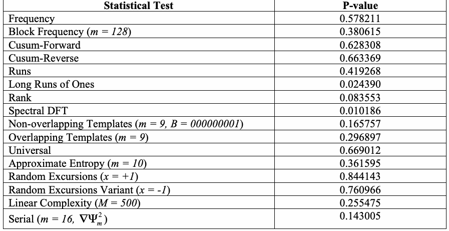
| 統計検定 | P値 |
| 頻度検定 | 0.578211 |
| ブロック頻度検定 (m = 128) | 0.380615 |
| 累積和検定（前方向） | 0.628308 |
| 累積和検定（逆方向） | 0.663369 |
| ラン検定 | 0.419268 |
| 一の最長ラン検定 | 0.024390 |
| ランク検定 | 0.083553 |
| スペクトル検定（DFT） | 0.010186 |
| 非重複テンプレート検定 (m = 9, B = 000000001) | 0.165757 |
| 重複テンプレート検定 (m = 9) | 0.296897 |
| 万能検定 | 0.669012 |
| 近似エントロピー検定 (m = 10) | 0.361595 |
| ランダム逸脱検定 (x = +1) | 0.844143 |
| ランダム逸脱変種検定 (x = -1) | 0.760966 |
| 線形複雑度検定 (M = 500) | 0.255475 |
| 系列検定 (m = 16, ∇Ψ 2 ) m | 0.143005 |
Example #2: The binary expansion of e
例 #2：eの二進展開
未レビュー訳| Statistical Test | P-value |
| Frequency | 0.953749 |
| Block Frequency (m = 128) | 0.211072 |
| Cusum-Forward | 0.669887 |
| Cusum-Reverse | 0.724266 |
| Runs | 0.561917 |
| Long Runs of Ones | 0.718945 |
| Rank | 0.306156 |
| Spectral DFT | 0.847187 |
| NonOverlapping Templates (m = 9, B = 000000001) | 0.078790 |
| Overlapping Templates (m = 9) | 0.110434 |
| Universal | 0.282568 |
| Approximate Entropy (m = 10) | 0.700073 |
| Random Excursions (x = +1) | 0.786868 |
| Random Excursions Variant (x = -1) | 0.826009 |
| Linear Complexity (M = 500) | 0.826335 |
| Serial (m = 16, ∇Ψ 2 ) m | 0.766182 |
原本の表画像
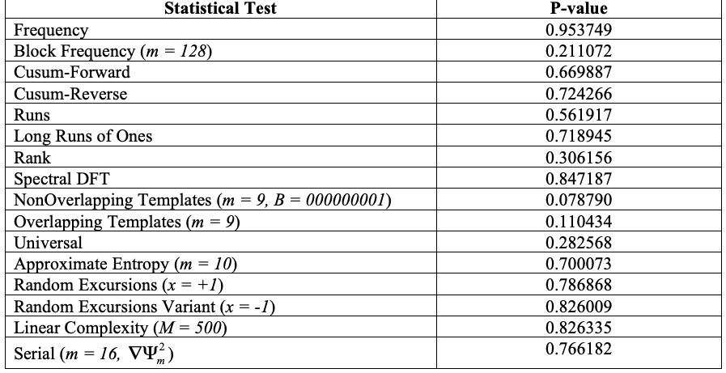
| 統計検定 | P値 |
| 頻度検定 | 0.953749 |
| ブロック頻度検定 (m = 128) | 0.211072 |
| 累積和検定（前方向） | 0.669887 |
| 累積和検定（逆方向） | 0.724266 |
| ラン検定 | 0.561917 |
| 一の最長ラン検定 | 0.718945 |
| ランク検定 | 0.306156 |
| スペクトル検定（DFT） | 0.847187 |
| 非重複テンプレート検定 (m = 9, B = 000000001) | 0.078790 |
| 重複テンプレート検定 (m = 9) | 0.110434 |
| 万能検定 | 0.282568 |
| 近似エントロピー検定 (m = 10) | 0.700073 |
| ランダム逸脱検定 (x = +1) | 0.786868 |
| ランダム逸脱変種検定 (x = -1) | 0.826009 |
| 線形複雑度検定 (M = 500) | 0.826335 |
| 系列検定 (m = 16, ∇Ψ 2 ) m | 0.766182 |
Example #3: A G-SHA-1 binary sequence
例 #3：G-SHA-1の二進系列
未レビュー訳| Statistical Test | P-value |
| Frequency | 0.604458 |
| Block Frequency (m = 128) | 0.091517 |
| Cusum-Forward | 0.451231 |
| Cusum-Reverse | 0.550134 |
| Runs | 0.309757 |
| Long Runs of Ones | 0.657812 |
| Rank | 0.577829 |
| Spectral DFT | 0.163062 |
| NonOverlapping Templates (m = 9, B = 000000001) | 0.496601 |
| Overlapping Templates (m = 9) | 0.339426 |
| Universal | 0.411079 |
| Approximate Entropy (m = 10) | 0.982885 |
| Random Excursions (x = +1) | 0.000000 |
| Random Excursions Variant (x = -1) | 0.000000 |
| Linear Complexity (M = 500) | 0.309412 |
| Serial (m = 16, ∇Ψ 2 ) m | 0.760793 |
原本の表画像
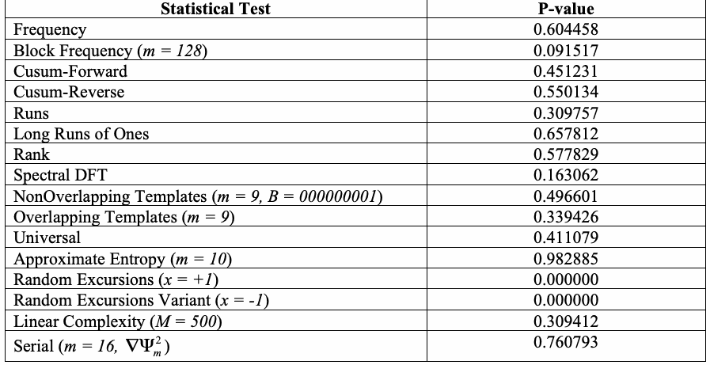
| 統計検定 | P値 |
| 頻度検定 | 0.604458 |
| ブロック頻度検定 (m = 128) | 0.091517 |
| 累積和検定（前方向） | 0.451231 |
| 累積和検定（逆方向） | 0.550134 |
| ラン検定 | 0.309757 |
| 一の最長ラン検定 | 0.657812 |
| ランク検定 | 0.577829 |
| スペクトル検定（DFT） | 0.163062 |
| 非重複テンプレート検定 (m = 9, B = 000000001) | 0.496601 |
| 重複テンプレート検定 (m = 9) | 0.339426 |
| 万能検定 | 0.411079 |
| 近似エントロピー検定 (m = 10) | 0.982885 |
| ランダム逸脱検定 (x = +1) | 0.000000 |
| ランダム逸脱変種検定 (x = -1) | 0.000000 |
| 線形複雑度検定 (M = 500) | 0.309412 |
| 系列検定 (m = 16, ∇Ψ 2 ) m | 0.760793 |
Example #4: The binary expansion of 2
例 #4：√2の二進展開
未レビュー訳| Statistical Test | P-value |
| Frequency | 0.811881 |
| Block Frequency (m = 128) | 0.833222 |
| Cusum-Forward | 0.879009 |
| Cusum-Reverse | 0.957206 |
| Runs | 0.313427 |
| Long Runs of Ones | 0.012117 |
| Rank | 0.823810 |
| Spectral DFT | 0.581909 |
| NonOverlapping Templates (m = 9, B = 000000001) | 0.569461 |
| Overlapping Templates (m = 9) | 0.791982 |
| Universal | 0.130805 |
| Approximate Entropy (m = 10) | 0.884740 |
| Random Excursions (x = +1) | 0.216235 |
| Random Excursions Variant (x = -1) | 0.566118 |
| Linear Complexity (M = 500) | 0.317127 |
| Serial (m = 16, ∇Ψ 2 ) m | 0.861925 |
原本の表画像
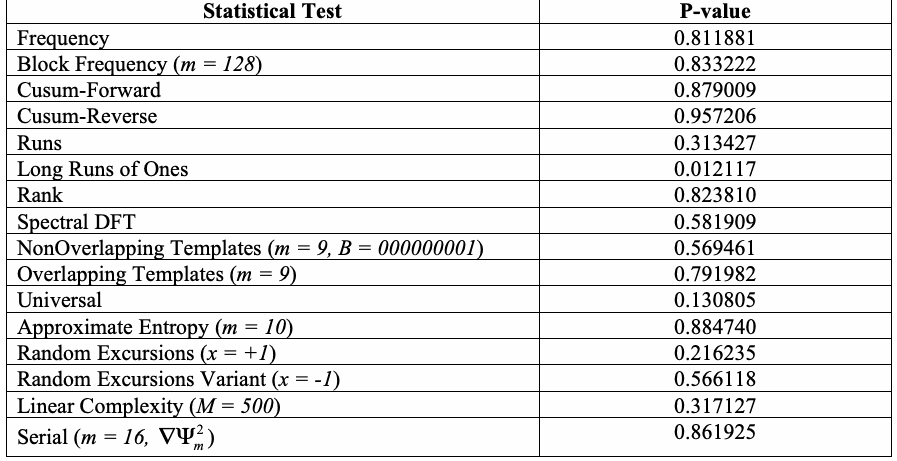
| 統計検定 | P値 |
| 頻度検定 | 0.811881 |
| ブロック頻度検定 (m = 128) | 0.833222 |
| 累積和検定（前方向） | 0.879009 |
| 累積和検定（逆方向） | 0.957206 |
| ラン検定 | 0.313427 |
| 一の最長ラン検定 | 0.012117 |
| ランク検定 | 0.823810 |
| スペクトル検定（DFT） | 0.581909 |
| 非重複テンプレート検定 (m = 9, B = 000000001) | 0.569461 |
| 重複テンプレート検定 (m = 9) | 0.791982 |
| 万能検定 | 0.130805 |
| 近似エントロピー検定 (m = 10) | 0.884740 |
| ランダム逸脱検定 (x = +1) | 0.216235 |
| ランダム逸脱変種検定 (x = -1) | 0.566118 |
| 線形複雑度検定 (M = 500) | 0.317127 |
| 系列検定 (m = 16, ∇Ψ 2 ) m | 0.861925 |
Example #5: The binary expansion of 3
例 #5：√3の二進展開
未レビュー訳| Statistical Test | P-value |
| Frequency | 0.610051 |
| Block Frequency (m = 128) | 0.473961 |
| Cusum-Forward | 0.917121 |
| Cusum-Reverse | 0.689519 |
| Runs | 0.261123 |
| Long Runs of Ones | 0.446726 |
| Rank | 0.314498 |
| Spectral DFT | 0.776046 |
| NonOverlapping Templates (m = 9, B = 000000001) | 0.532235 |
| Overlapping Templates (m = 9) | 0.082716 |
| Universal | 0.165981 |
| Approximate Entropy (m = 10) | 0.180481 |
| Random Excursions (x = +1) | 0.783283 |
| Random Excursions Variant (x = -1) | 0.155066 |
| Linear Complexity (M = 500) | 0.346469 |
| Serial (m = 16, ∇Ψ 2 ) m | 0.157500 |
原本の表画像
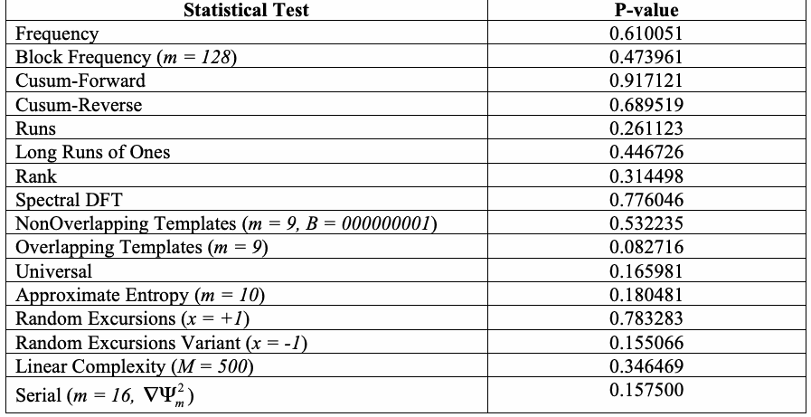
| 統計検定 | P値 |
| 頻度検定 | 0.610051 |
| ブロック頻度検定 (m = 128) | 0.473961 |
| 累積和検定（前方向） | 0.917121 |
| 累積和検定（逆方向） | 0.689519 |
| ラン検定 | 0.261123 |
| 一の最長ラン検定 | 0.446726 |
| ランク検定 | 0.314498 |
| スペクトル検定（DFT） | 0.776046 |
| 非重複テンプレート検定 (m = 9, B = 000000001) | 0.532235 |
| 重複テンプレート検定 (m = 9) | 0.082716 |
| 万能検定 | 0.165981 |
| 近似エントロピー検定 (m = 10) | 0.180481 |
| ランダム逸脱検定 (x = +1) | 0.783283 |
| ランダム逸脱変種検定 (x = -1) | 0.155066 |
| 線形複雑度検定 (M = 500) | 0.346469 |
| 系列検定 (m = 16, ∇Ψ 2 ) m | 0.157500 |
Appendix C—Extending the Test Suite
付録C—検定スイートの拡張
未レビュー訳C.1
C.1
未レビュー訳Incorporating Additional Statistical Tests
追加の統計検定の組み込み
未レビュー訳In order to add another statistical test to the test suite, the user should make the following modifications:
検定スイートに別の統計検定を追加するには、ユーザーは次の変更を行うべきである。
未レビュー訳1.[In the file include/defs.h]
1.[ファイル include/defs.h 内]
未レビュー訳Insert any test input parameters into the _testParameters structure. Increment the value of NUMOFTESTS by the number of tests to be added. Add a define for the new test, for example:
検定の入力パラメータを_testParameters構造体に追加する。追加する検定数だけNUMOFTESTSの値を増やす。例えば、新しい検定用のdefineを追加する：
未レビュー訳#define
#define
未レビュー訳TEST_MYNEWTEST
TEST_MYNEWTEST
未レビュー訳16
未レビュー訳2.[In the file include/decls.h]
2.[ファイル include/decls.h 内]
未レビュー訳Insert the new test name, e.g., “MyNewTest”, into the testNames array.
testNames配列に新しい検定名（例：“MyNewTest”）を追加する。
未レビュー訳3.[In the file include/stat_fncs.h]
3.[ファイル include/stat_fncs.h 内]
未レビュー訳Insert the statistical test function prototype declaration.
統計検定関数のプロトタイプ宣言を追加する。
未レビュー訳4.[In the file src/myNewTest.c]
4.[ファイル src/myNewTest.c 内]
未レビュー訳Define the statistical test function. Note: The programmer should embed fprintf statements using stats[TEST_MYNEWTEST], and results[TEST_MYNEWTEST] as the corresponding output channel for writing intermediate test statistic parameters and P-values, respectively.
統計検定関数を定義する。注：中間の検定統計量パラメータとP値を書き出す対応する出力先として、stats[TEST_MYNEWTEST]およびresults[TEST_MYNEWTEST]を指定したfprintf文をプログラマーが埋め込むべきである。
未レビュー訳5.[In the file src/utilities.c]
5.[ファイル src/utilities.c 内]
未レビュー訳(a) In the function, chooseTests, modify the printf’s to properly display the new test name. For example, change
(a) 関数chooseTests内で、新しい検定名が正しく表示されるようにprintf呼び出しを変更する。例えば、次の行を変更する：
未レビュー訳printf(" [15] Linear Complexity\n\n");
printf(" [15] Linear Complexity\n\n");
未レビュー訳を次のように変更する：
未レビュー訳printf(" [15] Linear Complexity
printf(" [15] Linear Complexity
未レビュー訳[16] MyNewTest\n\n");
[16] MyNewTest\n\n");
未レビュー訳and modify the following lines of code (as modified by the actual number of total tests):
さらに、次のコード行も（検定の総数に応じて変更したうえで）修正する：
未レビュー訳printf(" 1234567891111111\n"); printf("
printf(" 1234567891111111\n"); printf("
未レビュー訳0123456\n");
0123456\n");
未レビュー訳Note: For each PRNG defined in the experiments/ directory, a sub-directory myNewTest must be created.
注：experiments/ディレクトリに定義されている各PRNGについて、サブディレクトリmyNewTestを作成する必要がある。
未レビュー訳(c) If an input test parameter is required, in the function, fixParameters, insert the following lines of code (under the assumption that myNewTestParameter is an integer). For example, insert
(c) 検定の入力パラメータが必要な場合は、関数fixParameters内に次のコード行を挿入する（myNewTestParameterが整数であることを前提とする）。例えば、次を挿入する：
未レビュー訳if ( testVector[TEST_MYNEWTEST] == 1 ) {
if ( testVector[TEST_MYNEWTEST] == 1 ) {
未レビュー訳counter++; if ( counter == testid ) {
counter++; if ( counter == testid ) {
未レビュー訳printf(" Enter MyNewTest Parameter Value: "); scanf("%d", &tp.myNewTestParameter); printf(“\n”); continue;
printf(" Enter MyNewTest Parameter Value: "); scanf("%d", &tp.myNewTestParameter); printf(“\n”); continue;
未レビュー訳}
未レビュー訳}
未レビュー訳(d) Embed the test function call into the nist_test_suite function. For example:
(d) 検定関数呼び出しをnist_test_suite関数に組み込む。例えば：
未レビュー訳if ((testVector[0] == 1) || (testVector[TEST_MYNEWTEST] == 1)) myNewTest(tp.myNewTestInputParameters,tp.n);
if ((testVector[0] == 1) || (testVector[TEST_MYNEWTEST] == 1)) myNewTest(tp.myNewTestInputParameters,tp.n);
未レビュー訳C.2
C.2
未レビュー訳Incorporating Additional PRNGs
追加PRNGの組み込み
未レビュー訳In order to add a PRNG to the test suite, the user should make the following modifications:
PRNGを検定スイートに追加するには、ユーザーは次の変更を行うべきである。
未レビュー訳1.[In the file include/defs.h]
1.[ファイル include/defs.h 内]
未レビュー訳Increment the variable NUMOFGENERATORS by one.
NUMOFGENERATORS変数を一つ増やす。
未レビュー訳2.[In the file include/decls.h]
2.[ファイル include/decls.h 内]
未レビュー訳Insert the new PRNG name into the generatorDir array, For example,
generatorDir配列に新しいPRNG名を追加する。例えば、
未レビュー訳char generatorDir[20][20] = {"AlgorithmTesting",
char generatorDir[20][20] = {"AlgorithmTesting",
未レビュー訳…,"G-SHA1", "MYNEWPRNG"};
…,"G-SHA1", "MYNEWPRNG"};
未レビュー訳3.[In the file include/generators.h]
3.[ファイル include/generators.h 内]
未レビュー訳Insert the generator function prototype declaration. For example,
生成器関数のプロトタイプ宣言を追加する。例えば、
未レビュー訳void myNewPRNG();
void myNewPRNG();
未レビュー訳4.[In the file generators/generators.c]
4.[ファイル generators/generators.c 内]
未レビュー訳Define the generator function. The general scheme for each PRNG defined in the test suite is as follows:
生成器関数を定義する。検定スイートで定義される各PRNGの一般的な処理手順は次のとおりである。
未レビュー訳Allocate space for epsilon, the n-bit BitField array. for i = 1 to numOfBitStreams { Construct an n-bit sequence using myNewGenerator and store in epsilon. Invoke the nist_test_suite. } Deallocate the space given to epsilon.
epsilon（nビットのBitField配列）の領域を確保する。for i = 1 to numOfBitStreams { myNewGeneratorを使用してnビット系列を構築し、epsilonに格納する。nist_test_suiteを呼び出す。} epsilonに割り当てた領域を解放する。
未レビュー訳Note: A sub-directory called myNewPRNG/ must be created in the experiments/ directory. Under this new directory, a set of sub-directories must be created for each of the test suite statistical tests. The script createScript has been included to facilitate this operation.
注：experiments/ディレクトリに定義された各PRNGについて、サブディレクトリmyNewPRNG/を作成する必要がある。この新しいディレクトリ内には、検定スイートの各統計検定用のサブディレクトリ群も作成する必要がある。この処理を容易にするため、createScriptスクリプトが用意されている。
未レビュー訳5.[In the file src/utilities.c]
5.[ファイル src/utilities.c 内]
未レビュー訳(a) In the function, displayGeneratorOptions, inset the following line of code:
(a) displayGeneratorOptions関数内に、次のコード行を挿入する：
未レビュー訳printf(" [10] MyNewPRNG\n\n");
printf(" [10] MyNewPRNG\n\n");
未レビュー訳(b) In the function, generatorOptions, insert the following lines of code:
(b) generatorOptions関数内に、次のコード行を挿入する：
未レビュー訳case 10:
case 10:
未レビュー訳*streamFile = "myNewPRNG"; break;
*streamFile = "myNewPRNG"; break;
未レビュー訳(c) In the function, invokeTestSuite, insert the following lines of code:
(c) invokeTestSuite関数内に、次のコード行を挿入する：
未レビュー訳case 10:
case 10:
未レビュー訳myNewPRNG(); break;
myNewPRNG(); break;
未レビュー訳Appendix D—Description of Reference Pseudorandom Number Generators
付録D—参照用擬似乱数生成器の説明
未レビュー訳The NIST Statistical Test Suite supplies the user with nine pseudo-random number generators. A brief description of each pseudo-random number generator follows. The user supplied sequence length determines the number of iterations for each generator.
NIST統計検定スイートには、九つの擬似乱数生成器が用意されている。各擬似乱数生成器の概要を以下に示す。ユーザーが指定する系列長によって、各生成器の反復回数が決まる。
未レビュー訳D.1
D.1
未レビュー訳Linear Congruential Generator (LCG)
線形合同法生成器（LCG）
未レビュー訳The input parameter for the Fishman and Moore12 LCG13 is fixed in code but may be altered by the user.
FishmanとMoore¹²のLCG¹³の入力パラメータはコード内で固定されているが、ユーザーが変更できる。
未レビュー訳Input Parameter:
入力パラメータ：
未レビュー訳z = 23482349 0
z = 23482349 0
未レビュー訳Description:
説明：
未レビュー訳Given a seed z , subsequent numbers are computed based on z = a*z mod (231-1), where a is a function
シードzが与えられると、後続の数値はz = a*z mod (231-1)に基づいて計算される。ここでaは関数
未レビュー訳0
未レビュー訳i+1 i
i+1 i
未レビュー訳of the current state. These numbers are then converted to uniform values in [0,1]. At each step, output ‘0’ if the number is ≤ 0.5, otherwise output ‘1’.
現在の状態に応じて変化する。これらの数値は[0,1]上の一様な値に変換される。各ステップで、数値が0.5以下なら「0」を出力し、それ以外の場合は「1」を出力する。
未レビュー訳D.2
D.2
未レビュー訳Quadratic Congruential Generator I (QCG-I)
二次合同法生成器I（QCG-I）
未レビュー訳The input parameters to the QCG-I are fixed in code, but may modified by the user.
QCG-Iの入力パラメータはコード内で固定されているが、ユーザーが変更できる。
未レビュー訳Input Parameters:
入力パラメータ：
未レビュー訳p = 987b6a6bf2c56a97291c445409920032499f9ee7ad128301b5d0254aa1a9633fdbd378 d40149f1e23a13849f3d45992f5c4c6b7104099bc301f6005f9d8115e1
p = 987b6a6bf2c56a97291c445409920032499f9ee7ad128301b5d0254aa1a9633fdbd378 d40149f1e23a13849f3d45992f5c4c6b7104099bc301f6005f9d8115e1
未レビュー訳x = 3844506a9456c564b8b8538e0cc15aff46c95e69600f084f0657c2401b3c244734b62e 0 a9bb95be4923b9b7e84eeaf1a224894ef0328d44bc3eb3e983644da3f5
x₀ = 3844506a9456c564b8b8538e0cc15aff46c95e69600f084f0657c2401b3c244734b62ea9bb95be4923b9b7e84eeaf1a224894ef0328d44bc3eb3e983644da3f5
未レビュー訳Description:
説明：
未レビュー訳Using a 512-bit prime p, and a random 512-bit seed x construct subsequent elements (each 512-bit 0, numbers) in the sequence via the rule:
512ビットの素数pとランダムな512ビットのシードx₀を用いて、（各要素は512ビットの数値である）後続の要素を次の規則で生成する：
未レビュー訳x = x 2 mod p, for i ≥0. i+1 i
x_{i+1} = x_i² mod p、i ≥ 0。
未レビュー訳D.3
D.3
未レビュー訳Quadratic Congruential Generator II (QCG-II)
二次合同法生成器II（QCG-II）
未レビュー訳The input parameter to the QCG-II is fixed in code, but may be modified by the user.
QCG-IIの入力パラメータはコード内で固定されているが、ユーザーが変更できる。
未レビュー訳Input Parameter:
入力パラメータ：
未レビュー訳x = 7844506a9456c564b8b8538e0cc15aff46c95e69600f084f0657c2401b3c244734b62e 0 a9bb95be4923b9b7e84eeaf1a224894ef0328d44bc3eb3e983644da3f5
x₀ = 7844506a9456c564b8b8538e0cc15aff46c95e69600f084f0657c2401b3c244734b62ea9bb95be4923b9b7e84eeaf1a224894ef0328d44bc3eb3e983644da3f5
未レビュー訳Description:
説明：
未レビュー訳Using a 512-bit modulus, and a random 512-bit seed x , construct subsequent elements (each 512-bit 0 numbers) in the sequence via the rule:
512ビットの法とランダムな512ビットのシードx₀を用いて、（各要素は512ビットの数値である）後続の要素を次の規則で生成する：
未レビュー訳x = 2x 2 + 3x + 1 mod 2512, for i ≥0. i+1 i i
x_{i+1} = 2x_i² + 3x_i + 1 mod 2⁵¹²、i ≥ 0。
未レビュー訳D.4
D.4
未レビュー訳Cubic Congruential Generator II (CCG)
三次合同法生成器II（CCG）
未レビュー訳The input parameter to the CCG is fixed in code, but may be modified by the user.
CCGの入力パラメータはコード内で固定されているが、ユーザーが変更できる。
未レビュー訳Input Parameter:
入力パラメータ：
未レビュー訳x =7844506a9456c564b8b8538e0cc15aff46c95e69600f084f0657c2401b3c244734b62ea 0 9bb95be4923b9b7e84eeaf1a224894ef0328d44bc3eb3e983644da3f5
x₀ = 7844506a9456c564b8b8538e0cc15aff46c95e69600f084f0657c2401b3c244734b62ea9bb95be4923b9b7e84eeaf1a224894ef0328d44bc3eb3e983644da3f5
未レビュー訳Description:
説明：
未レビュー訳Given a 512 bit seed x , construct subsequent 512-bit strings via the rule:
512ビットのシードxが与えられると、次の規則により後続の512ビット文字列を生成する：
未レビュー訳0
未レビュー訳x = x 3 mod 2512, for i ≥0. i+1 i
x_{i+1} = x_i³ mod 2⁵¹²、i ≥ 0。
未レビュー訳D.5
D.5
未レビュー訳Exclusive OR Generator (XORG)
排他的論理和生成器（XORG）
未レビュー訳The input parameter to the XORG is a 127-bit seed that is fixed in code, but may be user modified.
XORGの入力パラメータは127ビットのシードであり、コード内に固定されているが、ユーザーが変更できる。
未レビュー訳Input Parameter:
入力パラメータ：
未レビュー訳x ,x ,…,x = 00010110110110010001011110010010100110111011010001000000101 1 2 127 01111111010100100001010110110000000000100110000101110011111111100111
x, x, …, x = 00010110110110010001011110010010100110111011010001000000101 1 2 127 01111111010100100001010110110000000000100110000101110011111111100111
未レビュー訳Description:
説明：
未レビュー訳Choose a bit sequence, x ,x ,…,x . Construct subsequent bits via the rule: p = 987b6a6bf2c56a97291c445409920032499f9ee7ad128301b5d0254aa1a9633fdbd378 d40149f1e23a13849f3d45992f5c4c6b7104099bc301f6005f9d8115e1
ビット列x, x, …, xを選択する。後続ビットを次の規則で生成する：p = 987b6a6bf2c56a97291c445409920032499f9ee7ad128301b5d0254aa1a9633fdbd378 d40149f1e23a13849f3d45992f5c4c6b7104099bc301f6005f9d8115e1
未レビュー訳g = 3844506a9456c564b8b8538e0cc15aff46c95e69600f084f0657c2401b3c244734b62ea 9bb95be4923b9b7e84eeaf1a224894ef0328d44bc3eb3e983644da3f5
g = 3844506a9456c564b8b8538e0cc15aff46c95e69600f084f0657c2401b3c244734b62ea9bb95be4923b9b7e84eeaf1a224894ef0328d44bc3eb3e983644da3f5
未レビュー訳Description:
説明：
未レビュー訳A sequence {x } of 512-bit pseudo-random numbers can be generated as follows:
512ビットの擬似乱数列 {x } は、次のように生成できる：
未レビュー訳i
未レビュー訳Choose a 512-bit prime p, and a base g, as in the Digital Signature Standard (DSS). Choose an arbitrary 160-bit seed y. Let x = gseed mod p and x = gyi mod p, for i ≥1 where y is the lowest-order 160 bits
デジタル署名標準（DSS）に従って512ビットの素数pと基数gを選ぶ。任意の160ビットのシードyを選ぶ。x = g^seed mod p、およびx = g^yi mod pとする（i ≥ 1）。ここでyは最下位160ビット
未レビュー訳1
未レビュー訳i+1
i+1
未レビュー訳i
未レビュー訳of x . Splicing together the {x } will generate an n-bit sequence. i i
のx_iである。{x_i}を連結するとnビットの系列が生成される。
未レビュー訳D.7
D.7
未レビュー訳Secure Hash Generator (G-SHA1)
セキュアハッシュ生成器（G-SHA1）
未レビュー訳The input parameters to the G-SHA1 are fixed in code, but may be user modified. The length of the key, keylen should be chosen in the interval [160, 512].
G-SHA1の入力パラメータはコード内に固定されているが、ユーザーが変更できる。鍵の長さkeylenは[160, 512]の範囲から選ぶことが望ましい。
未レビュー訳Input Parameters:
入力パラメータ：
未レビュー訳seedlen = 160 Xseed = 237c5f791c2cfe47bfb16d2d54a0d60665b20904
seedlen = 160 Xseed = 237c5f791c2cfe47bfb16d2d54a0d60665b20904
未レビュー訳keylen = 160 Xkey = ec822a619d6ed5d9492218a7a4c5b15d57c61601
keylen = 160 Xkey = ec822a619d6ed5d9492218a7a4c5b15d57c61601
未レビュー訳Description:
説明：
未レビュー訳For a detailed description of G-SHA1 (the FIPS 186 one-way function using SHA-1), visit http://www.cacr.math.uwaterloo.ca/hac/about/chap5.pdf, especially p. 175.
G-SHA1（SHA-1を使用するFIPS 186の一方向関数）の詳細については、http://www.cacr.math.uwaterloo.ca/hac/about/chap5.pdf を参照。特にp. 175を参照。
未レビュー訳D.8
D.8
未レビュー訳Blum-Blum-Shub (BBSG)
Blum-Blum-Shub（BBSG）
未レビュー訳The input parameters to the BBSG are not fixed in code. They are variable parameters, which are time dependent. The three required parameters are two primes, p and q, and a random integer s.
BBSGの入力パラメータはコード内に固定されていない。これらは時間依存の可変パラメータである。三つの必須パラメータは、二つの素数p、qと、乱数整数sである。
未レビュー訳Input Parameters:
入力パラメータ：
未レビュー訳Two primes p and q such that each is congruent to 3 modulo 4. A random integer s (the seed), selected in the interval [1, pq-1] such that gcd(s,pq) = 1. The parameters p, q and s are not fixed in code; thus, the user will not be able to reconstruct the original sequence because these values will vary (i.e., they are dependent on the system time). The input parameters have been fixed so the code will reproduce the same results.
それぞれ4を法として3に合同な二つの素数p、q。乱数整数s（シード）は、gcd(s,pq) = 1となるよう、区間[1, pq-1]から選択する。パラメータp、q、sはコード内に固定されていない。そのため、これらの値は変化し（すなわちシステム時刻に依存し）、ユーザーは元の系列を再構成できない。入力パラメータは、コードが同じ結果を再現するよう固定されている。
未レビュー訳Description:
説明：
未レビュー訳For a detailed description of the Blum-Blum-Shub pseudo-random number generator, visit http://www.cacr.math.uwaterloo.ca/hac/about/chap5.pdf, especially p. 186.
Blum-Blum-Shub擬似乱数生成器の詳細については、http://www.cacr.math.uwaterloo.ca/hac/about/chap5.pdf を参照。特にp. 186を参照。
未レビュー訳D.9
D.9
未レビュー訳Micali-Schnorr Generator (MSG)
Micali-Schnorr生成器（MSG）
未レビュー訳The input parameters to the MSG are not fixed in code. They are variable parameters, which are time dependent. The four required parameters are two primes, p and q, an integer e, and the seed x .
MSGの入力パラメータはコード内に固定されていない。これらは時間依存の可変パラメータである。四つの必須パラメータは、二つの素数p、q、整数e、およびシードxである。
未レビュー訳0
未レビュー訳Input Parameters:
入力パラメータ：
未レビュー訳Two primes p and q. A parameter e, selected such that 1 < e < φ= (p-1)(q-1), gcd(e, φ) = 1, and 80e < N = floor(lg n + 1). A random sequence x (the seed) consisting of r (a function of e and n) bits is chosen.
二つの素数p、q。パラメータeは、1 < e < φ= (p-1)(q-1)、gcd(e, φ) = 1、および80e < N = floor(lg n + 1)を満たすように選択する。rビットからなるランダム系列x（シード）が選択される（rはeおよびnの関数）。
未レビュー訳0
未レビュー訳The parameters e, p, q, and x are not fixed in code; thus, the user will not be able to reconstruct the
パラメータe、p、q、xはコード内に固定されていない。そのため、ユーザーは元の系列を再構成できない。
未レビュー訳0
未レビュー訳original sequence because these values will vary (i.e., they are dependent on the system time). The input parameters have been fixed so the code will reproduce the same results.
これらの値は変化するためである（すなわちシステム時刻に依存する）。入力パラメータは、コードが同じ結果を再現するよう固定されている。
未レビュー訳Description:
説明：
未レビュー訳For a detailed description of the Micali-Schnorr pseudo-random number generator, visit http://www.cacr.math.uwaterloo.ca/hac/about/chap5.pdf, especially p. 186.
Micali-Schnorr擬似乱数生成器の詳細については、http://www.cacr.math.uwaterloo.ca/hac/about/chap5.pdf を参照。特にp. 186を参照。
未レビュー訳D.10
D.10
未レビュー訳Test Results
検定結果
未レビュー訳The following table depicts test-by-test failures for the above reference generators.
次の表に、上記の参照生成器について、検定ごとの失敗を示す。
未レビュー訳| Statistical Test | ExcessiveR ejections | Lacks Uniformity | Generator |
| Frequency | X | X | Modular Exponentiation |
| X | X | Cubic Congruential | |
| X | X | Quadratic Congruential (Type I) | |
| Block Frequency | X | Cubic Congruential | |
| X | X | XOR | |
| Cusum | X | X | Micali-Schnorr |
| X | X | Modular Exponentiation | |
| X | X | Cubic Congruential | |
| X | X | Quadratic Congruential (Type I) | |
| Runs | X | Modular Exponentiation | |
| X | X | Cubic Congruential | |
| X | Quadratic Congruential (Type I) | ||
| Rank | X | X | XOR |
| Spectral | X | X | Cubic Congruential |
| X | Quadratic Congruential (Type II) | ||
| Aperiodic Templates | X | ANSI X9.17 | |
| X | Micali-Schnorr | ||
| X | Modular Exponentiation | ||
| X | X | Cubic Congruential | |
| X | Quadratic Congruential (Type I) | ||
| X | Quadratic Congruential (Type II) | ||
| X | X | XOR | |
| Periodic Templates | X | Modular Exponentiation | |
| X | X | XOR | |
| Approximate Entropy | X | X | Modular Exponentiation |
| X | X | Cubic Congruential | |
| X | X | Quadratic Congruential (Type I) | |
| X | X | XOR | |
| Serial | X | X | Modular Exponentiation |
| X | X | Cubic Congruential | |
| X | X | Quadratic Congruential (Type I) | |
| X | X | XOR |
原本の表画像

| 統計検定 | 過剰棄却 | 一様性の欠如 | 生成器 |
| 頻度 | X | X | モジュラー累乗 |
| X | X | 三次合同法 | |
| X | X | 二次合同法（Type I） | |
| ブロック頻度 | X | 三次合同法 | |
| X | X | XOR | |
| 累積和（CUSUM） | X | X | Micali-Schnorr |
| X | X | モジュラー累乗 | |
| X | X | 三次合同法 | |
| X | X | 二次合同法（Type I） | |
| ラン | X | モジュラー累乗 | |
| X | X | 三次合同法 | |
| X | 二次合同法（Type I） | ||
| 階数 | X | X | XOR |
| スペクトル | X | X | 三次合同法 |
| X | 二次合同法（Type II） | ||
| 非周期テンプレート | X | ANSI X9.17 | |
| X | Micali-Schnorr | ||
| X | モジュラー累乗 | ||
| X | X | 三次合同法 | |
| X | 二次合同法（Type I） | ||
| X | 二次合同法（Type II） | ||
| X | X | XOR | |
| 周期テンプレート | X | モジュラー累乗 | |
| X | X | XOR | |
| 近似エントロピー | X | X | モジュラー累乗 |
| X | X | 三次合同法 | |
| X | X | 二次合同法（Type I） | |
| X | X | XOR | |
| シリアル | X | X | モジュラー累乗 |
| X | X | 三次合同法 | |
| X | X | 二次合同法（Type I） | |
| X | X | XOR |
Table D.1: Illustration of Rejection/Uniformity Failures
表D.1：棄却／一様性の失敗例
未レビュー訳Appendix E—Numerical Algorithm Issues
付録E—数値アルゴリズムに関する問題
未レビュー訳For each binary sequence, an individual statistical test must produce at least one P-value. P-values are based on the evaluation of special functions, which must be as accurate as possible on the target platform. The log files produced by each statistical test report P-values with six digits of precision, which should be sufficient. However, if greater precision is desired, modify the printf statements in each statistical test accordingly.
各二進系列について、個々の統計検定は少なくとも一つのP値を出力しなければならない。P値は特殊関数の評価に基づくため、対象プラットフォーム上で可能な限り正確でなければならない。各統計検定のログファイルにはP値が六桁の精度で記録され、この精度で十分と考えられる。ただし、より高い精度が必要な場合は、各統計検定のprintf文をそれに応じて変更する。
未レビュー訳During the testing phase, NIST commonly evaluated sequences on the order 106; hence, results are based on this assumption. If the user wishes to choose longer sequence lengths, then be aware that numerical computations may be inaccurate due to machine or algorithmic limitations. For further information on numerical analysis matters, see [6]14.
試験段階では、NISTは通常10⁶程度の系列を評価していたため、結果はこの前提に基づく。より長い系列長を選択する場合、機械またはアルゴリズムの制約によって数値計算が不正確になる可能性があることに注意する。数値解析の詳細については文献[6]¹⁴を参照。
未レビュー訳For the purposes of illustration, sample parameter values and corresponding special function values are shown in Table E.1 and Table E.2. Table E.1 compares the results for the incomplete gamma function for selected parameter values for a and x. The results are shown for Maple15, Matlab10, and the Numerical Recipe16 routines. Recall that the definitions for the gamma function and the incomplete gamma function are defined, respectively, as: Γ(z) = ∫∞tz−1e−tdt 0
例示のため、サンプルのパラメータ値と対応する特殊関数値を表E.1および表E.2に示す。表E.1では、選択したaおよびxのパラメータ値について、不完全ガンマ関数の結果を比較する。結果はMaple¹⁵、Matlab¹⁰、およびNumerical Recipes¹⁶のルーチンについて示す。ガンマ関数と不完全ガンマ関数の定義は、それぞれ次のとおりである： Γ(z) = ∫₀^∞ t^{z−1} e^{−t} dt
未レビュー訳Γ(a, x) 1 ∞
Γ(a, x) 1 ∞
未レビュー訳= ∫ e−tt a−1dt ,
= ∫ e^{−t} t^{a−1} dt,
未レビュー訳Q(a, x) =
Q(a, x) =
未レビュー訳Γ(a) Γ(a) x
Γ(a) Γ(a) x
未レビュー訳where Q(a,0) = 1 and Q(a,∞) = 0.
ここで、Q(a, 0) = 1、Q(a, ∞) = 0である。
未レビュー訳Since the algorithm used in the test suite implementation of the incomplete gamma function is based on the numerical recipe codes, it is evident that the function is accurate to at least the seventh decimal place. For large values of a, the precision will degrade, as will confidence in the result (unless a computer algebra system is employed to ensure high precision computations).
検定スイートの不完全ガンマ関数の実装で使用されるアルゴリズムはNumerical Recipesのコードに基づいているため、この関数は少なくとも小数第七位まで正確であることが分かる。aの値が大きい場合、精度が低下し、それに伴って結果への信頼性も低下する（高精度計算を保証するために数式処理システムを用いる場合を除く）。
未レビュー訳Table E.2 compares the results for the complementary error function (see Section 5.3.3) for selected parameter values for x. The results are shown for ANSI C, Maple, and Matlab. Recall that the definition for the complementary error function is: 2 ∞
表E.2では、選択したxのパラメータ値に対する相補誤差関数の結果を比較する（5.3.3節参照）。結果はANSI C、Maple、およびMatlabについて示す。相補誤差関数の定義は次のとおりである：2 ∞
未レビュー訳−u2
−u²
未レビュー訳erfc(z) =
erfc(z) =
未レビュー訳e du ∫ π z
e du ∫ π z
未レビュー訳| a = x = 600 | Q(a,x) | a = x = 800 | Q(a,x) |
| Maple Matlab Test Suite | 0.4945710333 0.4945710331 0.4945710331 | Maple Matlab Test Suite | 0.4952983876 0.4952983876 0.4952983876 |
| a = x = 1000 | Q(a,x) | a = x = 10000 | Q(a,x) |
| Maple Matlab Test Suite | 0.4957947559 0.4957947558 0.4957947558 | Maple Matlab Test Suite | 0.4986701918 0.4986701917 0.4986701917 |
| a = x = 100000 | Q(a,x) | a = x = 1000000 | Q(a,x) |
| Maple Matlab Test Suite | 0.4995794779 0.4995794779 0.4995794778 | Maple Matlab Test Suite | 0.4998670192 0.4998670196 0.4998670205 |
原本の表画像

| a = x = 600 | Q(a,x) | a = x = 800 | Q(a,x) |
| Maple Matlab テストスイート | 0.4945710333 0.4945710331 0.4945710331 | Maple Matlab テストスイート | 0.4952983876 0.4952983876 0.4952983876 |
| a = x = 1000 | Q(a,x) | a = x = 10000 | Q(a,x) |
| Maple Matlab テストスイート | 0.4957947559 0.4957947558 0.4957947558 | Maple Matlab テストスイート | 0.4986701918 0.4986701917 0.4986701917 |
| a = x = 100000 | Q(a,x) | a = x = 1000000 | Q(a,x) |
| Maple Matlab テストスイート | 0.4995794779 0.4995794779 0.4995794778 | Maple Matlab テストスイート | 0.4998670192 0.4998670196 0.4998670205 |
Table E.1: Selected Input Parameters for the Incomplete Gamma Function
表E.1：不完全ガンマ関数の選択入力パラメータ
未レビュー訳| x | erfc(x) | x | erfc(x) |
| 0.00 / Test Suite Maple Matlab | 1.000000000000000 1.000000000000000 1.000000000000000 | 0.50 / Test Suite Maple Matlab | 0.479500122186953 0.479500122186950 0.479500122186953 |
| 1.00 / Test Suite Maple Matlab | 0.157299207050285 0.157299207050280 0.157299207050285 | 1.50 / Test Suite Maple Matlab | 0.033894853524689 0.033894853524690 0.033894853524689 |
| 2.00 / Test Suite Maple Matlab | 0.004677734981047 0.004677734981050 0.004677734981047 | 2.50 / Test Suite Maple Matlab | 0.000406952017445 0.000406952017440 0.000406952017445 |
| 3.00 / Test Suite Maple Matlab | 0.000022090496999 0.000022090497000 0.000022090496999 | 3.50 / Test Suite Maple Matlab | 0.000000743098372 0.000000743098370 0.000000743098372 |
原本の表画像

| x | erfc(x) | x | erfc(x) |
| 0.00 / テストスイート Maple Matlab | 1.000000000000000 1.000000000000000 1.000000000000000 | 0.50 / テストスイート Maple Matlab | 0.479500122186953 0.479500122186950 0.479500122186953 |
| 1.00 / テストスイート Maple Matlab | 0.157299207050285 0.157299207050280 0.157299207050285 | 1.50 / テストスイート Maple Matlab | 0.033894853524689 0.033894853524690 0.033894853524689 |
| 2.00 / テストスイート Maple Matlab | 0.004677734981047 0.004677734981050 0.004677734981047 | 2.50 / テストスイート Maple Matlab | 0.000406952017445 0.000406952017440 0.000406952017445 |
| 3.00 / テストスイート Maple Matlab | 0.000022090496999 0.000022090497000 0.000022090496999 | 3.50 / テストスイート Maple Matlab | 0.000000743098372 0.000000743098370 0.000000743098372 |
Table E.2: Selected Input Parameters for the Complementary Error Function
表E.2：相補誤差関数の選択入力パラメータ
未レビュー訳Thus, it is evident that the various math routines produce results that are sufficiently close to each other. The differences are negligible. To reduce the likelihood for obtaining an inaccurate P-value result, NIST has prescribed recommended input parameters.
したがって、各種数学ルーチンが十分に近い結果を返すことは明らかであり、その差は無視できる。不正確なP値が得られる可能性を減らすため、NISTは推奨入力パラメータを定めている。
未レビュー訳E-2
E-2
未レビュー訳Appendix F—Supporting Software
付録F—補助ソフトウェア
未レビュー訳F.1
F.1
未レビュー訳Rank Computation of Binary Matrices
二進行列の階数計算
未レビュー訳Apply elementary row operations where the addition operator is taken to be the exclusive-OR operation. The matrices are reduced to upper triangular form using forward row operations, and the operation is repeated in reverse in order using backward row operations in order to arrive at a matrix in triangular form. The rank is then taken to be the number of nonzero rows in the resulting Gaussian reduced matrix.
加算演算子を排他的論理和（XOR）とする基本行操作を適用する。行列は前進行操作によって上三角形式に簡約し、続いて逆順に後退行操作を適用して三角形式の行列を得る。階数は、ガウス消去法で簡約した結果の行列にある非ゼロ行の数とする。
未レビュー訳Forward Application of Elementary Row Operations:
基本行操作の前進適用：
未レビュー訳Let each element in the m by m matrix be designated as a
m×m行列の各要素をaで表す。
未レビュー訳i,j
i,j
未レビュー訳1.Set i = 1
1.i = 1を設定する。
未レビュー訳2.If element a = 0 (i.e., the element on the diagonal ≠ 1), then swap all elements in the ith row i,i with all elements in the next row that contains a one in the ith column (i.e., this row is the kth row, where i < k ≤m) . If no row contains a “1” in this position, go to step 4.
2.要素a_{i,i} = 0（すなわち、対角要素が1ではない）の場合、i行の全要素を、i列に一を含む次の行（k行、ただし i < k ≤ m）にある対応する要素と入れ替える。この位置に1を含む行がなければ、ステップ4へ進む。
未レビュー訳3.If element a = 1 , then if any subsequent row contains a “1” in the ith column, replace each i,i element in that row with the exclusive-OR of that element and the corresponding element in the ith row.
3.要素a_{i,i} = 1の場合、後続行のいずれかがi列に1を含むなら、その行の各要素を、その要素とi行の対応する要素との排他的論理和に置き換える。
未レビュー訳a. Set row = i + 1 b. Set col=i. c. If a = 0, then go to step 3g. row,col d. a = a ⊕ a row,col row,col i,col e. If col=m, then go to step 3g. f. col=col+1; go to step 3d. g. If row = m, then go to step 4. h. row=row+1; go to step 3b.
a. row = i + 1とする。 b. col = iとする。 c. a_{row,col} = 0なら、ステップ3gへ進む。 d. a_{row,col} = a_{row,col} ⊕ a_{i,col}。 e. col = mなら、ステップ3gへ進む。 f. col = col + 1とし、ステップ3dへ進む。 g. row = mなら、ステップ4へ進む。 h. row = row + 1とし、ステップ3bへ進む。
未レビュー訳4.If i<m-1, then i=i+1; go to step 2.
4.i < m-1なら、i = i + 1とし、ステップ2へ進む。
未レビュー訳5.Forward row operations completed.
5.前進行操作が完了。
未レビュー訳Backward Application of Elementary Row Operations:
基本行操作の後退適用：
未レビュー訳1.Set i=m.
1.i = mを設定する。
未レビュー訳2.If element a = 0 (i.e., the element on the diagonal ≠ 1), then swap all elements in the ith row i,i with all elements in the next row that contains a one in the ith column (i.e., this row is the kth row, where 1 ≤ k < i) . If no row contains a “1” in this position, go to step 4.
2.要素a_{i,i} = 0（すなわち、対角要素が1ではない）の場合、i行の全要素を、i列に一を含む次の行（k行、ただし 1 ≤ k < i）にある対応する要素と入れ替える。この位置に1を含む行がなければ、ステップ4へ進む。
未レビュー訳3.If element a = 1 , then if any preceding row contains a “1” in the ith column, replace each i,i element in that row with the exclusive-OR of that element and the corresponding element in the ith row.
3.要素a_{i,i} = 1の場合、先行行のいずれかがi列に1を含むなら、その行の各要素を、その要素とi行の対応する要素との排他的論理和に置き換える。
未レビュー訳F-1 a. Set row = i - 1 b. Set col=i. c. If a = 0, then go to step 3g. row,col d. a = a ⊕ a row,col row,col i,col e. If col= 1, then go to step 3g. f. col=col – 1; go to step 3d. g. If row = 1, then go to step 4. h. row=row-1; go to step 3b.
F-1 a. row = i - 1とする。 b. col = iとする。 c. a_{row,col} = 0なら、ステップ3gへ進む。 d. a_{row,col} = a_{row,col} ⊕ a_{i,col}。 e. col = 1なら、ステップ3gへ進む。 f. col = col - 1とし、ステップ3dへ進む。 g. row = 1なら、ステップ4へ進む。 h. row = row - 1とし、ステップ3bへ進む。
未レビュー訳4.If i>2, then i=i-1 and go to step 2.
4.i > 2なら、i = i - 1とし、ステップ2へ進む。
未レビュー訳5.Backward row operation complete.
5.後退行操作が完了。
未レビュー訳6.The rank of the matrix = the number of non-zero rows.
6.行列の階数は、非ゼロ行の数である。
未レビュー訳Example of Forward Row Operations:
前進行操作の例：
未レビュー訳| A | 1 0 0 0 0 0 0 0 0 0 0 1 1 0 0 0 0 1 1 0 1 0 1 0 0 0 1 0 1 1 0 0 0 0 1 0 | The original matrix. |
| B | 1 0 0 0 0 0 0 0 0 0 0 1 0 0 0 0 0 1 0 0 1 0 1 0 0 0 1 0 1 1 0 0 0 0 1 0 | Since a = 1 and rows 3 and 4 contain a 1 in the first column (see the original 1,1 matrix), rows 3 and 4 are replaced by the exclusive-OR of that row and row 1. |
| C | 1 0 0 0 0 0 0 0 0 0 0 1 0 0 0 0 0 1 0 0 1 0 1 0 0 0 1 0 1 1 0 0 0 0 1 0 | Since a ≠1 and no other row contains a “1” in this column (see B), the 2,2 matrix is not altered. |
原本の表画像
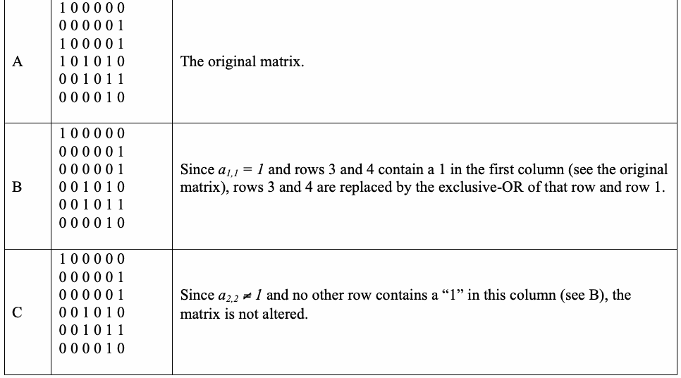
| A | 1 0 0 0 0 0 0 0 0 0 0 1 1 0 0 0 0 1 1 0 1 0 1 0 0 0 1 0 1 1 0 0 0 0 1 0 | 元の行列。 |
| B | 1 0 0 0 0 0 0 0 0 0 0 1 0 0 0 0 0 1 0 0 1 0 1 0 0 0 1 0 1 1 0 0 0 0 1 0 | a_{1,1} = 1であり、3行目と4行目が最初の列に1を含むため（元の行列を参照）、3行目および4行目を、それぞれ1行目との排他的論理和に置き換える。 |
| C | 1 0 0 0 0 0 0 0 0 0 0 1 0 0 0 0 0 1 0 0 1 0 1 0 0 0 1 0 1 1 0 0 0 0 1 0 | a_{2,2} ≠ 1であり、この列に「1」を含む他の行がないため（Bを参照）、行列は変更されない。 |
F-2
F-2
未レビュー訳| D | 1 0 0 0 0 0 0 0 0 0 0 1 0 0 1 0 1 0 0 0 0 0 0 1 0 0 1 0 1 1 0 0 0 0 1 0 | Since a ≠1, but the 4th row contains a “1” in the 3rd column (see B or C), the 3,3 two rows are switched. |
| E | 1 0 0 0 0 0 0 0 0 0 0 1 0 0 1 0 1 0 0 0 0 0 0 1 0 0 0 0 0 1 0 0 0 0 1 0 | Since row 5 contains a “1” in the 3rd column (see D), row 5 is replaced by the exclusive-OR of row 1 and row 5. |
| F | 1 0 0 0 0 0 0 0 0 0 0 1 0 0 1 0 1 0 0 0 0 0 0 1 0 0 0 0 0 1 0 0 0 0 1 0 | Since a ≠1 and no other row contains a “1” in this column (see E), the 4,4 matrix is not altered. |
| G | 1 0 0 0 0 0 0 0 0 0 0 1 0 0 1 0 1 0 0 0 0 0 0 1 0 0 0 0 1 0 0 0 0 0 0 1 | Since a ≠ 1, but row 6 contains a 1 in column 5 (see F), the two rows are 5,5 switched. Since no row below this contains a “1” in the 5th column, the end of the forward process is complete. |
原本の表画像
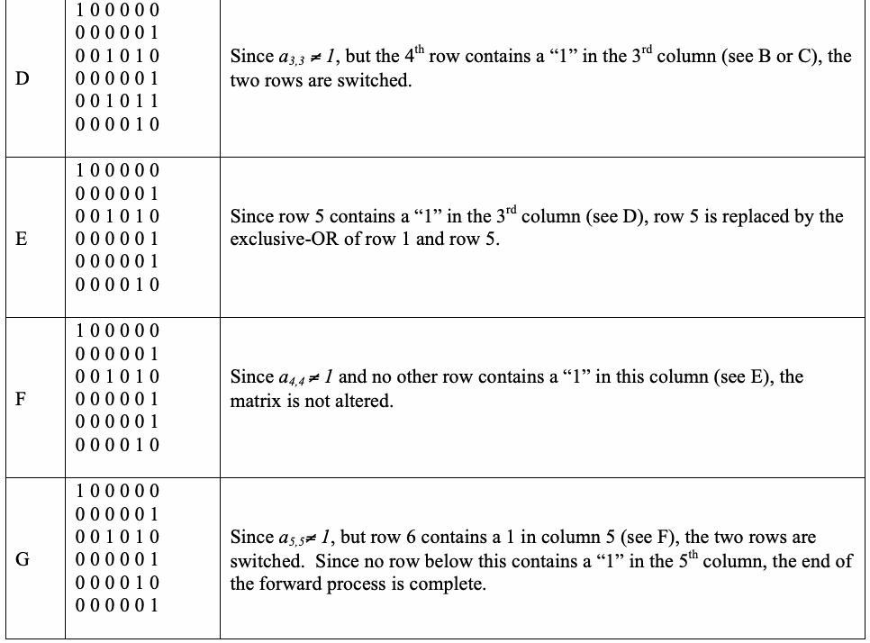
| D | 1 0 0 0 0 0 0 0 0 0 0 1 0 0 1 0 1 0 0 0 0 0 0 1 0 0 1 0 1 1 0 0 0 0 1 0 | a_{3,3} ≠ 1だが、4行目の3列目に「1」がある（BまたはCを参照）ため、二行を入れ替える。 |
| E | 1 0 0 0 0 0 0 0 0 0 0 1 0 0 1 0 1 0 0 0 0 0 0 1 0 0 0 0 0 1 0 0 0 0 1 0 | 5行目の3列目に「1」があるため（Dを参照）、5行目を1行目と5行目の排他的論理和に置き換える。 |
| F | 1 0 0 0 0 0 0 0 0 0 0 1 0 0 1 0 1 0 0 0 0 0 0 1 0 0 0 0 0 1 0 0 0 0 1 0 | a_{4,4} ≠ 1であり、この列に「1」を含む他の行がないため（Eを参照）、行列は変更されない。 |
| G | 1 0 0 0 0 0 0 0 0 0 0 1 0 0 1 0 1 0 0 0 0 0 0 1 0 0 0 0 1 0 0 0 0 0 0 1 | a_{5,5} ≠ 1だが、6行目の5列目に1がある（Fを参照）ため、二行を入れ替える。この列の5行目より下に「1」を含む行はないため、前進処理は完了する。 |
The Subsequent Backward Row Operations:
後退行操作の続き：
未レビュー訳| H | 1 0 0 0 0 0 0 0 0 0 0 0 0 0 1 0 1 0 0 0 0 0 0 0 0 0 0 0 1 0 0 0 0 0 0 1 | Since a = 1 and rows 2 and 4 contain ones in the 6th column (see G), rows 2 6,6 and 4 are replaced by the exclusive-OR of that row and row 6. |
原本の表画像
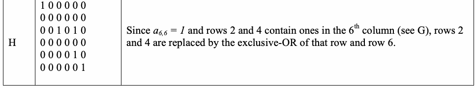
| H | 1 0 0 0 0 0 0 0 0 0 0 0 0 0 1 0 1 0 0 0 0 0 0 0 0 0 0 0 1 0 0 0 0 0 0 1 | a_{6,6} = 1であり、2行目と4行目が6列目に一を含むため（Gを参照）、2行目および4行目を、それぞれ6行目との排他的論理和に置き換える。 |
F-3
F-3
未レビュー訳| I | 1 0 0 0 0 0 0 0 0 0 0 0 0 0 1 0 0 0 0 0 0 0 0 0 0 0 0 0 1 0 0 0 0 0 0 1 | Since a = 1and row 3 contains a one in the 5th column (see H), row 3 is 5,5 replaced by the exclusive-OR or row 3 and row 5. |
| J | 1 0 0 0 0 0 0 0 0 0 0 0 0 0 1 0 0 0 0 0 0 0 0 0 0 0 0 0 1 0 0 0 0 0 0 1 | Since a ≠1 and no other row has a one in column 4, the matrix is not altered. 4,4 |
| K | 1 0 0 0 0 0 0 0 0 0 0 0 0 0 1 0 0 0 0 0 0 0 0 0 0 0 0 0 1 0 0 0 0 0 0 1 | Since a = 1, but no other row has a one in column 3, the matrix is not 3,3 altered. |
| L | 1 0 0 0 0 0 0 0 0 0 0 0 0 0 1 0 0 0 0 0 0 0 0 0 0 0 0 0 1 0 0 0 0 0 0 1 | Since a ≠1 and no other row has a one in column 2, the matrix is not altered, 2,2 and he process is complete. |
原本の表画像
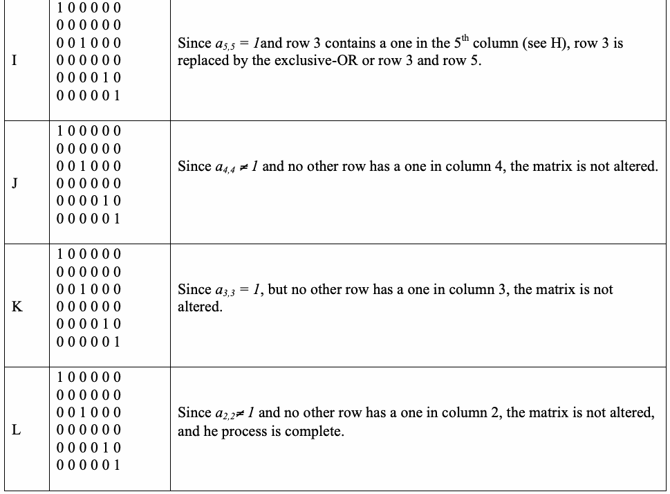
| I | 1 0 0 0 0 0 0 0 0 0 0 0 0 0 1 0 0 0 0 0 0 0 0 0 0 0 0 0 1 0 0 0 0 0 0 1 | a_{5,5} = 1であり、3行目の5列目に一があるため（Hを参照）、3行目を3行目と5行目の排他的論理和に置き換える。 |
| J | 1 0 0 0 0 0 0 0 0 0 0 0 0 0 1 0 0 0 0 0 0 0 0 0 0 0 0 0 1 0 0 0 0 0 0 1 | a_{4,4} ≠ 1であり、4列目に一を含む他の行がないため、行列は変更されない。 |
| K | 1 0 0 0 0 0 0 0 0 0 0 0 0 0 1 0 0 0 0 0 0 0 0 0 0 0 0 0 1 0 0 0 0 0 0 1 | a_{3,3} = 1だが、3列目に一を含む他の行がないため、行列は変更されない。 |
| L | 1 0 0 0 0 0 0 0 0 0 0 0 0 0 1 0 0 0 0 0 0 0 0 0 0 0 0 0 1 0 0 0 0 0 0 1 | a_{2,2} ≠ 1であり、2列目に一を含む他の行がないため、行列は変更されず、処理は完了する。 |
Since the final form of the matrix has 4 non-zero rows, the rank of the matrix is 4.
行列の最終形には非ゼロ行が4つあるため、行列の階数は4である。
未レビュー訳F.2
F.2
未レビュー訳Construction of Aperiodic Templates
非周期テンプレートの構築
未レビュー訳For the purposes of executing the Non-overlapping Template Matching statistical test, all 2m m-bit binary sequences that are aperiodic were pre-computed. These templates, or patterns, were stored in a file for m = 2 to m = 21. The ANSI-C program utilized in finding these templates is provided below. By modifying the parameter M, the template library corresponding to the template can be constructed. This parameter value should not exceed B, since the dec2bin conversion routine will not operate correctly. Conceivably, this source code can be easily modified to construct arbitrary 2m m-bit binary sequences for larger m.
非重複テンプレートマッチング統計検定を実行するため、非周期的な2^m個のmビット二進系列をすべて事前に計算した。これらのテンプレート（パターン）は、m = 2からm = 21までファイルに保存されている。テンプレートの検索に使用したANSI-Cプログラムを以下に示す。パラメータMを変更すると、該当するテンプレートライブラリを構築できる。このパラメータ値はBを超えないことが望ましい。超えるとdec2bin変換ルーチンが正しく動作しない。理論上、このソースコードは、より大きなmについて任意の2^m個のmビット二進系列を構築するよう容易に変更できる。
未レビュー訳F-4
F-4
未レビュー訳#include <stdio.h> #include <math.h>
#include <stdio.h> #include <math.h>
未レビュー訳#define B 32 #define M 6
#define B 32 #define M 6
未レビュー訳int *A; static long nonPeriodic; unsigned displayBits(FILE*, long, long);
int *A; static long nonPeriodic; unsigned displayBits(FILE*, long, long);
未レビュー訳int main() { FILE *fp1, *fp2; long i, j, count, num;
int main() { FILE *fp1, *fp2; long i, j, count, num;
未レビュー訳A = (unsigned*) calloc(B,sizeof(unsigned)); fp1 = fopen("template", "w"); fp2 = fopen("dataInfo", "a"); num = pow(2,M); count = log(num)/log(2); nonPeriodic = 0; for(i = 1; i < num; i++) displayBits(fp1, i,count); fprintf(fp2,"M = %d\n", M); fprintf(fp2,"# of nonperiodic templates = %u\n", nonPeriodic); fprintf(fp2,"# of all possible templates = %u\n", num); fprintf(fp2,"{# nonperiodic}/{# templates} = %f\n", (double)nonPeriodic/num); fprintf(fp2,"==========================================================\n"); fclose(fp1); fclose(fp2); free(A);
A = (unsigned*) calloc(B,sizeof(unsigned)); fp1 = fopen("template", "w"); fp2 = fopen("dataInfo", "a"); num = pow(2,M); count = log(num)/log(2); nonPeriodic = 0; for(i = 1; i < num; i++) displayBits(fp1, i,count); fprintf(fp2,"M = %d\n", M); fprintf(fp2,"# of nonperiodic templates = %u\n", nonPeriodic); fprintf(fp2,"# of all possible templates = %u\n", num); fprintf(fp2,"{# nonperiodic}/{# templates} = %f\n", (double)nonPeriodic/num); fprintf(fp2,"==========================================================\n"); fclose(fp1); fclose(fp2); free(A);
未レビュー訳return 0; }
return 0; }
未レビュー訳void displayBits(FILE* fp, long value, long count) { int i, j, match, c, displayMask = 1 << (B-1);
void displayBits(FILE* fp, long value, long count) { int i, j, match, c, displayMask = 1 << (B-1);
未レビュー訳for(i = 0; i < B; i++) A[i] = 0; for(c = 1; c <= B; c++) { if (value & displayMask) A[c-1] = 1; else A[c-1] = 0; value <<= 1; }
for(i = 0; i < B; i++) A[i] = 0; for(c = 1; c <= B; c++) { if (value & displayMask) A[c-1] = 1; else A[c-1] = 0; value <<= 1; }
未レビュー訳F-5 for(i = 1; i < count; i++) { match = 1; if ((A[B-count]!= A[B-1]) &&
F-5 for(i = 1; i < count; i++) { match = 1; if ((A[B-count]!= A[B-1]) &&
未レビュー訳((A[B-count]!= A[B-2])||(A[B-count+1] != A[B-1]))) { for(c = B-count; c <= (B-1)-i; c++) { if (A[c] != A[c+i]) {
((A[B-count]!= A[B-2])||(A[B-count+1] != A[B-1]))) { for(c = B-count; c <= (B-1)-i; c++) { if (A[c] != A[c+i]) {
未レビュー訳match = 0; break; }
match = 0; break; }
未レビュー訳} } if (match) { /* printf("\nPERIODIC TEMPLATE: SHIFT = %d\n",i); */ break; }
} } if (match) { /* printf("\nPERIODIC TEMPLATE: SHIFT = %d\n",i); */ break; }
未レビュー訳} if (!match) { for(c = B-count; c < (B-1); c++) fprintf(fp,"%u",A[c]); fprintf(fp,"%u\n", A[B-1]); nonPeriodic++; }
} if (!match) { for(c = B-count; c < (B-1); c++) fprintf(fp,"%u",A[c]); fprintf(fp,"%u\n", A[B-1]); nonPeriodic++; }
未レビュー訳return; }
return; }
未レビュー訳F-6
F-6
未レビュー訳F.3
F.3
未レビュー訳Generation of the Binary Expansion of Irrational Numbers
無理数の二進展開の生成
未レビュー訳The sample Mathematica program utilized in constructing four sample files is shown below.
四つのサンプルファイルを作成するために使用したMathematicaプログラムの例を以下に示す。
未レビュー訳Mathematica Program
Mathematicaプログラム
未レビュー訳(************************************************************) (* Purpose: Converts num to its decimal expansion using *) (*
(************************************************************) (* 目的：numを十進展開に変換するには、 *) (*
未レビュー訳its binary representation.
その二進表現を使用する。
未レビュー訳*)
未レビュー訳(*
未レビュー訳*)
未レビュー訳(* Caution: The $MaxPrecision variable must be set to
(* 注意：$MaxPrecision変数は次の値に設定しなければならない
未レビュー訳*)
未レビュー訳(*
未レビュー訳the value of d. By default, Mathematica *)
dの値である。デフォルトではMathematicaは
未レビュー訳(*
未レビュー訳sets this to 50000, but this can be increased.*)
これを50000に設定するが、さらに大きくできる。*)
未レビュー訳(************************************************************)
(************************************************************)
未レビュー訳BinExp[num_,d_] := Module[{n,L},
BinExp[num_,d_] := Module[{n,L},
未レビュー訳If[d > $MaxPrecision, $MaxPrecision = d]; n = N[num,d]; L = First[RealDigits[n,2]] ];
If[d > $MaxPrecision, $MaxPrecision = d]; n = N[num,d]; L = First[RealDigits[n,2]] ];
未レビュー訳SE = BinExp[E,302500]; Save["data.e",{SE}];
SE = BinExp[E,302500]; Save["data.e",{SE}];
未レビュー訳SP = BinExp[Pi,302500]; Save["data.pi",{SP}];
SP = BinExp[Pi,302500]; Save["data.pi",{SP}];
未レビュー訳S2 = BinExp[Sqrt[2],302500]; Save["data.sqrt2",{S2}];
S2 = BinExp[Sqrt[2],302500]; Save["data.sqrt2",{S2}];
未レビュー訳S3 = BinExp[Sqrt[3],302500]; Save["data.sqrt3",{S3}];
S3 = BinExp[Sqrt[3],302500]; Save["data.sqrt3",{S3}];
未レビュー訳F-7
F-7
未レビュー訳Appendix G—References
付録G—参考文献
未レビュー訳[1] M. Abramowitz and I. Stegun, Handbook of Mathematical Functions, Applied Mathematics Series. Vol. 55, Washington: National Bureau of Standards, 1964; reprinted 1968 by Dover
[1] M. Abramowitz and I. Stegun, Handbook of Mathematical Functions, Applied Mathematics Series. Vol. 55, Washington: National Bureau of Standards, 1964; reprinted 1968 by Dover
未レビュー訳Publications, New York.
Publications, New York.
未レビュー訳[2] T. Cormen, C. Leiserson, & R. Rivest, Introduction to Algorithms. Cambridge, MA: The MIT
[2] T. Cormen, C. Leiserson, & R. Rivest, Introduction to Algorithms. Cambridge, MA: The MIT
未レビュー訳Press, 1990.
Press, 1990.
未レビュー訳[3] Gustafson et al., “A computer package for measuring strength of encryption algorithms,” Journal
[3] Gustafson et al., “A computer package for measuring strength of encryption algorithms,” Journal
未レビュー訳of Computers & Security. Vol. 13, No. 8, 1994, pp. 687-697.
of Computers & Security. Vol. 13, No. 8, 1994, pp. 687-697.
未レビュー訳[4] U. Maurer, “A Universal Statistical Test for Random Bit Generators,” Journal of Cryptology.
[4] U. Maurer, “A Universal Statistical Test for Random Bit Generators,” Journal of Cryptology.
未レビュー訳Vol. 5, No. 2, 1992, pp. 89-105.
Vol. 5, No. 2, 1992, pp. 89-105.
未レビュー訳[5] A. Menezes, et al., Handbook of Applied Cryptography. CRC Press, Inc., 1997. See http://www.cacr.math.uwaterloo.ca/hac/about/chap5.pdf.
[5] A. Menezes, et al., Handbook of Applied Cryptography. CRC Press, Inc., 1997. See http://www.cacr.math.uwaterloo.ca/hac/about/chap5.pdf.
未レビュー訳[6] W. Press, S. Teukolsky, W. Vetterling, Numerical Recipes in C : The Art of Scientific Computing, 2nd Edition. Cambridge University Press, January 1993.
[6] W. Press, S. Teukolsky, W. Vetterling, Numerical Recipes in C : The Art of Scientific Computing, 2nd Edition. Cambridge University Press, January 1993.
未レビュー訳[7] G. Marsaglia, DIEHARD Statistical Tests: http://www.stat.fsu.edu/pub/diehard/.
[7] G. Marsaglia, DIEHARD Statistical Tests: http://www.stat.fsu.edu/pub/diehard/.
未レビュー訳[8] T. Ritter, “Randomness Tests and Related Topics,
[8] T. Ritter, “Randomness Tests and Related Topics,
未レビュー訳http://www.ciphersbyritter.com/RES/RANDTEST.HTM.
http://www.ciphersbyritter.com/RES/RANDTEST.HTM.
未レビュー訳[9] American National Standards Institute: Financial Institution Key Management (Wholesale), American Bankers Association, ANSI X9.17 - 1985 (Reaffirmed 1991).
[9] American National Standards Institute: Financial Institution Key Management (Wholesale), American Bankers Association, ANSI X9.17 - 1985 (Reaffirmed 1991).
未レビュー訳[10] FIPS 140-1, Security Requirements for Cryptographic Modules, Federal Information Processing Standards Publication 140-1. U.S. Department of Commerce/NIST, National Technical
[10] FIPS 140-1, Security Requirements for Cryptographic Modules, Federal Information Processing Standards Publication 140-1. U.S. Department of Commerce/NIST, National Technical
未レビュー訳Information Service, Springfield, VA, 1994.
Information Service, Springfield, VA, 1994.
未レビュー訳[11] FIPS 180-1, Secure Hash Standard, Federal Information Processing Standards Publication 180-1. U.S. Department of Commerce/NIST, National Technical Information Service, Springfield, VA,
[11] FIPS 180-1, Secure Hash Standard, Federal Information Processing Standards Publication 180-1. U.S. Department of Commerce/NIST, National Technical Information Service, Springfield, VA,
未レビュー訳April 17, 1995.
四月17日、1995年。
未レビュー訳[12] FIPS 186, Digital Signature Standard (DSS), Federal Information Processing Standards
[12] FIPS 186、デジタル署名標準（DSS）、連邦情報処理標準
未レビュー訳Publication 186. U.S. Department of Commerce/NIST, National Technical Information Service, Springfield, VA, May 19, 1994.
刊行物第186号。米国商務省/NIST、National Technical Information Service、Springfield, VA、五月19日、1994年。
未レビュー訳[13] MAPLE, A Computer Algebra System (CAS). Available from Waterloo Maple Inc.;
[13] MAPLE、コンピューター代数システム（CAS）。Waterloo Maple Inc.から入手可能；
未レビュー訳http://www.maplesoft.com.
http://www.maplesoft.com.
未レビュー訳G-1
G-1
未レビュー訳